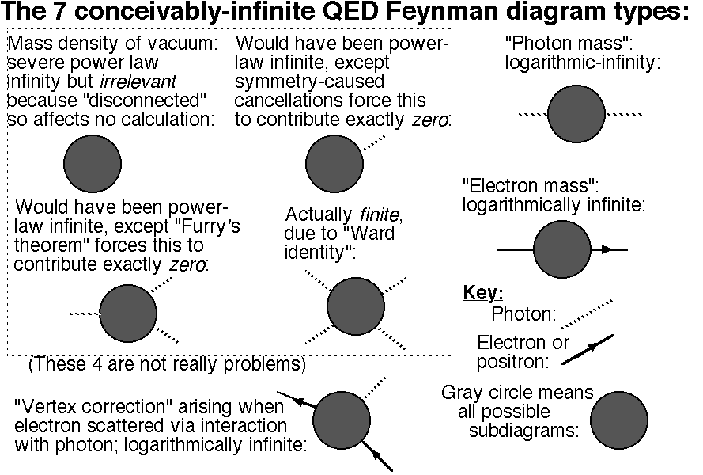
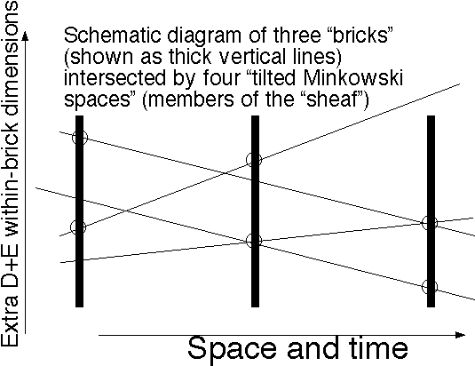

By Warren D. Smith, warren.wds@gmail.com,
first draft October 2010; second draft April 2012; third draft August 2012;
fourth November 2013; now about 200 pages
Abstract.
Book length (but has concise summary).
We propose some simple ideas about the microscopic metrical structure of spacetime
(named "rain of bricks") which appear to
accomplish Dirac and Feynman's 60-80 year-old
dream of converting quantum electrodynamics (QED) into a
mathematically well-defined –
entirely-finite without need for either "renormalization,"
"UV cutoffs," or series-truncation –
falsifiable theory algorithmic to arbitrary accuracy.
Indeed, these ideas appear to work not only for QED, but also for a wide class of
infrared-finite renormalizable quantum field theories (IRFrQFT).
I concentrate on QED merely because I understand it the best, and
it is the simplest, oldest, and most experimentally successful among the QFTs proposed
to explain physics.
The rain of bricks idea apparently can be implemented in many
inequivalent ways, but there seems to be a largely
unique
version distinguished from the herd by a combination of better properties,
greater symmetry, tractability, and/or simplicity.
The strongest rain of bricks versions seem able to convert power-law infinities
∫1<z<∞zPdz lurking in old-style QFT physics
to finitude,
not only for any fixed degree P, but indeed even profusions of infinities with
unboundedly-great P can be handled if they have "bounded degree per Feynman vertex."
This looks enough even to regularize nonrenormalizable QFTs
such as gravitons. By setting rain of bricks in de Sitter rather than Minkowski space
(which we show yields "triply-special relativity"; and conversely we argue that
doubly- or triply-SR logically forces something like rain of bricks),
it looks like QFT infrared infinities also automatically are squelched. Also de Sitter
seems both necessary and sufficient to stop perturbative series from diverging.
Exact forms of
"unitarity," "causality," "gauge invariance," and "Lorentz invariance"
all still hold, but have to be stated/interpreted differently.
But rain of bricks also predicts some new effects such as now-imprecise conservation
of angular momentum (but it becomes arbitrarily precise the larger
the radii and timespan of your observations),
a fixed "temperature floor" of ≈4×10-138 Kelvin,
funny effects when attempts are made to accelerate particles to super-Planckian energies,
and the automatic presence of "dephasing/decoherence" in
principle
measurable even by observers who can only access energy scales far below
(and length scales far above) Planckian.
Rain of bricks automatically causes "position-based decoherence"
thus resolving issues associated with "measurement" and "non-locality" in the
foundations of quantum mechanics.
Many new results are found (and old errors corrected) along the way, which should retain
their value even if the overall rain of bricks picture is doomed by some stupid flaw.
My own view is that all of the successful field theories of which we are so proud – electrodynamics, the electroweak theory, quantum chromodynamics, and even General Relativity – are in truth effective field theories, only with a much larger characteristic energy, something like the Planck energy... None of the renormalizable versions of these theories really describes nature at very high energy, where the non-renormalizable terms in the theory are not suppressed... The challenge for the future is to find the final underlying theory, to which the effective field theories of the standard model and General Relativity are low-energy approximations... It is possible... that the ingredients of the [final] theory are not the quark, lepton and gauge boson fields of the Standard Model, but something quite different, such as strings. But there is another possibility. The underlying theory may be an ordinary quantum field theory, including fields for gravitation and the ingredients of the Standard Model. Of course, it could not be renormalizable in the Dyson sense...
– Steven Weinberg 2009, describing his personal views/speculations.
If one applies the prescriptions of relativistic quantum mechanics to waves... one encounters infinities... This contradiction does not really mean that quantum, relativity, or waves are false, but rather shows that when they are combined a universal constant with the dimensions of length must somehow be introduced.
– Werner Heisenberg [my free translation of a quote within Z.für Physik 101 (1936) 533-540. This paper is now known to be silly, but this particular quote is insightful. Although Heisenberg thought of using the Planck length, he seemed to prefer a length scale from meson theory. Heisenberg made an initial sketch of a "lattice universe" theory in which spacetime had a discrete cell-structure, but within a few months abandoned it as obviously wrong – presumably the foremost reason being that it destroys relativistic invariance. That history partially recounted by Carazza & Kragh 1995.]
QED's original goal was to be the correct theory of physics if the only particles were electrons, positrons, and photons (i.e. if gravity and the weak and strong forces did not exist). QED can also readily handle certain other things such as additional kinds of oversimplified particles – e.g. non-decaying "muons" and spinless point-charge "atomic nuclei" – and imposed conditions such as "an ellipsoidal cavity with perfectly reflecting walls containing a uniform magnetic field."
For background in the area, take a few years to digest the books by Peskin & Schroeder 1995, Mandl & Shaw 1993, Nash 1978, Brown 1992, Greiner & Reinhardt 1994, Jauch & Rohrlich 1976, 't Hooft 2010, Dyson 2006, Bjorken & Drell 1964 & 1965, Collins 1986, Smirnov 2006, Veltman 1994, and Zee 2003 (and a "poetic" popular-science look at QED is Feynman 1985) while trying not to be too shocked by the contradictions within and among these. The two best textbooks to learn from for me were Peskin & Schroeder and/or Greiner & Reinhardt, but they must be taken in combination with Collins. A very compressed review is chapter 1 of Kreimer 2000. In terms of clarity and honesty, the best book is Folland 2008, but it is much less ambitious than most in scope. Schweber 1961 is superior to others in the respect that it supplies more information about old history.
Unfortunately QED as developed by Feynman, Dyson, et al has (as they were aware) severe foundational problems. These problems seem at least as bad in other QFTs such as electroweak and chromodynamics, and far worse, to the extent where we become completely helpless, for "nonrenormalizable" QFTs such as for "gravitons."
The first main goal of this paper is to salvage perturbational QED by postulating that the metrical structure of spacetime differs from that of Minkowski (1+3)-space at small length scales. We construct particular metrical structures, called "rain of bricks," which resemble the Minkowski metric viewed at human length scales, but not small ones. In particular rain of bricks spacetime is microscopically "lower dimensional." QFTs in new improved universes of this sort do not exhibit infinities anymore at any finite order in perturbation theory and we do not need either "renormalization" or artificial "cutoffs" to get rid of them. But we still enjoy Poincare/Lorentz invariance, gauge invariance, conservation laws, and unitarity (in suitable precisely-stated, but somewhat weakened/different, senses).
At that point, we have saved perturbational QED – and probably also all the other QFTs in the "standard model," although I have not examined them as carefully – and done so "algorithmically," i.e. all the outputs of the theory are computable by algorithm to arbitrary (user-specifiable) accuracy. However, the perturbative power series that QED outputs, still may diverge. Indeed, we present new (and old) divergence arguments strongly suggesting that generic QED and QCD series (for old-style QCD, without rain of bricks) diverge so severely that neither Borel summation – even in LeRoy's generalized form – nor indeed any series "summation" method based solely on the coefficients in the power series, can rescue them, and even with rain of bricks we still have an argument for convergence-radius zero in QED.
Our second main goal is to save full QED.
Astonishingly, it appears that setting up rain of bricks in a de Sitter curved
spacetime (rather than flat Minkowski spacetime) "background"
is essential to cause series convergence.
We then have arguments for convergence for all sufficiently small
At that point we have constructed at least one plausible candidate for "rigorous QED."
The third goal then is: what about other quantum field theories, including QCD and gravitons? Although we discuss these less, we explain why it is plausible that our ideas also can rigorize them, in which case one could get for the first time a fully rigorous combined QFT+gravity theory. However, it currently is not clear how best to proceed and what happens to various key questions when one tries to incorporate gravitons. I think they probably can be incorporated, but a systematic investigation of the possible ways to do so, and what happens in each, would be necessary and I have not done it.
Warning: At present, I have not fully rigorously completed any of the three tasks, especially the third; see lacunae summary §39. It looks like they can be done, but reaching the present point (of plausible future success) has already taken ≈200 pages. In fact, this whole paper can be regarded as a "nonrigorous proof that there exists a rigorous proof"!
Along the way, we shall discover numerous new results, e.g:
These should retain value even if the overarching plan somehow self-destructs.
§4 describes what is wrong with old-style QED and related QFTs:
§5 and §6 review series-divergence arguments. The first and still one of the nicest such arguments was made for QED by Dyson 1952. However there were lacunae and errors in Dyson's argument, some of which which we point out and repair here perhaps for the first time. We also exhibit several other divergence arguments besides Dyson's, and for other QFTs beside QED, and which tell us other things besides mere divergence, such as how fast it diverges and what can be deduced about the analyticity properties (or lack thereof) of the QED/QCD functions the series is trying to represent. All these arguments are nonrigorous but I consider their net impact nevertheless highly convincing and illuminating.
§7 says what a "rigorous QED" would be... it would solve all those problems.
§8 , to be fair, discusses a few of the most impressive accomplishments of QED and by QEDists, while also availing ourselves of the opportunity to state a few new results, and to make a few down-to-earth remarks about the current state of the art and with some statistical examination of just what QED computers have found over the last 50 years.
§9 discusses "noisy distances," which in §10 is shown to be one way to implement "doubly special" (and "triply special") relativity; rain of bricks is another. Quantum gravity facts about the inexact measurabiity of distances, etc, are derived in §11 which also corrects numerous wrong papers in the literature.
In §12-14 we finally(!) begin explaining what our proposed cure – "rain of bricks" – is. Rain of bricks depends on 3 or 4 new postulates about nature (re-listed in abbreviated form for easy access in §42). These postulates say, roughly, that spacetime has a certain (specified) metrical structure different than the classical (3+1)D "Minkowski spacetime" continuum, and explain how to "do physics" within that universe.
There are many possible inequivalent and equivalent alternative forms for the postulates, but it turns out that the vast majority of the attempts can be argued for one (sometimes quite nontrivial) reason or another to be wrong. These wrong postulates and wrongness-arguments will consume a good deal of space throughout the paper, but the net effect (which I had not expected when I began this project) is that very few possibilities survive, and rain of bricks then is remarkably unique or nearly. My current recommendation is 1-dimensional spatial-only circular bricks in de Sitter spacetime.
§15-31 discuss a large number of topics in rain of bricks physics including conservation laws, unitarity, Lorentz invariance and other symmetries, causality, energy cutoff effects, Casimir force, and black hole entropy. All key puzzles in those areas seem solved (or largely so). One might naively have expected symmetries and conservation laws with rain of bricks no longer to be exactly obeyed, but instead merely to be approximately obeyed and exact only in certain limits such as ρrain→∞ and with all particle energies small in comparison to Planck scale. But surprisingly they all can be formulated/interpreted in such a way that they can be regarded as exact. In §32 it is argued that rain of bricks actually is the same or more symmetric (hence presumably more attractive) than old-style QFT physics, also contrary to what one might have naively thought. One further could claim that all the usual "Lorentz & gauge" symmetry arguments for why physics "had to" have the "propagation" equations it does (Maxwell, Dirac, Klein-Gordon) still work in rain of bricks; only "interaction" is altered. In §33 we argue rain of bricks also solves the "quantum weirdness" problem, obsoleting an enormous raft of papers about "interpretation of quantum mechanics," the "philosphical meaning" of "measurement," its "nonlocality," etc. (E.g. see Goldstein 1998 for three approaches, all of which – he admits right at the end – all totally fail as far as he knows, when relativity is introduced.)
§24 was added well after most everything else in this paper was done, when I discovered that about 10 theoretical physicists had been working along a rather different line of investigation: S.Weinberg's "asymptotic safety" program for hopefully saving gravity as a QFT. Their parallel investigation to mine led to some fascinating/provocative similar tentative conclusions! Namely that line of investigation (as well as several other independent ideas discussed in Carlip 2012) seems to force spacetime to "appear dimensionally reduced at short length scales." This could be interpreted as further supporting evidence for the rain of bricks picture, or evidence of the necessity of something like it.
§36-38 examine the convergence (or not) of the α-power series generated by perturbative rain of bricks QED, finding the remarkable result that there should be everywhere-divergence in Minkowski spacetime but convergence if rain of bricks is set in de Sitter space. The point of rain of bricks was to abolish "ultraviolet infinities" and the need for "renormalization" and "cutoffs" thus saving perturbative QED; the new point is with de Sitter we get series convergence thus also saving, or actually for the first time creating, nonperturbative QED.
§39 highlights ways in which this paper's arguments fall short of rigor and perfection. Hopefully we clarify what we really know after the investigations herein, versus what we have merely made very highly (or less) plausible. (See also the "open problems" section §43.) I reiterate that this whole paper can be regarded as a "nonrigorous proof that there exists a rigorous proof." (To anybody who objects: I think this is closer to full rigor than ever before, and hopefully will enable it after an additional 200 pages.) §41-§42 attempt to conclude/summarize/review the paper including comparing rain of bricks versus superstrings and other rivals.
We shall normally employ either Planck units c=ℏ=G=1, (see §3; 2πℏ=h) or SI units. We use signature +---. Our notations for special functions follow Abramowitz & Stegun 1972 and the software system MAPLE; for Gegenbauer functions (which are only lightly covered by A&S and unavailable in MAPLE) see the papers by Durand (also discussed by Szmytkowski 2007). We let ΩD=2πD/2/Γ(D/2) be the surface (D-1)-area of a unit-radius sphere in Euclidean D-space: Ω1=2, Ω2=2π, Ω3=4π, Ω4=2π2. The reader will need to know complex analysis and advanced matrix algebra.
| Reduced Compton wavelength of electron | ℏ/(mec) | 3.8615926800(25)×10-13 meter = 2.38923(12)×1022Lpl | |
| QED time scale | ℏ/(mec2) | 1.2880886570(18)×10-21 second = 2.38923(12)×1022tpl | |
| Mass of electron | me | 9.10938291(40)×10-31 kg = 4.18545(21)×10-23Mpl | |
| Energy of electron | mec2 | 8.18710506(36)×10-14 Joule | |
| Electron |Charge| | e | 1.602176565(35)×10-19 Coulomb = 0.0854245429(29) qpl | |
| Fine structure constant | α=e2/(2ε0hc) | 0.0072973525698(24) = 1/137.035999074(44) [dimensionless number] | |
| Strong force coupling constant | αS at MZ | 0.1184(7)=1/8.446(50) [dimensionless number] | |
| Weak force coupling constant | αW=α/sin(θW)2 at MZ | 0.031568(16) = 1/31.678(16) [dimensionless number] | |
| Units arising naturally in quantum gravity: | |||
| Planck length | Lpl=(ℏG/c3)1/2 | 1.616199(97)×10-35 meter | |
| Planck time | tpl=(ℏG/c5)1/2 | 5.39106(32)×10-44 second | |
| Planck mass | Mpl=(ℏc/G)1/2 | 2.17651(13)×10-8 kg = 2.38952(12)×1022me | |
| Planck energy | Mplc2=(ℏc5/G)1/2 | 1.95609(10)×109 Joule = 1.220932(73)×1019 GeV | |
| Planck 4D number density | c7(ℏG)-2 | 4.39492(88)×10147 (meter3second)-1 | |
| Planck charge | qpl=(2ε0hc)1/2 | 1.875545870(47)×10-18 Coulomb = 11.70623764(41) e | |
| Cosmology-related quantities: | |||
| Hubble "constant" | H | 2.32(10)×10-18second-1 ≈ 1.26(5)×10-61 (tPl)-1 | |
| Einstein Cosmical constant | ΛEin | 1.18(10)×10-35second-2 ≈ 3.43(29)×10-122 (tPl)-2 | |
| Age of universe | (13.75±0.11) Gyr | 4.339(35)×109second ≈ 8.048(20)×1052 tPl | |
Notes:
Most values are from CODATA 2006 but a few have been updated to CODATA 2010.
My sin(θW)2=0.23116(12) and hence
cos(θW)2=0.76884(12)
values for the
Weinberg weak-mixing angle at MZ=91.1876(21) GeV/c2,
the mass of the Z boson,
and my αS=0.1184(7) value, all are from
Particle Data
Group 2012.
Other important particle masses:
Mtop quark=173.07(80) GeV/c2,
MW=80.385(15) GeV/c2,
Mhiggs=125.6(6) GeV/c2,
Mmuon=105.6583715(35) MeV/c2,
Mtauon=1.77682(16) GeV/c2.
Other quarks
are much lighter than the top, e.g. the down and up quarks, which
are the only stable ones, have masses 1.7-3.1 and 4.1-5.7 MeV/c2.
My value H=71.6±3.0 km/s/Mpc
was based on 5 experimental values
{73.8±2.4,
67.0±3.2,
72.6±3.1,
71.0±2.5,
77±11.5}
published during 2006-2011 and mentioned in
the wikipedia article
Hubble constant.
(I've put a somewhat mysterious
combined error estimate which hopefully errs on the side of conservativism.)
I calculated the Λ value from Λ=3H2f,
where the fraction f of the universe's mass density attributable to
the cosmical constant is f=0.728(16) based on numbers
in the wikipedia article
Lambda-CDM model,
and I'm assuming the total mass density (including ordinary and dark matter, energy,
and cosmical constant) exactly equals the so-called "critical density"
(it does, experimentally, to within a factor 1.0023±0.0056).
The reader is warned that
this web site
used essentially the same technique but based on older published experimental data to
get Λ=1.62(09)×10-35second-2
which is hugely outside our error bounds. Many other estimates of
Λ have been published which also lie well outside
our error bars, ranging from 0.6 to 6 times
P.A.M.Dirac (1902-1984):
"Sensible mathematics involves neglecting a quantity when it is small –
not neglecting it because it is infinitely great and you do not want it!"
"[Renormalization in QED involves] a drastic departure from logic. It changes
the whole character of the theory, from logical deductions to mere setting up of working rules."
"Some physicists may be happy to have a set of working rules leading
to results in agreement with observation. They may think this is the
goal of physics. But it is not enough. One wants to understand how
nature works."
Dirac even went so far as to opine that it was misguided to investigate
deeper theories of particle physics such as QCD until
the foundational difficulties with QED had been cleared up.
[See Dirac's short papers of 1981 and 1990 for his final statements on the topic;
see pp.115-116 & 291
of S.Weinberg: Dreams of a final theory (Pantheon 1992) for a short
account of
a debate between Weinberg and Dirac on this in the 1970s.
Weinberg seems to think
he won, but then seems to think the Landau pole
means he ultimately lost. Indeed, Weinberg later (2009) proposed the
"asymptotic safety"
idea as a way to perhaps allow QFTs to "live with infinities."
It certainly is logically possible for a renormalizable QFT to feature
"infinitely large" quantities which genuinely have only small effects –
unphysical toy QFTs have been constructed for which this has been proven.
But the Landau pole indicates that that is not the case for QED, in which case Dirac's
view must be considered to be the winning one.]
R.P.Feynman (1918-1988): Always regarded QED as merely an "effective field theory." In his view "renormalization" was intended as a stopgap measure, a trick, intended to circumvent the fact that we did not know the true theory of physics. Unrenormalized QED yields certain physically-insane infinities, which cleverly contrived "renormalization" processes convert to correct-valued finite quantities. (For example, QED predicts the "mass of the electron" is "infinity" but the renormalization manually erases all the terms responsible for that and replaces them with new expressions which by design yield the experimental value.) The unknown true theory of physics would simply have yielded the correct finite values. The same view was held by QED's independent inventor Julian Schwinger (1918-1994), who, e.g, wrote (Schwinger 1948 p.416 – the paper with historically the very first reasonably complete understanding of the situation – describing the purpose and method of renormalization, our emphasis added):
Electrodynamics unquestionably requires revision at ultra-high energies, but is presumably accurate at moderate relativistic energies. It would be desirable, therefore, to isolate those aspects of the current theory that essentially involve high energies, and are subject to modification by a more satisfactory theory, from aspects that involve only moderate energy and are thus relatively trustworthy. This goal has been achieved by transforming the Hamiltonian of current electrodynamics to exhibit explicitly the logarithmically divergent self-energy of the free electron, which arises from virtual emission and absorption of light quanta. This electromagnetic self-energy... can be ascribed to an electromagnetic mass, which must be added to the mechanical mass of the free electron. Indeed the only meaningful statements of the theory involve this combination, which is the experimental electron mass... It is important to note that [this mass-adjustment] does not avoid all divergences; the polarization of the vacuum produces [another]. However, it has long been recognized [this was a reference to a 1934 lecture by Dirac] that such a term is equivalent to altering the electron charge by a constant factor, only the final value being identified with the experimental charge. Thus the interaction between matter and radiation produces a renormalization of the electron charge and mass, all divergencies being contained in the renormalization factors.
Feynman and Schwinger's surprising point was that by means of these tricks many of the (unknown) deficiencies of QED versus the (unknown) correct theory, could be effectively corrected! Feynman also said the following to his biographer Mehra only 1 month before he died (Mehra §15.8):
I knew that the way I had cut off [the singularities] destroyed unitary... Only the limit was presumably OK. I believed there was a way of cutting the theory off somehow which wouldn't destroy anything, wasn't artificial, or just a mathematical trick. It could be solved. With the finite cut-off the theory would be sound by itself. And the real theory [should be] the limit of that. So I delayed [publishing]... But thank God I did [publish] because it has never been straightened out to this day.
I thought perhaps Schwinger had straightened it out because he had a great reputation, but when I thought about what he did, I realized he had in his work the same problem in another form. [And so] I knew we both hadn't solved... quantum electrodynamics in the sense of finding a sound theory the limit of which is electrodynamics; we couldn't prove that the electrodynamics we were writing was self consistent – [it's] possibly not unitary, possibly incorrect, very likely is so, but it's never been resolved. It has never been proved one way or the other whether electrodynamics renormalizes a consistent theory.
My response to those Feynman quotes: First of all, which Feynman probably knew, "dimensional regularization" as introduced by t'Hooft & Veltman 1972 (see also Leibbrandt 1975, Veltman 1994), is a way to "cut off singularities" in QEDN (that is, QED at any particular perturbative order N) which manifestly is Lorentz covariant, and which yields S-matrices which preserve probability, i.e. respect "unitarity," and are "causal." Also, this with summation over all diagrams at a given order N yields gauge-invariant results for QED (albeit this is untrue for individual Feynman diagrams, and in fancier "non-abelian gauge theories" one must also add "ghost particles" to restore gauge invariant results). But I think Feynman would contend that even QEDN using dimensional regularization to obtain a UV cutoff, still "does not make sense by itself." But: Rain of bricks seems to yield a "finitely cut-off" QED that is "sound by itself" and if true does yield an "understanding of how nature works."
Freeman Dyson (1923- ): Dyson was very discouraged by his 1952 discovery of a highly convincing simple argument (but not a proof) that essentially every QED perturbative series either diverges or fails to represent physics. Then Hurst 1952 incompletely and Thirring 1953 completely proved divergence in an artificial unphysical (1+3)-dimensional quantum field theory "λφ3 theory." A perhaps more impressive result along the same lines is Jaffe 1965, where a wide class of unphysically-low-dimensional boson QFTs are proved to have always-divergent perturbation series, albeit Jaffe also showed that "renormalization" causes each individual term in those series to be finite. Then Lautrup 1977 proved a certain infinite explicit subsequence of QED "Feynman diagrams," one for each order N≥1, arising in computing the ratio of the magnetic moment of the electron divided by the Bohr magneton, had value
for its coefficient of αN. (This is Lautrup's starred equation on the right of his p.349, but replace his n by N-1 and multiply by π-N.) Note the N!-style growth. Upper bounds for size-N Feynman diagrams roughly matching Lautrup's lower bound, i.e. proving Lautrup's examples are optimal (or not very nonoptimal) were shown by Feldman, Magnen, Rivasseau, Seneor 1985, except that these upper bounds were only shown in certain restricted classes of rQFTs which do not include (3+1)-dimensional QED.
Dyson then abandoned the whole area, writing no more QED papers after 1952. Meanwhile Thirring concluded "The chances for quantized fields to become a mathematically consistent theory are rather slender."
For a survey and exploration of ideas surrounding Dyson's divergence argument, see our §5 and 6.
Gunnar Källen (1926-1968) considered the possible escape hatch for QED that the divergencies pointed out by Dyson, and/or the infinities that Feynman renormalized away, might merely be a symptom of their "perturbative approach" of expanding everything in a power series in powers of the small parameter α. As he said (oversimplifying): "All we really know [from perturbative QED] is the electron self-energy is not an analytic function of α at the origin." Dyson's divergence argument left open the possibility that some other construction of QED, e.g. based on a power series in something else, might be able to return clear results. To investigate that question, Källen in 1952 partially constructed a nonperturbative QED. This construction involved certain unknown functions. (Later, well after Källen's death, it became possible to compute those functions approximately using lattice-QED methods.) Despite the incompleteness of our understanding of those functions, Källen 1953 was able to argue that if three particular renormalization constants were all assumed to be finite, that would lead to a contradiction. Hence, he concluded, in any formulation of QED, at least one "infinite constant" (which physically, is insane) must arise. This, if Källen's proof is believed, slammed shut that escape hatch.
But, Källen 1953 said on p.15, "[My proof] makes no pretense of being satisfactory from a rigorous mathematical point of view. It contains for example a large number of interchanges of order of integrations, limiting processes, and so on." Källen then noted that there were two possibilities: (a) his unknown functions were well-behaved enough that those mathematical steps were justified (in which case, his proof was correct) or (b) not. Källen considered (b) unlikely because if the QED functions were that badly behaved, then it would be surprising that lower-order QED had been so successful in agreeing with experiment. So apparently, Källen would have claimed that he fully-rigorously showed that either at least one of those three renormalization constants had to be infinite or at least one of his fundamental QED functions had to be badly behaved.
Further criticisms of Källen's "proof," some contradicting each other, were stated by Johnson 1958, Gasiorowicz, Yennie & Suura 1959, Zumino 1960, Fleischman 1963, Aramaki 1978, and Aramaki 1983. The net result (Aramaki 1983) seems to be that these critics do not believe Källen had a valid proof, for reasons that go beyond those Källen himself pointed out. Aramaki concludes that the question of whether a QED renormalization constant must be infinite is a still unresolved and difficult open question. (All these critics agree Källen's result might still be correct even though they dispute that he proved it; some of the critics apparently still felt pretty confident he was right, while others hope he was wrong.) Powers 1967 however rigorously proved a weakened version of Källen's result and a related rigorous result is by Glimm & Jaffe 1969.
Kenneth W. Johnson (1931-1999): In a series of papers with collaborators that included M.Baker, S.L.Adler, and R.S.Willey, Johnson tried to explore "finite QED" – the idea that a version of QED could be constructed with everything finite. (But this has nothing to do with Scharf's 30-year-later book Finite QED.) Their first paper (1963) claimed to show that the only possible hope for that was if the bare mass of the electron was exactly zero, with, therefore, all electron mass arising "dynamically." Unfortunately: if for some reason the electron mass is somehow determined, why is the muon 206.768 times heavier? Another problem is the fact that without me QED does not contain any quantity with the dimensions of "mass"! So it seems clear that this kind of QED, if it is sensible at all, is necessarily incomplete since the masses me and mμ must arise from some other laws of physics extraneous to QED itself. Johnson, Baker, and Willey 1963 & 1964 claimed they had succeeded in constructing a version of QED in which the bare electron mass was zero and the infinite renormalization constants Δme and Z1=Z2 were both finite provided it was taken as known that Z3 also was finite. This, they claimed, would be established in a subsequent paper. However, that subsequent paper never came. What did come was Johnson, Baker, and Willey 1967 which argued that Z3 diverged to infinity "like a single power of the logarithm of an ultraviolet cutoff in all orders of perturbation theory." Oops. Thus, this entire hope/dream seemed to have fatally imploded. And actually, even this still was wrong, see de Rafael & Rosner 1974, Kinoshita, Kawai, Okamoto 1991, and Nigam 1999 (and our §22) for computations of Z3 demonstrating divergence to infinity like higher powers of a logarithm. Later, a paper by Adler generated hope that somehow this sort of "finite QED" would be possible only with certain magic values of the fine structure constant α. Acharya & Narayana Swamy 1997 claimed to have killed that hope too. (According to Adler, both he in unplublished work, as well as Baker & Johnson, had by then also independently realized this hope was dead.)
Kenneth G. Wilson (1936-): Wilson offered a new approach to QED and especially QCD: "Lattice gauge theory" and along with it a new, less ad hoc, scaling-based view of what "renormalization" is. Essentially, one replaces the partial differential equations of physics with difference-based approximations, using a discrete point lattice instead of the spacetime continuum. Certain physical "constants" (such as, in QED, the fine structure constant α encoding the "bare" electron mass and charge, as well as certain renormalization-factors which are infinite in the continuum limit) are now regarded as functions of the lattice spacing. By choosing these functions correctly (the "running of the coupling constants") Wilson argued the effect of renormalization would be got. Then a computer can be used (in principle, and after great effort in practice too) to compute physical predictions. (See also Lepage 1989 for an insightful re-examination of that.)
Delamotte 2004 and Neumaier 2011 offer elementary introductions to this kind of idea. (In contrast, our rain of bricks theory will abandon renormalization and propose that the bare electron charge and mass – which rain of bricks uses – do not vary with scale, and instead are fixed at approximately the values Wilson would claim appropriate for the Planck scale, see §22 for our numerical estimates.)
Key quote (Delamotte): We again emphasize that if [the coupling constant] is believed to be no more than a non-measurable parameter, useful only in intermediate calculations, it is of no consequence that this quantity is infinite when [the energy cutoff or reciprocated lattice spacing] goes to infinity.
I object that the running quantities in QED (such as the electron's "bare mass") certainly seem "physically real" (even if not directly measurable) – and it seems insane that the coupling constant, defined at a point, should "know" about some energy cutoff imposed by the whim of an experimenter not located at that point – and hence this is of "consequence." Neumaier would counter that my words "physically real" have no clear meaning (dismisses it as "the usual nonsense") hence my objection is not serious; I could then counter-counter that Neumaier and Delamotte did not propose any clear notion of what is "measurable" versus what is not. The electron's "bare mass" is typically regarded by people like them as unmeasureable, which seems a reasonable contention within old-style QED. However, in therain of bricks framework the bare mass and charge will be "physically real" and in principle directly (anyhow not tremendously indirectly) measurable, rendering this debate moot.
Some Neumaier quotes: The need for renormalization is not a defect of the theory but a legitimate way to construct QFTs that are not easily constructed by giving an explicit Hamiltonian... The running coupling constant plays a similar role as a gauge field: one needs a valid description for it, but one can change its value by applying a transformation from the renormalization [semi]group without altering the physics, just as one can change the value of a gauge field by applying a gauge transformation.
The only thing that is missing is to give the limit a mathematically well-defined meaning [and prove it exists]... my conjecture is that [the S matrix of QED] has some (yet unknown but) rigorous nonperturbative construction.
Further serious objections are that (1) this whole approach cannot handle the power-law infinities in nonrenormalizable QFTs, and hence cannot be "the ultimate truth," and (2) see Landau's devastating objection below.
There are many possible ways to do lattice gauge theories. There is virtually no rigor in the area and it is not at all clear (at least not to me) that the different ways are equivalent. Nor is it clear to me that the process will indeed converge to unique and reasonable answers in the limit of zero lattice spacing. Nevertheless, these were hoped! This all at least offered the hope (somewhat supported by numerical evidence) that QED, QCD, etc could be turned into rigorous and well-defined physical theories capable of predicting everything they predict, to arbitrary user-specifiable accuracy.
Lev D. Landau (1908-1968) and Isaak Ya. Pomeranchuk (1913-1966): An argument tracing to Landau & Pomeranchuk in 1955 claims that actually, there is no such hope (hence Delamotte's key quote is wrong): The Wilsonian lattice gauge theory / scaling approach is irredeemably mathematically self-inconsistent. The reason is QED's running coupling constant α goes infinite at finite (though huge) UV cutoff energy Λ:
See EQ 12.89 in ch.12 of Peskin & Schroeder for the first formula, which they derived by solving the Callan-Symanzik differential equation (their EQs 12.41, 12.83; incidentally the "Callan-Symanik" equation was published much earlier by Ovsiannikov in Russian in 1956) using only the leading term in the beta function below; they mention Landau's idea in a sentence on the next page "the coupling constant formally goes to infinity at a large but finite value of the momentum; thus it is not even clear that these theories possess a nontrivial limit Λ→∞."
Hence Wilsonian scaling-based renormalization cannot continue forever to arbitrarily small length scales. Because ΛLandau is so enormous (greater than the mass of the observable universe!), this is not a practical problem for current (or forseeable) computers; but as a matter of mathematics, it is damning, and Landau had reasons to believe this infinity in α(Λ) was genuine ("Landau pole"; aka the "zero charge"). This belief was confirmed by some later theoretical and numerical developments. For example I have also been able to exactly-solve the Callan-Symanzik equation (Peskin & Schroeder ch.12) using the two-term expression for the QED "beta function" (P&S's EQ12.61, but now with one more term) whose asymptotic series is
and I find the α arising from its solution now instead goes infinite when Λ≈2.3×10277me.
Mathematical details:
The exact solution of the Callan-Symanzik differential equation
where K is a constant of integration which needs to be chosen so that e has
the right value at low energies. When α→∞ we have
e→∞ and
X→∞ whereupon
Further, if more terms of the beta function were known
(and they are, albeit there is some confusion
about them since they are "scheme dependent";
see e.g.
Broadhurst, Kataev & Tarasov 1993,
Gorishny, Kataev et al 1991, and
Kataev & Larin 2012; also we'll
discuss beta-functions
more later in the other,
α-based, rather than e-based, notation)
then we still can solve the Callan-Symanzik equation
In particular, it proves that at any fixed order in QED perturbation theory [because then β(e) is a polynomial in e] either (i) such a finite-energy Landau pole occurs or (ii) the polynomial changes sign at some positive e. [And for as long as (i) keeps happening as you increase the order of perturbation theory, then the energy-location of the pole must keep decreasing.] Either way, this definitely seems severe enough to invalidate perturbative QED, as argued in the following Cau-Schweber quote:
The breaking of perturbation at ultra-relativistic energy, as shown by Landau 1955 and by Gell-Mann and Low 1954, indicates its inconsistency. That is, assuming an expansion being perturbative entails its negation: at some energy region the expansion becomes nonperturbative.
– Cau & Schweber 1993 (their note 14). Note that any fixed order of perturbational QED is seen by Cau & Schweber's argument to be self-contradictory.
Landau and Pomeranchuk believed (i) was exactly what happens.
However, if
β(e)>0 for e>0
and we have slow-enough growth:
But Krasnikov 1981 says that
"perturbation theory in QCD only has a meaning when α≤0.45."
A similar remark about QED is that it also should become meaningless when
The hydrogenic atom with nuclear point charge Ze is discussed by both Greiner & Reinhardt example 5.6 page 278, and Folland page 76, with the conclusion "fall in" happens if Zα>31/2/2. This presumably means the 119th atomic element cannot exist since 31/2/(2α)≈118.677. Actually, there are escape hatches – the fact that atomic nuclei are not point particles and the possibility of partial shielding by other electrons might permit some elements≥119 to exist. This question could presumably be answered by much more complicated theoretical considerations, but my suspicion based on quick estimates is these escape hatches are insufficient and any such atom should be expected to absorb one of its electrons in well under a microsecond. (I therefore find it surprising the literature on superheavy elements seems not to mention the Z≤118 presumed upper bound, with instead, e.g, the Dubna group arguing for the existence of "a second island of nuclear stability" at the absurd value Z=164!) As far as the mathematical consistency of QED is concerned, Zα>0.867 remains bad news; readers who demand point particles with no shielding could consider an "atom" consisting of an electron orbiting an anti-muon. The historical progress and non-progress as of 2013 in creating large-Z elements supports this theory (but be aware of Johnson 2002):
Table 2: High-Z trans-uranic elements Z IUPAC name #atoms made so far approximate halflives of known isotopes 112 Copernicum, discovered 1996, IUPAC recognition in 2009 ≈75 <1 millisecond to 420 seconds; but undiscovered more-neutrons isotopes (Cn-291 and Cn-293) might last much longer 113 Apparent discovery 2003-2005 as decay product of 115 & directly from Bi-83+Zn-30; but IUPAC found the evidence for discovery insufficient 6? 200μsec-20 sec 114 Flerovium; discovered 1998 from Ca-48+Pu-242, Ca-48+Pu-244, and Ca-48+Cf-249 ≈80 0.1 to 70 seconds; but undiscovered more-neutrons isotopes might last much longer (months?); supposedly Fl-298 would have "doubly magic" stability but so far only Fl-285 to Fl-289 have been made. 115 Apparent discovery 2004-2005 from Ca-48+Am-243; but IUPAC finds the evidence for discovery insufficient ≈50 16-173 millisec 116 Livermorium; discovered 2000 & 2005 from Ca-48+Cm-248 ≈35 7-61 millisec 117 Apparent discovery 2009-2010 from Ca-48+Bk-249 not accepted by IUPAC 11 14-400 millisec 118 Apparent discovery 2002-2006 from Ca-48+Cf-249 not accepted by IUPAC 3 1 millisec ≥119 No credible discovery claims as of year 2013. 119-synthesis attempts in 1985 and 2012, and several 120-attempts in 2007-2011, all failed. 0 ?
Hence QED should self-invalidate even if α→∞ happens only at unboundedly large energies.
Peskin & Schroeder figure 12.4 gave a pictorial argument indicating that α→∞ could be avoided (assuming a smooth beta function) only if the beta function changed sign at some large positive energy; but supposedly Källen's methods show that the QED beta function must always be positive [Källen-Lehmann spectral representation; see Krasnikov 1980 & 1981 and pp.178-180 of Banks 2008].
Göckeler et al 1980 examined the question numerically using lattice QED methods and concluded a Landau pole exists and thus "spinor QED does not exist as an interacting theory, similar to what Coleman & Weinberg 1973 found for scalar QED"; the same conclusion was reached by Gies & Jaeckel 2004 finding ΛLandau=10278±8GeV, albeit these numerical studies speculated that enhancing QED by adding certain kinds of new particles and/or chiral symmetry breaking plausibly could save it from Landau poles. (I presume they were unaware that this speculation seems to contradict the theorem of Coleman & Gross 1973 we shall soon discuss.) See also theorem 3.1 of van Baalen, Kreimer, Uminsky, Yeats 2008 where it is argued nonperturbatively that every global solution of the Callan-Symanzik differential equation except perhaps one leads to a Landau pole under the assumption that a certain function P(x) is twice-differentiable, positive, and increasing for x>0.
Van Baalen et al actually optimistically speculate in their §1.3 that this one exception does exist and is physical reality, but that seems to require a probability=0 "fine tuning" scenario, and further the fact that tons of non-QED but genuine physics (muons, electroweak, QCD, quantum gravity) invalidate QED at energies far below the Landau scale would seem to nullify any call to physics to help out with the mathematics by somehow accomplishing that fine tuning. I.e. pure QED, but using the physical value α≈1/137.04 at Λ≈1me got from whatever the true laws of physics (which go beyond QED) are, should have a Landau pole, even if those true laws somehow magically adjust α to make themselves self-consistent.
Landau poles also suggest that there is no hope that any magic series-summing method ever will be able to save QED by somehow converting the divergent asymptotic power series in α that it outputs, into unique finite physically-valid answers. But their main importance is showing that the whole perturbative approach to QED is wrong, since self-contradictory, just as Cau & Schweber pointed out above.
Glimm & Jaffe 1981 (in their introduction) allude to this by noting the "speculation... that [QED may be logically] inconsistent" but might regain consistency if other quantum fields, e.g. quarks, are added to it. Jaffe in 2007 went further, stating "Most physicists believe that QED on its own is mathematically inconsistent."
However, another developmentfought back
against this tide of negativity – giving actual hope
for a reason ignored/unknown to Jaffe in that quote, that QED could be self-consistent,
or anyhow nearer to it.
This hope arises from Suslov 2008, who
(nonrigorously) claimed he understood the asymptotics of the QED beta function,
specifically he found β(e) is asymptotically proportional to e
when e→∞.
Furthermore, Krasnikov 1980 & 1981 claims actually to have a "rigorous proof"
based on the
Källen-Lehmann
spectral representation, that
In that case perturbative pure-QED still seems destroyed or in deep trouble. But perhaps there still may be a tiny chance Wilson's nonperturbative approach might be able to succeed, i.e. it might be capable of one day rigorizing QED?
And indeed Jonathan Dimock 2002-2012 has for the last 10 years been attempting to do exactly that using techniques of T.Balaban to try to rigorize Wilson's ideas, at least for (2+1)-dimensional QED. However, Dimock's manuscripts exhibit no sign of awareness of either Krasnikov or Suslov, nor do I see any such sign of awareness anywhere in the constructive QFT community.
But I think the answer to that must be "no" because, if Wilson's view were capable of thus saving things, then Wilsonian QED clearly would be predicting very different behavior than older QED formulations (e.g. about hydrogenic-atom collapse versus not) which in turn would invalidate the whole speculation by the Wilsonians that their kind of lattice gauge approaches have some sort of true and rigorous meaning...
My conclusion about Landau poles: The Landau pole story has been a long and winding comedy of errors, and the true story is more subtle than any previous investigators realized. But it appears we now have reached a conclusion. If Landau was correct that the effective α goes infinite at some positive charge-separation, i.e. finite energy scale, then both perturbative QED and the Wilsonian lattice-renormalization-flow idea, both seem irredeemably destroyed. Historically, everybody who came into contact with it seems to have been hugely impressed by the Landau pole argument. If, however, Suslov and/or Krasnikov are correct, then Landau was partly wrong: α only goes infinite when we approach zero charge distance-separation, i.e. infinite energy. Because of the known positivity of the beta function, one of these two alternatives seems certain. I checked his argument, and believe in Krasnikov's upper bound on the beta function – provided we accept his underlying assumptions – hence the latter case is correct. Hence the "Landau pole" essentially does not really exist, i.e. only occurs at infinite energy. However, this still destroys QED because QED seems clearly to self-invalidate once we merely reach sufficiently large finite α.
I hope I've (a) shown that the history of the "Landau pole" idea has been extremely confused but (b) the situation is now much clarified, and (c) with the conclusion still remaining that pure QED still "kills itself" via an inherent self-contradiction, albeit this self-immolation is less spectacular than Landau originally thought.
Gauge theorists (I'm not sure who first recognized this and when, but I'd guess it was during the 1970s): characterized QED as the unique quantum field theory (apart from trivial alterations such as changing the value of the electron mass and charge, or adding more lepton flavors) which
The "Bjorken scaling" experimental behavior of high-energy electron scattering off hadrons was shown (Callan & Gross 1973) to only be possible in QFTs featuring "UV asymptotic freedom." But the theorem of Coleman & Gross 1973 states that no QFT containing any Abelian-gauged vector-boson, or consisting only of fermions and scalar bosons without any gauge fields, can exhibit UV asymptotic freedom in Minkowski 1+3-space. However, every 1+3D rQFT invariant under a nonAbelian gauge group (any such group necessarily involves at least 3 parameters) is known to have UV asymptotic freedom (provided not too many fermion flavors are included, and assuming the gauge group is semisimple, see Peskin & Schroeder §16.5-16.7 or Gross & Wilczek 1973-4). Thus we have the following implications for a quantum field theory based on a real-valued lagrangian density in 1+3D spacetime:
The latter are exceedingly strong restrictions. In particular, the simplest nonAbelian gauge group compatible (since it is 8-dimensional) with the existence of 8 symmetrically-equivalent kinds of gluon is SU(3), and that essentially uniquely yields QCD.
I'm not sure whether any of these uniqueness theorems have been fully formally stated and proven. It would be better if they were so that we could know exactly what we are talking about. But anyhow, to the extent they are valid, they make it seem rather difficult to mend QED and QCD's problems – there is no way to repair a unique theory!!
Rain of bricks will aim to repair QED and QCD by discarding assumption (1), taking the attitude that the other 5 members of our list above are too heavily supported by experiment (or too damaging) to discard.
Each "effective theory" of physics breaks down as one goes to shorter and shorter distance scales. Each effective theory inputs parameters (such as masses and charges) from effective theories at shorter distances. That input process is [part of] the renormalization procedure.... As we go to shorter distances or higher energies we expect each effective theory to need renormalization; that is not a problem or unexpected failure of that theory. However, the final theory had better not need such inputs, or renormalization, and should never output infinities.
– Gordon L. Kane. [From p.51-52 of his popular book Supersymmetry Perseus 2000.] Kane also was a coauthor of the important technical book The Higgs hunter's guide (Addison-Wesley 1990 plus later editions). I agree with this quote except for the implication the final theory need not have any input-parameters; it could.
My own views: I agree with the above. "Renormalization" may be beautiful to some eyes but cannot be the fundamental physical truth. To make real progress it must be abolished (which the present paper shall do, and the quite different superstring theory also does). I now also want to point out the quantum "measurement problem" and to contribute a few more ways to look at QFTs, including from computer science and philosophy of science, beyond just physics and mathematics. QED also has several fundamental problems from those points of view.
First of all, QED – despite its successful calculation of various experimental quantities (Lamb shifts, magnetic moment of electron and muon, hydrogenic and helium spectra, scattering) to impressive numbers of decimal places – see §8 – is not a falsifiable theory and hence "not science" (susceptible to the scientific method) at all. Suppose, for example, we measure the lifetime of positronium and find it disagrees with QED's prediction with over 10σ worth of confidence. This in fact happened for ortho-positronium during the late 1980s. Does this falsify QED? Well, no. At the time, the disagreement was ascribed to the presumed presence of an amazingly unexpectedly large term at the next (as yet uncalculated) order in the QED series. Higher-order QED correction terms were then computed (and found not to be unexpectedly large and the previous theoretical calculations were merely reconfirmed). Did that falsify QED? No. The crucial experiment was re-analysed uncovering new sources of error, and new experiments were built and performed, then criticized, re-built, and re-re-done. (See §8 for discussion of the fate of this and other "experimental refutations" of QED.) In the end, the reassuring result was that the puzzle (20 years later) finally appears to have been resolved in QED's favor.
While in some sense these experiment/theory discrepancies all ultimately were success stories for QED, as a matter of Popperian philosophy, those good endings were irrelevant. The key point to notice here is that no matter what disagreement with experiment occurred and no matter how many terms in the QED series had been calculated it would never be possible to conclude with confidence that represented a falsification of QED. QED advocates could always claim that the disagreement was due to unexpectedly large terms at higher (as yet uncalculated) order in the QED series! And indeed, due to Dyson 1952's convincing argument these series diverge, terms large enough to compensate for any disagreement undoubtably exist!
Some people may not find that terribly convincing because after some number of decimals of correct predictions they – pragmatically – lose their principles and just declare QED a success. I suggest to those people that they:
I'm tired of physicists claiming that QED is a "great success," and "the most accurate physical theory ever" and all complaints about it are mere piddling irrelevant-to-practice whining by mathematicians sadly steeped in "rigor mortis," while meanwhile heroic physicists who don't worry about such silliness can proceed to calculate whatever they want to as many digits accuracy as any practical person could ever want. The reality is Feynman-Dyson style QED is utterly useless for almost every practical purpose, both in practice, and in principle, and irretrievably so, and the QED correction to the naive pre-QED calculation not only is usually not feasible to determine accurately with current computers, but also, attaining even the most pathetic guaranteed error level for it that any practical person could ever want, e.g. ±999% error level, is unreachable even with infinite computational power. And no physicist, no matter how heroic, has ever done any such calculation for any large system, indeed not even for a 20-particle system.
From the standpoint of a computer scientist, what is missing is "algorithmicity." There currently is no algorithm known (nor even known nonconstructively to exist) which inputs all relevant fundamental constants of physics and an arbitrary "error tolerance" ε>0 and outputs "the QED prediction of (any of the above-mentioned experimental quantities) guaranteed to be accurate to within ±ε." Indeed, no such algorithm is known for any value of ε, no matter how generously large. (QED via lattice gauge theory is not, and thanks to the Landau pole and related pathologies plausibly will never be, such an algorithm.) If such an algorithm existed and were known, then QED would be experimentally falsifiable.
It is the goal of this paper to propose a new physical theory replacing QED, which if it is correct, and if various mathematical results about it are true despite only being incompletely proven here, really is algorithmic – i.e, it really would be possible to compute any (perhaps probabilistic) physical prediction accurate to as many decimals as desired, given enough computational power and accurate-enough physical constants. However
Artificial physical model intended to dramatize algorithmicity issues: Construct the following laws of "physics." Let the "universe" be the D-dimensional hypercube [0,1)D with periodic boundary conditions. (The value of D will not matter. The simplest choice is D=1.) Within this box are any of 9 different kinds of scalar bosons (continuous real-valued fields). Now introduce the following interaction potential-energy density:
for some multivariate polynomial P(A,B,C,...,I) with integer coefficients, whose 9 arguments are the 9 kinds of boson fields, each squared.
Undecidability Theorem: In the above "laws of physics" there exists no algorithm for determining the least-energy vacuum state, or for determining whether energy≤0 is achievable. I.e. this is Turing-undecidable.
Proof: Energy=0 is achievable only if every squared-field is constant and (hence) integer-valued and the value of P at those integer arguments is 0. Otherwise energy>0. The result now follows immediately from the undecidability of solution-existence for polynomial diophantine equations in 9 variables (Matiyasevich 1993). Q.E.D.
Randomized-PSPACE Theorem: Nth order QED ("QEDN"), i.e. the prediction of QED using only terms of order αk with k≤N in its output series, is a well-defined and algorithmic theory of the physics of electrons, positrons, and photons, for any given integer N≥0. Indeed, the algorithm to compute the prediction accurate to within ±δ with confidence>1-κ (where δ and κ are user-specified rational-number parameters lying strictly between 0 and 1/3) is in PSPACE redefined to apply to a Turing machine equipped with a random bit generator.
Proof sketch (using a Turing machine equipped with a random-bit generator): Using standard renormalization and regularization schemes, QEDN's predictions are expressible as the value of certain (≤4N)-dimensional integrals with explicitly known rational integrands. The domain of integration is a large ball, say of radius R, and there are certain cutoff-inducing parameters (which I will collectively call ε) inside the integrand. The limit as R→∞ and ε→0+ (say with εR=1) needs to be taken. It is known that for any given ε>0 and finite R the integral always has finite value and the integrand is everywhere bounded. (In the limit the former remains true but the latter does not.) It is easy to produce an explicit a priori upper bound on the |integrand| as a function of ε. This in turn gives us an upper bound on the variance in Monte Carlo integration, which allows us, algorithmically, to compute the value of the integral (for any given finite R and ε>0 and tolerance δ>0) with arbitrarily-high user-specifiable confidence that the true value lies within ±δ. Further, it is easy to produce an explicit a priori upper bound on the truncation error arising from the finiteness of R, and on the error arising from the fact that ε>0. This allows us to keep doubling R and halving ε until these errors both are guaranteed to be below δ/3, then running Monte-Carlo long enough to force the statistical error to also (with arbitrarily-high user-specifiable confidence) be below δ/3. Q.E.D.
Improvement: I claim that it is not hard to improve this result from PSPACE to P#P. (I.e. I claim I can prove the latter.)
But it is clear both experimentally for small N and theoretically for arbitrary finite N that none of the QEDN are the correct theory of physics; and I repeat that no algorithm is currently known, analogous to the above theorem, to exist to compute QED∞ predictions, nor is it even clear what QED∞ is, nor that it really exists at all.
Of course I consider the fact that, e.g, QED5 with a few tiny non-QED corrections predicted the electron magnetic moment μe to almost 13 significant figures, to be very strong evidence that QED is highly related to some as-yet-unknown correct and falsifiable and algorithmic scientific theory – it is just that QED is not it. This same attack could be made more solidly against many other physical theories, the vast majority of which are not presently known to be algorithmic. In particular, quantum chromodynamics (QCD) is highly related to QED but its divergent series appear to "diverge immediately" in contrast to QED where they "appear to converge for a long way before they start diverging" in simple scenarios. QCD is clearly both a far less-useful and less-falsifiable theory than QED, but that is a mere matter of degree. There is mildly-strong evidence for QCD. Going further, it appears utterly infeasible at present (and as far as the eye can see into the future) to get "superstring theory" to make anything resembling a prediction of any feasible-to-measure physical quantity.
From the standpoint of a mathematician, if you don't have a clearly-defined algorithm for producing physical predictions – or at least bounds on them – you don't have anything.
From the standpoint of a physicist like Dirac, there is clearly something crazy about the "renormalization" tricks for systematically replacing naturally-arising expressions which yield infinities, with expressions that yield finite and physically reasonable values. Feynman's view to me seems obviously right: these tricks, however ingenious, cannot be "the true theory of physics" and merely are a patchwork fix to our present wrong theory of physics to prevent it from utterly embarrassing itself. (Also, we know graviton QFTs are nonrenormalizable but yet must have some truth to them.) To make an analogy, suppose I had a theory of celestial mechanics which seemed logical, but predicted that the planet Neptune would fly out of the solar system reaching infinite speed within the next hour. But then I announced that whenever my theory predicted such an infinity, the infinite value should be manually erased and replaced by the experimentally-observed velocity of Neptune. This would be my new "renormalized" theory. That would be unsatisfying and people would react by conjecturing that I probably had failed to find the true laws of celestial mechanics. If I responded that at the minor cost of artificially manually inputting Neptune's correct velocity my theory seemed able to predict numerous other things (such as Earth's moon) to high accuracy, then perhaps I'd get more respect, but still, it seems safe to say this celestial mechanics theory would continue to cause a lot of unhappiness. So for the purpose of providing an underlying understanding of what is going on, the QEDN are failures despite going a considerable distance in that direction.
In QED, and in "renormalizable" QFTs generally (at least, all those involved in the "standard model" of nongravitational physics) the great accomplishment of Feynman, Dyson, Weinberg, Salam, t'Hooft, Veltman, etc was to show the following:
Important historical note correcting QED myths: It is often wrongly claimed in the physics literature that Dyson in 1949 put renormalized QED into its final form by (a) designing a renormalization scheme and proving it works to finitize QEDN for arbitrary N, and (b) showing Feynman, Schwinger, and Tomonaga's QED approaches all could be regarded as equivalent. The truth is that (as Dyson admitted in his paper), there were still some lacunae. The first major problem was Dyson's inability to disentangle "overlapping divergences." Highly relatedly, the program MINCER for generating QEDN Feynman diagrams, and their corresponding integral expressions in renormalized form, only works for N≤3 (Gorishny, Larin, Surguladze, Tkachov 1989). Dyson's second problem was a lack of formal proof of finiteness of all the integrals (even without worrying about overlaps); instead Dyson relied on heuristic "power counting" principles which could conceivably fail. (But it turns out they work.) Ward 1951 then claimed to have resolved these problems, but that claim was false (it was later found Ward's method breaks down at 14th order). Some claimed that Salam's two papers in 1951 saved the situation, but few or no people understood them. Dyson's difficulties were all overcome, but it took over 25 more years. Papers with the necessary theorems about finiteness of integrals are Weinberg 1960, Zimmermann 1968, Hahn & Zimmermann 1968, Lowenstein 1976, Lowenstein & Zimmermann 1975, and Zimmermann 1976. The theorems in Hahn & Zimmerman and in Zimmermann 1968 are deficient in that they only apply to Feynman integrals arising from particles of positive mass, i.e. not photons; but this barrier is overcome in the papers with Lowenstein, which as a bonus considers both UV and IR infinities. Note that this rigorous understanding of, and definition of, renormalized perturbative QED, came over 10 years after the Nobel prizes for inventing QED were handed out to Feynman, Schwinger and Tomonaga in 1965.
The BPHZL team of 5 authors (N.N.Bogoliubov, O.S.Parasiuk, K.Hepp, W.Zimmermann, J.H.Lowenstein, in chronological order) showed how to design a renormalization scheme which (they could prove) could handle overlapping divergences – proving renormalizability actually for a wider class of quantum field theories than just QED – even some nonAbelian gauge theories. Two of the later papers in the BPHZ series were Hepp 1966 and Zimmermann 1969. This area is reviewed in Velo & Wightman 1976 and Collins 1986. The BPHZ "zero-momentum subtraction" scheme actually quite directly and conceptually simply accomplishes Dirac's nightmare of "replacing infinities with zero": it simply subtracts off, from each Feynman-diagram integrand, each term in its Taylor series expansion in the external momenta, below some degree. Observe that no "cutoffs" or "regularization" are used and no direct attempt is made to identify such "physical" quantities as "electron mass" or "electron charge" – BPHZ simply remove these terms responsible for UV infinities! Although the BPHZ scheme has several major practical disadvantages, it does work. (There actually are an infinite number of different renormalization schemes. One of the ones that has enjoyed the most practical usage is the "modified minimal subtractions" scheme in combination with t'Hooft-Veltman dimensional regularization.") Then Epstein & Glaser 1973 established that the formal series output by BPHZ QED satisfied "microcausality" and "unitarity." Simpler renormalizability proofs, avoiding BPHZ complexities and aimed just at QED (but sometimes these only were partial proofs), were then produced, see Feldman et al 1988, Rosen & Wright 1990 (using "dimensional regularization"), and Keller & Kopper 1996 (using renormalization "flow"). Austin 2006 claimed to have redone BPHZ directly in position (not momentum) space in an 252-page manuscript which apparently nobody ever read. The first claimed proof of the renormalizability to all orders of the "standard model" which combines QED, QCD, and electroweak QFT, was by Kraus 1998 (>100 pages) using BPHZ methods plus some newer ideas such as BRST symmetry. This was over 20 years after electroweak theory and the standard model both became widely accepted (the Nobel prizes for electroweak were handed out in 1979).
It should be noted that Andrew Wiles' proof of "Fermat's last theorem" took considerably less time than the job of rigorizing Dyson, despite considerably less motivation and funding, fewer researchers, and the fact that the Fermat proof was harder. Why is that? I suspect it is because of the physics community's policy of lying. Specifically, it was very easy to get the impression from the vast number of lies in the physics literature, that the problem was solved decades ago. Only a small number of people were aware that that was a lie.
Typical sample lie: With this [Dyson] result it is now finally proved that the program of renormalization can be carried through in quantum electrodynamics to any desired order of e. [Jauch & Rohrlich's page 223. Quote also present in original 1955 edition.]
Meanwhile everybody knew that Fermat's conjecture remained open. Incredibly, the same story then was repeated for electroweak theory – it was commonly falsely claimed that t'Hooft and Veltman had "proved renormalizability"! This policy of lying by physicists about rigor, and perpetually papering over massive underlying problems in their theories and pretending they aren't really problems, has hurt their field tremendously.
Another historical note about Weisskopf, Furry, and the electron-self energy: Weisskopf had originally in 1934 mistakenly found a quadratically divergent electron self-energy in unrenormalized QED1, but received a letter from Wendell H. Furry (who had done approximately the same work independently) correcting his mistake. [However, Weisskopf finds that quadratic divergence, like a-2, still would happen with bosonic electrons.] The Weisskopf-Furry corrected result was that the electron self-energy is logarithmically infinite. Weisskopf 1939 improved this to find log-power divergence at every order of unrenormalized QED, not just the first – specifically in his final section VI, Weisskopf found the term proportional to αN is divergent like the Kth power of the logarithm of the UV cutoff energy, for some K with 0≤K≤N:
These diagram-generating, diagram-to-math-expressions-converting, renormalization-replacement-rule, and integral-evaluating (via Monte Carlo) algorithms are not at all trivial, but they actually have all been programmed and used e.g. by Kinoshita and collaborators as part of their gigantic project to compute QEDN's predictions of μe, to a precision of about 13 decimal places for a successful comparison with experiment. (We'll review this work in §8.) These programs were first written in the 1970s, albeit bugs still were being found and corrected in the late 2000-2010 decade.
In QED, it depends how you count/classify them (there are many different competing canonization, regularization, and renormalization schemes), but the most common view nowadays are there are exactly three fundamental types of infinities arising in computing the electron mass, the photon mass, and the "vertex correction" in scattering of an electron by a photon. (Actually the photon has exactly zero total mass at each order in QED as a trivial-sounding, but actually not so trivial, consequence of gauge invariance, see §27-28, but individual diagrams of photon-mass type can have infinite and gauge-dependent values, and even gauge-invariant subsets of these diagrams lead to infinite renormalizations of the photon wave-function despite not affecting the photon mass.) Besides those three there also is a fourth type – "disconnected vacuum diagram" infinities – but those all are irrelevant/ignorable in the sense that none of them affect any QEDN output.
These vacuum diagrams would seem to predict that the vacuum should have an
infinite mass-density in any QEDN with N≥1 –
greatly contradicting the experimental
bounds, based on gravitational effects, which are
QED vacuum energy also matters in the calculation of the Casimir force
causing attraction between
two parallel-planar perfectly-conducting metal plates. This force
can and has been measured, with results agreeing fairly well with QED theory
(Lamoreaux 1997-2000).
For parallel plates distance L apart idealized as perfect mirrors, this force is
Apparently the problem is due to sharply defined boundaries. If the field vanishes on a sharply defined surface, its momentum (and hence energy density) at all points on the surface is unbounded due to the uncertainty principle. With a "flexible" boundary whose position can fluctuate (or if it is a finite-mass object), these infinities go away! Ford & Svaiter 1998 considered a flat plate with Gaussian position-based wavefunction and found an expected energy density for a scalar field outside the plate which was bounded everywhere! But if the plate is precisely localized the |energy| density in the field goes to infinity like x-4 as the boundary is approached (x→0+), where note this infinity is non-integrable. (For EM fields the energy density remains finite for a flat but not a curved plate.)
Hence when calculating Casimir forces in general geometries, the precise nature of the metal's high frequency response is crucial; it loses importance only in special geometries.
In the other QFTs involved in the "standard model" that go beyond QED to also describe the weak and strong forces, the same things happen, except that far more than "three" types of infinities occur – so many that t'Hooft and Veltman needed computer aid to enumerate them all – but still only (according to their and their successors' computer-aided proofs) a finite number of types.
It has been commonly, but falsely, stated that t'Hooft and Veltman "proved the electroweak/standard model renormalizable." After cleanup and improvement by Becchi, Rouet, and Stora 1974, this was convincing up to two-loop order for the electroweak model in perturbation theory. But it was not shown at higher order. The first claimed proof of the renormalizability to all orders of the "standard model" which combines QED, QCD, and electroweak QFT, was by Kraus 1998 (>100 pages) using BPHZ methods plus some newer ideas such as the "BRST symmetry." Note that this was over 20 years after electroweak theory and the standard model both became widely accepted (the Nobel prizes for electroweak were handed out in 1979) and indeed happened at about the same time it finally became clear (with the discoveries of neutrino mass and "dark matter") that the standard model is an incorrect model of nongravitational physics! Kraus's proof was redone simplifed to only 37 pages by Grassi, Hurth, Steinhauser 2001.
It also is easy to get the impression that computer programs now exist that will do any standard model finite-order perturbative calculation, e.g. enumerating the Feynman diagrams, converting them into integrals, and doing the integrals numerically. But I believe this impression is false and available programs are not valid above some small order.
Such computer programs do exist for QED, and were used to calculate the electron magnetic moment to high order, but no comparable sanity check has ever been performed for the full standard model. It should in principle be possible to use the standard model to predict several kinds of atomic clock frequencies whose ratios could then be compared to experimental values at accuracies of 18 decimal places. While that if accomplished would be extremely impressive, the computations required seem well beyond what forseeable computer hardware and software can accomplish, and perhaps this accuracy goal is unattainable even with infinite computational power.
Before Kraus's proof, it clearly was impossible to write such a program, because nobody knew how, and indeed it was not even known whether such a program could exist even in principle. Assuming Kraus's proof is correct – which it presumably is since it was redone by Grassi, Hurth, Steinhauser 2001 – it now is known in principle how to write such a program, but in practice I do not believe it has happened: Citation searches on Kraus's and the GHS paper fail to reveal any papers about such a computer program, so I believe one still has never been written as of the year 2012.
This contrasts with unrenormalizable QFTs (such as gravitons) which seem generically to feature an infinite number of types of naturally-arising infinities, all of them "power-law," i.e. very severe.
Quantum electrodynamics contains... infinities, but only in three or four special places, where they can be dealt with by renormalization of charge, mass, and wave functions. In contrast, the quantum theory of gravitation contains an infinite variety of infinities, as can be seen by an elementary dimensional argument: the gravitational constant has dimensions h/m2, so a term in a dimensionless probability amplitude of order GN [in perturbation theory] will diverge like a momentum-space integral ∫p2N-1dp.
– S.Weinberg (§10.8 of his book Gravitation and Cosmology). Weinberg is writing this as a 1-dimensional integral; if it were a K-dimensional integral we'd have ∫p2N-KdKp whose UV divergence would amount to the same thing. Weinberg's "naive power counting" reasoning, although usually correct, can conceivably be wrong. But Goroff & Sagnotti 1986 eliminated that quibble by proving the existence of power-law divergence by exactly calculating a graviton S-matrix at 2 loops.
However, again, at Nth order for any particular finite N≥0 only a finite number of kinds of infinities would occur even in graviton QFT.
Measurement problem: Why do we humans in everyday life, not experience "quantum weirdness"? For example, nobody has ever experienced a quantum superposition of living in Paris and Tokyo. The planets, the furniture – everything you see seems to reside in a quite definite position. So far, attempts to explain this using the laws of quantum mechanics have been inadequate. The words "measurement," "decoherence," and "dephasing" are often used. If somebody "measures" your position, it becomes definite. Except: who is allowed to measure, and who is not? And such a measurement operation, though mathematically definable, violates relativity (happens instantly, faster than lightspeed). For such reasons, most physicists agree there really are no such things as "measurement" and "instantaneous wavefunction collapse" in quantum mechanics. Those "Copenhagen" ideas were oversimplified starter ideas for children. An essentially mathematically-equivalent effect arises (as was seen via Von Neumann's "density matrix formulation" of quantum mechanics) from "position-based dephasing." That is: If for some reason, parts of your wavefunction located in different places get multiplied by different complex phase factors (the phase factors depend on spacetime position in a random-like manner), i.e. more precisely if the off-diagonal (in the position basis) entries in Von Neumann's "density matrix" get multiplied by uniformly-random-angle complex phase factors, that produces a mathematically equivalent effect to position-measurement.
To be precise, if we average over the randomnessness in the phase angles (often called "thermal averaging" or "averaging over environmental factors") all the off-diagonal density-matrix elements become zero, which is exactly what Von Neumann's original definition of "measurement" was. This averaging would in rain of bricks correspond to taking the expectation over the randomized raindrop locations. But then the argument is that there are so hugely many raindrops (of order 10148 in a 1-cubic meter box in 7 nanoseconds) that it is extremely probable just one raindrop configuration effectively is performing such an averaging, thus explaining why rain of bricks physics yields Von Neumann measurement effects. Incidentally, if necessary we could add an additional "averaging postulate" to our rain of bricks laws-of-physics demanding that an outer averaging over all possible raindrop configuration "environments" be performed, in which case no dispute at all could be possible.
To produce an effect like X-measurement for some X other than "position," one instead needs the phase factors to depend in a random-like manner on the value of X. That effect can be got by dephasing the location of a "pointer" in an X-measurement apparatus, which means if we had a mechanism for position-based dephasing, we would automatically have a way to get X-measurement effects, for essentially any X reasonable enough that one could build an apparatus to convert X-value to pointer-position.
It often is claimed that such dephasing results from interactions between the "system" and a random-like "external environment" – the complex phase-angle rotation caused by an interaction potential energy ΔE acting for a timespan Δt is ΔE·Δt/ℏ radians.
This explanation of position-based dephasing works well to produce estimates in many practical applications. But from the point of view of fundamentals, it is inadequate. What if there is no "external environment" since our "system" is the whole universe? And what justifies the implicit assumption that the external environment has clear position? For example, the "external environment" could be "a cosmic ray passing through Tokyo." It interacts with the part of your wavefunction in Tokyo, dephasing it and thus preventing you from being in a superposition of Tokyo and Paris. This whole explanation would fail if the cosmic ray itself were delocalized. It then would measure something else about you, other than your position. Since quantum mechanics is symmetric under unitary transformations of Hilbert space, every basis is equivalent. It is impossible for the position-basis to be "favored." There is no reason the cosmic rays should be localized in position hence no reason they should localize you.
Just to make that point completely clear (since some muddled physicists think that somehow the "many worlds interpretation" might cause everybody to happily perceive positional localization, or some such):
Delocalization Theorem: For any Poincare/Lorentz-invariant unitarily-invariant deterministic theory of quantum physics, there are an infinite set of initial conditions such that those laws will never achieve even the slightest spatial localization of even a single particle.
Proof: Any initial conditions such that every particle in Minkowski (1+3)-space is initially in a momentum eigenstate will do. Momentum eigenstates are translation-invariant up to a multiplicative phase factor (unitary). A deterministic symmetric theory with symmetric initial conditions must evolve symmetrically; there is no way to break the translation symmetry. Q.E.D.
Remarks:
If spacetime is exactly Poincare-Lorentz invariant, then every position is equivalent, thus preventing any kind of automatic position-based dephasing. But it seems empirically obvious that position is a favored basis and that some sort of position-based dephasing is happening automatically all the time! Therefore, something must be wrong or incomplete about traditional quantum mechanics plus Poincare-Lorentz invariance.
F.J.Dyson (1952) gave an argument suggesting that essentially every physically-meaningful QED power series in α should ultimately diverge for every complex α≠0, including the actual α≈1/137. Therefore, these series at best could be regarded as mere asymptotic series, i.e. whose truncations are only asymptotically valid (i.e. with error of the same order as the first omitted term) in the limit α→0+. Fortunately, α≈1/137 happens to be quite small in QED, and (α/π)≈0.00232, which often seems a more natural expansion parameter, is even smaller, so these series in simple scenarios usually deliver highly accurate and useful pseudo-convergent results before they start diverging. Unfortunately the quantum field theory of the strong force (QCD) involves a much larger αs≈0.12 and so in QCD the divergence appears to "start immediately."
Dyson's divergence argument redone to clarify it a little:
Consider a modified universe in which α is small and negative.
This would correspond to imaginary electron charge e, since
α=e2/(2ε0hc), which would correspond to
attracting instead of repelling electrons.
It is known, e.g. from the exact solution of Dirac's equation for "hydrogenic atoms"
that if the hydrogen nucleus had
The top criticism of Dyson's argument – as well as one of the top obstacles preventing from being rigorous – is that, arguably, QED simply is not a sensible physical theory unless α is nonnegative real. For example, it no longer has a hermitian Hamiltonian H, because H=Hfree+Hinteraction with all three H's hermitian and nontrivial, is now replaced by H=Hfree+iHinteraction. Therefore its time evolution is no longer unitary. Therefore, it cannot be said to represent "physics" at all. (Also, QED is not gauge-invariant according to EQs 4.3 and 4.6 of Peskin & Schroeder unless α is positive real.) Therefore, Dyson, in claiming via physical arguments that "collapses" would occur in "QED with α<0" was physically arguing about something that isn't physics!
We now point out for the first time that Dyson's argument can be rescued from those criticisms. Two ideas are required. First idea: on p.78 of Mandl & Shaw 1993 is a different definition of "gauge invariance" than the too-restrictive one in Peskin & Schroeder. It allows the electron charge e to be an arbitary complex number: the effect of adding ∂μf(x) to the Maxwell 4-potential Aμ(x) [where x denotes (t;x,y,z)] is to multiply the electron field Ψ by exp(2πi e f(x)) and the Dirac-adjoint of Ψ by exp(-2πi e f(x)).
For the second idea, the key is the 1998 realization by Carl Bender that quantum-mechanical Hamiltonians can be nonHermitian. (Nobody had previously considered that possibility for more than one minute, although in hindsight, numerous nonHermitian PT-symmetric quantum and classical scenarios had already been investigated without those investigators noticing the unifying theme.) This was discovered by proving that H=p2+ix3 (where p and x are the usual momentum and position operators in nonrelativistic 1-dimensional quantum mechanics) has an entirely real, positive, and discrete spectrum, and it has "unitary" time-evolution in the sense that there exists a suitable quadratic positive-definite Hilbert-space norm (albeit not the usual one) which that time-evolution preserves. Instead of hermiticity, this Hamiltonian obeys an alternative property Bender calls PT-symmetry. This sparked an intensive investigation, still continuing 12 years later (largely by Bender with over 20 collaborators) of PT-symmetric quantum mechanics, see Bender 2007 for a review and Dorey et al for the proof for the particular example H above. It turns out that PT-symmetric Hamiltonians always lead to unitary time-evolution, and the appropriate norm needed to show that, is defined with the aid of a new self-inverse operator called "C." In old-style hermitian quantum theory P is the "Parity" (negating the sign of x,y,z) and C is the "Charge conjugation" operator, which commute. But in PT-symmetric quantum mechanics, "P" may be inequivalent to the parity operator, and P and C do not commute. This makes it yet more clear that this is something new, and it also could allow the masses of particles and antiparticles to differ (which they cannot in ordinary hermitian QFTs) which might be useful for explaining the matter-antimatter asymmetry of the universe.
Bender, Cavero-Pelaez, Milton, and Shajesh realized in 2005 that QED with negative α, although not Hermitian, still is a PT-symmetric quantum field theory, with unitary time-evolution. (Their "P" operator is not the same as the Parity operator.) I point out that this (after over 50 years without progress!), suddenly instantly nullified that top-Dyson criticism. It incidentally also evaded the (Nobel prize winning and supposedly all-encompassing!) impossibility theorem of Coleman & Gross 1973.
In Folland 2008 EQ on page 297 (and also in Muta 1998) QCD is formulated in a manner intended to look very much like QED (compare with Folland's EQ6.27 on page 140). This suggests to me that QCD with an imaginary color charge also would be PT-symmetric, by parallel reasoning. However, I have not carefully confirmed that.
The next-biggest criticism of Dyson's argument is the fact that arguments of Dyson's kind can yield misleading/wrong conclusions. Simon 1982 gives two counterexamples on his pages 4-5, and the appendix of Bender & Milton 1999 gives two more (which also are discussed in §2.3 of Bender 2007).
I now describe a second simple and convincing argument, quite independent of Dyson's, that generic QED power series must have convergence radius=0, and it also is immune to the counterexamples by Simon and B&M. The key realization is that negative-α QED is an asymptotically free QFT, meaning, more precisely, that as we go to higher energy scales Λ (equivalently shorter length scales), the effective value of |α| decreases roughly like 1/logΛ, see EQ12.92 in Peskin & Schroeder. Quantum chromodynamics (QCD) also has that property, as was famously shown by D.Gross, D.Politzer, and F.Wilczek, see EQ17.14 and 17.17 in Peskin & Schroeder. [Fear not: This log-factor weakening is not enough to hurt Dyson's original collapse argument, although it would somewhat alter attempts to use it to generate precise estimates about the divergence rate.]
Now apply the Wilsonian "renormalization via rescaling" view of what QFT "renormalization" is. Wilson's point was that renormalizable QFTs at smaller length scales, equivalently higher energy scales Λ, behave like the same QFT with certain parameters altered, in particular α. The "running" of these parameters as a function of Λ is described by the "Callan-Szymanik equation." This all is discussed in Peskin & Schroeder and Greiner & Reinhardt. For example, the "Uehling potential" between two charges is computed by Greiner & Reinhardt in their solved exercise 5.3, e.g. see their EQ 15 for an integral expression exact in first-order QED, EQ 22 for its asymptotic form at small separations, and EQ 25 for the form at large separations (which of course reduces to just the classical Coulombic potential). From their short-separation form we have
when Λ→∞. This effectively strengthens interactions of charges as the length scale shrinks, i.e. when Λ increases – except that in Dyson's alternate universe in which α is negative, interactions weaken, e.g. according to Peskin & Schroeder's EQ 7.96 in their §7.5
at high energy scales Λ. (These two textbooks got disagreeing results in their calculations of the constant 1.41≠1.67, but the value of this constant is irrelevant for our purposes.) In QCD, the running of the strong-force coupling constant is found (Yndurain EQ 14.4b)
where MQCD≈217MeV is a constant of physics called the "QCD renormalization mass scale," Nf=6 is the number of fermion (i.e. quark) flavors (which actually grows with energy, but it is thought to be 6 at all sufficiently large energies) and Z=3 for QCD, but we have stated the expression for a general SU(Z)-gauged Yang-Mills theory. Again, this gets weaker as the length scale goes to zero, demonstrating both QED(α<0) and QCD's "asymptotic freedom." (Incidentally, a rigorous proof of asymptotic freedom supposedly is now available by Balaban 1989.) These results are well-supported by experiment, see P&S §7.5 and §17.6.
So here's the crux of my argument. Consider any QED prediction F(α) that is an analytic function of α. Suppose this function, somewhere, has at least one point of nonanalyticity, e.g. a branch point or pole.
These indeed exist. To see that, consider, e.g, the exact closed form solution by Darwin 1928 (and Gordon 1928 independently in German; more modern recapitulations: Biedenharn 1962, Waldenstrøm 1979, de Lange 1989, Goodman & Ignjatovic 1997) of Dirac's equation for a hydrogenic atom with point spinless nucleus with charge Z|e|. It yields the following exact energy eigenvalues (see §16.1-2, especially EQ 16.59, of Landau 1996; I have redefined the quantum numbers n and j in a way disagreeing with most or all authors and which makes them both integers; also note Granovskii 2004 showed that the famous agreement between this formula and Sommerfeld's formula from relativistic "old quantum" theory, was due to a mistake by Sommerfeld that nobody spotted for 88 years):En, j = mc2 [1+Z2α2 / (n+[j2-Z2α2]1/2) ]-1/2 where j=0,1,2,3,... and n=0,1,2,3,... are nonnegative integers, and j≤n, and Z is the nuclear charge measured in units of |e|, and α is the fine structure constant. At the next order of QED, "Lamb shifts" of the eigenenergies by additive amounts of order Z4α5mc2 arise, see Greiner & Reinhardt §5.4; and also the fact that actual atomic nuclei have nonzero size and magnetic moment causes further small corrections; but these do not matter for our purposes here. We just wish to remark that regarded as an analytic function of complex α, this energy formula has square-root-type branch-point singularities when
Zα = ±j or Zα = ±i·(n+j)(n-j)/(2n) and also there are poles at the former points. These are infinite sets of singularity-points lying on the real and imaginary axes respectively.
Then upon rescaling our asymptotically-free QFT, the same kind of singularity must reoccur at a different point of the α complex plane with smaller |α|. And that in turn will breed another copy with still smaller |α|. And so on, spawning an infinite number of singular points, approaching the origin α=0 as a limit. This forces F(α)'s Maclaurin series expansion to have zero radius of convergence, with the origin necessarily being an "essential singularity."
This argument predicts that both QED and QCD must generically output series with radius of convergence zero. And it is highly independent of Dyson's in the senses that
I personally find two independent nonrigorous arguments, far more convincing than one! So between this verification and the fact that the top two criticisms have of Dyson have both gone down in flames, I now am far more convinced, indeed almost certain, that Dyson 1952's conclusion was correct: QED series generically diverge for every complex α≠0.
Detour to discuss the wrong road taken by Cvitanovic 1977: Cvitanovic conjectured that renormalized-QED perturbative series converge, not diverge, provided
Cvitanovic 1977's quenched-QED convergence conjecture seems immune both to Lautrup 1977's discovery of "renormalons," and to Dyson's collapse argument, and to all arguments based on "vacuum polarization" (e.g. anything about "Landau pole," "asymptotic freedom," or "shielding"), since those all involve virtual electrons. That left open the possibility that Cvitanovic's conjecture still might be correct. Let me, then, take a stance on this: I believe Cvitanovic's quenched-QED convergence conjecture is false. Indeed a nonrigorous disproof was supplied by Bogomolny & Kubyshin 1981. Their argument predicts N!-style divergence of the quenched QED subseries. But since Bogomolny & Kubyshin were unaware of Cvitanovic 1977, while Cvitanovic was unaware of B&K, this refutation remained unrecognized until now. This refutation is enormous since the number of quenched QED diagrams is also known to grow like N! [up to a polynomial(N) factor] so that actually the quenched-diagram-value cancellations ultimately are extremely poor, far weaker than would be expected for independent random standard normal deviates – exactly the opposite of Cvitanovic's empirical observations of cancellations far stronger than expected from that naive model! (We will discuss B&K next section. The discrepancy is presumably because Cvitanovic's obervations were only at low orders of QED reachable by computer, while B&K's argument was intended for the regime when the order tends to infinity.) But Cvitanovic's empirical observation of a remarkably large amount of cancellation within sums of gauge-invariant quenched diagram sets (in QEDN for N small enough for exhaustive computer exploration), remains impressive as of year 2013, see §8. Indeed more strange numerical evidence arose after 1977 suggesting amazing cancellations happen in further amazing ways in the land of quenched diagrams, for reasons still not really understood:
But there is absolutely no evidence or logical reason why
those observed amazing amounts of cancellation should be
anywhere near enough to force series convergence
(and Cvitanovic never gave any)
–
and indeed the explicit numerical predictions made by Cvitanovic in 1977
seem refuted by year-2010 numerical evidence (see §8).
E.g. the quenched-diagram count Q(k) is
known to grow essentially factorially,
while the |sum| S of the quenched diagrams within the coefficient of
What actually happens? The Bogomolny-Kuryshin analysis indicates divergence like N! for generic QED subseries arising from diagrams with exactly k closed electron loops each, for any fixed k. This combined with Bogomolny's view (discussed next section) that generic full QED series diverge approximately like (N/2)! – far more slowly – indicates that there must be tremendously impressive cancellation between the diagram subsums with different k. This is a kind of cancellation not observed by Cvitanovic 1977 and indeed which seems not to have been observed by anybody even as of 2013 because computers have been unable to explore far enough. Meanwhile as we said, the kind of cancellation Cvitanovic 1977 did observe (e.g. within the quenched diagrams at given order) is predicted by Bogomolny-Kuryshin 1981 to become asymptotically tremendously unimpressive!
(End of Cvitanovic detour.)
Another detour: What does the "Higgs force" do to the stability of matter? In order for Dyson's collapse argument – destroying QED when α<0 – to have impact, we also need that QED is not destroyed when 0<α<0.01! Demonstrations of the "stability of matter" in various mathematical models approximating QED, by Lieb et al and by Fefferman et al, have already been mentioned. However (to now do something new) with the recent discovery of the Higgs boson – the last remaining ingredient of the "standard model" – at the LHC, means that there is now a new kind of force, the "Higgs force." And it would naively seem that the Higgs force should cause Dyson collapse in our universe! Of course, we cannot let this threat go unanswered. We shall now show (we of course do not claim complete rigor) that this naive impression is untrue. The world will not collapse due to the Higgs force, and the crucial reason is the Higgs boson's self-interaction. If the Higgs did not self-interact, it (a) would be unable to have a nonzero "vacuum expectation value" that generates "effective mass" of other standard model particles such as the W and Z bosons via the "Higgs mechanism" (this was already well known), and now (b) we point out that the universe would be vulnerable to collapse-instabilities. For reason (b) it seems likely that no non-self-interacting scalar force-carrier can exist; and this is a new realization.
We first explain the problem. The Higgs boson, were it not self-interacting, would cause an always-attractive Yukawa-type force between any two particles the Higgs can interact with. Since the Yukawa force is asymptotically, at small distances, the same as the more familiar Coulomb force, we would expect any two particles to form a bound state analogous to "hydrogen," and if the Higgs coupling constant were large enough for that kind of particle (and assuming other, non-Higgs, forces did not interfere), then (analogously to the well known "fall" of the Dirac electron into a point nucleus with too-large charge Z≥119) "fall in" should occur, yielding infinite energy release. Furthermore, even if our two particles had Higgs coupling constants small enough to avoid this catastrophe (analogously to ordinary hydrogen being stable), then still a Dyson-style many-particle-"cloud" collapse would be expected to occur provided the number of particles initially was sufficiently great and they were initially located in a ball of sufficiently small radius. This is because the Coulomb-like attractive interaction energy for N particles would grow like N2, eventually outweighing the repulsive Fermi-gas (or Bose gas) energy of confinement of those N particles, which grow as smaller powers of N.
Next, we explain the cure. The lagrangian of the Higgs field φ is (perhaps up to an overall proportionally factor such as ±2, which shall not matter; and in units with ℏ=c=1)
where M and B are positive constants (Peskin & Schroeder EQs 2.6, 2.45, 20.111, and 20.130; Greiner & Müller EQs 4.14 and 4.15 after correct their wrong signs and inappropriate squarings). Here B>0 represents the self-interaction of the Higgs field. (Physically, B≈0.1291.) The fact that M>0 is because the Higgs boson has positive mass M≈125 GeV. Now assume a static field so that |dφ/dt|=0, assume spherical symmetry, and demand that the action (i.e. integral of L over all of 3-space) be stationarized. This yields the following differential equation obeyed by a spherically-symmetric time-independent Higgs field φ in vacuum:
(This is just the
Euler-Lagrange equation
divided by 2r, assuming radial dependence of φ.)
Three exact solutions of this equation are
In the no-self-interaction case B=0, a nonconstant exact solution valid when r>0
is
Because when B>0 the differential equation becomes nonlinear, I am unable to write down a closed form nonconstant solution in the self-interacting case. But I am able to obtain its asymptotics via the "method of dominant balance" in the regime r→0+. The answer is
which causes the sum of the last three terms on the left hand side
of the differential equation to cancel at the topmost
asymptotic order
There are two key things to note about this. First, the singularity when r→0+ is slightly (but ultimately infinitely) weaker than a Coulomb singularity, thanks to the log factor. Second, the Higgs self-interaction, acting via the nonlinear term in the differential equation, forces K to be a unique value. This behavior is quite unlike Coulomb potential where a larger point charge yields a larger proportionality constant K. Here, no matter what the Higgs "charge" of a point particle at the origin tries to be (this "charge" actually is proportional to the part of its rest mass that is attributable to the Higgs mechanism), the asymptotics of the Higgs field when r→0+ remain the same at leading order!
As an immediate consequence of this asymptotic solution, we first see that 2-particle "hydrogen" with the interparticle attraction caused by the Higgs force, should be stable against collapse no matter how great the "Higgs charges" on each particle. Second, we see that the Dysonian "cloud collapse" also is not a threat, because a tiny ball of N equal "Higgs charges," in the limit of tinyness, presumably will exert at leading order the same effect as just one such "charge" (no matter what the value of N). Thus we do not need to worry about the "overwhelmingly large attraction energy" of order N2 of an N-particle cloud, since once the cloud has shrunk enough it actually will at most be proportional to N.
(End of Higgs detour.)
The skeptical reader will point out that, while she's now convinced for QED, we still only have supplied one nonrigorous argument for divergence for quantum chromodynamics. And our same QCD argument has been considered in more detail by Khuri 1981 (see his theorem 1) and t'Hooft in his lecture in Zichichi 1979; they indeed deduced that it forced a "horn shaped" singularity-free region of the αs complex plane, behaving near the origin of that plane (say αs=x+iy) qualitatively like |y|≤x2 for x≥0. See figure 2a.
We now satisfy such a reader by supplying second and third divergence arguments. The second argument is merely to cite Khuri & Ren 1989. The third argument, which happily is highly independent of the other two and, like Dyson's, very conceptually simple, is new. It relies on the currently standard belief that at any separation above ≈10-15 meters, each quark strongly attracts the nearest anti-colored antiquark, with a force that is believed to remain approximately constant (≈104 newtons) independent of their separation. This causes "color confinement" (Greensite & Olejnik 2003, Nishijima 1996) – it is impossible to macroscopically-isolate color (e.g. any attempt to pull a green quark alone out of some object, will just cause the creation of appropriate antiquarks nearby that neutralize color). This in turn causes the existence of lots of strongly-bound colorless multi-quark assemblies such as protons, pions, and iron nuclei. The reason for this remarkable constant-force long-distance behavior, is the presumed existence of a "skein" or "rope" of virtual gluons joining the two quarks, see figure 2b. This happens because in QCD the force-carriers (gluons) can interact, i.e. emit and absorb other gluons. In contrast, in QED, photons are noninteracting, and we get inverse-square force falloff at large distances; there is no skein, there are just individual "strands" going in all directions which get sparser the further away we go. Now if αs were negative, then same-colored quarks would attract instead of repel, while red and antired pairs would then repel instead of attract, and more generally every kind of gluon-pair or quark-pair which used to attract/repel will now repel/attract. In particular, the gluons emitted by some quark which used to mutually attract would with negative αs instead interact repulsively.
See Davies 1992 for layman-readable discussion of the attraction and repulsion laws for different color combinations. Like colors repel (green+green); opposite colors attract (red+antired) and unlike colors (e.g. red+green) can either attract or repel but on average attract. A green quark could emit a green-antired gluon thus converting into a red quark. That could emit either a red-antigreen gluon (thus converting back into a green quark) or a red-antiblue gluon (converting into a blue quark). Either way, the two emitted gluons would then mutually attract. This all is with the physical sign αs>0.
Thus changing the sign of αs would get rid of skeins and instead cause a scenario more like in figure figure 2c. There would no longer be color confinement, and opposite-color quarks instead would exhibit Coulomb-like repulsion. Same-color quarks would attract, at least if close by. This would yield drastically different physics, and the transition would be sudden. That is, as we slowly lower αs all bound multiquark assemblies and their spectra of excited states all still would exist; they would merely get larger and decrease in mass. And color confinement would still hold, it is just that the size of the "prison cell" for color would increase. But suddenly as αs crossed zero, all those bound states would vanish. This indicates that their eigenenergies, as a function of αs, must be nonanalytic at αs=0. (The situation is analogous to the quartic anharmonic oscillator analysed by Bender & Wu, and discussed next section, when g crosses 0.) Hence any Maclaurin series expansion of them, must diverge for every αs≠0.
And also, suddenly upon changing the sign of αs free quarks would become a possible state. I have not seen these observations before, although Khuri & Ren did seem to agree that with changed-sign αs there would no longer be "asymptotic freedom," which is an observation of the same general flavor.
To remind the reader about how bad "essential singularities" are, we note "Picard's Great Theorem" which states that in any neighborhood of any essential singularity of an analytic function F(z), every complex value (with at most one exceptional "missing" value) occurs an infinite number of times as an output of F(z). That is exactly the sort of behavior we do not want from a "useful predictive physical theory." However, essential singularities can behave well if we restrict the ways one is allowed to approach them. For example exp(-z-2) is well behaved on any line through the origin with angle<π/4 to the real axis, despite its essential singularity at z=0. Khuri's "horn shape" means a very severe restriction indeed is necessary; only on a single line, the real axis, can we hope for good behavior.
This argument can, more speculatively, be extended further. Consider perturbing αs away from its present (positive real) value by adding a small imaginary number. In that case, every "strand" in the "skein" in figure figure 2b, would add some small amount to the complex phase angle of the wave function. The net result, after a far-enough distance, would be complete rotatory-randomization of that phase angle, which would be equally likely to cause it to be negated (causing a repulsive interquark force) or left the same (attractive). The net effect would be to greatly diminish the long-range interquark force. I think the falloff rate of the force would be approximately inverse square, which would be easily sufficient to permit free quarks to exist. That would be a drastic change in physics. This argument suggests the possibility that even moving an unboundedly small amount away from the positive-real αs axis would be enough to allow free quarks, which would be a huge continuum infinity of new allowed states which simply would vanish when αs hit the real axis. This if so would cause generic physical predictions in QCD to be, as a function of αs, nonanalytic everywhere on the positive real axis.
That's devastating. I consider this a plausible possibility, although it apparently has not been considered before by (perpetually optimistic) physicists.
In particular, an immediate corollary would be that it would prevent generic QCD Taylor series predictions from being "LeRoy/Borel summable" regardless of the basepoint αs (provided said basepoint was real and nonnegative). And we already know from the "horn-shaped" claim alone, combined with the "Borel polygon" theorem (Hardy 1949), that QCD Maclaurin series predictions (i.e. with basepoint αs=0) must generically diverge for all αs≠0 and with this divergence un-remediable by LeRoy/Borel summation. That is:
"Horn-Shape⇒No LeRoy/Borel ∑" Lemma: If a function F(z) is defined and analytic within some region R of the complex z-plane, whose boundary-curve ∂R features a zero-angle cusp at the origin z=0 ("horn shaped"), and if in any neighborhood of z=0 on ∂R there are an infinite number of points of nonanalyticity of F(z), then: F(z) is not deducible from its asymptotic Maclaurin series via "LeRoy/Borel summation." (Proof sketch: follows from the Borel polygon theorem in Hardy 1949.)
We now go further. I claim there is good reason to believe that, if the cusp has "power law" shape asymptotically near z=0 and there are an infinite number of poles among those singularities (the above-cited authors seem to be claiming both in the case of QCD), then no possible series summation process based solely on the coefficients of F's Maclaurin series, can hope to reconstitute F(z). The reason is as follows. Consider the partial-fraction expansion G(z)=∑k (z-zk)-1 where the sum is taken over all F's pole-locations zk. This sum has residue=1 at each pole, whereas F(z) probably does not. Hence consider F(z)=G(z)H(z) where we shall assume H(z) is comparatively well-behaved. If H(z)=1, then F(z) would exhibit wild oscillations as z→0 within R, causing F(z) not to have a limit value F(0), nor a derivative value F'(0), and not to have a Maclaurin series. If |H(z)| falls toward 0 but not very quickly (not as quickly as some power of |z|) then this will not be good enough to cause F(z) to have a Maclaurin series, although it could be enough to allow a limit value F(0) and a finite number of derivatives of F at 0 to exist (for a suitable definition of these things as 1-sided limits). If |H(z)| falls toward 0 more quickly than any power of |z| as z→0 within R, then that problem is solved, and F(z) has a Maclaurin series. However, this series will be 0+0z+0z2+0z3+... If we now instead assume F(z)=G(z)H(z)+K(z) for some well-behaved K(z) then any attempt to reconstitute F from its Maclaurin series alone, would give K(z), not F(z). This all has not been a theorem because the term "well behaved" was undefined. It is possible to construct artificial H(z) which drop very rapidly as z→0 along ∂R but not as z→0 along the centerline of the cusp (interior to R). But such H(z) seem very unnatural. In view of this, I consider it likely that generic QCD predictions are functions of αs not deducible from their Maclaurin series.
Concerning the above argument, the reader may enjoy considering, as a concrete example, the 2-branched function G(z)=tanh(x) where x=1±(1-z-1)1/2. This function has an infinite number of poles located in any neighborhood of the origin z=0, and all G's poles lie on a curve featuring an asymptotically-power-law-shaped cusp at z=0. G(z) oscillates an infinite number of times with unboundedly increasing amplitude as z→0 along the positive real axis and therefore has no limit value. But for F(z)=G(z)exp(x2), the oscillations get damped out, causing F(z) to have a limit value and indeed causing every derivative of F(z) to have a limit value – except all of these limits are 0. This F(z) is analytic throughout a horn-shaped region like in figure 2a, and indeed is defined everywhere (albeit it has two branches) in the complex z-plane if ∞ is regarded as a legitimate complex number and if we agree F(0)=0. It evidently is impossible for any series summation process to deduce F(z) from its Maclaurin series alone [e.g. 2F(z) would be just as valid a deduction].
In a nutshell, it seems highly likely that either this argument, or the preceding one about perturbing αs by iε, or both, are true (although both arguments are nonrigorous). If so, the entire vague hope and dream of the last 60 or so years of physicists, that somehow, some way, a divergent series summation process could be invented to define QFTs such as QCD in terms of Feynman diagrams alone... is now dead.
Conclusion: We've reviewed Dyson's argument, overcome the top two criticisms of it, and supplied a new independent argument yielding the same conclusion. We've also mentioned several independent arguments within QCD instead of QED. (We've also pretty much destroyed Cvitanovic 1977's quenched-QED convergence conjecture which had offered partial hope for an escape hatch from Dysonian divergence.) While none of these arguments are rigorous, their net effect is very convincing. All conclude that in both QFTs, generic physical predictions, when expanded as Maclaurin series in the QED coupling constant α or strong-force coupling constant αs, must yield series that diverge everywhere (except at the useless single point α=0). Furthermore, we've supplied new arguments which suggest that in QCD, the whole positive-real αs axis is a locus of nonanalyticity; and/or that no possible series-summation process can hope to reconstitute QCD predictions from their Maclaurin series in αs. Although these new arguments are quite similar in spirit to Dyson's original, they wreak a far greater amount of devastation.
The precise form of the divergence of [power series in] perturbation theory is controlled by the tunneling rate formula.
– Hagen Kleinert, §17.10 of his book Path Integrals in Quantum Mechanics..., World Scientific 2009.
This section provides evidence for the following conjectures (ordered in decreasing order of how much I believe them):
| Quantity | Conjectured asymptotic behavior (N→∞) | Who & when | Reason why |
|---|---|---|---|
| Coefficient CN of αN in generic QED power series | CN= |
Balian, Itzykson, Zuber, Parisi 1978, building on work of S.Adler 1972-1974
claimed
| Complicated and details dubious; attempt to sum over all possible quantum-field configurations using "saddlepoint method" to estimate infinite-dimensional integral, plus several conjectures to fill gaps in argument and to live with gauge-invariance. The "saddlepoint" is a semiclassical field solution (Instanton/antiInstanton). Note contradiction about value of S. |
| Coeff. CN of αN in generic QED power series | CN≈Γ(2N/3)(-S)N | Me here | Dysonian collapse argument corrected to apply to fermions (exclusion principle). Note results contradict those from infinite-dimensional integration approach. |
| Coeff. CN of αN in generic scalar-QED power series ("electrons" now spin=0 charged bosons) |
CN=Γ(N) |
Itzykson, Parisi, Zuber 1977 found S≈0.0808; Buchvostov & Lipatov 1977 argued IPZ's saddlepoint was subdominant hence their S must be too small; B&L's revised apparently genuinely maximal saddlepoint gives S≈0.0878. | Attempt to sum over all possible quantum-field configurations using "saddlepoint method" to estimate infinite-dimensional integral. Less dubious than for spin=1/2 QED and now does not contradict Dyson argument. |
| Coeff. CN of αN in generic boson-QED power series ("electrons" are spin=0 or spin=1 bosons; the W-boson actually exists with charge=±1 and spin=1 so this is physically relevant... except that electroweak QFT is not the same as a naive person would guess based on that, and spin=0 "scalar QED" also differs from naive guesses, see Rohrlich 1950.) | CN≈Γ(N) |
Dyson 1952 | Dyson invoked a "collapse" argument for bosonic QED with imaginary charge to argue the power series must diverge for all complex α≠0. Kleinert connects the rate of growth of CN to estimates of the decay lifetime (tunneling rate) into this collapse process; see also Jaffe 1965 for rigorous results in lower space-dimensions. |
| Coeff. CN of gN in perturbation expansion of ground state energy of "1D power-law anharmonic oscillator" (Schrödinger equation with potential x2+g|x|P). | CN≈[(P/2-1)N]!(-S)NNKA | Bender & Wu 1973 examined P=4; Bender & Wu 1971
and Bender 1978 considered even-integer P≥4
but I believe his techniques should enable treatment of any rational P>2;
Dolgov & Popov 1978 extended their results to arbitrary real P>2.
They find:
|
Bender has over the years (re)derived this using WKB, diagrammatic, and difference-equation methods. Some of his results were re-obtained using rigorous methods by Barry Simon and collaborators. |
| Coeff. CN of gN in perturbation expansion of ground state energy of "1D exponential-law anharmonic oscillator" [Schrödinger equation with potential x2+g·exp(|x|PK).] | CN≈exp(SNA).
Note this grows faster than (JN)! for any fixed J>0. |
Dolgov & Popov 1978:
|
Dolgov and Popov's approach was based on converting the Schrödinger equation to a Riccati equation. |
| Number of order-N QED Feynman diagrams for computing CN for magnetic moment of electron | N!2NN1 |
Cvitanovic, Lautrup, Pearson 1978; Riddell 1953 | Combinatorics, generating functions, saddlepoint asymptotic analyses |
| Number of order-N quenched-QED Feynman diagrams for computing CN for magnetic moment of electron |
2N Γ(N+3/2) π-1/2 ·
[1±O(N-1)] |
Cvitanovic 1977; Martin & Kearney 2010; Bogomolny & Kubyshin 1981. | Combinatorics, generating functions, saddlepoint asymptotic analyses |
| Coeff. CN of αN in generic quenched QED power series |
AN NP N! D ·
[1±O(N-1)] |
Bogomolny & Kubyshin 1981 where A,P,D are constants with AD≠0. This is claimed for QED where only diagrams with exactly k closed electron loops are used, for any k≥0 which stays fixed as N grows. (k=0 is the "quenched" case. A,P,D depend on k.) | Extension of the techniques in the top line of this table (whose underlying idea is attributed to Lev Lipatov) to allow consideration of the fixed-k sub-series. |
| Coeff. CN in generic power series for "λφ3 theory" | |CN|≥SNNN/2 | Hurst and Thirring proved lower bound in early 1950s.
Houghton, Reeve, Wallace 1978 conjectured true behavior was
|
Hurst and Thirring just counted Feynman diagrams, proved bounds on their values, and argued for this particular QFT diagrams could not cancel since values all positive. |
| Number of disjoint nontrivial gauge-invariant classes of QED Feynman diagrams at order N for generic QED series |
≥
exp(-15/4)96-N/4N! / [(N/2)!·(N/4)!] for an infinite set of integer N>0 |
Me, see end of §8. | Combinatorics, crude lower bounding techniques (this bound is surely improvable, but good enough to show superexponential growth) |
| Number of disjoint nontrivial gauge-invariant classes of QED Feynman diagrams at order N for generic QED series |
≥
XX
where for an infinite set of integer N>0. |
Me, see end of §8. | Improvement of preceding line using cleverer combinatorics. |
| Gauge-invariant value of a certain Nth-order renormalized-QED diagram arising when computing electron magnetic moment |
(N-1)! (6π)-N · exp(-10/3) 3 [1 + O(N-1)] |
Lautrup 1977 | Expressed his Nth-order diagram as 1-dimensional definite integral, then applied "saddlepoint method" to determine large-N asymptotics |
Some simple systems somewhat resembling QFTs – simple enough for full understanding of their perturbation theory – are the quantum anharmonic oscillators (AnHOs). If you additively perturb the usual simple harmonic oscillator potential x2 by gx4, where g is small, you get the quartic AnHO. Other functions besides x4 could also be considered. The point is that if g is negative, then the potential becomes bottomless and no longer contains a spectrum of bound states. If g is positive the spectrum still is infinite, discrete, and all-positive. This is just like Dyson's somewhat speculative picture of QED when α crosses 0. By Dyson's same reasoning we would conclude that, e.g, the AnHO ground state energy should be expressible as a power series in g, which diverges for all g≠0. This is, in fact, true.
Optimism: Simon et al were able to prove that the series expansion of each energy level in the quartic AnHO was "LeRoy/Borel summable" (see p.147 of Hardy) provided analytic continuation is employed to define the Borel integrand. They also proved it "Pade summable," i.e. the diagonal sequence of Pade approximants to the power series, converges to the correct energy level.
Another interesting parallel between the AnHOs and QED is the fact that the AnHO with the potential x2+g(ix)P (for real P≥2) – which is nonreal complex unless P is an even integer – is a PT-symmetric (generally nonHermitian) quantum hamiltonian. It appears (numerically) to have an infinite discrete spectrum of all-real energy eigenvalues! [For some rigorous proofs of "infinite discrete spectrum of all-real energy eigenvalues" for related problems, see Dorey et al, and some of the papers cited by Grecchi, Maioli, Martinez 2009.] In the cubic case P=3 this has been proven by Grecchi, Maioli, Martinez 2009. They also proved Pade summability (and cited proof by Caliceti et al of Borel summability) for the perturbation series. This series had been found by Alvarez 1988.
Pessimism: Graffi & Grecchi 1978 showed that the AnHO with potential x2+g|x|P for each even integer P≥6, yields perturbative series for the ground state energy whose Pade approximants do not converge to the energy eigenvalues; and the Dolgov-Popov exponential AnHO in the table (obviously) has perturbation series immune to LeRoy/Borel summation.
Grounds for suspecting pessimism wins: Of those, I regard QED's "Dyson collapse" as more-analogous to the "bad" Borel and Pade non-summable AnHOs, than it is to the "good" ones. That is because the Dyson collapse, after an initially improbable event (spontaneous generation of a large number of nearby electron-positron pairs) only requires them to travel a finite distance to get an infinite energy release. In the "good" quartic and cubic AnHOs, the travel distance is infinite. In the "bad" exponential AnHO, it also is infinite, but a good deal less so.
Grounds for suspecting optimism wins: Kleinert's connection (quote at start of this section) between tunneling rate and growth-rate of the perturbation series |coefficients| suggests that what matters is not the distance a particle needs to travel to fall infinitely far, but rather the rate at which AnHO particles initially trapped in the quadratic potential well will tunnel through the barrier (with negative g) to reach lower energies.
The tunneling rate / divergence rate connection Kleinert alluded to has a simple explanation. Consider (for concreteness) the quartic AnHO with potential x2+gx4. If g is made slightly negative, then there is a nice potential well near x=0 in which many bound states will live... except that the well does not extend infinitely far. At a large value |x|≈|g|-1/2 the potential "wall" peaks, then drops toward negative infinity. There will thus be a small rate of "tunnelling" through the wall. This physically can be described by assigning to each bound state, instead of its spectral frequency as usual, a slightly complex frequency. That is the real frequency, corresponding to a real energy, of a bound state is perturbed by the addition of a complex number with small real and imaginary parts. This imaginary part describes the exponential-in-time disappearance of the bound state (in a way that does not preserve probability) into the infinite pit – in other words, the "tunneling rate." Now due to the usual WKB analysis of tunneling for the nonrelativistic Schrödinger equation, this tunneling rate declines exponentially as a function of the product WH1/2 of the barrier width W and the square root of its height H (times a constant depending on the barrier shape) in the limit where this product is large. This dependence, note, is an essential singularity in the complex g plane. Equivalently the imaginary part of the bound state energy is proportional to WH1/2. (The exact proportionality constant as well as lower order terms can be worked out using the WKB method; we have only described the crudest possible form of that method.) If now g instead is made small and positive then the barrier and infinite pit both vanish and we just have an all-real infinite discrete spectrum, but my point is that the same perturbation series applies to describe the small perturbations to the harmonic oscillator spectral energies. This explains the connection.
For relativistic tunneling (i.e. for which the energy barrier heights are larger than the mass of the particle), the Schrödinger equation needs to be replaced by other equations; all the reader will need to know is that the tunneling rate now declines exponentially as a function of WH, not WH1/2, asymptotically when the former is large.
The original (bosonic electron) Dyson collapse argument involves an energy barrier of height
of order α-1, when |α|→0, to create a number of
this order of electron-positron pairs.
The travel distance of these particles could be argued to be
of order 1 in QED units, i.e. order 1 electron Compton wavelengths, or
arguably we should instead use the
Bohr radius (which is to say, order α-1 QED length units)
to rerrange themselves into a configuration suitable for collapse.
This suggests that
the breakdown of bosonic-QED when α is small and negative
involves a tunneling rate whose logarithm
presumably is of rough order
In the P-power Schrödinger-equation AnHO model, according to the WKB approximation
considering the distance we need to tunnel is of order
|g|-1/(P-2)
and the barrier height is of order
|g|-2/(P-2)
should yield a tunneling rate whose logarithm
presumably is of rough order
The power-P AnHO tunneling rate matches that postulated for bosonic QED if P=4 or P=3 respectively. That would predict QED with boson electrons would feature series divergence like N! or (N/2)! respectively for the αN term in the series.
Repaired Dyson for fermionic-QED (we shall soon discuss that) has energy barrier height of order |α|-3/2, hence a tunneling rate whose logarithm presumably is of rough order -|α|-3/2. or -|α|-5/2. This matches the tunneling rate for the P-power AnHO when P=10/3 and P=14/5. That would predict QED with fermion (spinor) electrons should feature series divergence like (2N/3)! or (2N/5)! respectively for the αN term in the series.
At least some of these matched AnHOs enjoy LeRoy/Borel and/or Pade-summable perturbation series.
Tunneling Sanity check:
Our crude width and height-based estimates of the logarithm of the tunneling rate
also allow one to deduce (correctly) the
asymptotic behavior of the
Nth series |coefficient| for a P-power AnHO model: it grows roughly like
Corrected (to know about Fermions) version of Dyson's argument:
Dyson's argument contained an oversight.
He forgot to account for the fact that electrons are fermions
which by the Pauli principle cannot co-occupy any state. This error does not affect
Dyson's conclusion of divergence but does affect estimates of how severe that divergence is.
We can repair this by
noting that the Fermi confinement energy is
of order
Let us be more precise.
Assume at most two electrons (since an electron has spin-up or down)
can be confined per position-momentum "phase space" volume
h3
and the usual ultra-relativistic formula that the energy
of a particle is c times its momentum.
Then confining N electrons in a volume-V ball forces the volume in momentum-space
to be at least
Meanwhile the Coulombic attraction energy (if α<0, and we revert to units with c=ℏ=1) for a uniform ball of charge asymptotically obeys
(The self energy of a uniform ball of charge is 6/5 times the self energy of a hollow
charged sphere.)
There are also other effects such as rest-mass energy Nme and
so forth, but they are comparatively negligible when N→∞.
Hence the total energy is negative if N exceeds about
Dyson argument redone in other-dimensional space and/or with various kinds of magic
small-length "cutoffs":
Dyson's argument is important enough that it is worth redoing in dimensions other than
the physical dimension 1+3.
In 1+D dimensions (i.e. one time and D spatial dimensions, D≥1)
the Fermi confinement energy is
of order
and the rest mass of N electrons ("creation energy") if of order N. In the N→∞ limit the Coulombic attraction energy outweighs the other two, so that we expect Dysonian collapse would still occur in every spatial-dimension D≥2. Therefore, we would expect QED redone in any dimension D≥2 still to exhibit α-power series divergent for every α≠0. But for D=1, we do not expect collapse, and convergent α-power series would be possible (at least as far as Dyson's argument is concerned).
If we now impose an electron density upper bound by magically making electrons be "rigid balls" of some fixed but very tiny radius X>0 to prevent electrons from getting too close, then provided X was tiny enough we'd still expect Dysonian negative-α vacuum instability in any spatial dimension D≥2 because even in the joint limit V→∞, N→∞, with N/V bounded between two positive constants, the Coulombic attraction energy still would vastly outweigh the other two energies.
Finally, if we magically imposed a stronger kind of cutoff by forcing V to grow proportionally to N2, not N, when N→∞, then (if the constant of proportionality was small enough) again we still would expect Dysonian negative-α vacuum instability in any spatial dimension D≥2. Our point is that neither of those magically-imposed cutoffs would be enough medicine to cure Dyson's disease.
Dyson argument redone in hyperbolic nonEuclidean geometry (we no longer collapse!): Interestingly, in hyperbolic D-dimensional geometry (D≥2), a ball with volume initially proportional to N and containing N mutually-attracting electrons, would not collapse (if the fixed number-density were sufficiently small), no matter how large we make N. If the electrons were uniformly distributed in the ball, the classical inward electric force on each electron would be uniformly bounded by a constant, which would not be enough to overcome a constant outward pressure caused by the electron gas having some sufficiently large fixed constant positive temperature (other sources of pressure could include a quantum Fermi pseudotemperature, or the effect of a repulsive Einstein cosmical constant).
These claims trace to the fact that in hyperbolic geometry the volume and surface of a ball both grow exponentially and ultimately proportionally, for large radii. The striking fact that some versions of Dyson's divergence argument fail in hyperbolic geometry is new, and will resurface later as an underlying reason for why rain of bricks QED α-power-series are claimed to converge provided we set things up in de Sitter space.
We shall now switch to examining several "model functions" as an exercise in complex analysis to hopefully shed light on this from a different angle.
First model function: A useful class of functions of z to keep in mind is
where P is an arbitrary constant with 0<P<1, for example P=1/2,
the RN are random ±1 signs chosens according to independent
coin tosses,
and the TN(z) are the Chebyshev polynomials, defined by
T0(z)=1,
T1(z)=z,
and
Inextensibility theorem: For any fixed P with 0<P<1, with probability=1, as a function of z we have that FP(z) is analytic nowhere. In other words, this F(z) cannot be extended by analytic continuation to any other point of the complex z-plane off the real interval [-1,1].
Proof sketch: Let z=cos(θ) so that TN(z)=cos(Nθ) for 0<θ<π. The Kth derivative of F(z) with respect to θ is
One can use this to see that |DK(θ)| for any fixed θ will, with probability=1, exceed (K/P)(K/P)C-K for any fixed constant C>1, for more than 90% of the positive integers K. In view of the fact that 0<P<1, this means that the Taylor series in θ for F(z) converges nowhere with 0<θ<π, and equivalently F(z) is non-analytic everywhere on the line segment -1<z<1. Therefore, F(z) cannot be analytically continued to any other point of the complex plane, because there is noplace analytic to start from. Q.E.D.
Hence if expanded in a Taylor series in z, that series will always have radius of convergence 0, regardless of the base-point, and thus can only be regarded as an "asymptotic series." Despite all that, F(z) is quite well behaved throughout its domain of definition: it is infinitely-differentiable everywhere, and its defining Chebyshev series converges quite rapidly, fast enough to compute F(z) accurate to D digits of accuracy in polynomial(D) computation time.
No-Go Series Theorem: Unlike for an analytic function, local information about F(z) and its derivatives at any particular z cannot be used in any manner – I do not care how clever you are about inventing ways to "sum" divergent series – to deduce global information about F(z); and indeed cannot even be used to deduce the value of, nor even upper or lower bounds on, F(x) for any x≠z.
Proof: Let K be a nonzero real. F(z)+Kexp(-(z-y)-2) has the same Taylor expansion as F(z) about the basepoint z=y, but is a different function with a different Chebyshev series (which also converges and is infinitely differentiable everywhere in the real interval [-1,1] but nowhere else in the complex plane) whose value is unequal to F(z) for every z∈[-1,1] with z≠y. Since we can make K as large as we desire, not even upper or lower bounds of F(z) are deducible. Q.E.D.
Easy extension: Even full information about F and its derivatives at any finite set S of locations z, still tells you nothing about F(z) at any z not in S.
Functions like our model F(z) obviously are quite common in mathematics even though not common in contemporary physics and math textbooks. For example, in place of the coefficients exp(-NP) in F's Chebyshev series, one could employ any function of N whose absolute value decreases toward zero as N→∞ asymptotically faster than every power N-c (with c>0) of N, but slower than every exponential kN with 0<k<1. The resulting F would still be infinitely differentiable everywhere, but analytic nowhere, on [-1,1], and still would be completely insusceptible to analytic continuation.
Second model function: Consider
This G(z) is analytic throughout the complex z-plane provided we slit it along the negative real axis. I chose this G(z) because when z→0+, it has the asymptotic series
Indeed by a theorem of Sokal 1980 (which he traced back to G.N.Watson in 1912 and R.Nevanlinna in 1918) this is the unique function of z analytic in any circle tangent to the imaginary axis at z=0 (and lying on the positive-real side of it) and obeying an error bound saying that the Nth truncation of the asymptotic series yields error asymptotic as z→0+ to something below a constant, times an exponential function of N, times the first neglected |term|.
Let the Chebyshev series expansion of G(z), convergent for real z with 0≤z≤2, be
I computed
C0≈0.65568,
C1≈–0.24445, ...
C50≈3.09375×10-14, as well as
CN for N∈{64, 128, 256, 512, 1024}
and
log2m log2|ln|cm||
0 0.4943985509
1 1.443220331
2 2.286328841
3 3.063955965
4 3.800335245
5 4.510783522
6 5.204958504
7 5.888920430
8 6.566467638
9 7.239982407
10 7.910960560
11 8.580342259
Thus, G(z) in [0,2], whose asymptotic series when z→0+ is similar to the presumed behavior of QED series (crudest bosonic Dyson, also Bender & Wu's quartic AnHO) when α→0+, indeed appears to behave similarly (as far as its Chebyshev series |coefficients| are concerned) to how our first model function F2/3(z) behaves in [-1,1].
In addition to G(z)'s integral representation which constitutes the "Borel sum" of the series, it is also possible to represent G(z) as a continued fraction
1 z z 2z 2z 3z 3z 4z 4z
--- --- --- --- --- --- --- --- ---
1+ 1+ 1+ 1+ 1+ 1+ 1+ 1+ 1+ ...
convergent for every complex z except negative reals. This could be considered as the "Pade/Stieltjes sum" of the divergent series. But these summability properties are an anomalous artifact of the exact alternating-sign behavior of this particular function; because our first model function is nonanalytic everywhere, it cannot be summed by any such continued fraction trick yielding an analytic function, and the Borel polygon theorem (Hardy 1949) shows it to be non-Borel-summable for every basepoint.
For series of our present kind, the Borel sum's existence is dependent on the exact alternation of the sign. With all + signs the Borel sum would not exist. With, say, exact sign alternation except perturbed from (-1)n to (-1)n+10-100, Borel would not exist. With random coin flips as signs, Borel will not exist with probability=1. (And to see that this concern is very real, see our remarks on the Coquereaux-Kawai-Kinoshita-Okamoto diagram in §37.)
Stevenson 1984 introduced another interesting "summation" procedure for series he called "sensitivity optimization." Given a formal power series FPS(x)=∑n≥0bnxn, where in our case bn=(-1)nn!, Stevenson considered re-expressing (via formal power series manipulation) the series in powers of y rather than x, where y=x/(1+τx) and hence x=y/(1-τy) and τ=y-1-x-1:
In our case this still yields a series that diverges in n!-style, regardless of the value of τ. However, Stevenson then considered evaluating the sequence of approximants ∑0≤n<Ncnyn for N=1,2,3,... using τ depending on N. His idea was to select τ(N) in such a way that the approximant was least sensitive to small variations in τ, e.g. had zero τ-derivative. Stevenson was able for our particular function G(z) to find an exact formula for τ(N) – it turns out to be asymptotic to 0.278464542761...N – and showed that his sequence of approximants then converged (for every fixed complex z not a negative real), as N→∞ through even N, but not to G(z). [There is convergence as N→∞ for odd N too, but to a third function! But if τ is allowed to be complex then Stevenson thinks the odd and even limits will coincide.] The difference Δ between Stevenson's even-N convergent and G(z) is
Stevenson computed Δ(0.25)≈2.99×10-8 which does not seem too bad, but Δ(4)≈0.221 and Δ(1+i)≈0.027i-0.032 are less impressive.
Stevenson's particular choice y=x/(1+τx) of the family of transformations has certain advantages – the sensitivity optimization then becomes essentially the same as "choosing τ to zero the last coefficient in the series-truncation" – but one could also consider other families. Stevenson noted that his whole idea is very similar to the Wilsonian view of "renormalization" and optimistically hoped that QCD perturbation power-series would become convergent if their argument were made to depend on the greatest power N in the series truncation in a manner guided by min-sensitivity principles ("optimized running coupling constant"). I'm dubious of that hope, and even Stevenson still believed this convergence would, just as in our model-function example, be to a wrong answer, i.e. one slightly disagreeing with physical reality.
Here is a devastating-seeming objection. Let FPS(x)=∑nqnfnxn where the qn are independent "throin flips," that is {-1, 0, +1} with probability 1/3 each, and the fn are your favorite interesting function of n, such as fn=n!, 1, or whatever. Then Stevenson's whole procedure will, 1/3 of the time, do nothing. Therefore,
Stevenson generic-failure Theorem: Whenever the original series (of the FPS form in the preceding paragraph ) diverges, with probability=1 the Stevenson sequence will also diverge.
Given these results about Stevenson and Borel summation, it evidently is crucial (to hope to save QED or QCD from series-divergence problems in this sort of manner) to prove exact sign alternation, plus somehow obtain very exact understanding of the asymptotic nature of the series coefficients. Nobody has yet been able to do that.
Third model function: Consider
This integral converges to a finite value for each complex z≠0 with Re(z)≥0, and H(z) is analytic throughout that halfplane. However it diverges for each complex z with Re(z)<0.
Natural Barrier Theorem: The imaginary axis is a "natural barrier" preventing H(z)'s analytic continuation into the Re(z)<0 halfplane.
Proof sketch:
The assertion of the theorem is equivalent to asserting that
z-1H(z-1) has a natural barrier on the imaginary axis in the z-plane
(since reciprocating z maps the real and imaginary axes each to themselves).
The degree-N Taylor series coefficient of
The theorem is equivalent to the assertion that the radius of convergence
of every such Taylor series is ≤A.
To show the latter, we asymptotically analyse the Taylor series |coefficients| in the
limit N→∞
using the "saddlepoint method."
By taking advantage of known facts such as
limx→K∞erfc(x)exp(x2)x=π-1/2
for any fixed complex number K with re(K)>0
we find that the location of the saddlepoint, i.e. the t
maximizing the the |integrand|
when N→∞, is
t=(N-1)/A±O(N-1).
This arises by maximizing (N-1)ln(t)-At
by choice of t.
Now evaluating the integral at the saddlepoint with the aid of Stirling's formula
(and considering the "width" of the saddle is by comparison a very slowly changing function)
we find that the Nth |coefficient| is, for all sufficiently large N,
bounded between two constants times powers of N,
times A-N.
Q.E.D.
I chose this H(z) because when z→0+, it has the divergent asymptotic series
whose coefficients closely resemble those proposed by Balian et al and especially Bogomolny & Fateyev for QED. Indeed by Sokal's theorem this is the unique function of z analytic in any circle tangent to the imaginary axis at z=0 (and lying on the positive-real side of it) and obeying an error bound saying that the Nth truncation of the asymptotic series yields error asymptotic as z→0+ to something below (N/2)! DNC times the first neglected |term| (where C,D are any positive constants).
The convergence of the integral defining H(z) depends heavily on the alternating signs of the coefficients in the asymptotic series. Both Balian et al and Bogomolny & Fateyev had conjectured such an alternation for QED; but the Hurst-Thirring coefficients for λφ3 theory, which have roughly the same growth rate, have all-positive signs. If our signs instead had been all-positive, then the corresponding integral now representing H(-z) would have been severely divergent for all complex z with |arg(z)|<π/4, and if they had been random, then we would have gotten (with probability=1) divergence for every complex z.
Fourth model function: Consider
MAPLE is able to evaluate this integral with the aid of Anger-J, Weber-E, Bessel-J, and Bessel-Y functions:
(Functions of a similar ilk can also be constructed using Airy functions.) The integral converges to a finite value for each complex z≠0 with |arg(z)|≤π/6, but diverges for each complex z≠0 with π/6<|arg(z)|≤π/3. But MAPLE's close form evaluation, regarded as an analytic continuation, shows that J(z) is analytic for every complex z, except z=0 where there is an essential singularity.
I chose this J(z) because when z→0+, it has the divergent asymptotic series
whose coefficients resemble those arising from our fermionic revision/correction of Dyson 1952's collapse argument.
The convergence of the integral defining J(z) depends heavily on the alternating signs of the coefficients in the asymptotic series. If these signs instead had been all-positive or random, then the corresponding integral would have been severely divergent for all positive real z. But even with all-positive signs, MAPLE's formula (after replacing z by -z) would still provide an function analytic everywhere with z≠0. J(z) on [0,2] appears to behave similarly (as far as its Chebyshev series |coefficients| are concerned) to how our first model function FP(z) behaves in [-1,1], for some P between 0.6 and 0.8.
Conclusion: This has been a long and interesting trek, but it has not yielded definitive conclusions about the nature of the divergent series in QED. It seems almost certain that the Nth |coefficient| grows like (JN)! up to factors simple- exponential in N, for some J with 0.4≤J≤1. We've raised the spectre, which I'm not 100% sure whether to believe, that generic QED and/or QCD functions are nowhere-analytic functions of α, and we have defined some simple smooth model functions which exhibit such behavior. That is a worst-case scenario. If it is true, then the entire approach of the last 70 years of attempting to deal with QED "perturbatively" is doomed to failure: No process whose input is solely the Taylor series coefficients of some infinitely differentiable function F(α) expanded about some basepoint α=b – even if the entire infinite set of them is known and all are finite – can be guaranteed to output any correct value of F(α) for any α≠b, nor even any bound on that value.
On the other hand, the best realistically-hopeable scenario is that QED series always are LeRoy/Borel-summable (or some other such summation process works) and always are analytic functions of α within some neighborhood of the segment (0, 1/100] of the real axis. I and previous authors have presented great reason to doubt this best-case scenario occurs.
Personally, I think the known results and our models above indicate that both these scenarios have a nonzero chance of being true, but suspect the situation is much closer to the "worst" than "best" scenario. The clearest evidence for the failure of perturbative QED is the "Landau pole" which strongly suggests generic QED predictions are functions of α that are nowhere-analytic on some segment [0,x] of the positive-real α axis.
I don't have a definition, but think a sufficient condition would be
Rain of bricks appears to accomplish goals 1, 2, 3 of saving perturbative QED, while at the same time making QED more physically realistic. When set in de Sitter space it appears also to accomplish goal #4.
In our formulation, the integrand generated by SCHOONSCHIP, even when [it] is convergent, is singular on some boundaries of the multidimensional integration domain. Furthermore, in UV- and/or IR-divergent cases, the divergence of the integral as a whole is avoided only [because of our] carefully tailored counter-terms. They would pose no problem if registers could accommodate arbitrarily large numbers and if each step of computation were carried out with infinite precision. In reality registers carry only a finite number of digits and we have to perform calculations in finite precision. The intended cancellation of divergences may fail occasionally because canceling terms have no more than 12 or 13 significant digits (in double precision) and their difference tends to be dominated near a singularity by round-off errors causing undesirable fluctuations...
A simple measure to alleviate this problem is to remove small intervals (typically 10-8 to 10-10) from both ends of the domain (0,1) for each integration variable. The error thus introduced must be estimated by varying the size of removed intervals. This method works well for many integrals we had to deal with. However, in a few diagrams such as M12, M16, M18 which contain multiple powers of IR logarithms, this approach produced unsatisfactory results and we were forced to adopt quadruple precision arithmetic. This slowed down the computation substantially because quadruple precision arithmetic is not yet implemented in hardware. In practice, quadruple precision is needed only in the neighborhood of some singularities. Thus one may evaluate the bulk of the integral in double precision, resorting to quadruple precision only where it is absolutely needed. In this manner we have been able to reduce the impact of quadruple precision requirement considerably... [We use] a highly vectorized version of VEGAS... [It is essential to run VEGAS with enough points to cause the N-1/2 error behavior to set in otherwise VEGAS's claimed errors can be highly misleading...]
– T.Kinoshita & W.B. Lindquist 1990.
To be fair to pre-rain of bricks QED – we don't want to give the impression it is completely valueless! – this section discusses a few of the most impressive accomplishments of QED and by QEDists. This also will enable us to describe the current state of the art, as well as to consider some computational evidence.
The most oft-cited "great success" of QED is its prediction of the magnetic moment μe of the electron. This is one of the most extensive theoretical physics calculations ever undertaken, compared with one of the most accurate experiments ever performed. Aside from the sheer monumentalness of it, it also is interesting simply as a prototypical case study of what QED calculations are like.
is the "Bohr magneton" and g is a dimensionless number calculated in QED as a power series
Here α≈1/137.036 is the "fine structure constant" and
the "/2" is because the electron has spin 1/2. The mainstream belief since Dyson 1952 is
that the series almost certainly diverges, but
because
| k=#loops | Ck (exact) | Ck numerical | Ck quenched only | greatest |diagram| | mean |diagram| |
#diagrams=#0+#1+#2+...
where #j counts only diagrams with j closed electron loops, 0≤j<k (#0="quenched") |
lower bound on #GI classes | who | when |
|---|---|---|---|---|---|---|---|---|---|
| 0 | 1 | 1 | 1 | 1 | 1 | 1=1 | 1 | P.A.M.Dirac [see also Folland's §4.3, esp. p.76; Thaller; Greiner & Reinhardt ex.7.6] | 1920s |
| 1 | 1/2 | 0.5 | 0.5 | 0.5 | 0.5 | 1=1 | 1 | J.Schwinger (And §6.3 of Peskin & Schroeder, or Folland's §7.11, or Bjorken & Drell 1964 §8.6) | 1948 |
| 2 |
197/144
+ π2/12
- π2(ln2)/2
| -0.32847 89655 79193 78458 | -0.34417 (Adkins) -0.312 (Petermann) |
-1.125 from Adkins' SE in Fried-Yennie gauge; Petermann 1957 (Feynman gauge) has 0.778 from IIa | 0.257 (Adkins) but 0.383 (Petermann) | 7=6+1
(or 5=4+1 by Adkins' and Petermann's counts) |
2 | A.Petermann & C.M.Sommerfield independently; Adkins 1989 redid in Fried-Yennie gauge | 1957 |
| 3 |
83π2ζ(3)/72
- 215ζ(5)/24
- 25π2(ln2)2/18
+ 25(ln2)4/18
| 1.18124 14565 87200 00627 | 0.904979 | 6.55 from D3 | 2.01 (28 quenched diagrams only); ≈1.50 (full set of 40) | 72=50+21+1
(or 40=28+11+1 by Levine count) |
6 | S.Laporta, E.Remiddi, M.J.Levine, R.Z.Roskies | 1996 |
| 4 | Numerical Monte-Carlo results were thrice shown wrong due to algorithm bugs; 2007 recalculation used 2 largely-independent programs. |
Kinoshita & Lindquist 1990's top3 amalgamated quenched diagrams:
18.1(M10), 12.4(M18), |
2.52? (quenched amalgamated diags only) | 891=518+327+45+1 | 13 | T.Aoyama, M.Hayakawa, T.Kinoshita, M.Nio | 2007 | ||
| 5 | Long-standing guess 0.0±3.8 by Kinoshita et al shows that even world's top expert was unable to guess sign (& realized it) and also unable to guess magnitude (but didn't realize that) | 9.16(58) | 10.092(570) | 7.02 from ΔMB2 seems record for unquenched diagram; but final AHKN paper should beat that with 23.7 from amalgamated quenched diagram X144. | 3.25? (quenched amalg diags only) | 12672=6354+5099 +1140+78+1 |
32 | T.Aoyama, M.Hayakawa, T.Kinoshita, M.Nio | announced 2010; final paper expected 2014 |
| 6 | (This row almost entirely guesses, denoted "?") | ≈-44? | ≈-61? | 40? | 4? | 202770=89782+...+1 | 72-85? | ? | ? |
The exact evaluation of C3 was completed by Laporta and Remiddi in 1996, but the effort began 27 years prior with Mignaco & Remiddi 1969, and in addition to the 4 main authors listed in the table, the following 10 also participated: R.Barbieri, D.Billi, M.Caffo, T.Engelman, L.L.DeRaad Jr, J.A.Mignaco, K.A.Milton, D.Oury, R.C.Perisho, W.Tsai, S.Turini. This evaluation was one of the more impressive feats of symbolic integration up to the year 2000. Note that even though this is an exact result, no human readable proof is available and it is not clear one even could be produced since some parts of the result were obtained by custom symbolic manipulation computer programs running for about 10000 hours. Their results were confirmed by independent Monte Carlo numerical evaluations, by e.g, Kinoshita 1995.
Feynman/Dyson diagram techniques in momentum space have dominated all substantial computations of this sort since the 1950s because they usually are about 10 times less work than (say) Schwinger's QED techniques as well as more easily automated. (Tomonaga's techniques would be even more laborious still.) However, the situation is not entirely 1-sided. Occasionally one can replace some computation of a large set of Feynman diagrams, with a single non-diagrammatic computation.
The inexact evaluation of C5 by Aoyama et al 2010 is one of the most impressive feats of numerical integration up to the year 2013 (albeit they promised at least one more paper in their series – about the 6354 quenched diagrams – which has not yet appeared as of October 2013 hence they called their result quoted here "preliminary"). Note that historically, incorrect evaluations of C2, C3 and C4 were published before the correct ones, suggesting the odds are below 50% that the claimed C5 calculation will be free from error. To give some idea of the magnitude of the C5 task: Each diagram corresponded to an integral over all of 13-dimensional space, whose integrand typically was described by 80000 lines of FORTRAN code. Typically each integrand was evaluated order 1011 times using the adaptive Monte Carlo routine VEGAS (Lepage 1978) to estimate both the integral and an error estimate. The entire task took over 10 years of work by a 4-author team, an account of it was published distributed over about 20 papers, and the computation was accomplished by programs with many millions of lines of code in all (most of it automatically generated), running for over 500 computer-years (feasible thanks to using about 100 computers).
It is interesting to consider this computation vis-a-vis the Dysonian question of whether
the series really does diverge, and really does so with superexponential(k) growth
(like a positive power of k!). It looks as though
superexponential growth for the full series indeed
commences starting at the k=4 term (record
term ratio |C5/C4|≈4.79), while for the
"quenched QED" sub-series it appears to start at k=2 or k=3
(term |ratios| 2.6, 2.4, 4.6 then follow).
Of course since
The numbers DiagCount(k) of relevant Feynman diagrams with k loops were exactly counted by Cvitanovic et al 1978; the sequence is
and they showed asymptotically
This proves superexponential growth, albeit for a different quantity (diagram count rather than diagram value-sum). However, counting is somewhat muddied by the fact there are certain "generating function tricks" (and other tricks) which can enable "combining the calculation of several diagrams into only one integral" to save work. Thus Adkins 1989's exact calculation of C2 effectively required only 5, not 7 diagrams (and all of Adkins' 5 except his "VP" diagram are "quenched"). The reason for this discrepancy is that two of the five diagrams have distinct mirror-image ("time reversed") diagrams. With even more cleverness one could realize that only 4 "master integrals" really were needed; different "compression schemes" yield different counts. Similarly Levine et al's fig.3 (page 165 of Kinoshita 1990; repeated below), gives only 40 diagrams for C3 (not 72), of which 28 are quenched (not 50). The exact calculation of C3 completed by Laporta and Remiddi 1996 in retrospect only required evaluating 17 parameterized "master integrals" (Laporta 2001) in terms of which, the sum of all 72 diagrams could be expressed.

The Feynman diagrams for computing electron magnetic moment at orders αk for k=0,1,2,3. Note the letter "I" is intentionally not used to label any diagram. The external photon representing "applied magnetic field" is assumed connected to the topmost 2-valent vertex of each diagram, thus converting it to valency 3. Photons are drawn with dashed and electrons/positrons with solid lines. The 12 diagrams with k=3 of classes J,K,L,M,N are "unquenched"; the rest are quenched. The unsymmetric diagrams labeled "×2" need to have their values multiplied by 2 before computing the diagram sum (or ×4 in the case of diagram N2). This is to account for left-right mirrored diagrams and/or diagrams containing an electron loop whose electron-flow direction (clockwise/anticlockwise) can be reversed.
k=0: Dirac 1 k=1: Schwinger 1/2 k=2: Adkins' value (Fried-Yennie guage) Petermann's value (Feynman gauge) C -5/6*Ln2*pi^2+5/12*pi^2+5/4*Z3+7/12 -5/6*Ln2*pi^2+13/36*pi^2+5/4*Z3+1/6 R -3/16 1/18*pi^2+11/48 SV 1/3*Ln2*pi^2-1/2*Z3-29/24 1/3*Ln2*pi^2+1/18*pi^2-1/2*Z3-67/24 SE -9/8 -1/18*pi^2+11/24 VP -1/3*pi^2+119/36 -1/3*pi^2+119/36 k=3: A1 -19/48*pi^2-1/8*Z3+51/32 A2 139/216*pi^2-17/12*Z3+95/144 A3 -143/432*pi^2-1/3*Z3+169/576 B1 1/8*pi^2+33/32 B2 11/324*pi^2-7/18*Z3-595/432 B3 59/648*pi^2+7/18*Z3+733/1728 C1 -5/18*Ln2^2*pi^2-5/144*pi^4-1/2*Ln2*pi^2+25/72*pi^2+71/24*Z3+20/3*b4-5/2 C2 -19/18*Ln2^2*pi^2-5/216*pi^4+4/3*Ln2*pi^2-1429/864*pi^2+11/2*Z3+40/3*b4+235/288 C3 11/6*Ln2^2*pi^2-37/864*pi^4-3*Ln2*pi^2+287/96*pi^2-17/3*Z3-14*b4-173/288 D1 -4/9*Ln2^2*pi^2-11/432*pi^4+5/6*Ln2*pi^2+3/8*pi^2-23/12*Z3-4/3*b4-47/48 D2 20/9*Ln2^2*pi^2-223/2160*pi^4-6*Ln2*pi^2+74/27*pi^2+89/12*Z3+20/3*b4-415/144 D3 -16/9*Ln2^2*pi^2+127/1080*pi^4+38/9*Ln2*pi^2-239/144*pi^2-33/8*Z3-16/3*b4-349/288 D4 4/3*Ln2^2*pi^2-11/80*pi^4-53/18*Ln2*pi^2+463/216*pi^2+25/8*Z3+4*b4-4 D5 -1/90*pi^4-1/9*Ln2*pi^2+19/48*pi^2+5/12*Z3-763/288 E1 -4/9*Ln2^2*pi^2+71/432*pi^4+5/6*Ln2*pi^2-493/432*pi^2-79/12*Z3-4/3*b4+155/144 E2 8/9*Ln2^2*pi^2-191/1080*pi^4-37/18*Ln2*pi^2+221/144*pi^2+26/3*Z3+8/3*b4-7/144 E3 2/9*Ln2^2*pi^2-11/4320*pi^4-17/18*Ln2*pi^2+313/432*pi^2-13/3*Z3+2/3*b4+53/36 F1 -32/9*Ln2^2*pi^2+467/1080*pi^4-11/18*Ln2*pi^2-43/36*pi^2*Z3+311/144*pi^2-1213/24*Z3+235/6*Z5-32/3*b4+439/144 F2 4/9*Ln2^2*pi^2-37/432*pi^4+1/3*Ln2*pi^2+85/36*pi^2*Z3-295/72*pi^2+629/12*Z3-140/3*Z5+4/3*b4-7/48 F3 16/9*Ln2^2*pi^2-53/216*pi^4-11/9*Ln2*pi^2-17/36*pi^2*Z3+431/432*pi^2+6*Z3+5/3*Z5+16/3*b4+2929/576 G1 2*Ln2^2*pi^2+47/720*pi^4+55/18*Ln2*pi^2+5/9*pi^2*Z3-2743/1296*pi^2-80/9*Z3-5/2*Z5-28*b4+2521/864 G2 -113/54*Ln2^2*pi^2-31/540*pi^4-155/18*Ln2*pi^2-2/3*pi^2*Z3+3809/648*pi^2+199/24*Z3+25/6*Z5+200/9*b4-29/27 G3 37/18*Ln2^2*pi^2-43/432*pi^4+83/18*Ln2*pi^2-3/8*pi^2*Z3-4777/2592*pi^2-635/72*Z3+95/24*Z5-28/3*b4+1835/864 G4 -137/27*Ln2^2*pi^2+41/180*pi^4-101/18*Ln2*pi^2+95/72*pi^2*Z3+2401/2592*pi^2+69/4*Z3-215/24*Z5+160/9*b4-3017/864 G5 1/9*Ln2^2*pi^2+199/2160*pi^4+25/18*Ln2*pi^2-43/72*pi^2*Z3+3/16*pi^2-107/12*Z3+95/24*Z5-44/3*b4+43/36 H1 -1/3*Ln2^2*pi^2-53/1080*pi^4-7/3*Ln2*pi^2-2/3*pi^2*Z3+4165/1296*pi^2-1229/72*Z3+215/12*Z5+8*b4-515/432 H2 -5/3*Ln2^2*pi^2+43/540*pi^4+70/9*Ln2*pi^2+29/18*pi^2*Z3-1951/324*pi^2+623/72*Z3-275/12*Z5-493/432 H3 32/9*Ln2^2*pi^2-161/1080*pi^4+20/9*Ln2*pi^2-4/9*pi^2*Z3-1043/432*pi^2+97/12*Z3+5/12*Z5+8/3*b4-1/48 J1 -4/9*Ln2^2*pi^2-7/270*pi^4-22/9*Ln2*pi^2+161/162*pi^2+49/18*Z3+32/3*b4+1145/432 J2 2*Ln2*pi^2-3/2*pi^2-2*Z3+1547/432 J3 -4/135*pi^2+8/3*Z3-943/324 K1 14/9*Ln2*pi^2-25/36*pi^2-31/9*Z3+73/216 K2 -5/9*Ln2*pi^2+5/18*pi^2+4/9*Z3+11/24 L1 Ln2*pi^2-353/324*pi^2+403/144*Z3+133/216 L2 19/162*pi^2+335/144*Z3-293/72 M1 1/270*pi^4-77/27*Ln2*pi^2+427/243*pi^2-197/54*Z3+2005/324 M2 1/270*pi^4-8/27*Ln2*pi^2-205/486*pi^2+97/54*Z3+599/162 M3 13/270*pi^4-5/27*Ln2*pi^2+305/486*pi^2-251/54*Z3-2641/648 N1+N2 -2/3*Ln2^2*pi^2-41/540*pi^4-24*Ln2*pi^2-5/18*pi^2*Z3+931/54*pi^2-4/3*Z3+5/6*Z5+16*b4+5/9
Table 5: Values of Feynman diagrams for electron magnetic moment. Given in units of
Sources:
At order α3, the 26 diagrams
A1, A2, A3, B1, B2, B3, C1, C2, C3, D1, D2, D3, D4, D5,
E1, E2, E3, J1, J2, J3, K1, K2, M1, M2, M3, L1
are tabulated on pages 215-216 of Kinoshita 1990
(article by Roskies, Remiddi, Levine)
but do not use their L2 value and instead use
The numerical calculation of C4 by Kinoshita in 1974 effectively only required "about 120" diagrams, not 891, and the recalculation by Aoyama et al 2008 (following Kinoshita & Lindquist 1990) handled the 518 quenched diagrams with only 47 "amalgamated diagrams"; the 6354 quenched C5 diagrams similarly were handled with only 389 amalgamated diagrams.
Criticism: In the old days, authors would actually compute and publish the values for every diagram. This facilitated later checks by re-computors. Nowadays, authors have taken to using only "amalgamated diagrams" or (even worse) only stating the final result of the computation while muttering about software they never publish. If, say, those papers were transported back in time and placed in front of Feynman, he would be utterly unable to verify or deny their validity. This situation is absurd and I consider it unacceptable. I think anybody doing this should publish their value for every single diagram. I have no objection to such tricks as "diagram amalgamation," but those who use such tricks should realize that with a comparatively trivial amount of extra bookkeeping in their software (costing virtually nothing) they could still compute the un-amalgamated values.
But anyway, because different calculators employed different such tricks, the "greatest |diagram|," "mean |diagram|," and "diagram counts" columns of our table should not be taken too seriously.
Another reason not to take the former two too seriously is the fact that the diagram values in general are gauge-dependent and only the sums over certain "gauge invariant (GI) sets" of diagrams yield gauge-invariant answers. This is because there are different expressions for the photon propagator in different gauges. Commonly used named gauges include Feynman gauge, Landau gauge, Fried-Yennie gauge, light-cone gauge, and Coulomb gauge. For this reason different authors can (and do) obtain different values for particular diagrams. The concept of a "gauge invariant (sub)set of diagrams" was invented by Benny Lautrup then explored further by Cvitanovic 1977. For example, in the μe problem at order k=2, the three GI-sets are {C,R}, {SE,SV}, {VP}, and since we have tabulated the diagram values in two gauges one may readily verify that each of these three sets has the same-diagram sum regardless of gauge, at least for our two gauges. Actually, we in our table copied "counts" from papers by Kinoshita et al of the number of GI classes, but actually those counts are mere lower bounds on the true number of GI classes, because as Cvitanovic 1977 points out, some of Kinoshita's classes can be split into subclasses hence the counts we tabulated should be increased. For example Aoyama et al 2010 regard all quenched diagrams as a single GI class but in fact when k=5 Cvitanovic showed this "single" class can be split into 9 subclasses. Nevertheless the tabulated GI-class counts constitute valid lower bounds, and the fact they always get multiplied by ≥2 as we go to the next table row (for k≥1) suggests growth which ultimately is at least exponential and already well underway. For quenched QED, the number of GI classes, as counted by Cvitanovic 1977, grows only quadratically:
It was this counting formula that suggested the idea to Cvitanovic that quenched QED might enjoy convergent perturbation series. But I pointed out to Cvitanovic in email that his formula also perhaps is merely a lower bound because he did not prove that it was always impossible to split his GI classes even further. (He did not respond, and I do not know the answer to this question; but as we just saw, Cvitanovic's count is exact when 1≤k≤2.)
On the basis of very skimpy numerical evidence, I conjectured that gauge invariance, (which is known to imply cancellation of all the infinities in renormalized QED) might also induce substantial cancellations within the finite terms – indeed cancellations so dramatic that the growth rate of high order perturbation theory corrections to mass-shell gauge-invariant quantities is much slower than N!. [Note: single diagrams in QED generally give results that depend on the specific "gauge" used. Gauge-invariant results are only obtained when diagrams are summed. It is not necessary to sum all diagrams; instead they may be partitioned into subsums, each over a gauge-invariant subset of the diagrams. "Mass-shell" for Cvitanovic means the same as our word "quenched," i.e. diagrams containing virtual leptons are forbidden.] In the case of the electron magnetic moment μe, the smallest gauge invariant set contributing to (N=m+m'+j)th order consists of m photon "strands" attached to the incoming electron, m' photon "strands" attached to the outgoing electron, and j photon "strands" crossing the external photon vertex. Ignoring sets with electron loops and assuming that each gauge set gives a finite contribution leads to a guess that the perturbation series for the electron magnetic moment has Nth order coefficient of (α/π)N, approximately of order N, not N!.
It would be an incredible stroke of luck if my guess were anywhere close to the true asymptotics, but any growth rate slower than factorial (more precisely, exponential or slower) would suffice for a convergent theory.
– Recollections by Predrag Cvitanovic (during the 1990s) about his 1977 quenched QED convergence conjecture.
I prove a new theorem at the end of this section showing the number GIk of GI classes in full unquenched order-k QED grows ultimately superexponentially as k→∞, i.e. faster than Ak for any fixed A>1. Thus even in this more meaningful sense (if one took the stance that only diagram sums over GI classes "have meaning") one would expect superexponential series divergence. My personal stance is individual diagram values may not have physical meaning but certainly have computational meaning and it is interesting to study collections of them statistically. We'll do the first (!) such study below. Assuming Cvitanovic's quadratic-counting formula is exact, not merely a lower bound, then his formula versus my theorem provides an impressive contrast between quenched and unquenched QED.
Empirically, the diagrams with greatest absolute value seem always (at least for the k≤5 within the range of our table – this may cease eventually!) to consist of a single electron line with k photon lines, each attached to the electron line at both endpoints. (For the μe problem there always also is one external photon line representing an applied magnetic field.) I.e. there are no "virtual electrons." These have been called "quenched" diagrams. It is easy to see that their count is
This count formula can be regarded as exact but we have not removed multiple counting of certain effectively identical or mergable diagrams. The smaller quenched counts I tabulated (arising from counting mirror image pairs only once) also are exactly known, with sequence
These are asymptotically half as numerous. Note that the quenched diagrams constitute a substantial subset, according to our two formulas asymptotically a fraction (2k/π)-1/2, of all diagrams, and within the tabulated range 0≤k≤5 over half the diagrams are quenched.
The best available theoretical prediction of μe includes not only the above QED terms, but also small corrections from non-QED effects arising from (in decreasing order of importance)
Accuracy is limited because α is only known to 3 parts in 1010. The best available experimental measurement of g/2 is
Note their claimed error is 0.28 parts per trillion, making this one of the most precise experimental measurements ever made. Some extremely clever ideas were used to attain this accuracy. (The most precise measurements I know of are comparisons of different kinds of atomic clocks, which can be regarded as measuring certain atomic spectral ratios accurate to about 1 part in 1017 or 1018.) If this g-measurement is regarded as a measurement of 1/α it is the most-precise available and yields
137.035 999 1736 (68)(46)(26)(331) From g measurement plus QED theory 137.035 999 679 (94) Previous CODATA 2006 value of 1/α... oops. 137.035 999 049 (90) CODATA 2010, mostly from Rb spectroscopy
This (≥9)-figure agreement between theory and experiment
is commonly described as "stunning"
and an amazing verification of QED theory, albeit with the old CODATA 2006
experimental
value of 1/α it actually would have been a
Contrasting the "mean |diagram|" and "greatest |diagram|" columns of the table with the values of Ck confirms Cvitanovic 1977's observation that there is a tremendous amount of cancellation going on. He boldly (but I believe wrongly) conjectured that for "quenched QED" this cancellation would continue and grow so enormous that quenched QED series would actually converge.
I see no evidence for that conjecture. Indeed Cvitanovic 1977's numerical predictions seem refuted thanks to the Aoyama et al 2010 calculations. Cvitanovic was particularly concerned with "quenched" QED where we only consider diagrams without virtual pairs, i.e. with only the original electron plus photons. Within that subset of renormalized QED (which seems to yield the greatest-valued diagrams, at least at low orders) Cvitanovic's convergence conjecture survives various divergence arguments by Dyson 1952, Lautrup 1977, and me (see §5 and §6), but remains directly contradicted by another divergence argument by Bogomolny & Kubyshin 1981.
Statistical analysis of QED diagram-value data (apparently the first!): After 50 years of work computing the values of Feynman diagrams, it is long past time to have a look at the statistics of collections of them. Unfortunately, too many authors make that difficult (see above criticism). My method: I gather diagram-value datasets, then, simply viewing them as collections of numbers, examine their statistics. The first such datasets are those tabulated above for the μe problem at order αk with 0≤k≤3. This picture below shows several such datasets; we then also tabulate various facts about the datasets with N≥7 values, then give those datasets themselves.
| N | mean | median | min | max | absdev | stddev | sum | kurtosis | skewness | |subsum55/sum| | confid(nonnormal) |
|---|---|---|---|---|---|---|---|---|---|---|---|
| 7 | 0.0 | 0.0 | -89.6987 | 48.0 | 26.771 | 40.378 | 0.0 | 3.7941 | -1.2741 | ∞ | 97.2% |
| 23 | -6.957 | 0.0 | -358.8 | 455.0 | 118.2 | 169.7 | -160.0 | 3.957 | 0.2369 | 2.1481 | 93.5% |
| 28 | 0.032321 | -4.194 | 6.547 | 2.025 | 2.6696 | 0.904988 | 3.13682 | 0.69711 | 6.40548 | 92.5% | |
| 40 | 1.3609 | 3.8273 | -89.0322 | 74.6290 | 18.0025 | 29.0755 | 54.436 | 5.85199 | -0.60221 | 1.44212 | 99.99%* |
| 62 | -0.01931 | 0.06897 | -4.25725 | 1.83827 | 0.68363 | 1.0242 | -1.1974 | 8.43593 | -1.74575 | 2.76774 | 99.9995% |
| 389 | 0.01156 | 0.0092 | 23.7308 | 3.24977 | 5.28787 | 4.49645 | 6.76163 | 0.25610 | 9.24869 | 99.99999999999998%* |
Explanation of some of the columns:
Data sources:
The data itself:
7: -89.69873134, -4.0, 0.0, 0.0, 21.69873134, 24.0, 48.0 23: -358.7949254, -284.060650, -259.842889, -181.461265, -160.0, -87.7290572, -59.000239, -16.541887, -14.397224, -4.501126, -0.210292, 0.0, 0.0, 0.0, 0.0, 48.0, 71.335567, 89.864621, 118.0569164, 140.570384, 151.696904, 192.0, 455.0151627 28: -4.193950295, -3.968284687, -3.374304684, -2.751419537, -2.670554736, -2.463225523, -1.889707995, -1.757936344, -1.509702226, -1.286976760, -1.20637654, -0.334695087, -0.1523009747, -0.1229813083, -0.0841742776, -0.02679949333, -0.0071460755, 0.607752806, 0.617711789, 0.7995910678, 0.8282765618, 1.790277777, 1.861907866, 2.264950550, 2.570137010, 5.308081480, 5.50993365, 6.546895249 40: -89.03216785, -74.8965291, -59.10315630, -21.09557500, -12.4423833, -10.48739472, -10.0569018, -9.30258296, -8.78564900, -7.5961228, -7.1643156, -6.08792245, -6.03951089, -5.3219319, -4.2148276, -3.1251142, -0.5307823, 0.0, 1.0894554, 3.6589822, 3.99567133, 4.51925305, 4.7252562, 5.2780677, 5.7664672, 7.0126765, 7.1451338, 7.6101899, 8.062711879, 8.55111138, 13.18148787, 13.4980616, 14.9863187, 15.6608012, 15.81851213, 22.9160967, 41.673713, 43.45352680, 66.48638993, 74.6289859 62: -4.25724499, -3.77986499, -1.41440000, -1.38345228, -1.31274499, -1.25105000, -1.04744200, -0.98073000, -0.88648000, -0.82448000, -0.68810000, -0.54947000, -0.42335228, -0.41710100, -0.36961000, -0.36691000, -0.33290000, -0.29325228, -0.20377000, -0.19432605, -0.19198000, -0.19198000, -0.14045000, -0.11320405, -0.06111405, -0.01829700, -0.01738500, 0.01216700, 0.02937500, 0.04078100, 0.05764772, 0.08028900, 0.11178000, 0.13983400, 0.18474772, 0.18862000, 0.22911501, 0.23238595, 0.23304600, 0.33738101, 0.39124000, 0.40711000, 0.43885000, 0.44420000, 0.45678000, 0.47344000, 0.47344000, 0.53500000, 0.57410000, 0.71500000, 0.77100000, 0.77184772, 0.77354000, 0.81185501, 0.91155000, 0.94806000, 1.13363501, 1.28294501, 1.29571900, 1.59280501, 1.59612500, 1.83827000
Conclusions: The rightmost column of the summary table shows these datasets are not normally distributed. Further, Cvitanovic's observation of remarkably high level of "cancellation" proving these data are not independent samples from any distribution, is supported by our table's subsum55 column. The "4 term relations" discussed by Kreimer 2000 are one example of a statistical dependency (these should generate a large network of such inter-diagram dependencies), partially explaining that. I also attempted to use tests like the Hartigan-Hartigan "dip test of unimodality" and simpler "small gap tests" to assess whether these datasets were "clustered" i.e. inconsistent with arising from any unimodal distribution; but on that question I failed to reach a statistically significant conclusion. (Warnings: rounding data to 2 decimal places then applying the Hartigans' test will often give erroneously large dip statistics! Also, Hartigan's published "AS 217" algorithm is buggy.)
Warning to reader: It is possible that the above statistical events are instances of the "law of small numbers," e.g, QED at 100th order perhaps might have diagram values that look quite normal, due to non-normal effects which go away at high orders. We're only able to statistically analyse the data we have, not the data we wish we had.
Other comparisons of QED with experiment:
All of these seem to
have been highly successful in the sense that they
confirmed QED predictions to high accuracy.
Yerokhin & Pachucki 2010
successfully predict,
for example, that the
However, in terms of agreeing with experiment to within claimed error bars, the success has sometimes been more debatable. We'll now discuss several cases.
One of the larger disagreements at present, 2.4σ, is for the magnetic moment of the muon (Bodenstein et al 2013, in a paper which should have been updated with latest QED calculations from Aoyama et al). This is still a tiny disagreement – they claim experiment=116592089(63) versus theory=116591897(42)(26)(2) for a discrepancy of 1.6 parts per million. And both the experiment and the theory were so difficult that it is hard to be confident this disagreement is real and not the product of a mistake, plus 2.4σ with normal statistics represents 99.2% confidence of a disagreement, which is not tremendously significant anyhow. If, however, Bodenstein et al's (perhaps optimistic) hadronic computation is spurned, previous computations found 3.6σ disagreement, which would have been 99.98% confidence the standard model was refuted. This disagreement has optimistically been regarded by some as evidence for new physics, such as "supersymmetry," beyond the standard model (or merely: "there is something funny about the muon"!).

Spectral quantities measured in muonic hydrogen, when compared with a QED prediction (where this prediction, to attain high accuracy, needs to know that the proton is not a point), currently disagree with CODATA 2010 about the RMS charge radius of the proton by about 4%, a discrepancy of 6σ to 8σ depending on the author making the claim. The current situation is illustrated in the picture (stolen from Margolis 2013). This has been called the "proton radius problem" and it is a QED problem because the same QED calculation for ordinary electronic hydrogen, and proton radius measurements based on ep scattering, both agree with CODATA about the proton radius. Why should the proton shrink when orbited by a muon?!? This is reviewed by Pohl et al 2013. Robson 2013 has proposed what he claims is "a plausible solution of the proton radius puzzle" although others have dismissed it as naive. To shed light on this, more precise μp and ep scattering experiments are planned.
I myself, in early November 2013 email to Pohl, Robson, and Margolis, proposed my own new idea for solving the proton radius puzzle, which I now outline. It is that the proton's charge (and mass) distributions are not spherical and would be better approximated by ellipsoids. As a spinning extended body, the proton of course would be expected to be aspherical. Some quick numerical sanity checks suggest that this idea should cause the correct order of magnitude effect to explain the 4% radius-discrepancy:
| Nucleon | charge | mass | spin | Magnetic dipole | Electric quadrupole |
|---|---|---|---|---|---|
| proton | 1 | 1 | 1/2 | +2.793 | ? |
| neutron | 0 | 1 | 1/2 | -1.913 | ? |
| H-2 | 1 | 2 | 1 | +0.857 | +0.286 |
| Li-7 | 3 | 7 | 3/2 | +3.256 | -4.06 |
| C-12 | 6 | 12 | 2 | 0 | +6±3 |
| O-17 | 8 | 17 | 5/2 | -1.894 | -2.58 |
| Na-22 | 11 | 22 | 3 | +0.535 | ? |
Naive objection to this resolution: The "Wigner-Eckart theorem" in QED tells us (since the proton has spin=1/2) that the proton's intrinsic quadrupole (or any higher) moment should cause an actual moment (as judged by the far electric fields generated by a proton) that is zero. This in turn should cause zero spectroscopic effects in a muonic or ordinary electronic hydrogen atom. Hence this could not be the cause of the problem. (The Wigner-Eckart theorem, and the distinction between the "intrinsic" quadrupole moment of a nuclear particle and its external far-field based, or spectroscopically-inferred, quadrupole moment, are discussed on pp.343 & 347 of the textbook by Scheck 2013, and on pp.85-94 of the textbook by Rose. The original paper is Eckart 1930.)
Refutation of that objection: That objection is not valid if the muon or electron is allowed to go inside the non-point proton, since then it "sees" only part of the proton. Since the proton is made of 3 quarks, such a muon then might "see" only 2 of them, with spin=1, and quadrupole moments of spin-1 nuclei are entirely capable of exerting spectrosopic effects (as has been experimentally verified many times to high precision, see above table re the dueteron). Since the whole "proton radius puzzle" is entirely about the possibility muons or electrons go inside the proton, trying to dismiss this idea with Wigner-Eckart is absurd. Further, if you really believed that the electric quadrupole moment of a non-point composite nucleus with spin≤1/2 really was mathematically unable to affect atomic spectra (even when electron allowed to go inside nucleus) then you would be forced to believe that the He+ ion and (HD)- molecular ion (using He-3, and modeling the nuclei as stationary point charges in both cases, which of course is a good enough model for part-in-thousand accuracy) would necessarily have identical spectra – similarly for 4He+ ion and (DD)- – with indeed the spectrum of the latter being independent of the separation of its two nuclei. That belief would be experimentally hugely wrong.
Another molecular analogue is the bent tri-atomic molecule CH2 (methylene, a "colourless gas that fluoresces in the mid-infrared range, and only persists in dilution, or as an adduct... usually detected only at very low pressures or very low temperatures"). If its atoms are C-13 and H-1, each of which has nuclear spin 1/2, and its three nuclear spins are not all aligned, then its three nuclei are analogous to the three spin=1/2 quarks (two "up" quarks and one "down" quark; the up-quark mass is 2.3 and the down-quark mass is 4.8 MeV/c2) with spins not all aligned, constituting a proton. Compare this CH2 molecule with the O-15 atom. The unstable oxygen-15 nucleus, which can be viewed as a C-13 and two H-1 nuclei glued together, has spin-1/2 and halflife 122.24 seconds. Equivalently, we can view the C-13 and two H-1 nuclei as "a version of the O-15 nucleus which happens to be much larger so that electrons can go 'inside' it." Do you believe that the spectroscopy of this CH2 molecule is identical to the spectroscopy of an O-15 atom? Or (even more ludicrously) do you believe the CH2's spectroscopy is independent of its 3 internuclear spacings... so that at large spacing we'd conclude the spectroscopy of one C-13 and two H-1 atoms, all isolated, must be identical to the spectroscopy of an O-15 atom? Not so.
Conclusion about proton radius puzzle: observe that a muon would be expected to couple far more strongly than an electron to proton asphericity. For example, with Mmuon≈207Melectron its orbit should be 207 times smaller and velocity 207 times greater, producing magnetic and electric fields at the nucleus both 2072 times greater, and a |wavefunction|2 which near the nucleus is 2073 times greater. Also note that "D" states (highly aspherical) of muonic hydrogen were used in all problematic experiments so far, which (one might conjecture pending further experimental work) is not a coincidence. Given all this, it is reasonable to hope that the "proton radius puzzle" is largely explicable using the asphericity of the proton. Previous analysis reviewed by Pohl 2013 had not considered proton asphericity. Unfortunately although 1000s of compute-years have been wasted by lattice-QCD runs determining the masses of the proton, neutron, and other baryons (nowadays achieving about 3% accuracy), for some inexplicable reason those computors never tried to determine the quadrupole moments or other measures of the aspherical shape of the baryons, even though that would seem to be a comparatively trivial amount of additional work. Further, I have been unable to find any experimental literature directly assessing this shape-question.
Another experiment which seemed for 20 years to refute QED was the precise measurement, in 1989 by a group at the University of Michigan in Ann Arbor, of the (ortho)positronium mean lifetime, or equivalently its "decay rate." It differed from the theoretical prediction by over 10 standard deviations. This sparked the following developments:
So... although it took 20 years, QED survived the threat. However, all that experimental attention to positronium, created a new threat: positronium's hyperfine splitting:
the two most precise experiments yield a number differing from QED's prediction by 3.9σ. However:203.388 65(67) GHz two most precise experiments, combined (Mills 1983 & Ritter 1984) 203.391 69(41) GHz QED prediction 230.394 1(16)(11) GHz new experiment by Ishida et al (year 2013)
So it seems likely this positronium hyperfine problem ultimately also will be resolved favorably. Three other famous QED-theory discrepancies versus experiment:
In summary, QED either agrees with experiment, or in the few cases where there currently appears to be a statistically-significant discrepancy, that is likely caused by either experimental or theoretical/calculational errors.
Gauge-invariant class counting theorem: The number GIN of GI classes of the Feynman diagrams describing any particular QED process at αN order, exceeds
for an infinite set of positive integers N.
Proof sketch:
From Bender & Canfield 1978 we find that the
number of V-vertex 4-regular graphs with labeled vertices is asymptotic to
Claim: The Feynman diagrams with any particular number of vertices may be partitioned into GI classes, in such a way that if two of the Feynman diagrams correspond as above to two non-isomorphic edge-labeled graphs, then they are not in the same gauge-invariant class.
Given the claim, by (e.g.) discarding all diagrams with any graph edge-label>1,
and discarding all diagrams with any graph vertex of valency≠4,
the graph-count clearly provides a lower bound on the number of GI classes of
Feynman diagrams. This lower bound is
clearly weak by at least an exponential(N) multiplicative factor,
because only Feynman diagrams in which each electron-loop
contains exactly 4 photon-vertices are counted. Now these diagrams, if they correspond
to a V-vertex graph, have N=4V vertices as a Feynman diagram, plus a constant number of
vertices arising from "external" photon and lepton lines. But this constant
only affects the counts by a factor polynomial in N at most.
Q.E.D.
It is possible to improve that theorem with the aid of the following
Graph-counting lemma: When E→∞ the number of (isomorphism classes of) connected graphs – indeed even merely the count for Eulerian graphs – with E edges is XX where [1-o(1)]E<X<[1+o(1)]E. Also, all this is valid for multigraphs (meaning you are allowed to have more than one edge joining two particular vertices) and/or if "self-loop" edges are permitted.
Proof:
To prove the lower bound, we consider Eulerian graphs with E edges.
An Eulerian graph is a graph containing
an Euler circuit,
traversing each edge once.
Equivalently (by a theorem of L.Euler 1736 and Carl Hierholzer 1873),
the graph is connected and each vertex has even valence.
We'll actually prove the lower bound for multigraphs with self-loops permitted, but
it is easy to see this changes the count by an amount subsumed within our "o(1)."
The Euler-circuit insight is highly useful, because it enables us to count these graphs
using "Polya necklaces." I.e. take an E-cycle to be our Euler tour, and label its E vertices
with numbers from 1 to V. Any two nodes with the same label will be the same vertex. In
this way we count vertex-labeled Eulerian graphs with ≤V vertices by counting necklaces
with E beads of up to V different colors.
If we want to forbid self-loop edges, then we need to demand that any two beads
adjacent on the necklace have different colors – which cuts the count
for an achored neckalce from VE to
where the division by V! is to provide safety about graph isomorphisms,
and the division by (2.0000001E/V)!V
is to provide safety about the issue that many Euler tours might yield the same graph.
(This latter safety factor is justifiable after imposing the demand that
the numbers of beads in each color class all be equal to E/V to within a factor of 0.00000005;
this for all large-enough E and E/V will ultimately not be a demand at all in the sense it
discards an asymptotically negligible fraction of necklaces. Of course imposing such
demands is allowed because the resulting discardings can only make our lower bound more true.)
We have the freedom to use any V with 0≤V≤E.
Ignoring the "O(1)" for a minute,
this lower bound is approximately maximized by choosing
Next, to prove the upper bound for multigraphs with self-loops permitted,
simply overcount the number of ways to fill in the (V+1)V/2 entries of the
non-strict upper triangle of the graph's V×V
adjacency matrix with non-negative integers summing to E.
A suitable overcount is
Q.E.D.
I have not seen that lemma before, so it may be a new result in graph theory. But, of course, it is quite easy.
Improved GI-class lower bound theorem: For an infinite set of N, the number of GI-classes of order-N Feynman diagrams obeys GIN ≥ XX where X=(1-ε)N/2 for any fixed ε>0 (albeit the decrease of the least permissible ε toward 0 as N rises, is extremely slow).
Proof:
Our preceding unimproved GI-counting
proof actually shows stronger bounds than the old theorem.
In particular, it shows the number
of N-node Feynman diagram GI-classes exceeds (for an infinite set of N≥2)
the number of connected-multigraph isomorphism-types
with E=N/2-O(1) edges and all valencies even.
Now our lemma
counting multigraphs with an
Euler circuit
immediately yields the theorem.
Q.E.D.
Perhaps this improved result is best possible.
"Noisy distances" is different from, and was an intellectual progenitor of, our ultimate "rain of bricks" idea. It is simply this. (Employ units with c=1.) Start with the usual formula
for the "distance" between two points (T;X,Y,Z) and (t;x,y,z). We shall follow the traditional convention of QFT theorists (except Weinberg!) that timelike distances are real and spacelike distances imaginary, arising by using a negative sign on spatial and positive on time quantities; this is an infernal conspiracy to confuse everybody since exactly the opposite convention is usually followed by General Relativists. Replace this formula by
where S is a "random function" of (T;X,Y,Z) and s is the same random function of (t;x,y,z), and this function takes values on some other space equipped with a distance. There are many possible acceptable prescriptions for what this "random function" and "other space" ought to be. For example, a D-dimensional vector-valued S could be got, for any particular (T;X,Y,Z), by independently sampling D random variates from some fixed normal distribution, then using the usual nonnegative-real-valued D-dimensional euclidean distance function for "dist." Here D≥1 is some fixed integer and S and s are regarded as D-dimensional "measurement noise."
This would in some sense approximate the idea that we do not live in Minkowski flat space; we actually live in a randomized "microscopically bumpy" version of it. In the above example if S were 1-dimensional, then we'd be postulating that our 3+1 dimensional Minkowski space were really embedded in a 1-extra-dimensional space like a horizontal sheet of rubber; and that each point of that sheet then got independently randomly vertically perturbed; and then finally interpoint distances should be measured via a geodesic in the larger space, not restricted to the rubber sheet.
This instantiates the notion that for some fundamental reason (e.g. from quantum gravity) it is impossible to measure either timelike or spacelike distances in Planck units, with additive error below about 1/(1+distance). (We'll discuss that in §11.) Let us make a few remarks about this new kind of distance.
1. If we restrict to a spatial hyperplane such as t=T=0, then we still get (aside from multiplying by √-1) a "metric space" obeying dist(A,B)=dist(B,A), dist(A,B)=0 if and only if A=B, dist(A,B)>0 otherwise, and obeying the "triangle inequality."
2. If the old distance was spacelike, null, or timelike, then the new noisy distance also is. And as far as anybody whose measurement abilities are much less precise than our noise-amplitude is concerned, the new and old distances appear, experimentally, to be the same.
3. The new distance no longer obeys "Poincare/Lorentz invariance" and indeed disobeys all its important special-case symmetries too, such as time-reversal, mirror-reflection, rotation, translation, and boost. However, it still obeys all those symmetries in this strong statistical sense: integrated times any well behaved "test function," these symmetries remain valid. In other words, the details of the random noise break Lorentz symmetry, but when integrated to "average out the noise" all Lorentz symmetries remain valid. (But the new and old distances are inequivalent even in this statistical sense!)
4.
By designing the nature of the "noise" right, one can accomplish various interesting
goals. For example, on a generic (old definition) sphere of radius R about a generic
centerpoint X (and let us for simplicity restrict to a hyperplane t=T=0 and multiply
by
5. If we make each Gaussian have variance D-1 and take the limit D→∞ of infinite-dimensional noise, then the net effect is simply to add either +1 or -1 to every squared distance. Specifically, sign(OldDist2) is added to OldDist2. This limit has the annoying effect of preventing any two unequal points from having |distance|<1, whereas with any finite D, every point is unboundedly close to an infinite set of others. But if we can get over our prejudice against that sort of behavior, we can appreciate its unique advantages: this is by far the simplest to handle, and is the only kind of noise which actually is not random noise at all.
6. Larger-dimensional noise has a stronger effect at getting rid of "UV infinities." For example, consider ∫∫dist(x-y)Kdxdy integrated over all point-pairs in, say, some large fixed ball. (This integration is 8-dimensional and K is a constant.) Without noise, this integral has infinite value for every sufficiently-negative K. With noise (thanks to note 4), the threshhold K moves and becomes more-negative, and more so the greater the value of D. The most strength comes in the limit D→∞ where all these integrals (no matter what the exponent K) become finite!
7. We note that physics in a noisy-distance universe presumably would be nondeterministic in the sense that there would be no way to predict future noise values – whereas every commonly accepted previous physical theory so far has been deterministic. (Well, quantum "measurement" is nondeterministic, but the nowadays-usual view of quantum mechanics has been that "measurement" does not really exist, so really everything is deterministic.) Rain of bricks physics (§12) similarly will be nondeterministic (although it would be deterministic if the locations of all the raindrops were regarded as somehow known).
Although gaussian-noisy distances seem like a simple and nice idea, unfortunately I find it very unclear how to "do physics" in such a universe. For example, in such a universe, how could you solve a partial differential equation (and what would that even mean)? (The only hope might be in the simplest case, infinite-dimensional noise as in note 5.) The "rain of bricks" approach we shall adopt instead, imposes a more complicated and arbitrarily-contrived-seeming, but more carefully designed, easier-to-work-with, and better-behaved, metrical structure. It still yields "doubly-special relativity" (in a still-weaker statistical sense) and still will allow plenty of "design freedom," but with the added advantage that it is fairly clear how to do physics.
While the old Minkowski distance obeyed a "scaling" symmetry, the new noisy distance formula does not. Instead, the new one features a characteristic length scale (e.g. 1 Planck length) set by the noise-amplitude. Early in the history of physics, it naively seemed impossible for the speed of light c always to be the same in the view of one (stationary) observer and any other (moving) observer. But this was possible self-consistently, as Einstein and Minkowski showed and every special relativity fan now knows, because differently-moving observers have different notions of "length" and "time." Later, it still seemed impossible for both special relativity to hold and for there to be a special length scale in physics, agreed on by all observers – because the standard meter-stick for me, is regarded as only 3 centimeters long by (the rapidly moving) you. Similarly it seemed impossible for any standard momentum scale to exist, since an object that I consider to have small momentum is regarded by you as having large momentum.
However, noisy distances (and the construction of "rain of bricks" we shall present in §12) both make it clear that it is possible to set up a self-consistent metrical structure featuring both a special constant speed c>0 and a special constant (microscopic) length L>0 and hence special constant (huge) momentum ℏ/L. The accomplishment of both these goals has been called doubly-special relativity; and "noisy distances" is, as far as I know, a new and extremely simple way to do it.
Doubly-special relativity (DSR; the "doubly" refers to the fact there are two invariant quantities c and L) schemes have been devised by other authors, some of the best papers appearing to be Magueijo & Smolin 2003 and Judes & Visser 2003. However, those other authors accomplished it in ways far more complicated than ours (indeed, arguably, they didn't really accomplish it at all – writing transformation formulas is not really a construction, it merely is a constraint on a possible future construction?) and yielding far less clear results. Also, their approaches yield strange "dispersion relations" in which the speed of light depends on the frequency of the photon (somewhat mooting the whole design goal of making c invariant). Our rain of bricks construction appears to be the first DSR in which the speed c of light and L both genuinely are invariant (see the asymptotic no-smearing theorem of §15). This invariance is a testable physical prediction. The tests so far (Schaefer 1999, Bolmont et al 2008) based on observations of gamma ray bursters at cosmological distances all support genuine invariance of c, and it is conceiveable that future tests of this ilk might achieve enough precision to rule out either Magueijo-Smolin-style DSR or rain of bricks. E.g. Schaefer 1999 claimed |Δc/c|<6.3×10-21 for 30 and 300 KeV photons and I can imagine improving that by 2-5 orders of magnitude in time and/or energy.
I also want to point out that another kind of DSR had already been known for nearly 100 years: "de Sitter space" (or, say, a 3-space×time universe postulated to have a metric of form S3×R1) but in these cases the invariant length scale is large – the characteristic size of the universe – not microscopic. (Anyhow, any observer who did regard it as small would regard space as extremely highly curved!) It would be possible (§35) – and indeed we ultimately shall recommend this – to set up rain of bricks in de Sitter rather than Minkowski space, in which case we'd have simultaneously
i.e. triply-special relativity.
(Somewhat vague) "no smooth DSR" conjecture: Doubly-special relativity is not achievable with any conventional smooth spacetime continuum metrical structure provided it resembles flat space at large distances and the invariant length is microscopic.
(One precise formulation of this would be to observe that no manifold arising from a Lie group can do the job. This seems immediate from the known full classification of low-dimensional Lie groups.) Whereupon: if you believe that the true laws of physics must be doubly- (or triply-) relativistic, then something like noisy distances or the "rain of bricks" is logically forced.
This is 1.381×1069 bits per square meter and 1/(4ln2)≈0.3607 bits per Planck area unit. Bekenstein in 1981 derived his bound B≤2πMR/ln2 (for a physical system of mass M enclosed in a ball of radius R) by the following remarkable argument. Suppose for a contradiction that some physical system exists violating the bound. Slowly lower it into a large Schwarzschild black hole. Once the system has fallen into the hole, the Bekenstein-Hawking entropy of that hole (it may be shown) will rise by at most 2πRM/ln2 bits. Hence this process would decrease entropy, contradicting thermodynamics.
Bekenstein's bound is not really justified because his argument is only valid in "flat space" where the usual formula 2πR for the circumference of a radius-R sphere holds. For large enough M, that approximation must be violated. It also is wrong since M can be negative for certain quantum systems (trapped negative energy is responsible for the Casimir force attracting two parallel plates) but B cannot be. Bousso 2002 reviewed these and argued that the holographic bound ought to be valid not just in (1+3=4) dimensions, but actually in any dimension D (using D-2 dimensional "area").
My own Derivation of Holographic Info Bound: Since I was unsatisfied with any derivation of the holographic bound I'd seen, I now present my own, new, extremely simple and general, one. Suppose A is (what general relativists call) a "trapped surface." By the Penrose-Hawking theorem in classical general relativity (Hawking & Ellis 1973 assuming certain "energy conditions"), everything enclosed by this surface is doomed eventually to fall into a black hole singularity, and during this process,
The assumptions that went into my above argument were (a) classical general relativity plus whatever "energy conditions" are required to make the Penrose-Hawking collapse theorem valid [the latter nowadays are quite weak, e.g. the "averaged null energy condition," but the situation is not fully satisfactory and hence in my opinion the holographic bound still cannot be regarded as certain], (b) Hawking-Bekenstein exact formula for entropy of a black hole with event-horizon area A, (c) entropy of universe cannot decrease, (d) physics exhibits spacetime locality. The bound is tight in the sense that a black hole event horizon meets it.
What does the holographic bound tell us about measurement-error for measuring lengths, times, and areas?
The impossibility of measuring small areas:
It is not possible for any
measurement apparatus to distinguish a body of surface area
A<4ln2≈2.7726 Planck units, from a surface of area 0.
More generally,
let 0≤P≤1 and let
Derivation: Suppose such a measurement apparatus existed. Then the body would contain at least 1 bit of entropy (i.e. extractible information), violating the holographic bound. Q.E.D.
Corollary: The impossibility of measuring the diameter of small balls:
In flat (1+3)-spacetime, it is not possible for any
measurement apparatus to exist, which can always
distinguish a ball of diameter
Q<2(ln2)1/2π-1/2≈0.9394 Planck length units, from a point.
More generally, it is not possible for any randomized
measurement apparatus to distinguish a body of diameter
Corollary: The impossibility of measuring small distances: In flat (1+3)-spacetime, it is not possible for any measurement apparatus to exist, which can always distinguish the situation "particles A and B are less than 0.9394 Planck length units apart" from not.
Corollary: The impossibility of measuring small times:
In flat (1+3)-spacetime, it is not possible for any
measurement apparatus to exist, which can always
distinguish a time interval of duration
T<2(ln2)1/2π-1/2≈0.9394 Planck time units, from an instant.
More generally, it is not possible for any randomized
measurement apparatus to distinguish a duration
Corollary: The minimum-variance Gaussian: Suppose a device exists for measuring the position of a point in Euclidean 3-space that outputs a claimed location (x,y,z) and an error bar σ such that the probability distribution for the true location of the point is then Gaussian with mean (x,y,z) and standard deviation (in each coordinate) σ, in Planck length units. Then: σ>0.141968.
Proof: If σ=0.141968 were possible, then a sphere of radius R=0.3999 centered at (x,y,z) would contain the point with probability P≥0.9536. This statement would represent at least 1-H(P) bits of entropy [1 bit for saying the point lies within the sphere, minus H(P) bits for only having confidence P<1], i.e. ≥0.724820 bits. However, the surface area A=4πR2 of this sphere obeys A/(4ln2)≤0.724816, so we have a contradiction with the holographic bound. Q.E.D.
Another result in this line of reasoning (which we shall not actually use, but we state it because it may have independent interest) is:
The smallest possible black hole: Any black hole obeying the classical general relativistic formulae for its surface area, has mass≥(4π/ln2)-1/2Mpl≈0.234859Mpl≈5.112μg.
Derivation: Known formulas show that the Kerr-Newman family of general rotating charged black holes has maximum surface area for given mass if and only if the hole is Schwarzschild, i.e. nonrotating and uncharged. If we regard a black hole, by existing or not, as providing 1 bit of entropy, then we conclude from the Bekenstein bound combined with the standard Schwarzschild radius formula R=2Gc-2M that the smallest possible mass M for a black hole obeys M≥(π/ln2)-1/2/2 Planck mass units. Q.E.D.
This result seems less impressive than the preceding in the sense that it depends on the validity of classical area formulae, unlike the preceding results which only needed the area-based entropy upper bound.
The regime of validity of the reasoning underlying those claims:
Classical and semiclassical physics of the sort used
to derive the Hawking/Bekenstein entropy formulae presumably should be accurate until near
when the black hole's Compton wavelength h/(Mc)
equals its gravitational radius 2GM/c2.
The crossover mass M is
What about measuring the diameter of large balls?
Before looking at this theoretically, let us first review what is probably the
best (and certainly the most expensive at over $5×108),
length-measuring device yet constructed:
the USA NSF's LIGO
(Laser Interferometer Gravitational-Wave Observatory) project, built in 1999 and
located in Hanford WA and Livingston LA.
This consists of several laser interferometers (wavelength=1064nm)
operating in high-vacuum tubes
each over 1 meter in diameter and either 2km or 4km=2.5×1038Lpl
long. Its goal is to detect small relative fluctuations in the lengths of
two perpendicular arms caused by "gravitational waves."
By November 2005, strain sensitivity had bettered the design goal of 1 part
in 1021 over a 100Hz-wide bandwidth,
i.e. measuring the length of the 4km arm to
RMS error<4×10-18meter=2.5×1017Lpl.
"Enhanced LIGO" is presently under construction and scheduled to be operational in 2014.
By extending all the arms to
4km, increasing the laser power to 200 watts,
increasing end-mirror diameter to 31.4cm,
and making various detector, suspension, damping-servo, and other
improvements, Enhanced LIGO is expected to improve
strain sensitivity to
3×10-23 everywhere from 100 to 300 Hz.
This constitutes a length measurement accuracy of
I believe that had LIGO been supported by an amazingly advanced
extraterrestrial civilization instead of the NSF,
then they could have built it essentially the same way but
with all lengths and tube diameters scaled up
by a factor of 104 and with laser power 20 gigawatts, achieving
strain sensitivity 10-34, i.e. measuring a
40000km=2.5×1042Lpl-long arm accurate to
In blissful ignorance of all that,
Y.X.Chen and Y.Xiao [Physics Letters B 666,4 (2008) 371-375]
brilliantly showed
"by collecting both quantum and gravitational principles"
the "universal validity" of their uncertainty principle
Meanwhile Y.J.Ng and H.van Dam [Modern Physics Letters A 9,4 (1994) 335-340]
claimed to show
There also have been many other invalid "derivations" of such uncertainty principles. All shared the same approach:
This is not a valid way to establish a lower bound. It is at best a way to conjecture a lower bound, or a way to establish an upper bound. We shall now refute approximately 10 papers of this ilk by constructing (on paper) a way to measure long distances to very-subPlanck accuracy. As far as I can tell, nothing in classical general relativity and quantum mechanics prevents that.
High-accuracy length measurement technique (thought experiment): I claim it is possible in principle for a LIGO-like device to compare the lengths of two length-L arms (when L→∞ and we measure all lengths in Planck units) accurate to order ±L-0.49; neither general relativity nor quantum mechanics prevents this. Furthermore, perhaps the same technique with altered parameters can improve the accuracy to order ΔL≈L-0.995.
Rough design: Basically the same as LIGO's design – a Michelson interferometer – with the following parameters. Each arm has length L and pipe- and beam-diameters of order L0.51. The wavelength of the laser light is λ=L0.01. The total energy of all the laser light in the beams is L0.99 since the beams contain a total of L1.00 photons. Note that if this energy were of order greater than L1.00 then the system would gravitationally collapse since the Schwarzschild radius of that energy would be L, the device's actual physical size. However, by making the energy be only L0.99, gravitational distortions away from flat space are caused to be negligible in the L→∞ limit. (Also note any sphere of diameter L0.51 contains beam energy of order L0.50, again causing negligible gravitational distortion away from flat space.) Also of course the device is built symmetrically so that those distortions are the same on both arms. Our beam-diameter choice in relation to λ and L has been designed to make beam spreading be relatively negligible. (We follow the original LIGO design in using Gaussian beams and spherical mirrors.)
The device will be assumed to float freely in outer space so that we do not actually need pipes. If the end mirrors were held together by ropes to counteract the radiation pressure pushing them apart, the total mass of the ropes (assuming constant rope-diameter) would grow proportionally to L, which would yield non-negligible gravitational distortion. We want sublinear rope mass. We get the effect of sublinear-mass ropes, without actually having any ropes, by using additional laser beams hitting each end-mass from the other side. Servos can adjust such things as reflectivity to make sure the forces balance accurately. The end-mirrors can be made massive so that the accelerations due to remaining slight force unbalances will be very small.
The energy density inside the beams (we deduce) has order L-1.03. These beams cause a total force (=∫radiation pressure·darea) and total energy flux on each end-mirror of order L-0.01. All these are intentionally negligibly small in the L→∞ limit.
An arm-length discrepancy ΔL≈λ/4 would yield a change from full brightness to no brightness in some interference fringe (and vice versa in a different region of the interfence fringes), with smaller ΔL yielding roughly proportionally smaller brightness changes.
If our measurement accuracy is limited by "shot noise" (i.e. detecting N photons with noise actually measures N±N1/2) this should yield the ability to confidently detect length changes of order ΔL≈L-0.49 caused by some passing gravity wave of wavelength≈4L.
This completes our derivation of the upper bound L-0.49. We now derive a stronger, but speculative, upper bound.
Note that we chose λ≈L0.01 to be much greater than 1 Planck length unit (indeed, tending to infinity), so there was no obstacle posed by anybody claiming "wavelengths smaller than a Planck length cannot exist, or cannot be reflected by a mirror." If however we were to allow subPlanckian photons with ultrashort wavelength λ≈L-0.99 and now using N≈L0.01 such photons in all in the beams, then we'd be able to get far better length-change detectability, of order ΔL≈L-0.995. Because each of these photons would be spatially very spread out (over a length of order L) it is perhaps arguable that they would be allowed by general relativity both to exist and to be reflected.
(End of derivation of new upper bounds.)
A lower bound: ΔL>2/L bounds the measurement error ΔL on any length L>10 (with all lengths measured in Planck units). Note that this lower bound essentially matches our speculative improved LIGO-like upper bound.
Derivation: Let the mass of whatever we are measuring plus the mass of the measurement apparatus (actually it is best to view these two things as one merged entity) be M. Its Schwarzschild radius then is 2M (we work in Planck units). Let the length of this entity be L>10. So L>4M is necessary to avoid gravitational collapse, which would prevent any information extracted from the measurement from reaching any external recipient. Presumably quantum mechanics prevents a length measurement accuracy ΔL better than half the reduced Compton wavelength, i.e. ΔL≥1/(2M). Combining these (and minimizing over all possible choices of M), we deduce ΔL>2/L. Q.E.D.
Comments:
1. The "rain of bricks" metrical structure we shall construct later meets our lower bounds. That is, the distance L between any two "bricks" has a built-in additive "error" or "fuzziness" of order ±1/(1+|L|) in Planck length units (arising from the brick size). Some microscopic metric structure resembling the rain of bricks, then, is logically forced upon anybody who takes these measurement-error lower bounds seriously.
2. To contrast this with old-style QED: QED is invariant under the symmetry of (for any given real number s≠0) scaling all times and lengths by s while scaling all particle rest masses by 1/s.
Table 8: Scaling Invariance of QED and QCD: According to the formulas for the QED and QCD lagrangian densities given by Folland 2008 (pages 297 and 294 in §9.2 and 9.1 for QCD; and EQ 6.27 page 140 for QED) and following his notation, both QED and QCD obey the following scaling symmetry (where s is the scaling factor): multiply by s: t,x,y,z coordinates for space & time divide by s: Au, Au Maxwell and gluon 4-vector potentials divide by s: m quark and electron masses divide by s2: Fuv, Fuv EM & gluon fields divide by s3/2: ψ and its Dirac-adjoint quark and electron spinor fields divide by s4: L lagrangian density
This scaling symmetry can be regarded as clear proof that old-style QED and QCD are incorrect descriptions of our universe, because our universe features Planck's invariant length. So if the masses of all electrons were to double, we really should not expect everything to be the same except twice as fast and half the size. Rain of bricks will correct this obvious failure of QED to include a fixed length scale.
3. If area were somehow reckoned to be unmeasurable to accuracy better than ±O(1) Planck area units, this would be equivalent to forcing lengths L>10 which were, e.g, the radii of discs or the sidelengths of Euclidean squares, to be unmeasurable to ±O(1/L) accuracy – which is exactly what will happen in the rain of bricks. I mention this because "loop quantum gravity," at least according to some authors in some papers, features exactly that sort of "graininess" of the notion of "area."
Later, Rovelli 2004 in his
§8.2.4 explained why the early naive area=integer×quantum
"equi-spaced area eigenvalues"
idea in LQG allegedly must be discarded since it yields a very-wrong-behaving black hole entropy
formula (his EQ 8.55).
Rovelli instead has that any area is a sum of square roots of (n+2)n, all times
a fixed area quantum constant, where the sum is over n that are members of an arbitrary multiset
of positive integers. (The n's are "double the spin of edges
of the spin network passing though the horizon surface.") I have rechecked Rovelli's non-naive
entropy calculation in his §8.2.2 and agree with it, but
I disagree that the effect he worried about
rules out the naive equi-spacing
area formula, since it seems to me it
would yield Δentropy=O(area1/2) –
arising from the asymptotic formula
4. It is also of some interest (not for our purposes, but for other people's) to consider what I call non-destructive separable measurement. Its rules are (I hereby proclaim) that you have to be able to move your measurement apparatus from far away into some physical system, then use it to make the measurement, then move it back far away – and any distortions to the physical system caused by these movement, retraction, and measurement processes count as "measurement errors." Under the assumptions that
But this measurement length-error bound for non-destructive separable measurements can be criticized. I consider the criticisms strong enough that I'm currently unwilling to accept this bound. Although the gravity-caused length distortion ΔL≈M is true for the mass-M Schwarzschild metric, for lengths L of order M or greater, the problem is that a non-Schwarzschild device geometry could be designed whose first-order distortion was exactly zero, in which case the contribution would be of lower order – and our present argument would be invalidated. Further, for a mass=M device of very low density in Planck units (i.e. realistic devices!) the gravitational distortion can be tiny, of order ΔL≈1/L. In such a case even non-destructive separable measurement might be comparably accurate as our above lower bound for unrestricted measurement.
5. In the rain of bricks, regions of spacetime with 4-volume of order 1 in Planck units, essentially will be replaced by something else ("bricks") which actually have zero 4-volume, but do have some nonzero lower-dimensional measure, which also is of order 1 measured in Planck units. One might naively proclaim that alterations of this sort are undetectable by any measurement apparatus. So in some sense I, by inventing the rain of bricks, am immune to criticism – no experiment will ever be able to prove me wrong!?! Well – sorry – that conclusion is naive. The entire universe by being changed into a rain of bricks universe, has total size of the alterations far larger than Planck length and this change in net causes very big and very observable changes in physics, e.g, we shall argue, replacing infinities with finite values. However, I agree any particular brick inside it (if small enough), could be moved, altered, or omitted with this change being undetectable.
One final comment – the statistical nature of D-dimensional cumulated noise: A different short paper (Smith 2010) by me analysed the mathematical/probabilistic notion of "D-dimensional noise." Consider an S×S×...×S cubical grid in D dimensional Euclidean space. Suppose each grid point is distorted away from its nominal position by "random noise." However, these noises are not independent because we demand that the distorted grid cubes must still "fit together" to tile D-space. The first question I analysed was: how do the noise-caused RMS errors Δ in the distance between two grid points nominally distance=S apart, depend on S? The second question was: how do the noise-caused RMS errors ε in the distance between the opposite faces of the cube (nominally distance=S apart) averaged over all SD-1 corresponding point-pairs on these two faces, depend on S? The results (when S→∞ with D fixed) are
Table 9: D-dimensional cumulated noise dimension D Δ order ε order D=1 S1/2 S1/2 D=2 (logS)1/2 1 D=3 1 S-1/2 D=4 1 S-1 each D>2: 1 S1-D/2.
When D=1 these results were well known (1-dimensional "random walk with S hops" generates RMS positional deviation of order S1/2). But they seem to be new in dimensions D≥2 and are much smaller than some people expected. If somebody postulated from quantum gravity that every Planck-scale cube of vacuum exhibits "random noise" in its edge lengths, then these laws would (presumably for either D=2, 3, or 4) govern the length-distortions that would result at macroscopic scales. The present paper's rain of bricks model is "compatible" with the smallest (namely ε with D=4) of the growth laws in the table, as well as with our lower bounds on measurement uncertainty, and hence in some sense is the "most conservative" possible way we could have gone, i.e. it represents the least possible alteration of the usual noise-free Minkowski (1+3)-space picture.
It might also be possible to repair QED not by using rain of bricks, but instead some other "more radical" metrical structure and postulating larger uncertainties. (The present paper restricts itself merely to claiming rain of bricks works; we do not necessarily claim it is the only QED-repair that works.) So it is of some interest to explore the possibilities corresponding to entries in the above table. I point out that only the two smallest among the 8 table entries (i.e. ε with D=3 and D=4) could hope to yield an asymptotic no-smearing theorem as in §15.
Postulate I (Randomized Arena): The usual Minkowskian coordinate 4-tuples (t;x,y,z) are not the arena on which physics happens, although it seems that way to observers with imperfectly-acute vision. The true arena is something called the "rain of bricks" which we shall now construct.
First, within Minkowskian (1+3)-space "rain" Poisson-random points down at some constant number-density ρrain (per Lorentz-invariant 4-volume unit). This density is a fundamental physical constant, presumably of order 1 point per unit 4-volume measured in Planckian length and time units. (In §20 and open problem 11 we will suggest that it can be determined exactly via a connection to black hole entropy.) Note that every Lorentz observer agrees on the value of ρrain and the Poisson statistical nature of the "rain." That is, in any spatial region of volume V comoving with that observer, that observer expects to see ρrainV raindrops per Planck time.
1. Actually, this expected-count remains true for the full group of |determinant|=1 linear transformations, not merely the (comparatively tiny) Poincare/Lorentz subgroups.
2. But note that although all Lorentz observers agree on the statistical nature of the random rain, they generically disagree on the microscopic details of the random points themselves, e.g. their time-ordering. So rain of bricks physics will only retain Lorentz invariance in a weakened, statistical, sense. See §25.
3. Note that it would be a mistake to try to use any periodic lattice, such as the integer4 lattice; it is essential to use Poisson random points. That is because lattices are not Lorentz invariant, indeed are neither boost-invariant nor rotation-invariant; they have "special directions." (But lattices can be invariant under an infinite nowhere-dense discrete subgroup of the Poincare/Lorentz group.) Poisson randomness is.
Indeed, see Lifshitz & Pitaevskii 1980 (chapter 6 "Electrons in a crystal lattice") for discussion of how physics is modified in the presence of an imposed periodic background structure such as a crystal lattice, with e.g, direction-dependent effective masses, etc. One might naively imagine that a lattice with cell-size of order of the Planck length would have effects undetectable at the low energies humans can access. But one may plausibly suspect the opposite: large effects would be produced, e.g. different "UV cutoffs" in different directions, which would make quantum field theories quite different than they experimentally are.
4. In Poisson randomness, every point is totally independent of every other, the ultimate in "locality" of physical law. With lattices, or with certain non-Poisson random processes I invented which also are Poincare/Lorentz invariant, knowing one point immediately tells you information about other points, which would be a nonlocal physical behavior.
5. Another mistaken approach would be to replace, e.g, 3-space with a 2-dimensional manifold. For example, imagine a wireframe grid filling 3-space. The surfaces of all the wires (if we smooth out the joints) are a 2-dimensional manifold which "approximates" 3-space. One can build such things which are locally "nice" everywhere, for example have constant negative curvature. [Hint: Glue two right-angled hexagons together at alternate edges to make a "pants" manifold (Thurston & Levy 1997) then use pants as your fundamental building block.] Such an object would look to an observer with un-acute vision like continuum 3-space, but at the Planck scale would be revealed to be 2-dimensional. But there seems to be no way to design such a construct to obey doubly-special relativity. There will be some shortest closed geodesic in the wireframe (simply pull a string taut). Is that an invariant length? No: A particle flying round that orbit at very high speed would perceive it, due to Lorentz contraction, as arbitrarily short.
6. Another mistake would be to get rid of the discrete Poissonly-distributed bricks and (more simply) just use the whole of continuous (1+3)-dimensional Minkowski space Cartesian producted with a fixed microscopic compact manifold. (This kind of idea has been called Kaluza-Klein model. It also would introduce a length scale – the size of the microscopic manifold.) The problem with Kaluza-Klein is that the microscopic dimensions would need to be treated on the same footing as the usual macroscopic ones, causing space to acquire more dimensions. That's bad because it makes QED's infinities worse. In contrast, rain of bricks diminishes the dimensionality of space. (A different reason, besides infinities, that diminishing dimension is good, is that in high dimensions, there tend to be many choices. String theorists wanted Calabi-Yau manifolds for their 6 microscopic dimensions, and there seem to be an enormous, perhaps even infinite, number of them. If you've only got 3 dimensions to mess around in, there are far fewer nice manifolds to worry about.) Another problem with Kaluza-Klein is that it would also allow ultrahigh energy particles "orbiting round the microscopic dimensions" that never could go away, apparently contradicting reality since such particles have never been observed. With rain of bricks nontrivial Fourier modes within bricks are postulated (see postulate IV below) not to exist, and also are conjectured to go away by themselves even without that postulate, since propagator convolution acts nonunitarily on those modes to diminish them exponentially. This is possible because the dimensions within the bricks are different than the macroscopic dimensions.
[However the sheaf view gives a way to re-interpret rain of bricks in a somewhat Kaluza-Kleiny fashion, in which case KK fans could rejoice in the end...]
7. It is worthwhile to record Poisson's law about such processes: a spacetime region expected to contain λ points, will actually contain N≥0 points with probability prob(N)=λNexp(-λ)/N!.
8. The information-theoretic entropy of this distribution isln(2πeλ)/2-(12λ)-1±O(λ-2) nats when λ>>1 (Adell, Lekuona, Yu 2010; note1 bit=ln2 nats). An explicit upper bound on the additive error"O(λ-2)" is31λ-2/24+33λ-3/20. In the opposite limit λ→0+ the entropy is-λln(λ)+λ+λ2ln(2)/2+O(λ3) nats. An explicit upper bound on the additive error "O(λ3)" isλ3/(20-3λ) if 0<λ≤6.
Second, associate with each raindrop point, a (D+E)-dimensional "brick." My original notion of what a "brick" should be was a compact D-space- and E-time-dimensional flat space+time manifold consisting of a (D+E)-dimensional parallelipiped with periodic boundary conditions. All of these bricks are isometric. An alternative and simpler idea, which I call "round bricks," is to make the brick be a D-dimensional compact manifold of constant curvature, e.g. most simply the D-dimensional surface of a sphere in a (D+1)-dimensional Euclidean space (but other options could also be considered, such as "elliptic geometry"). The size and shape parameters defining these parallelipipeds – or in the case of round bricks there is only one such parameter, the radius – are again regarded as new fundamental physical constants and presumably all are of order 1 in Planckian length and time units. (Also D and E are integer-valued physical constants.)
Round bricks have the advantage of having the most possible symmetry, simplicity, and "uniqueness"; they also lead to simpler mathematical formulas.
With parallelipiped bricks, the surface area and volume of "a sphere of radius r" inside the brick-manifold are complicated and ugly functions of r which need to be defined piecewise. These functions keep arising. With round bricks, the corresponding functions are simple.Therefore, pending evidence to the contrary, I prefer round bricks.
Further possible extensions:
1. Of course, I am aware that other choices besides "parallelipipeds" and "spheres" could also be considered. See Wolf 1974 and Wang 1952 for complete enumerations of certain classes of possibilities. ["Round" and "square" bricks actually are the same thing if we are speaking of 1-dimensional bricks.] Both our choices have the highly desirable and useful property that every point in a brick is equivalent under a symmetry to every other, but round bricks based on either spherical or elliptic geometry have the stronger property that every pair of points within a brick is equivalent to every other point-pair having the same interpoint distance. Compact hyperbolic (i.e. constant negative curvature) manifolds in D≥2 dimensions cannot enjoy either of these symmetry properties.
2. Those unsatisfied with integer space dimensions might even consider certain "fractional dimensional" structures such as the "Koch snowflake"; and those bored by the propect of all-isometric bricks might be able to allow them to all have different shapes and sizes, generated by some further probabilistic process. One could consider intermixing different brick dimensionalities, or making the within-brick distances be "noisy." There is a large amount of design freedom even restricting to boring isometric flat parallelipiped bricks but far more if we remove those restrictions.
3. Yet another horrifying (but perhaps more powerful) possibility would be "hierarchical rain of bricks" in which, for example, the bricks are 2-dimensional, except that if you look inside them with a microscope, they have a finer rain of bricks structure based this time on (e.g.) 1-dimensional bricks.
4. Even with all brick sidelengths equal (hypercube), we could have each brick magically perform a rotation of its contents using one of the rotation-isometries of the brick (or if using round spheres, an infinite group of rotations is possible) according to a magic random rotation associated with each raindrop. Under postulate IV below though, this kind of change would have no effect.
Clarifying remark: Our bricks are not contained within the Minkowski (1+3)-space. They each are separate from it. Hence there is no such thing as the "orientation" of a brick, as viewed from Minkowski space.
The true arena of physics is now postulated to be the points within all those bricks. Mathematically, the arena is the Cartesian product of: the Poisson-random raindrop points, with: a single brick.
Postulate II (Squared Distance): The distance between two points A and B in that arena is given by the following formula:
except that if A≠B and A and B lie within the same brick, then we shall regard them as being in some sense infinitely far apart, or anyhow treat them physically differently than the usual case where they lie in different bricks (see postulate III below).
Remark: There is a very good reason bricks must additively modify the distance squared – as opposed to the distance itself or some power other than 2 (or some nonpower function of distance) – and there is a very good reason the modification must be additive: These seem necessary to make rain of bricks physics enjoy the limit-equivalence theorem in §14.
To end this section, since it had to be done somewhere, we now state and prove the important
"Tetrahedron lemma:" Note that the metrical structure of Minkowski (D+1)-space, for any D≥1, is such that the raindrops form a locally noncompact set; more precisely: for any nonempty real interval (A,B), there are an infinite number of raindrops whose squared Minkowski pseudodistances to any given raindrop, lie in (A,B). Consequently each raindrop "feels the same" as any other, if its "feelings" are based solely on its Minkowski pseudodistances to all the other raindrops (all measured to within error ±ε in the limit ε→0). More generally, any k-tuple of raindrops in Minkowski (D+1)-space, for any k with 1≤k≤D, would "feel the same" if translated, rotated, and Lorentz boosted to any other location, orientation, and velocity in Minkowski space, which means the psuedodistance structure of Minkowski continuum-space is duplicated by its countable raindrop subset much better than one might have naively thought! [In contrast, if we had been in Euclidean space, every raindrop would feel different and there would only have been a finite set of raindrops lying within any real distance-interval (A,B) from any given point.] But there are limits to this duplication: the statement becomes false when k≥D+1. Then raindrop k-tuples generically "feel different" when moved, and there are only a finite number of other raindrops which lie in k specified allowed pseudodistance intervals from k given raindrops.
Proof sketch: Demanding k pseudodistances is k equations which need to be satisfied by D+1 coordinate unknowns. When there are more equations than unknowns, there generically is no solution, and when there are exactly the same number, there generically are only a finite number of solutions. If we make the pseudodistance demands be narrow intervals rather than single real numbers, then the finite set of solution points "thickens" into a region of finite Lorentz-invariant (D+1)-volume, i.e. containing at most a finite number of raindrops with probability=1. When there are N≥1 fewer equations than unknowns, there generically are a finite number of N-parameter continua of solutions, each in our case plainly admitting unboundedly large coordinate values. This for any N≥1 "thickens" into a region of infinite Lorentz-invariant (D+1)-volume. You can see why by considering the N=1 case where we have D points all with spacelike separations. Without loss of generality we can demand (by performing a Lorentz transformation and space and time translation) these points form a simplex with all of them having time-coordinate t=0 and x-coordinate x=0. We can also wlog make all of them have distance approximately R to the origin by making the circumenter of the simplex lie near the origin where the circumradius is R. The word "approximate" could have been "exact" (both can be made true) but was intentional because I want to make it clear this scenario is generic, i.e. we can perturb these D distances slightly away from R in a set of ways having positive measure. In the exact case any point (x,t) with all the D-1 other coordinates 0, will have psedodistance=E to all D points if t2-x2-R2=E2, which is a hyperbola in the (x,t) plane. This curve "thickens" when E is made a narrow interval rather than a number, so that it has thickness approximately proportional to 1/|t| when |t|→∞. The total area of the thickened curve is then (logarithmically) infinite since ∫1<t<∞dt/t diverges. Hence we have verified for this specific point configuration that the locus of points of Minkowski (D+1)-space at pseudodistances in (E, E+Δ) from each of our specific D points, has infinite Lorentz-invariant (D+1)-volume for D≥1 and any Δ>0, and hence with probability=1 contains an infinite set of raindrops. In the alternative approximate case we can make the D pseudodistances to all the simplex vertices be D different numbers each near E, but adjustable... So this is plainly still true even if the allowed pseudodistance intervals are slightly perturbed (for a nonzero measure subset of possible perturbations), i.e. is generically true. Q.E.D.In the physical case D=3 this can be summarized as "A raindrop-triangle feels the same no matter where it goes, but tetrahedra know where they are"! Based on that, one might naively expect that rain of bricks physics might start to differ, or anyhow differ more, from old-style QED for processes described by Feynman diagrams with "≥6 loops" (in the poor nomenclature physicists in this area employ; the complete graph K5 is not allowed as a Feynman diagram but if it were it would have "6 loops" since it has 10 edges which is 6 more than the number 4 of edges needed to connect the 5 vertices in a tree). These, and only these, processes could hope to exhibit statistical discrepancies from perfect Poincare-Lorentz symmetry. As far as I know, so far zero theory-experiment comparisons have ever been carried out for any QFT for any process involving ≥6 Feynman loops. The closest we have yet come is Aoyama, Hayakawa, Kinoshita, Nio 2010's 5-loop calculation of the electron magnetic moment in QED5, but the experiment is not precise enough to see 6-loop effects even if they were calculated.
Quantitative extension of Tetrahedron lemma: The Lorentz-invariant (D+1)-volume of the set of points at |distance|≤R to each of D+1 given points in general position in Minkowski (D+1)-space, is O(RD+1) when R→∞. (And, of course, when R>0 is made sufficiently small then this volume generically becomes exactly zero.)
Let D be the number of soace dimensions and E the number of time dimensions in a brick.
If both D>0 and E>0 (spacetime parallelipiped bricks) then we might, irritatingly, predict the possible existence of an unbounded number of kinds of ultrahigh-energy (above Planck scale) particles each "trapped within a single brick" e.g. as a Fourier-like mode of some Dirac or Maxwell equation. If we make E=0 and D>0 (spatial-only bricks) then that bogeyman is avoided, there being no such thing as energy in the absence of time (since, according to quantum mechanics, an "energy eigenstate" is the same thing as a "time-invariant state"). [I'm unsure whether it would also be possible to avoid this bogeyman by making E>0 and D=0 (time-only bricks).]
So our first recommendation about the integers D and E is "D≥0 and E≥0 and DE=0."
We also shall require 0<D+E<4.
The demand D+E>0 is because if D+E=0, i.e. if a brick were just a single point, then a photon emitted by one brick-point would (since the photon propagator contains a "delta function" of exactly zero width) never be able to hit any other brick-point because those points would always appear at not quite the correct t-coordinate given their x,y,z coordinates. More precisely: with probability 1 the delta function component of the photon propagator would never exert any effect. This would obviously make all nontrivial Feynman diagrams return wrong answers.
A weaker effect of the same sort – a delta function component prevented from having an effect – also happens if D+E=1, for more subtle reasons. (See D=1 analysis in §15.) This would mean D+E=1 also should be forbidden, except that because the delta function in this case is of a different and weaker kind, it tentatively appears to be ok – if it is so weak that it really shouldn't have any effect, there is no contradiction.
Whether D+E=1 is permitted is actually
a subtle question, and I am not 100% sure of my answer (which is "yes").
Essentially, "brick smearing" over a 1-dimensional brick weakens the delta function; but
because it can occur squared or integrated times power-law-infinite test functions,
it turns out the stars are aligned just right to allow
this weakened delta function to still possibly make nonzero finite contributions
(which would be missed by Monte Carlo integration).
However, then one realizes that the only way that could happen is in Feynman diagrams containing
a 2-arc loop ("double arc") with both endpoints zero distance apart; and in that case we can
argue from postulates IIIb and
IV
that by symmetry the coefficient of such a contribution ought to be
exactly zero.
Another possible UV-cutoff scheme which at first seemed promising
was the oven timer. That is: we postulate that any electron,
after a photon emission/absorption event, must wait for at
least some fixed amount of proper |time|,
(presumably of order 1 in Planck units) before another such event, but aside
from that acts normally.
This is an attractively simple idea which plausibly would cure QED's
ultraviolet infinities
at any fixed order in perturbation theory.
However,
The purpose of demanding D+E<4 is to abolish QED infinities. Essentially, the idea is that all the logarithmic infinities of QED arise in 4 spacetime dimensions and would have been finite in any dimension below 4.
About lower dimension: One of t'Hooft and Veltman's (1972) famous contributions was to develop "dimensional regularization" for QFTs, in which the integrals were performed, not in 4 dimensions, but rather in "4-ε dimensions." One then later would consider the limit ε→0+. (Of course, it isn't clear a priori what "4-ε dimensions" actually should mean, but t'Hooft and Veltman were able to define a meaning sufficient at least for their purposes. Actually it is better to regard this as a set of regularization rules whose design was motivated by thinking about other dimensions, but actually we stay in 4 dimensions and no fractional dimensions are really involved. This is discussed by both Peskin & Schroeder and Mandl & Shaw; see also Leibbrandt 1975, Velo & Wightman 1976.) We don't need any of that fancy machinery, all we need is the comparatively trivial fact that in dimensions 1, 2 and 3, the logarithmically infinite QED (in 4D) integrals all become finite. We can also enjoy the fact that our bricks each automatically generate a positive time-delay (or positive spatial distance, in the spatial version), usually of order 1 in Planck units, whose net effect is to slow things down or spread things out, tending to prevent infinitely fast or spatially-compact sequences of N interactions from happening when N→∞.
The rain of bricks arena appears, to an observer with vision insufficiently acute to perceive tiny Planck-scale details, to be ordinary (1+3=4)-dimensional Minkowski space. However, viewed at microscopic scale, the rain of bricks arena actually is (<4)-dimensional.
It is useful to introduce the concept of borderline dimension (also often called "critical" dimension). That is, QED and Yang-Mills theories have borderline dimension 4, meaning only in this dimension they exhibit scale-free behavior and logarithmic infinities; in lower dimensions the infinities vanish. The way we can determine the value of the borderline dimension is to demand that the lagrangian density must yield a dimensionless, i.e. scaling-invariant, action integral. This forces such scale-free behavior in exactly 4 dimensions. For Einstein gravity, the lagrangian density is the Ricci scalar curvature, which has dimension -2. Hence the Einstein-Hilbert action integral's action is dimensionless in 2 dimensions, implying that for Einstein gravity the borderline dimension is 2. This indicates that bricks with dimension<4 will cure the UV infinities in QED and QCD; to hope to cure graviton infinities (§23) we should use brick dimension D+E<2.
Also D+E=2 might be acceptable if we were willing to handle quantum gravity infinities with the aid of "renormalization" techniques; indeed if we insisted on such techniques presumably D+E=2 would be forced. Further, the hierarchical bricks idea presumably would allow quantum gravity without infinities and without renormalization even using D=2 at the "outer level" of the hierarchy to get what without hierarchy would merely have been a renormalizable theory.
Assuming integer (D,E), our restrictions have reduced us to only six possibilities:
D+E=3 gives the nicest (continuous) propagators, while D+E=1 seems to grant the most power to regularize QFT infinities in the sense the dimension is smallest.
The alternate form IIIb of (the upcoming) postulate III seems to enjoy certain advantages provided we have time-only bricks. Specifically with IIIb and time-only bricks postulates III and IV can pretty much be discarded since they arise automatically as theorems, i.e. as consequences of the other postulates (see discussion after postulate IV); and in a slightly different setup we can seek Hamiltonian and Lagrangian formulations of rain of bricks physics (see open problem 7 at the end). This would reduce us to only three possibilities:
On the other hand, there also could be legitimate reasons to favor space-only bricks, and the same discussion also provides a tentative argument that space-only 1-dimensional-circular bricks also could allow discarding IIIb. My favorite reason for preferring space-only bricks is this: with them, Minkowski distances can become more-spacelike but cannot become more timelike. I.e. the "light cone" of timelike rays (i.e. acceptable subluminal velocities) in the view of any Lorentz observer, with space-only bricks will always be a subset of the truly-acceptable direction set, hence any observer's notion of "the future" (i.e. a disk in a spacelike hyperplane in Minkowski space) will genuinely be in the future, even after applying raindrop-caused distance distortions. We shall later (sheaf view and §25) use this lemma to argue that rain-of-bricks physics is unitary, i.e. still enjoys "probability conservation." With space-only bricks we would instead be reduced to only these three possibilities:
Finally, since it seems most desirable that quantum gravity also be treatable in the same way, the demand that D+E<2 reduces us to only two possibilities
As I've said I prefer space-only, which would reduce us to a unique possibility D=1, E=0. These 1-dimensional bricks also have the further advantage of uniqueness: "Round" and "square" bricks are the same thing, if they are one-dimensional; there is only a single 1-dimensional boundaryless compact manifold.
Conclusion from Theoretical Considerations: The above restrictions (at least, if you buy them all) have reduced down to a unique possibility: 1-dimensional spatial bricks. There would then still be a little nonuniqueness, namely it could either "flip orientation" at random or preserve orientation. Preservation has the advantage that it fits in with Kaluza-Kleiny rain of bricks interpretations, but under postulate IV this choice makes no difference.
Experimental evidence based on high-energy electron scattering
(Eichten, Lane, Peskin 1983, but extended to take into account
electron-positron scattering
data from the Large Electron Positron collider LEP at CERN,
whose energy topped out at 209 GeV in 2000)
indicates behavior consistent with an electron pointlike
down to length scales safely below 10-6 times its Compton wavelength,
say 10-18 meters.
[If it were possible to redo those experiments using the
highest energy cosmic rays
yet seen instead of LEP,
then if those yielded the same results we could get down to
10-27 meters.]
Less clearly,
the tinyness of the discrepancy between
the theoretical and experimental values of the magnetic moment μe
suggests the electron radius is below
In the other direction, the small-distance-measurement corollary in §11 suggests that bricks must be large enough to contain two points at least 2(ln2)1/2π-1/2≈0.9394 Planck length units apart.
Is near-equality of "running coupling coefficients" at certain
small length scales, evidence for "bricks" at those length scales?
There is one other experimental-extrapolation fact
that suggests the possibility that
the brick length scale might not be the Planck length
1.6×10-35 meter, but instead
perhaps between 5 and 105 times longer.
Consider the dimensionless so-called "running coupling constants."
(Since they "run," they
actually are not "constants" and would better be called "coefficients."
In rain of bricks physics, however, there will be one particular length scale,
the brick scale, and hence one fixed value for all these, so
they then would again become "constants.")
There are three, for the electromagnetic (1),
weak (2), and strong (3) forces.
The below picture apparently was first plotted by
Amaldi, de Boer, Fürstenau 1991 and
also is found in fig. 22.1 of Peskin & Schroeder,
fig. 6.8 in
Martin's Supersymmetry Primer, etc.
We have added the green curve depicting the "gravitational coupling."
As the picture indicates, the three running coupling coefficients under the MSSM
(minimal supersymmetric extension of standard model; red curves)
all approximately meet at
The point we want to make is that, regardless of whether you prefer SM or MSSM, either way the theoretically extrapolated coupling coefficients get much closer to equality at energy scales somewhere between 1014.2 and 1018.4 GeV (corresponding to length scales between 5 and 77000 Planck lengths), than they are at low (i.e. experimentally accessible) energies. This near-equality would make sense if there were an underlying microscopic reason – such as the existence of "bricks" or perhaps "superstrings" – for why it would be natural for all the forces to have about the same strength at that length scale.
The remainder of this section will simply be our plot of the running of the couplings and our explanation of the meaning of that plot and how we created it.

Running coupling constants in SM and MSSM. The horizontal axis is the log10 of the energy scale in GeV, ranging from 100 to 1020 GeV. The vertical axis is the reciprocated dimensionless coupling "constant," 1/α, ranging from 0 to 110. Colors of curves: blue=SM; red=MSSM; green=Gravitational coupling. At the left bottom of the plot, the three Xs in downward-moving order are for the U(1), SU(2), and SU(3) couplings. We also have made a vertical yellow line at the Planck energy, and painted an orange "danger zone" to indicate a region of too-strong couplings in which QFTs are known to break down. Also, near-meets of all 3 kinds of coupling are indicated by grey blobs – or in the case of the rightmost blob this is a 4-way meet.
Definitions/warning. In our plot, α1 is defined differently from what you might naively think. Specifically, we plot:
The SM α1-1 curve without inserting the artificial [if GUTs are not being considered] 3/5 factor is also shown, as the uppermost blue curve, labeled "EM." It actually yields a four-curve meet about twice as tight as either SU(5)-GUTified SM or MSSM (rightmost gray blob). Specifically, this meet involves α-1=52±5 at an energy of 2.5×1018 GeV, which is 1/5 of the Planck energy. Thus the plain (no-GUT, no-SUSY) standard model seems the one, among these three, most compatible with rain of bricks, and presumably indicating a brick length scale of ≈5 Planck lengths.
In contrast, the best MSSM 4-way meet involves α-1=24±4 at an energy of 4×1018 GeV, which is 1/3 of the Planck energy.
If indeed all 4 coupling constants become equal at the brick scale, then rain of bricks would yield a simplification of physics versus the old standard model in the sense that 3 fewer magic constant parameters would be needed. (This simplification could indeed be more than enough to compensate for the extra parameters needed by rain of bricks physics to describe brick sizes and raindrop density, in which case rain of bricks actually would be regardable as simpler than old-style physics.) It would seem very "elegant" that "interactions" only happen on bricks, and only a single number would governs all 4 kinds of interaction.
Note we in the present paper, and "rain of bricks" in general, do not directly attempt to resolve controversies such as "SUSY or not?". (Albeit the "superspace" concept underlying SUSY could offer interesting possibilities for generalizing rain of bricks, which we have not explored at all.) Rain of bricks simply regards SM, or MSSM, or whatever other particle QFT, as input, and provides a way to convert those QFTs to have algorithmic and mathematical meaning. Nevertheless, rain of bricks, if correct physics, can in this way "favor" one QFT versus another. Also we shall see later that rain of bricks seems best set in de Sitter, not Minkowski, space, and we find there that if so, then SUSY (at least versions of SUSY in which the supersymmetry-breaking is accomplished by Higgs boson couplings) are forbidden.
What is a "coupling constant?"
For each 3-valent
QED Feynman diagram vertex (where two electron lines and one photon line meet)
one needs to introduce a factor of
Now, consulting other Feynman rules given by Veltman:
Of course, there are many other kinds of Feynman vertices (I've here only listed the ones
with the simplest formulae) whose net effect is why the weak constant
How I created this picture: The reason 1/α, not α, are plotted is because in 1-loop approximate MSSM and SM, the six 1/αj curves would be exact straight lines, see Aitchison 2005 pages 100-108. That makes it easier to draw their graphs. So I placed X's on the graph representing the three blue-blue curve-intersection points with coordinates (13.044, 42.2), (14.20, 40.5), and (16.45, 46.5) according to the 3-loop full-SM computation in Mihaila, Salomon, Steinhauser 2012 (employing about 300,000 Feynman diagrams processed on 100 computers). I also placed X's representing the three red-red curve-intersection points with coordinates (15.89, 25.48), (16.06, 25.65), and (16.17, 25.35) according to the 3-loop MSSM computation in Martens, Mihaila, Salomon, Steinhauser 2010. Finally I placed X's at the three measured 1/α values at energy MZ then drew appropriate lines through the X's, assuming the transitions from the blue SM to the red MSSM curves occur at exactly 1000 GeV energy (since that was the assumption made by Martens et al). Actually the true curves calculated at 3-loop accuracy are not exactly straight lines, hence the curves I drew will be slightly inaccurate, albeit all the X's arise from allegedly-accurate 3-loop computations (or directly from experiments) by others.
What about the Higgs? In addition to the electromagnetic, strong, and weak forces (and gravity) with the recent discovery of the Higgs boson there now is another kind of force, the "Higgs force." So perhaps our picture also should have had more curves plotted to describe the coupling of this new force. (Albeit in MSSM there would be not merely one, but actually five kinds of Higgs!)
The dimensionless constant
where K is a suitable (particle-dependent) constant and m is the rest mass of the top, W, or Z, respectively. (This dependence on squared mass m2 is just like gravity, except that the Higgs coupling depends only on the part of the rest mass attributable to the Higgs mechanism, while gravity couples to total mass-energy.) For the purpose of coupling top quarks, which seems the most relevant thing to compare versus the other forces, and also for the Higgs self-coupling, the Higgs force coupling constant is then seen to be the same as the usual weak force coupling constant to within a factor of 6. The Higgs is different from the other three nongravitational forces:
One does not actually need the wave-equations of Dirac and Maxwell to do QED. It suffices merely to know the "propagators" of these equations. These propagators can be regarded as fundamental and the wave-equations as secondary, reversing the usual view. Do that.
Although QED is usually done (via Feynman diagrams) in momentum space there is nothing stopping us, in principle, from doing everything in position space. (The integrands arising from Feynman diagrams are rational functions in momentum space, but involve Dirac-delta pseudofunctions and "modified Bessel" and trigonometric functions in position space. That is why everybody almost always has preferred to work in momentum space. While it makes the analyst's life more pleasant to have rational functions, this is in no way essential.) Do that too.
Postulate IIIa (No two vertices in same brick): The vertices of any particular Feynman diagram must lie in distinct bricks. In other words, no brick is allowed to contain more than one vertex of any given Feynman diagram.
Incidentally, one of Feynman's first ideas when he was trying to invent QED, was to solve the electron self-energy and self-force problems by declaring the nonexistence of electric and magnetic fields, and replacing them with equivalent "action at a distance" formulas for the effects of point charges on each other, where only distinct charges were allowed to interact. Wheeler & Feynman 1945 actually succeeded in using this idea to resolve the power-law-infinite self-energy and self-force problems of classical electrodynamics, albeit only by going to a rather weird "half advanced, half retarded" action-at-a-distance formalism, in which the indefinitely-far-future could and did affect the past. Feynman and Wheeler also needed to assume (dubiously – indeed current cosmological views about the far future indicate this is false) the eventual absorption of all emitted radiation in the far future and at far distance. Feynman initially hoped he would be able to employ this same approach, but somehow made quantum instead of classical, to construct QED. However, neither he nor Wheeler were able to do so and both ultimately abandoned that whole idea. (Furthermore, electron self-interaction via the photon field definitely occurs in QED and has been experimentally verified e.g. by comparing renormalized QED calculations with Lamb shift measurements.) Feynman's eventual construction of QED instead was based on other ideas. It is possible to regard rain of bricks, via its "no two vertices in one brick" restriction, as simply and successfully implementing Feynman's original "charges cannot act on themselves, only on others" vision; the role of the "action at a distance" retarded/advanced Green's function is now played by propagators and the role of "charges" now is played by "Feynman vertices"; and finally an analogue of their "100% absorption" assumption arises automatically as a trivial consequence of the rules of Feynman diagrams, hence no longer is a "dubious assumption."
Remark. Postulate IIIa's "no two vertices in same brick" restriction has similarity to W.Pauli's 1925 exclusion principle that no two identical fermions may occupy the same quantum state simultaneously. (Which is experimentally well-confirmed.) As of May 2012 Wikipedia prefers the stronger alternative formulation "the total wave function for two identical fermions is anti-symmetric with respect to exchange of the particles." If one wanted to take the latter sort of attitude here, one could proclaim that, e.g. multiphoton emission events were permitted in a single brick, but if so they always acted to multiply the amplitudes for the n histories arising from the n emission events by the nth roots of unity. This would cause the effects of n-photon emission events always to cancel out to zero probability if n>1. My point is that it should be very hard for anybody who supports the Pauli exclusion principle to object to postulate IIIa.
It is also thinkable (much of this paper still seems to work, although one must argue harder) to replace IIIa by the inequivalent
Alternative weaker Postulate IIIb (No Feynman edge from brick to itself): The two endpoints of any arc of any particular Feynman diagram must lie in distinct bricks. (This now permits a brick to contain more than one Feynman vertex.)
My reasons for perhaps prefering IIIb (even though it makes certain arguments more difficult) were both for reasons we'll discuss immediately after stating postulate IV, and also since it might be crucial to allow us to formulate rain of bricks QFTs in Hamiltonian and Lagrangian manners (see open problem 7 at the end; one could also speculate oppositely that IIIa suffices) and just since it is weaker. Unfortunately our series-convergence arguments in §38 seem to rely on our original form IIIa of the postulate, and unless somehow strengthened would disallow IIIb and IIIc. (Also, postulate IIIa would follow from the just-stated "nth root of unity" argument; not so for IIIb and IIIc.) So until such a strengthening occurs, I'll prefer IIIa. Of course IIIa implies IIIb and IIIc as corollaries, but the reverse implications do not hold.
Alternative even-weaker Postulate IIIc (No Feynman edge cycle within brick): No graph-theoretic cycle of arcs can have all vertices lying within the same brick. (This now permits a brick to contain an arbitrarily large number of Feynman vertices linked via a tree.)
Raindrop-based Monte Carlo integration:
Now express QEDN's output-coefficients in terms of
integrals arising from
N-loop Feynman diagrams as usual, except that "integrals over (1+3)-space"
[i.e. where each Feynman vertex is allowed to be located at any point of (1+3)-space]
now are replaced by
Worry: this will slightly alter the form of those propagators, thus destroying exact "probability conservation," i.e. destroying unitarity.
I believe this worry can be overcome in the following manner. The "sheaf view" of the rain of bricks universe is as follows. The sum over all Feynman diagrams can be viewed as a "sum over all possible histories" of a physical process. With rain of bricks, each arc in a Feynman diagram (particle motion from A to B) can be regarded as taking place in a tilted version of flat Minkowski (3+1)-space (the tilt is into D+E extra dimensions beyond the 3+1 physical ones, if the bricks are D+E dimensional) using the true propagator formula within that tilted space. Now with space-only bricks (E=0), by a preceding lemma, any spacelike hyperplane within any such tilted space orthogonally-projects down into a hyperplane within the "true" Minkowski space which also is spacelike. Hence every Lorentz observer agrees that this propagation in the tilted Minkowski space, preserves probability (i.e. the probability integrated over any spacelike hyperplane subset of that Minkowski space, is the same as the integral over a parallel later spacelike hyperplane). Hence each Feynman arc represents a propagation which perfectly preserves probability. Now one might object here that the "tilt" could distort the amount of probability by multiplying it by some constant (that rescaled probability is preserved), and could also object that each Feynman arc is happening in a different tilted Minkowski space. I do not believe those objections matter. The fact the probabilities are rescaled by different constants arising from different tilts is merely equivalent to supposing that each Feynman-vertex emission/absorption event had different values of α. That is ok: it is well known to be permissible in QED to have any artificially imposed space-time-varying α (arbitrary within some bounds, e.g. see Scharf 1995) without affecting probability conservation in the slightest; that is an entirely separate issue. The fact each arc-propagation can be regarded as happening in a differently-tilted Minkowski space from "the" Minkowski space, and many different tilts can be involved in a single Feynman diagram, are not the rules of the universe that you previously were used to using, but nevertheless seem to be acceptable rules of the universe. The emission event at A can be regarded as emitting into all eligible different-tilted Minkowski spaces simultaneously with different probabilistic weights (α values) for each (all these spaces include the source point A) and with each such space including exactly two points at which α is nonzero (its source & destination points). The full set of all tilted Minkowski spaces arising from all possible pairs of source and destination points from two bricks is the "sheaf." See picture. It is rather like a sheaf of paper (each individual sheet is one Minkowski space) except that sheets are allowed to depart from being parallel ("tilts") and are allowed to "pass though one another without noticing that they did." (Particles can only change sheets when emitted or absorbed; they propagate wholy within one sheet.)
The histories involving particles which miss their destination points and just continue propagating forever within their Minkowski-sheet, are disregarded/disallowed, in the same way that everybody already is used to: i.e. when considering sums over all possible histories, we only allow the histories which satisfy the right boundary conditions at the start – initial conditions – and at the end – measuring the output – of the game, so that we can calculate the the probabiities of different allowed outcomes of an experiment. The "Feynman rules" for which diagrams are allowed and which are not, automatically do most of that for us: they already forbid particles emitted into space and never absorbed which are not part of the "output particle" set.
Alternative option of "wraparound propagators": We also remark that with D=1, E=0 "round bricks" the sheaf view suggests possible alternate and inequivalent laws of physics, namely that each particle in propagating from A to B, could "wind around" the circular brick any integer number n of times, as opposed to demanding n=0. That is, the fundamental distance formula (postulate II) would now become infinitely multivalued. (And there would need to be additional summations to handle that.) Actually, one also could consider such a modification for brick dimensionalities greater than 1, by considering the full set of geodesics joining two points within the same brick.
Alternative option of setup in de Sitter space: In §35 we shall consider setting up rain of bricks in de Sitter space rather than Minkowski space. The "sheaf view" can still be formulated using sheaf members that are de Sitter spaces...
I see nothing stopping us from running QED in such a sheaf-universe. The advantage of the sheaf-view is that it makes it manifest that the sheaf is clearly built entirely out of old-style (3+1)-dimensional QED components. Therefore (unless some mistake was made in this construction) it clearly loses zero self-consistency and mathematical usability versus old-style QED.
This is reminiscent of the way that the nonEuclidean geometries were constructed entirely within Euclidean geometry, thus demonstrating they both are at least as mathematically self-consistent.
In particular in the sheaf view we can regard QED as being "unitary," i.e. "conserving probability" to the same extent old-style QED can be regarded that way.
The disadvantage of the sheaf view is that it is rather annoying to use and to talk about, compared to the normal "raindrops and bricks" view with simply an altered distance function doing most of the work for us.
Limit-equivalence of new and old (unrenormalized) QED:
There is a limiting process in which
Derivation: This is merely a statement of the limit-validity of "Monte Carlo integration" which in turn is a trivial consequence of the "strong law of large numbers" in probability theory. The reason these are the only two possibilities is because the QED integrals done in position space are known to be equivalent to the momentum space versions, and those, since they have rational-function integrands whose infinities (if any) are known to arise from the large-|momentum| region only (i.e. never are due to poles in momentum-space), cannot "diverge by oscillation" – and must yield a limiting value (whether finite or infinite) of the sort stated (and see Lowenstein & Zimmermann 1975, Zimmermann 1968, etc re that).
The proof would now be over, except for one worry. Monte Carlo integration works for integrating functions. QED propagators in position space can involve Dirac delta pseudofunctions and their (pseudo)derivatives. Monte Carlo integration can deliver wrong values for such integrals with probability 1. (To re-say the same thing in the language of probability theory: the strong law of large numbers works for determining expectation values of probability distributions over the real numbers. But when we have an integrand involving a Dirac delta function, the "probability distribution" corresponding to the integrand at a random point is not necessarily over the real numbers, but over a larger set.) Fortunately,
In old-style Minkowski-space QED, we would now smash into the problem that many of these integrals would yield the limiting value ∞. However, since with the rain of bricks we are not taking the limit as Lpl→0+, but rather keeping Lpl fixed, we can hope to escape that.
Finiteness Claim: In the rain of bricks, these summation/integration processes always (with probability=1 arising from the underlying Poisson randomness) return finite answers for any finite-order (unrenormalized) QED result. Hence we now can do QED at any finite order without needing to renormalize.
The main reasons are the fixed nonzero brick size and consequent "brick smearing" (which weakens or eliminates all short-distance propagator singularities) and the "no two Feynman vertices on a single brick" demand. Hence the UV infinities of QED will not occur, and no "renormalization" will be needed to dodge them. Full discussion of the reasoning underlying the finiteness claim will be deferred until near the end of this work, e.g. the brick-smearing momentum-space remark in §15, and in §37. For the moment it is just an unsupported, but plausible, assertion.
Note on infrared (IR) infinities:
Some QED calculations also involve
"IR infinities" which occur at large wavelength (i.e. small momentum) scales.
However, it is generally agreed that these are not genuine.
To make an oversimplified analogy, they are like worrying
that the behavior of
In any case we are (for the most part) going to assume in this paper that QED or whatever other QFT we are rain-of-bricks modifying, is infrared-finite in some suitable sense. Rain of bricks mostly seems to have no effect, good or ill, on infrared infinities, so such a precondition on whatever QFTs rain of bricks is to be applied to, is needed. The questions of whether this precondition is true in any given QFT, and to what extent that can be rigorously demonstrated, are then separate ones that we offload to other authors of other papers.
More careful look at IR infinities: The "Bloch-Nordsieck theorem" asserts that physically-measurable cross sections in QED do not exhibit IR infinities. The infinities arise because processes such as Bremstrahlung can emit unboundedly large numbers of unmeasurably "soft" photons, e.g. consider an infinite set of photons with energy K-2 for the Kth photon. The probability your detector will activate (which can be expressed as a certain sum over all those photons), though, remains finite. The theorem roughly claims that if such sums over soft photons in output states are performed, then QED yields finite answers for cross sections. This (as usual in physics) actually is not a "theorem" as yet, in the sense that the paper examining it the most deeply – Yennie, Frautschi, Suura 1961 – admits their treatment is not fully rigorous, although they claim it should suffice to remove "reasonable doubts." This is discussed in ch.16 and supplement S4 of Jauch & Rohrlich and pp.148-161 of Nash, and see also the papers of Lowenstein. For worked examples illustrating the mechanics of doing some summations, see §6.5 of Peskin & Schroeder, where it also is claimed that the IR infinities in QEDN all are like |logμ|N or less severe, where μ is an artificial photon mass. This topic is also discussed in §13.3 and 13.4 of Weinberg and in Weinberg 1965 where he claims IR infinities also don't really occur for gravitons. It has also been claimed that doing QED in the "Fried-Yennie gauge" (Tomozawa 1980; this has also been claimed for "Coulomb gauge") or using the calculational system advocated by Grammer & Yennie 1973, or doing QED with a positive "photon mass" μ (then at the end of the calculation taking the limit as μ→0+) prevents any artificial IR infinities from arising. Bach, Fröhlich, Pizzo 2007 and Chen, Fröhlich, Pizzo 2010 claim some rigorous results about avoiding infrared infinities in "non-relativistic QED." If QED is done within a finite size "cavity" then IR infinities obviously are impossible since photons with wavelength greater than the size of the cavity cannot exist. Again if we after the end of the calculation take the limit as cavity size→∞ no artificial IR infinities will appear.
The Bloch-Nordsieck theorem is false in QCD, according to a counterexample by Doria, Frenkel and Taylor 1980. However, it is generally believed that QCD also is free of IR infinities (order by order in perturbation theory) provided summing over soft gluons is done in both the incoming and outgoing states. This is discussed in ch.6 of Muta 1998 and ch.13 of Sterman 1993. The Doria counterexample is repaired (as several authors cited by Muta found 1 year later) if the incoming quarks are coupled to soft gluons. (And there are presumed to be no free quarks in which case the whole "counterexample" was unphysical anyhow. See Nishijima 1996 for an argument "color confinement" in QCD is forced by "asymptotic freedom" and "BRS symmetry" – a free quark or gluon would imply a violation of BRS symmetry.) But QCD's infrared finiteness has only been partially proved; both Muta and Sterman discuss the "Kinoshita Poggio Quinn theorem" and "Kinoshita Lee Nauenberg theorem" which apply to massless QCD and QED (and a wide class of massless renormalizable QFTs) to prove IR finiteness for Green's functions and transition rates, respectively. It is generally believed that QFTs without massless particles cannot exhibit IR infinities, and the fewer massless particles we have the better things become; this belief in combination with these theorems would totally settle the matter.
We will consider in §35 the probable possibility that QFTs set in de Sitter rather than Minkowski spacetime, can avoid IR infinities because de Sitter space contains a large observer-independent length scale, the "distance to the horizon." That, if it worked, would provide a general purpose way to get rid of these infinities, just like rain of bricks' observer-independent short length scale gets rid of the UV infinities.
Postulate IV (Uniformity*): Quantum fields are uniform within each brick.
The reason for the asterisk is that I believe this postulate is not really needed because it arises automatically as a consequence of the other postulates. To understand why that might be, consider a nonuniform quantum field within a brick. One can use Fourier modes within each brick as a basis and our postulate is saying the only mode that is needed is the trivial zero-frequency constant-valued mode. Now this nonuniform quantum field, after propagation into some other brick, will tend to get "smeared out" by convolution of the propagator and the original field. Because our bricks are parallelipipeds with periodic boundary conditions – or spherical surfaces (in the "round bricks" alternative) – every point of a brick is equivalent to every other. This smearing will tend inexorably to make the fields more uniform and average-out all the other Fourier modes to zero exponentially. Once for this or some other reason all quantum fields in all bricks became uniform to 100 decimal places, it would be impossible for nonuniformity ever to arise. In other words, uniformity, once achieved, obviously is permanent.
The uniformity postulate also is not really needed in the sense that one could still do physics without it (or try).
As long as we are in the business of abolishing redundant postulates, I also point out that it arguably is possible to set up closely-related rules in which postulate IIIb also is not needed since it is implied by the others (including postulate IV which as we saw also is abolishable)! Namely, suppose we postulated (contradictorily) that propagation (Feynman diagram arcs) occurs both through Minkowski (1+3)-space and within bricks, but emission and absorption (Feynman vertex) events as usual occur only within bricks. Further assume that bricks are all-timelike, i.e. E>0 and D=0. Using the fact that all known propagator formulas are oscillatory and with amplitude nonincreasing with time (Zhang et al 2010), if we choose the brick size and shape correctly relative to the mass of the particle being propagated we can make the propagator within a brick average to zero – and then, using postulate IV, conclude that this averaging actually happens. The zero then implies postulate IIIb. If we accept this then actually neither postulate IV nor IIIb are needed since they are implied automatically (in that order).
Note that this abolition plan might only allow (or instead might exclude!) a certain discrete spectrum of allowed particle masses for any given brick size – forcing some sort of diophantine relationship between the electron and quark masses etc – it depends on the brick dimension and precisely what notions of "averaging" and "amplitude summation" we are willing to accept. However, the spectrum would be sufficiently fine-grained that at least 16-figure precision in mass measurements would seem needed to reveal it (for currently-known particles), and with a discrete set of excluded masses I see no way to detect it even with enormous precision.
It also is conceivable – albeit it is unclear to me that this works – that a space-only brick might also be usable (perhaps this only would work for a 1-dimensional space-only brick) to imply (and hence abolish the need for) postulate IIIb or IIIc, due to another sort of cancelation reminiscent of Furry's theorem that a QED Feynman diagram featuring an electron loop containing an odd number of vertices, exactly cancels the same diagram but with that loop oppositely oriented. For a 1-dimensional (circle) brick containing a Feynman diagram cycle going around the circle clockwise we would either get such cancellation with the same diagram with opposite-oriented cycle, or not. And in the latter case, the uniformity postulate IV would prevent the loop or cause all such loops to average out to have zero effect. (End of speculations about abolishing redundant postulates; now return to main exposition.)
The tremendous advantage of the uniformity postulate (or theorem, if it is one) it that with it, it becomes tremendously easier to do physics because integrating over bricks becomes trivial. Indeed, we can now essentially pretend the bricks do not exist – the only thing that we need to worry about are the raindrop points provided we replace the "propagator" formulas by new "brick-smeared" propagator formulas, got by integrating the old formulas over the source and destination bricks. The brick-smeared propagators are functions of the source and destination raindrop coordinates t,x,y,z. Actually, one can simplify further: the propagators can be regarded as a function of the difference between the source and destination raindrop point coordinates, and due to symmetry (all points of a brick are equivalent) the smearing integration over both bricks, can be replaced by an integration over only one of those bricks, times the volume of the other.
We'll discuss propagator formulas next section.
Thirty-one years ago [1949], Dick Feynman told me about his "sum over histories" version of quantum mechanics. "The electron does anything it likes," he said. "It just goes in any direction at any speed, forward or backward in time, however it likes, and then you add up the amplitudes and it gives you the wave-function." I said to him, "You're crazy." But he wasn't.
– Freeman J. Dyson, 1983.
We will write
It is best to regard propagators as functions of s2 rather than (say) s, because s2 takes real values everywhere between -∞ and +∞. We shall use units with c=1 and ℏ=1.
The Feynman propagator in momentum space for the Klein-Gordon equation
(where the subscripts denote partial derivatives) is
where m is the particle mass and the energy-momentum special relativistic 4-vector is
(E;px,py,pz).
This arises immediately by simply rewriting the Klein-Gordon equation
[but with right hand side not 0 but rather δ1,3(t;x,y,z)]
in momentum space, where it
no longer is a partial differential equation but now only is a polynomial equation,
then solving it. (Peskin & Schroeder EQ 2.59.)
We use the underline to denote "in momentum space."
This may be converted to position space by integrating it times
Hankel transform theorem (Stein & Weiss theorem 3.3 p.155) that the Fourier transform of a function of radius, also is a function of radius:
Here Jk(z) denotes a Bessel function of order k.
The remaining E integration can be done after expanding in a series in powers of m2; a slicker approach involves a hyperbolic change of integration variable. Finally we take the limit as ε→0+. The result (Greiner & Reinhardt EQ26 in §2.5, modified using Abramowitz & Stegun 9.6.4b) is
where K1(z) denotes a modified Bessel function of order 1 (defined in the complex z-plane slit along the negative real axis, see Abramowitz & Stegun ch.9; we shall use positive real s for timelike and positive imaginary s for spacelike separations) and δ is the Dirac delta pseudofunction. Note to use this as a "propagator" it should be regarded as a function of the difference (t;x,y,z) between the destination and source points.
The Euclideanized problem:
Had all 4 dimensions been spacelike, the Klein-Gordon equation would
instead have been the simpler
Helmholtz equation,
and then the role of the propagator would have been played by the
Helmholtz "Green's function"
which is
G(x)=(2m)-1exp(-m|x|)
in 1 space dimension,
G(x)=(2π)-1K0(m|x|)
in 2 space dimensions,
G(x)=exp(-m|x|)/(4π|x|)
in 3 space dimensions ("Yukawa potential"),
and finally
G(x)=i (2π)-2 |x|-1K1(m|x|)
in the case where x is a 4-dimensional vector.
All of these fall off with large |x|
asymptotically proportionally to
GFeyn is a rather badly-behaved object. It isn't a function, it is a pseudofunction, aka "distribution," thanks to the Dirac delta term on the light cone s2=0. Furthermore, even the remaining term is still nasty:
has a pole (and also a logarithmic nonanalyticity) when z→0. The net effect is GFeyn≈i/(2πs)2 when s2→0.
The Klein-Gordon propagator formula is fundamental in QED because all the other propagators can be written in terms of it (see Greiner & Reinhardt §2.5). The Dirac propagator can be expressed as a linear combination of it and its first derivatives with respect to t,x,y,z. The photon propagator is -iguv times its massless limit:
Comparison with previous works: Zhang et al 2010, motivated by errors in various published versions of our formula, rederived the Klein-Gordon Feynman propagators in (D+1)-dimensional Minkowski spacetime for arbitrary D≥1, as their EQ27. They then correctly give its D=3 special case as their EQ28, and somewhat misleadingly claimed this agrees with the result found by Greiner & Reinhardt EQ26 of §2.5. The two formulas actually do agree but only if Greiner's is multiplied by i: ZhangEQ28=iGreinerEQ26 is true for both the timelike and spacelike cases x>0, x<0, and also is true for the lightlike case x=0 as is seen by ZhangEQ26=iGreinerEQ27 when D=3. Zhang et al remark that this multiplication by i is ok "owing to the convention that DF(x) here equals iΔF(x) there," and note that their method differed from Greiner's. (My formula is completely equivalent to Greiner's.) Zhang et al also claim that their formula when D=1 and D=2 agrees with formulas in previous papers by Di Sessa 1974 and Gutzwiller 2003 respectively. In view of all this it seems likely Zhang got it right, and therefore that my formula also is correct (but keep in mind the i-factor definition-difference).
However Huang (p.30) also gives a formula for the D=3 propagator, and his formula was reprinted by wikipedia along with some enjoyable grayscale graphical pictures of |GFeyn(x,0,0;t)|. Unfortunately Huang=ComplexConjugate(Greiner) in the timelike case x>0, but Huang=Greiner in the spacelike case x<0. Huang's formula, therefore, is wrong – but since |Huang|=|Greiner| the pictures in Wikipedia remain correct. As we remarked, Birrell & Davies EQ2.77 gave an incorrect D-dimensional formula, although their EQ2.78 for the photon propagator agrees with me and Peskin & Schroeder (and Huang's massless limit, which exists, agrees with ours). Zee 2003 gives, with only a sketchy derivation since he cites other papers, a graviton propagator in momentum space, which he notes is not quite the same as the massless limit of the propagator of a massive spin-2 particle.
Zhang et al then continued on to obtain the propagator for the Dirac
equation by applying the operator
Asymptotic behavior of Klein-Gordon propagator at large spacelike or timelike distances:
We can use the asymptotic
This drops off exponentially with 1/e falloff length equal to the Compton wavelength of the particle. For large timelike (i.e. real) separation s we instead get
This behaves in an oscillatory manner with amplitude declining like the 3/2 power of the time-separation and with period 2πw/c where w is the particle's Compton wavelength and c is the speed of light (where c=1 in the Planck units we are using in this section).
Effect of brick-smearing on delta function terms within propagators: These propagators become much better behaved after brick-smearing. This is important, because as, e.g, Smirnov 2006's §2.2 makes clear, the underlying source of infinities in QED viewed in position space, is exactly the singularities in propagators that occur at small |distances|; so brick-smearing's improvement of these singularities can remove the divergence problems. Regard the propagator as a function of s2. Then the effect of brick-smearing, assuming hypercube D-dimensional bricks of sidelength 2L, is to integrate the propagator of s2+|a|2 over the D-dimensional hypercube |a1|<L, |a2|<L,..., |aD|<L, then (if desired) normalize by dividing by (2L)D.
The effect of this on the Dirac delta function is healthful,
as we now demonstrate.
With D=1 we have that
∫δ(s2+a2)da
is 0 if s2>0,
is
With D=2
we have that
Brick smearing also diminishes (or if D=3 removes) the infinity on the light cone arising from the Bessel term. If D=1 we have, considering only the most dominant term in K1(z)=1/z+...'s series expansion,
which now only has s-1 type singularities when s2→0, rather than (as before) s-2. If D=2 then things are even nicer:
which has only a logarithmic infinity when s2→0. Note here we integrated over a disk rather than square region (the latter would have made the formula messier) which is good enough for our purpose of demonstrating the regularization. Finally, if D=3 we have (integrating over a ball)
which is even nicer. This is continuous and bounded for all real s2.
For E-time-dimensional bricks we would instead integrate the propagator of s2-|a|2 using E-dimensional integration and would normalize by dividing by (2L)E.
For "round bricks" of radius L, we instead would integrate the propagator of s2+θ2L2 times ΩD-1(sinθ)D-1dθ for 0<θ<π, where ΩD is the surface area of a unit-radius sphere in Euclidean D-space. One could then, if desired, normalize by dividing by ΩDLD. I am actually able to evaluate the brick-smeared (bricks with D=1) photon propagator as a closed formula (we omit the constant multiplicative factor -iguv for simplicity):
where 1q means "1 when q is TRUE, otherwise 0." Note that this has C(s)|s|-1-style divergency when |s|→0, where the multiplier C(s) stays bounded. That ignored the delta-function term, but as we just discussed for many purposes δ(s) can be regarded as effectively not present.
We conclude:
Brick-Smeared Propagator Regularization Theorem:
The brick-smeared Klein-Gordon and Photon propagators
are ordinary functions of s2
which are
bounded
for all real s2,
and
analytic for all s2≠0,
provided the brick has dimension D=3 (or E=3 for E-time-dimensional bricks;
theorem also valid for "round bricks" of surface-dimension D=3 or E=3; always ED=0).
The brick-smeared Dirac propagator
also is
analytic for all s2≠0
but tends to infinite values
like s-1
when s2→0±.
If D=2 the brick-smeared Klein-Gordon, Photon, and Dirac propagators all are
analytic for all real s2≠0, but the former two tend logarithmically
to infinite values when s2→0±, while the latter
tends to infinite values when s2→0±
like s-2.
If D=1 brick-smearing reduces the degree of the singularity when |s|→0 by
1. More generally (we now observe the unified pattern, which once you know it
is easy to prove) each additional
brick dimension reduces the degree of singularities like |s|-K
by 1 to |s|1-K, with the asterisk that when K=1 the
replacement has a logarithmic singularity so that it requires one further
brick-dimension-increment
to fully eliminate it.
These behaviors when s2→0±
are less-singular than the unsmeared propagators.
But when s2→±∞ the same asymptotic behaviors happen
for the smeared and unsmeared propagators.
Action remark: The action (QED-lagrangian density, integrated over all Minkowski spacetime) for these propagators remains infinite even after brick-smearing, although it is only logarithmically infinite with 3-dimensional bricks using the Klein-Gordon action and propagator.
Momentum-space remark: Although we want to work in position space, you can gain a lot of intuition about regularization via brick smearing, by thinking in momentum (Fourier) space. The effect of brick smearing is, roughly, to integrate over a region near s whose width W is order s-1 wide. As is a well known consequence of the Fourier convolution theorem, this kind of "smoothing" tends in Fourier space to provide a multiplicative factor tending to cut off frequencies p above order W-1. Such factors have obvious beneficial effects on all QED Feynman-diagram integrals. Because all those integrals were already known to be at worst logarithmically divergent, i.e. "right on the verge of becoming convergent," this already seems to make it "obvious" that rain of bricks abolishes all the divergencies of IRFrQFTs.
But wait! Those brick-smeared propagators no longer are exact solutions of the Dirac (or Maxwell) partial differential equation! There are two answers to that:
Asymptotic no-smearing theorem: Brick-smeared propagator formulas are asymptotically equal to the unsmeared propagators when |s|→∞.
Proof: The crux is that the brick-smearing alters distances L by additive amounts ±O(L-1) which go to zero when |L|→∞. Q.E.D.
Corollary: The speed of light does not change: A photon will travel long distances in vacuum (we have in mind the limit of travel-distance→∞) at a speed c which does not depend on the frequency of the photon. Indeed, to the extent c depends on frequency, the total time-lag for a photon of one frequency versus another, will be at most O(1) Planck units no matter how far they travel.
For the most part, I have been unable to compute closed formulas for the brick-smeared Dirac and Maxwell propagators (although expressions as infinite series or integrals can be produced). To develop our intuition, it perhaps is worthwhile to take a detour into a simpler area of physics – classical electrodynamics, or, even more simply, classical electrostatics, in which the analogous formulas can be found.
The classical
Coulomb potential between two positive point charges separated by distance r is (up to a
constant multiplicative factor, which we shall ignore)
This is better behaved near r=0 since
only has a logarithmic, instead of power-law, singularity when r→0+. But the behavior when r→∞ is unchanged (the electrostatic equivalent of the asymptotic no-smearing theorem):
The "self energy" of a point charge classically was power-law infinite due to short-distance behavior. However, with smearing over a 1-dimensional brick, it becomes finite:
This compares with the self energy the old r-1 potential would have delivered (for a radius=a hollow-sphere electron)(1/2)∫a<r<∞ r-4 4πr2dr = 2π/a which would suggest, based on comparing these and now restoring physical units, that the correct size of a 1D brick ought to be 2L=πre where
re≈2.8179×10-15meter is the "classical electron radius." Of course this estimate should not be taken seriously because the classical self energy is very wrong. The classical (i.e, non-quantum) picture of the electron begins to fail seriously at length scales comparable to the electron's Compton wavelength, which is about 1000× larger.
What is "Nyquist's Sampling Theorem"? Traditionally this theorem has been linked to Harry Nyquist (1888-1976), an electrical communication engineer, via his 1928 paper. But better versions of the theorem were proven by numerous other authors both before and after Nyquist. All theorems in this class aim to prove that any "band limited" function, meaning one containing only Fourier components below some |frequency| bound B, can be reconstructed from its values at a discrete set of points, provided the set of sampling points is "dense enough" – while (in the other direction) any assignment of values to points that are sufficiently sparsely spaced, is achievable by some such function. The best theorem versions assert that there is a unique "Nyquist density" that is neither too dense nor too sparse.
The initial version of the theorem was only valid in one dimension using equally-spaced sampling points with number density≥2B (the "Nyquist rate"). If the rate is exactly equal to Nyquist, this can be proved by using sinc-function interpolation to reconstruct the function, using the lemma that sinc(t)=sin(πt)/(πt) contains only Fourier components of |frequency|≤1/2. Whittaker proved in 1915 that this sinc-interpolation would yield the unique band-limited function which happened to be "entire," i.e. analytic everywhere in the complex t-plane. Also Landau 1967 showed it to be the unique band-limited continuous function with finite L2 norm.
The obvious questions then became:
Some answers are as follows:
1.
Kadec 1964 showed that provided the nth sampling point, instead of being forced to be
located exactly at
Beutler 1966 gave a far weaker condition on the sampling points – that a certain integral should have value ∞ (see his theorem 4 on his page 332). Beutler's reconstructibility criterion is satisfied with probability=1 by Poisson-random Nyquist-density points.
2. Landau 1967 gave arguments that
One can cause the interpolating function to be unique if it exists by demanding, among all interpolating functions with a given bandwidth bound, the one with the least L2 norm. Or among all interpolating functions, choosing the one with the smallest bandwidth bound. These uniqueness claims both are trivial consequences of viewing them "geometrically" as, e.g, projection operations, in Hilbert space.
3. In 1967 Landau and Beurling & Malliavin showed – and this was redone by Gröchenig & Razafinjatovo 1996 – that for a function of D-dimensional vectors "band-limited" in Fourier frequency-component D-space in such a way that only vector "frequencies" lying inside some region of D-dimensional volume V were permitted, it was impossible to reconstruct the function from samples, unless those samples had density at least 2V-1. However, obviously such reconstruction is possible when the sample points form a cubic lattice with exactly this density, and if the bandlimiting region is of hypercube shape (by simply using sinc-interpolation one dimension at a time). Thus the bound is tight. We shall call this density the "D-dimensional Nyquist rate."
4. Efficient reconstruction algorithms have been devised by using ideas of the following rough kind. Interpolate your data by some scheme (such as piecewise linear). This interpolating function may fail to obey the bandwidth limit. Now remove all Fourier components disobeying it. The resulting function may fail to interpolate the data. But here is the crux: if the difference between the data and this function is smaller in some norm than the original data, we can re-iterate the process on those differences to correct our function. Then the errors in that can again be corrected, etc. The process will converge provided we can prove a norm-decrease lemma. (Such a lemma will depend on the irregularity properties of our sample points and on the precise details of our interpolation and smoothing schemes.) Such lemmas have been proven and the resulting algorithms tested, but the last word on this subject has not yet been spoken. (I will not attempt to survey the literature that tries to do this.)
Relations to other parts of physics & mathematics: Physicists have long used their own (substantially less well-done, albeit perhaps more convenient) version of the Nyquist theorem, in the form of the notion of phase-space volume. That is, they count each volume h of position-momentum "phase space" as one "state." (This is for 1-dimensional position and 1-dimensional momentum.) Hence if positions were restricted to a set of N points at some density ρ3D and a physical system had N states, we would expect the available momenta to be constrained within a region in momentum space of volume h3ρ3D, which in Planck units is (2π)3ρ3D.
In 1D, points at density 2B (e.g. the integers divided by 2B) would then correspond to a region |p|≤2πB=hB in momentum space, i.e. |frequency|≤B (defining spatial frequency as 1/period and using the de Broglie wavelength=h/p). I wrote that merely to verify that this physicist phase-space volume notion yields the same answer as Nyquist.
The physicist's phase-space volume notion was not without foundation. One sort of mathematical foundation was a theorem, whose earliest versions date to Hermann Weyl (1885-1955), which asymptotically counts the number of eigenmodes of the Laplacian operator within a region in space up to some |eigenvalue| cutoff. Fancier versions of these theorems allow other linear partial-differential operators instead of merely "the laplacian" (e.g. Dirac, Schrodinger, Maxwell...), allow the region to be on a general D-dimensional Riemannian manifold rather than merely in flat space, allow various kinds of boundary conditions to be imposed, and provide series of correction terms which go beyond merely the first-order term arising from the D-volume of the region; the lower order terms also involve the (D-1)-area of its boundary and certain integrals of curvature-related quantities in the region and on its boundary. There is a large literature on these kinds of theorems of which we shall mention only McKean & Singer 1967, Sakai 1971, Lance Smith 1981, Vassilevich 2003, and Waechter 1972 – but there appear to be zero cites in the Nyquist literature to the Weyl literature, and vice versa.
Application of Nyquist to rain of bricks physics:
Consider any Lorentz observer. Within some volume V comoving with (and measured by)
that observer, during
a timespan T measured on his clock, let the number of raindrop points be N.
The expectation value of N of course is ρrainVT.
Let us temporarily suppose (for simplicity) that N actually is exactly equal
to this expectation.
As usual employ units with c=1 so that time and length are on the same footing.
Suppose the value of some function F(t;x,y,z) is
known on each of those points but not known anywhere else.
Then by the 4-dimensional
Shannon-Nyquist sampling theorem, F is indistinguishable from
a function which is band-limited in such a way that it only contains
Fourier components of period and
If now we allow N to differ from its expectation value, this will not change anything by much because large deviations (due to Poisson's law) are very improbable – especially increases, whose probability falls off ultimately factorially. For example, if N were twice its expectation that would reduce the cutoff wavelength by multiplication by 2-1/4. Now in the rain of bricks model, the arena of physics simply does not contain any Minkowski-spacetime points besides the raindrop points. We conclude from the usual quantum relation between frequency and energy (or between wavelength and energy for ultrarelativistic particles) that in the rain of bricks universe there will be effective upper bounds, of order 1 in Planck units, on the expectation value for any measurement of any particle energy – and indeed on any polynomial or simple-exponential function of energy. (However, sufficiently quickly factorially-growing functions of energy, will not enjoy finite bounds on expectation value.)
Specifically,
What if (in rain of bricks physics) you push a Planck-momentum particle to go faster? Suppose (1) there are two Lorentz observers A and B of a particle. In the view of A, the particle is moving very fast: near the Planck-scale momentum limit. But in the view of the (moving at intermediate speed) B, the particle's momentum is safely below Planck scale. B now (2) exerts force on the particle to push it to greater momentum but still to (in B's view) keep it safely below the limit. What will A and B observe? In B's view, everything will behave normally; the particle will speed up approximately as expected by special relativity. But in A's view special relativity would have predicted the particle would now exceed the Planck scale and go outside the allowed interval. So what happens? The answer is: if A tries now to measure the particle's momentum, she will observe a result equivalent to if a particle in a quantum probability-amplitude mixture of many different momentum values, all within the permitted interval. To good approximation, A should observe a "random momentum" in the same (or exactly opposite) direction and with magnitude close to uniform-random in the permitted range.
Why? This is because the particle at step (1) had a wave function that essentially was a Fourier mode which when sampled at raindrops and then reconstructed from the sample values by A or B, still yielded that same Fourier mode. After step (2), in B's view, the particle still had a Fourier-mode (with higher momentum, i.e. shorter wavelenth) as wavefunction, and it still was reconstructible. But in A's view, this Fourier mode had too-short wavelength, corresponding to a frequency above the allowed Nyquist range. It thus in A's was not reconstructible from its raindrop sampling data as that same Fourier mode, but since still L2-bounded it still in A's view is reconstructible as some Nyquist-band-limited signal. This signal should due to the raindrop location-randomness act very much like random data sampled from a distribution uniform in some real interval – say [-1, 1] for concreteness. And that, when Nyquist-reconstructed, should yield a result statistically independent of frequency throughout the Nyquist range.
Note if A waits longer so that she can sample raindrops within a larger spacetime box, then her spatial-periodicity sensitivity (spatial Nyquist bandwidth limit) grows, i.e. her wavelength sensitivity grows. By adopting that strategy she perhaps could measure arbitrarily high super-Planckian momenta with arbitrarily short sub-Planckian wavelengths. (I say "perhaps" because although the necessary data now is there, it is not entirely clear A will be able to access and use it... in particular due to uncertainty principles in §11 the raindrop locations are not precisely knowable by A, and performing the reconstruction seems to require knowing them – and arbitrarily precisely in the long-waiting limit.) So this whole randomizing effect will only happen for measurement attempts by A taking place over a short enough duration.
Is this self-contradictory? No. One might naively imagine that it is contradictory, because in B's view a particle with definite momentum has in A's view a random momentum, and after A measures it (so that it now has a definite value) this value will be incompatible (under special relativity) with the value claimed by B! However, this contradiction only arises once A measures the particle momentum. That requires A to interact with the particle, and this interaction should in B's view change the particle momentum to a value compatible with A's. There then is no contradiction. Further as we said by waiting long enough A perhaps could still measure superPlanck momenta without randomizing and hence with no disagreement.
The net effect could be roughly summarized as "measurements of particle momenta for huge (Planck-scale) momenta, are difficult." They can cause dramatic changes. I.e, the effect of raindrop physics is to cause an extra kind of "uncertainty principle" for very-high-momentum or high-energy particles if measured quickly.
But we already knew such uncertainty had to happen!! For example consider a particle "fly by." Suppose the particle if at rest would have width W0. When it flies by you at velocity v, the "fly by time" is t=W/v where W is the Lorentz contracted width. Equivalently t=W0m0/p where m0 is the particle's rest-mass and p is its momentum. Hence for a particle of known rest-width and rest-mass, measuring fly-by time is the same thing as measuring momentum. But assuming the "rest-width" is essentially the same thing as the particle's Compton wavelength, we find t=constant/p independent of particle-type. Thus having super-Planck momentum is equivalent to having a sub-Planck-time flyby. But as we already saw in §11, quantum gravity tells us that it is impossible to distinguish a sub-Planck-time interval from a zero-time interval.
But doesn't this prediction contradict conservation or energy and momentum? It does contradict a naive view of those things. Rain of bricks physics still enjoys energy and momentum conservation theorems, but these theorems are different from they used to be. See §25.
Connection to experiment? This dramatic prediction of what happens when one tries to accelerate a particle to super-Planck momenta may differ from what superstring theory or loop quantum gravity (LQG) predict – and certainly differs from what naive special relativity predicts. But after perusing the string and LQG literature I have been unable to find anything that actually makes any such prediction. (LQG and string theory both are deterministic, while rain of bricks is here making an explicit prediction of random behavior, so in that sense they certainly differ.)
Unfortunately it is almost certainly beyond the ability of humanity to build a Planck-energy accelerator – so this experiment seems not doable. E.g. a naive analysis indicates that scaling up SLAC (Stanford Linear Accelerator Center, currently one of the world's largest linear accelerators) to 68000 light years long, to mass comparable to the planet Earth, and to power supply comparable to about 2% of the power output of the Sun, would do the job.
One might try to argue that such an accelerator, although difficult to build, nevertheless in principle is possible, and even buildable by a hypothetical advanced alien civilization. It is unclear to me whether that is really true because at ultrahigh energies various new loss mechanisms may become important, which the designers of SLAC justifiably neglected.
Can you "push a Planck momentum particle to go faster"? This whole puzzle is at least somewhat obviated just due to the great engineering difficulty of accelerating particles to Planck or greater energies. But aside from the usual engineering difficulties, there may also be additional more fundamental difficulties. To accelerate electrons, you use electric fields, i.e. photon-electron interactions. These interactions occur on bricks. At least in the usual accelerator designs, the "pushing" photons have low energy (radio frequency), i.e. long wavelength, while our electrons are postulated to have huge energy and tiny wavelength. Eventually we would reach momenta where, no matter what reference frame you examine it from, all observers always agree that at least one of the {photons, electrons} must have tiny (way sub-Planck) wavelengths. One would then think that brick-smearing would tend to cause probability amplitudes for interactions to become tiny. As a result, your accelerator would lose its ability to "push" electrons at these high energies. One could imagine in principle overcoming that by, e.g, accelerating "second stage" accelerators, which accelerate "third stage" accelerators,... which accelerate the particles themselves, but it at least naively seems as though it is exponential(K) hard to accelerate particles to K times the Planck energy in that fashion.
As we remarked in §4, the Casimir force for smooth "magic mirror" perfect-reflector surfaces, is generically infinite in old-style QED. Afficionados could perhaps defend QED by arguing/hoping that magic mirrors are an unachievable idealization. I agree they are not achievable as precisely-localized rigid surfaces, since precise localization is forbidden by quantum uncertainty principles, while rigidity goes against special relativity. But I see no obvious reason very high reflectivity must be forbidden.
With the rain of bricks, no "defense" is necessary. Energy density is bounded via the natural Nyquist UV cutoff and we therefore would always get finite forces even with perfect rigid mirrors – albeit these forces could be very large, e.g. of order 1 in Planck-pressure units in the maximum scenarios, if mirrors capable of reflecting Planck-scale photons were somehow possible in combination with Planck-scale mirror-spacings.
The uniformity postulate IV, in combination with the Nyquist theorem, yields the consequence that in rain of bricks physics there is an
Entropy bound: It is impossible to store more than a constant average density of bits of information in a volume (assuming there are only a bounded number of kinds of quantum field). Indeed the maximum density is of order 1 using Planck 3-volume units.
Without the uniformity postulate IV, by exploiting the infinity of Fourier modes within each brick it would have been possible to store any of an unboundedly great number of mutually-orthogonal quantum field states within only a single brick.
This volume-density bound also leads to an area-based entropy bound. We now explain these bounds.
First of all, naively, in any chunk (4-volume=Q) of 4-dimensional spacetime, there are only about N=ρrainQ raindrops, hence only O(N) different Fourier modes are accessible for any quantum field (given the effective bandlimiting arising from the Nyquist bound). However, only some of these modes are "self consistent." That is, viewing the modes as indexed by (E;px,py,pz), we know from special relativity (as well as the wave equations themselves) that
for any Fourier mode allowed by, e.g, the Dirac wave equation. Thus, really, there are only a three-parameter family of allowed modes. The reader might complain here that thanks to rain of bricks, we have propagation from brick to brick using the Dirac propagator, which might not be exactly the same thing as obeying the Dirac wave equation and then sampling at the raindrop points. But that distinction shouldn't matter at our level of precision. The important thing is that the subspace of solutions to these linear equations has appropriately lower dimension than the full space's N. Hence instead of the naive result that the entropy in a 4-dimensional volume Q was bounded by O(ρrainQ), we get the more physically sensible result that the entropy in a three-dimensional volume V is bounded by O([ρrain]3/4V).
We have freedom to choose the shape (but not the 4-volume) "Nyquist region" of Fourier 4-space. For convenience, let us make it a "pillbox," that is, the Cartesian product of a momentum-ball with an energy-interval of equal diameter. This choice causes our new notions of "energy" to most-resemble our old ones, and also causes the region in position space to be an identically-shaped pillbox. Then for a massless spin=1/2 fermion field, the information-theoretic entropy S would be exactly 2×2×(π/6)1/4N3/4 bits where the first factor of 2 is from spin up or spin down, the second is for positive or negative energy, and the remaining factor arises from the 3-volume of the momentum-ball. By converting this back to position-space we conclude:
Volume-based entropy bound Theorem: The maximum possible entropy (in bits) of a spin=1/2 massless fermion field in a "pillbox"-shaped region of (1+3)-space is
where V is the 3-volume of the spatial ball defining the pillbox-cylinder's round "face." (For fermion fields with nonzero rest-mass tiny compared to the Planck mass, the formula might change exceedingly slightly. For boson fields, in view of the postulate that at most a constant number of particles are allowed to reside in any one brick, an entropy bound of the same order should apply.)
This is 1 bit per raindrop per spin per fermion field, provided we agree to take all the raindrops lying in the Cartesian product of our spatial volume V, with a time-interval
wide. (Note this interval-width is of order 1 in Planck time units.)
What does entropy mean? With rain of brick physics, we can get a more interesting and I think more realistic answer to this question, than was available in old-style physics.
An old-style physics answer: If a physical system has W possible configurations, each equiprobable, its entropy is log2W bits.
This old answer has some bad properties. If you measure, or are told, the state of the system, its entropy becomes zero(?!). But the entropy remains large according to me (since I was not told). Then, in view of the deterministic nature of old-style physics, it would stay zero forever, assuming you were smart enough to know and use the laws of physics. On the other hand if you were less smart, it would increase above zero.
In rain of bricks physics, in contrast, the microscopic state of any system becomes re-randomized on a Planck time scale (due to the Poisson-random nature of the raindrops). So even if you were told everything about a system of "entropy S," then, its entropy in rain of bricks physics O(1) Planck times later could still be ≈S, not zero. This seems superior because entropy then is more about the physical system itself, not about "who knows what" and who is "intelligent enough" to "qualify" to be an "observer."
Rain of bricks physics' apparent answer: If the physical system during a timespanΔt=21/4(ρrain)-1/4 wide starting now, has W possible configurations, each equiprobable, its entropy is log2W bits.
More generally, of course, the entropy is the information content
What if the raindrop locations count as part of the "state" of a physical system? The locations of all the raindrops could (and perhaps should) be regarded as part of the "state" of the physical system. However, that contention cannot affect our bounds above because it would be possible to encode the locations of all the raindrops by making a mental 4-dimensional Planck-unit hypercube grid, then for each cell say how many raindrops lie inside it, then finally data-compress that sequence of integers using, e.g, "arithmetic coding" (Witten-Neal-Cleary 1987; Bell-Cleary-Witten 1990; use the formula for the entropy of a Poisson distribution, and use the fact arithmetic coding will asymptotically achieve it). This would not fully specify the locations of all the raindrops, of course, since within each Planck-size hypercube, a raindrop still could be anywhere. But due to the fundamental uncertainty principles stated in §11, its location is not knowable much more precisely. The total number of additional bits of information about each raindrop location that are obtainable by any measurement process, is O(1). [Also we could not always know which grid cell a raindrop was in, but that only makes our upper bound of O(1) bits per raindrop, more true.]
We conclude: all that is possibly knowable about the raindrops could be encoded using O(1) bits per raindrop. This can be regarded as "background" entropy. It just adds a big constant to the entropy of any fixed-volume physical system. This constant makes no real difference to anything, since in thermodynamics we always only are concerned with entropy differences or derivatives.
We now explain how we can derive from our 3-volume-based bound, a tighter entropy bound (but not counting raindrop location info as "entropy") instead based on the 2-dimensional area enclosing it. Consider a 3-dimensional cubical box of space with surface area≈A, which contains quantum fields with some entropy S bits. These fields are described (to an accuracy good enough for our purposes in the present argument) as linear combinations of constant-momentum modes. The maximum allowed |momentum| is of order 1 in Planck units. We shall work in the ultrarelativistic limit, or deal only with massless particles, so that particle energy and |momentum| are the same. We also shall work in Planck units.
To get an entropy upper bound, the key question is: "In how many ways can one choose a subset of the modes in the box, such that their total mass-energy sum is O(√A)?" The information-theoretic entropy is the logarithm of this count. The reason the mass must be O(√A) is that otherwise the box would, according to general relativity, be a black hole. Indeed, in the below we shall assume spacetime has approximately the flat Minkowski metric in which case the total mass in the box would need to be o(√A).
There are order A3/2 modes to choose from, the vast majority of which have energy of order 1 in Planck units. If we chose √A of them uniformly at random, we would meet the energy upper bound and get entropy of order A1/2logA. However, "uniformly at random" does not yield the maximum possible entropy. What does is instead to choose modes at random with probabilities that depend on mode energy according to a thermal distribution with temperature≈A-1/4. This yields:
Area-based entropy bound: In rain of bricks physics, any box in 3-space, of surface area A Planck area units, whose mass is small enough that the box is not a black hole and has a spacetime metric (under general relativity) close to that of ordinary flat Minkowski space, will contain O(A3/4) bits of entropy.
Observe that this upper bound is much smaller than the "holographic bound" discussed in §11. In other words, in rain of bricks physics there is a large gap between the maximum entropy O(A3/4) of any system for which gravity is unimportant, versus a black hole (enclosed by its event horizon), which has Bekenstein-Hawking entropy of order A.
Black holes... are the most perfect macroscopic objects in the universe; the only elements in their construction are our concepts of space and time.Following up on ideas by J.Bekenstein, S.W.Hawking in 1974 via quantum considerations in curved spacetime found that black holes must have a nonzero temperature and actually radiate like a black body. Therefore, black holes have entropy. Since then the calculations have been redone in many ways by many authors for many kinds of black holes. The conclusion is that the entropy of a black hole is A/(4ln2) bits per Planck area unit (of its event horizon).
– Subramanyan Chandrasekhar (prologue of his 1983 book).
This entropy represents an enormous amount of information, and stands in nearly total opposition to "no hair" theorems in nonquantum general relativity claiming that black holes are completely characterized by only three parameters: their mass, charge, and angular momentum.
Two major mysteries immediately arose and still have not been satisfactorily answered:
We shall now argue that rain of bricks physics provides a simple microscopic explanation of black hole entropy and resolves both mysteries. At the end we shall try to estimate numerical values more precisely.
The answer to the encyclopedia problem is "no" in the sense that the rain of bricks physics, unlike old-style physics, is nondeterministic. Thus we expect Hawking radiation truly will be random, not determined by the encyclopedia. This prediction also stands in opposition to recent string theory claims based on the so-called "AdS-CFT correspondence."
Of course, there is a larger question of whether quantum gravity still is "unitary." I do not claim to know what quantum gravity is (nor do I even contend I know the correct QFT for nongravitational physics – our attitude in this paper is that rain of bricks is a tool for getting rid of the foundational problems in a wide class of QFTs, but the question of what those QFTs are, is left to other authors), so we do not claim to know the answer to that. If, however, some version of rain of bricks is all that is needed to turn graviton-QFT into a rigorous quantum gravity theory (see §23), then that theory presumably indeed will be unitary in the sense of §25 – but the unitary transformations that physics time-evolution applies, will involve some true randomness because raindrops are randomly located.
Now let us turn our attention to the "microscopic explanation" problem.
As we saw last section, "entropy" in rain of bricks physics appears to
consist of "the possibly-extractible information content in all the bricks whose time-coordinate
is within a
Simple idea: "Inside-or-Outside Entropy": Now in addition to that, if there is a black hole horizon, for all the hypercubic cells that intersect the horizon-surface, we need to know whether their raindrops lie inside or outside the horizon, i.e. outside or inside the observable universe – since that makes a big difference as far as their effect on observable physics is concerned! That is an additional 1 bit per applicable raindrop worth of entropy. (To avoid issues arising from the precise orientation and location of the hypercubic grid, let us agree to define this kind of "entropy" in terms of an expectation value for randomly 3D-rotated and 3D-translated grids. Also, of course, no extra bits are needed for grid hypercubes lying entirely inside or outside the surface.) Then:
The total amount of this entropy is a constant of order 1, times the horizon-area (measured in Planck area units).
Note this kind of entropy-increase is associated with every kind of horizon (for every kind of black hole, cosmological effect, or accelerative effect that produces a horizon – albeit acceleration-caused "horizons" vanish once you stop accelerating, hence their entropy seems of no real importance) and the constant is universal. Except: This conclusion could be criticized because horizon area is measured in "curved space" whereas rain of bricks physics has been set in flat (Minkowski 1+3) space.
The rest of this section is devoted to trying to answer that criticism. Essentially, we will argue that the conclusion should be valid provided we restrict attention to "nice" curved space metrics, meaning those obeying the following niceness postulates:
Since any plain Minkowski metric satisfies all the niceness postulates, these can be regarded as a demand that the curved-space metric "resemble" flat spacetime. (General curved spacetimes do not satisfy these postulates, e.g. do not possess a Killing time.)
It is not obvious what rain of bricks should do in general curved spacetimes. But for all nice curved spacetimes, it seems fairly obvious that there is a uniquely favored "horizon entropy" formula which is a universal constant of order 1 (in Planck units) times the area of the horizon, valid for large-area horizons. Note that "horizon area" is agreed on by all Lorentz observers within any nice curved space.
Purposes of niceness postulates: Postulate 3 means that it makes no difference which metric (curved or flat) we use when sprinkling our random-Poisson raindrops. Postulate 2 means that there is a uniquely favored notion of "time" so that the notion of "entropy within a given time interval" can make sense. The Killing time might not actually be a timelike vector in some portions of curved space, but it corresponds by postulates 1 and 2 to observer-time. Postulate 4 means that there is a sufficiently-reasonable "encoding scheme" to allow our information-theoretic entropy concepts to enjoy a clear meaning. Postulate 5 means that a fine cubic grid in flat space, corresponds locally approximately to a parallelipiped grid in any small chunk of curved space, and everything is well-enough behaved.
Please do not become fixated on any alleged need for a cubic grid. I do not believe any such need exists. The "encoding scheme" above was based on a cubic grid for simplicity. However, a different (and probably better for our present purposes) encoding scheme could be based on a Poisson-pseudorandom distribution of points selected by the encoder (where the "pseudo" means these random points actually are deterministically chosen) in 3-space. The Voronoi diagram of the worldlines of such points produces a cell-decomposition of constant number density within both metrics, which can be used in curved-space for encoding just as we earlier explained how to use hypercube cells. The Voronoi-based scheme has the advantage of being isotropic. The important thing is that for any curved-space obeying our niceness postulates, it seems clear that (i) the metric is nice enough that no absurd pathology can happen, (ii) reasonable encoding schemes exist, (iii) on top of the entropy arising from encoding all the raindrop locations, there will be additional "inside or outside" entropy amounting to a constant of order 1 times the horizon area. Here we do not claim that "seems clear" rises to the level of a theorem of mathematics.
The rest of this section will exhibit important specific example metrics satisfying our niceness postulates (plus some additional "even nicer" properties). These will demonstrate that "nice" curved spaces, while exceedingly rare, nevertheless seem common enough to include all black holes, the simplest expanding-universe model, and the simplest way in which "acceleration horizons" can arise. In all of these cases, rain of bricks provides the simplest available (by far) microscopic explanation of horizon entropy. This provides hope that a future more careful analysis of the same type might allow deducing the exact value of ρrain. We then shall end by trying to get some actual numbers.
Black holes: The (it is generally believed) most general family of black holes, the Kerr-Newman (charged, rotating) family of metrics which exactly solve the classical Einstein-Maxwell (combined gravity & electromagnetism) equations, satisfy all the niceness postulates if we employ the "Kerr-Schild coordinate system" (Debney, Kerr, Schild 1969)
where M is the mass, Q is the charge, and J is the angular momentum per unit mass of the hole (in Planck units), and where r>0 is defined as a function of (x,y,z) by
This hole is axisymmetric with the z-axis as its spin axis; for large r it is asymptotically flat, i.e. the metric becomes identical to the usual Minkowski metric. There is a horizon located at
(We shall only consider the "astrophysical" holes, for which M>0 and r+ is real; otherwise there is no horizon and the metric describes a naked singularity.) There is no singularity, not even a coordinate-singularity, at the horizon. The only singularity is located at x2+y2=J2, z=r=0 and is enclosed by the horizon. The curved-metric 2-dimensional area A of the horizon is
agreed by all observers in curved space. This "agreement" also includes as a bonus the further claim that this is invariant under Lorentz transformations of flat (t;x,y,z)-space; the surface area is measured within a 3-dimensional subspace t=0, where t is the time-coordinate either before or after the Lorentz transformation. The horizon has a fixed angular velocity
In the spinning case J≠0 there is another interesting surface, which wholy encloses the horizon, called the "static limit." It is defined by the condition that dt be a null (i.e. lightlike) vector, i.e. by
The region outside the horizon but inside the static limit is called the "ergosphere." To make this coordinate system satisfy our niceness postulates, one can use a hypercube grid in flat space rigidly rotating at angular speed Ω within the ergosphere, and a second nonrotating grid outside the static limit.
The only thing that (slightly) bothers me about all this is the fact that in the spinning case J≠0 it is necessary to make any cubic grid within the ergosphere move at superluminal speed within at least one of the two spaces (flat or curved). I chose to make it move at sublight speeds in the curved space since that presumably is the physical space where the measurement uncertainty principles of §11 act to constrain entropy and validate any encoding scheme – and since only this delivers the right entropy=area formula! This whole issue does not arise in the spinless J=0 case, since then there is no ergosphere. A related worry is the fact that we in the rotating case needed to employ two grids; does this mean there should be some sort of additional surface-entropy on the surface separating the two grids? Both these worries can be assuaged, as we'll now explain.
First: Instead of using two grids, one could use three (or more) layers, each with its own grid, and each rigidly rotating at a different angular speed, so long as the innermost layer (touching the horizon) rotates at the same angular speed as the horizon, while the outermost layer does not rotate. That would allow all the grids to move at sublight speeds with respect to the neighboring grids. Then using the pseudorandom-based encoding scheme, there would seem to be nothing special about the intergrid separation surfaces at any given value of the Killing time, hence no reason to ascribe to them any surface entropy.
Second: Another idea is to use the pseudo-random-based encoding scheme but now with an angular velocity for each pseudorandom point that depends continuously on x2+y2 in a suitable monotone-decreasing-to-0 manner. (This is not rigid rotation. This idea is something like the multiple-layers-of-grids idea, but with an infinite number of infinitesimally-thin layers.) The point of this is that dt is not the only Killing vector. Since the Kerr metric is axisymmetric, xdy-ydx also is a Killing vector. Linear combinations (with coefficients in the linear combination depending arbitrarily on x2+y2) of these two vectors also are Killing vectors in the weakened sense that the resulting map yields the same metric back again but with its points relabeled. This idea enables us to construct a (weakened definition) Killing time which actually globally is timelike in the curved metric.
For me, those two arguments wholy assuage both my remaining worries and convince me that:
For a large Kerr-Newman black hole, every Lorentz observer agrees on the surface area and also agrees that the entropy of this "raindrop inside or outside" sort, is a constant of order 1 times that area.
de Sitter "expanding universe": An exact solution of the Einstein vacuum equations in the presense of a "cosmical constant" Λ, is the "de Sitter metric":
where 3H2=Λ and there is a "cosmological horizon" at r=H-1 (whose distance from the origin is πH-1/2) with area=4πH-2. (The "observable universe" lies inside it. Photons that start outside the horizon cannot reach the origin because the universe expands too fast.) Again all Lorentz observers agree about the area of the horizon, although not necessarily about its location. This metric satisfies all the niceness postulates except the last, because the horizon is a metrical (though not genuine) singularity. An (apparently new) recoordinatization of de Sitter space that avoids that criticism is
As before, 3H2=Λ and the horizon is at r=H-1 with area=4πH-2. To verify that these new coordinates indeed represent de Sitter space, I computed that det(g)=-1 with Ricci scalar curvature R=12H2 and Rμν=3H2gμν everywhere.
"Horizons" perceived by accelerated observer: A recoordinatization of the usual Minkowski (1+3)-spacetime by W.Rindler is
and represents flat space as seen by an accelerating observer
(constant acceleration=g as perceived by that observer).
Ordinary Minkowski space (T;X,y,z)
can be recovered via the coordinate transformation
with det(g)=-1 everywhere, comes to the rescue. This has a horizon at x=1/K.
Unified super-family of nice metrics There are known multiparameter families of stationary Einstein-Maxwell(Λ) exact solutions allowing varying mass M, charge Q, spin J, acceleration g, and cosmical constant Λ (and it also is possible to put in other parameters, e.g. magnetic-monopole "charge") and which include all three of the above metrics as special cases. (See Stephani et al. 2003.) I have not explicitly checked, but suspect, that these (or a goodly chunk of them) may be rewritten in a form obeying our niceness postulates.
Attempt to get more precise numbers: The reader is probably annoyed by our continual use of phrases such as "order 1 in Planck units" and wants an actual number. It feels as though a more-precise examination of the entropy of a large Schwarzschild black hole ought to enable us to deduce the exact value of ρrain. Unfortunately I presently am unsure how to do that. But I will now deduce an upper bound on ρrain which probably is decently tight.
Lemma: The "which side" entropy of standard normal deviate: Let x be a random normal real number with variance=1 and mean=μ, where μ is uniformly distributed on the real interval [-N, N]. Suppose there are 2N such μ's (all independently sampled) with their 2N corresponding x's. Then the average amount of extra information about all the x's (beyond, for each x, the amount we already knew from its μ value) that we get by being told whether each x>0, is:
in the limit N→∞ (and this number of bits counts all the information about all the x's together). This ought to be accurate to all decimals stated although I have only proven 8 decimals.
Proof:
The probability density for
whose value is the number stated. (The accuracy claim may be shown using numerical integration with |derivative| and tail bounds. David J. Broadhurst tells me he has independently confirmed my numerical value to all decimals, and indeed obtained 1000-decimal accuracy.) Q.E.D.
Corollary: The "which side" entropy of normal(σ) deviates in 3-space: Let points be sprinkled Poisson randomly in 3-space at some density ρ3D. Suppose for each point we are told an estimate of its location and that the point is normally-distributed with standard deviation σ (in each coordinate) centered at the estimate. Then the amount S of additional entropy we would get by (further) being told for each point whether or not it is inside some smooth surface of area A (in the limit of scaling the surface so A→∞) is
Putting it all together: We know from the min-variance Gaussian result in §11 that σ>0.141968, and from the formula for Bekenstein-Hawking entropy that S=A/(4ln2) bits, and finally we believe or suspect from §19 that the relevant 3D density ρ3D arises from the 4D density ρrain via
in Planck units. From this all we deduce
in Planck units, and
One could (I do not, but one could) further fantasize that bricks are 3-dimensional and that the "most natural" choice of their size then is such that the 3-volume of a brick is 1/ρ3D≥1.0258 Planck 3-volume units (causing the "3-volumes of the rain of bricks and old-style universes to be the same").
At first, it seems obvious that the "bulk entropy" (of the information involved in encoding all the raindrop locations in a given 4-volume) should vastly outweigh all other kinds of entropy. However a deeper look leads me to conclude that actually this sort of entropy has essentially no physical importance!
Not all entropy necessarily matters physically. Some form of information decoupled from the rest of physics would not matter. In the case of black hole "inside or outside" entropy it is obvious that the raindrop locations near the horizon matter, i.e. tremendously affect (far more than anything else) the nature of the Hawking radiation, and thus associating that entropy with the Hawking temperature was an entirely reasonable thing to do.
The reader who
doesn't find it obvious is advised to revisit
the original derivations of Hawking radiation; Wald 1984 reviews the topic
in his ch.14.
They begin by writing
wave equations for spherical waves in the Schwarzschild geometry
as a 1-dimensional ordinary differential equation
(after factoring out an arbitrary spherical harmonic angular dependency)
employing the Regge-Wheeler "tortoise coordinate"
But for "bulk entropy," what sort of "radiation" or "temperature" do we get? And how can we "change the volume of space" (if we cannot, then this kind of entropy is just a constant and hence does not matter)?
The answer to all these questions is this. The volume of the universe can change
(expanding universe). In rain of bricks physics,
there is an entropy density of order 1 bit per Planck volume
unit, i.e. about
in the rain of bricks universe. It is not possible to refrigerate colder than that. This temperature is another (in principle experimentally detectable) way in which rain of bricks physics differs from previous physical theories.
But the trouble is that this temperature is so small. This is far smaller than black hole Hawking temperatures (even for a galactic-mass hole) or the Gibbons-Hawking cosmological-horizon temperature, and far smaller than the current temperature (≈2.725 Kelvin) of the universe.
It actually is so small that I believe this temperature is too low for
humans to reach. Carnot's efficiency law for refrigerators and quantum uncertainty principles
(such as energy×time) both limit the performance of refrigerators.
I believe that their combination will prevent any human from ever cooling a Planck-mass
(or greater) object below about 10-40 Kelvin.
In 1999 a group at the University of Helsinki cooled
an 0.6-gram chunk of rhodium metal to 10-10 Kelvin.
That is colder than the Hawking temperature of a 1-solar-mass black hole,
T=Mplc2/(8πkBMsun)≈6.2×10-8 Kelvin.
The Gibbons-Hawking temperature of a cosmological horizon based on the current Hubble constant
H≈71 km/second/megaparsec=2.3×10-18second-1 is
T=ℏH/(2πkB)=2.8×10-30 Kelvin.
Further, the fact that some spacetime volume may contain some much hotter stuff seems irrelevant in the sense that there is no way for that heat to cause the volume of space to expand (the raindrops are generated by a Poisson process which ignores everything else that is going on). The raindrop locations do affect observable physics but there is no way for that physics to "back react" to affect the raindrop locations. So in view of both the complete lack of back reaction and the smallness of TRainBricks and consequent smallness of any "forward" heat transmission, the effect of this kind of entropy on thermal physics seems very small indeed.
I therefore make the
Vague conjecture of the physical meaninglessness of "bulk" vacuum entropy: The only physically-important way for this sort of bulk entropy to matter, is indirectly by means of surface entropy.
Because it is not clear to me what quantum gravity is, nor how best to incorporate gravitons into the rain of bricks framework (if that is what it is) this is a conjecture.
1. The QED2 prediction for the electron mass is
where me is the observable "dressed" mass of the electron, consisting of its "bare mass" plus the mass-energy of all the photon- and electron-field "baggage" and "clothes" it carries around with it (meaning all the Feynman diagrams in the electron mass class). Here "Λ" is a UV energy cutoff which they assumed to be magically imposed. The (α/π)1 terms are from EQ 9 of Feynman 1948, and also were derived in a different way in EQ 21 (and appendix A) of Feynman 1949; and also found somewhat later by Schwinger (1949, QED II paper). The (α/π)2 terms are from EQ 19 of Frank 1951, who used the same cutoff convention as Feynman. Actually in unrenormalized QED, since it is scale-invariant, no finite UV cutoff is possible, so Λ=∞ and a logarithmically-infinite me/mbare is predicted. However, with the rain of bricks, there is a natural UV cutoff. If we take Λ=Mpl/100 and Λ=100Mpl as safe-looking guesses for the lower and upper bounds on the energy cutoff imposed by the rain of bricks, I compute
respectively. Observe that we get a reasonable-looking prediction accurate to few percent despite making essentially no attempt to overcome our huge ignorance about the precise nature of the bricks; and it is reassuring that all the higher order corrections are tiny. The reason this was so successful is that logarithmic infinities are quite insensitive to the precise value of any enormous cutoff.
The reason I stopped at order α2 was that literature searches for "self energy" and the like surprisingly revealed no calculations to higher order after 1951. However, I've recently realized that such calculations have been done under other names. Shirkov & Kovalev 2001 explain the connection in the "Bogoliubov-Shirkov renormalization picture" between "photon self energy," and "charge renomalization" and the "beta function" of QED. As they also explain, there is another function γ, the "gamma function" of QED, which is similarly related to the electron propagator and hence the electron self-energy. And then if you by an unbelievable mental leap get the notion that γ and β should be called "anomalous dimensions," then you can search the literature under that term to find out that, e.g. the QED and QCD γ functions have been computed up to α4 order by Chetyrkin 1997, e.g.
2. According to EQ 5.45 in §5.2 of Greiner & Reinhardt (one of the original calculations of this was by Feynman 1949, see the bottom left of his page 780 after EQ 33; and this was known even earlier by Dirac 1933) the observed electron charge e is predicted by low-order QED to be
This calculation has been taken to higher order, see de Rafael & Rosner 1974, Kinoshita, Kawai, Okamoto 1991, and Nigam 1999:
where L=ln(Λ/m) and
respectively.
Renormalized QED includes three different "infinite constants" – which after renormalization become finite – arising from the three different fundamental types of logarithmically-infinite Feynman diagrams. They are traditionally called Z1, Z2, and Z3, where we just estimated the lattermost. Källen 1952 claimed (and I believe this Källen result is undisputed, unlike his other) his nonperturbative QED formulation shows 0≤Z3<1 [see also Källen 1972 page 215, Banks 2008 pages 178-180, and discussion of "Källen's theorem" by Ambjørn & Hughes Nuclear Physics B 197,1 (1982) 113-131 about that], in agreement with us. However, there are really only two infinities because of the identity Z1=Z2 (which is EQ 7.70 in §7.4 of Peskin & Schroeder and EQ 5.103 in §5.4 of Greiner & Reinhardt). So we have effectively computed them both.
What if we put gravitons in our QFTs? Can we, by simply putting gravitons and rain of bricks in a pot and stirring, get a QFT theory that includes gravity? This section will provide some initial discussion of this question.
The fact that the infinities are only logarithmic in renormalizable QFTs is for rain of bricks both good and bad. We saw the good aspects last section. The bad aspect is that it enormously weakens our ability to deduce rain of bricks parameters from observable physics. An obvious idea to overcome that is to consider gravitons, which yield nonrenormalizable QFTs (Goroff & Sagnotti 1986).
One might naively expect, therefore, that with gravitons QFTs would suffer power law infinities (not mere logarithmic ones) at each level of perturbation theory, with the severity increasing with level. This might naively have been expected to yield (with a Planck scale cutoff of those integrals caused by rain of bricks) self-energies of order 1 in Planck units at each level of perturbation theory (if indeed the infinities can be finitized at all). Either one of these naive expectations would yield a huge disagreement with experiment. On the bright side, the graviton power-law infinities, when and if they are finitized by rain of bricks, ought (as a further naive expectation) to powerfully determine rain of bricks parameters, without enormous weakening.
However, the deeper examination below will indicate that all those naive expectations were wrong:
Getting rid of infinities: Four successive ideas of increasing power
1. It is possible to consider using both rain of bricks and noisy distances. That is, make the distances within any single brick be "noisy." As was already discussed in §9, if this is done we can, by making the noise be high-enough-dimensional, get arbitrarily enormous strength for getting rid of UV infinities in QFTs. That is, we can get rid of "power law" infinities for as large a fixed power as we desire.
However, that by itself would not be good enough for the purposes of regularizing unrenormalizable QFTs like gravitons, because these QFTs contain (assuming naive power counting works) power-law infinities of unboundedly great degree.
2. We now make the more interesting claim that with finite bounded D, i.e. finite-dimensional noise, we can get rid of all the infinities, even in graviton QFTs! The reason is that in graviton QFTs the degree of the power law infinity, is bounded by a linear function of the number of vertices in the Feynman diagram. In other words, per vertex the degree is bounded. The regularization occurs on a per-vertex basis with both noisy-distances and with rain of bricks too (noting the rule that Feynman diagram vertices must reside in different bricks).
3. Most interestingly of all, it appears that we do not even need noise; we still gain enough strength to eliminate the divergencies of graviton QFT merely by agreeing to employ 1- or perhaps 2-dimensional bricks. Why? We note that D-dimensional bricks, 0<D≤4, get rid of infinities of power-law type as bad as ∫1<z<∞z4-D-εdz, for any ε>0 no matter how small. Because of the fact that the infinities occur vertex by vertex, and based on the naive divergence degrees mentioned by Weinberg in his quote in our §4, plus the fact that each new level of perturbation theory requires at least two more diagram vertices, this would seem sufficient to abolish all graviton-QFT infinities.
(But we remind the reader that this is not a rigorous conclusion, but merely a heuristic "power counting" argument.)
4. Finally, the "borderline dimension" is 2 for gravitons, i.e. it is known that gravity becomes renormalizable (or else, which is better, "super-renormalizable") in dimensions≤2. (For QED and Yang-Mills, in contrast, the critical dimension is 4, i.e. the dimension we actually live in.) This suggests that rain of bricks using bricks with D+E<2 should simply work to produce a quantum gravity theory! (Also see below where we shall discuss Weinberg's "asymptotic safety" ideas vis-a-vis lower-dimensional gravity.) Unfortunately, it probably isn't quite that easy and this was probably over-simplistic. The problem is we are trying to use ordinary 4D gravity inside a <2D brick. It isn't obvious what happens to the "critical dimension" calculation if you act that way. Still, the possibility we discussed before of hierarchical bricks plus the fact (see §41) that "constructive field theory" tends to succeed in rigorizing renormalizable QFTs in 2 spacetime dimensions, all seems to reassure that we have enough tools in our arsenal to handle such problems, if necessary.
Rosquist paradox and standard model particles: A previous draft of this work had here included a long discussion of the set of standard model particles and a look at how classical general relativity (GR) would have modeled them. The present draft omits it but we shall now summarize the omitted material. Most standard model particles have charge and/or spin far too great compared to their mass, to be allowable in GR as a Kerr-Newman black hole, and hence instead would have to be modeled as Kerr-Newman "naked singularities." It is noteworthy (and noted by some previous authors) that in classical GR the "self-energy" of a point charge or point spinning particle is finite as reckoned by the asymptotic behavior of the spacetime metric (which "weighs" the particle). Also omitted was a long discussion of a paper by Rosquist 2006 which brought up what would seem naively to be a devastating paradox. That is this. One might naively imagine that classical GR is totally inapplicable to modelling elementary particles because classical physics becomes invalid below the Compton wavelength length scale, which for known elementary particles far exceeds the gravitational Kerr-Newman-metric length scales. But Rosquist pointed out that the "spin radius" of an electron (his name for one of the several characteristic length scales within the Kerr-Newman exact GR solution) in fact is predicted to be of the same order as the Compton wavelength, hence the classical model should have some validity!
Specifically, the Kerr-Newman metric involves three length scales, which are, respectively, M, Q, and J, the mass, charge, and spin angular momentum of the particle (each in Planck units, and the length scales then are the same numbers of Planck length units). These length scales are listed in increasing order for the electron. The largest of them, which Rosquist calls the "electron spin radius," is J/c≈1.9×10-13 meter, which equals the electron's Compton wavelength divided by 4π. The Kerr-Newman electron's naked singularity is a ring whose circumference is h/(2mec)=1.2×10-12 meter, equal to half the Compton wavelength. This (i) contradicts QED's treatment of the electron as a point, and (ii) since the Kerr spin-related length scales are not much smaller than the electron's Compton wavelength, one would naively a priori expect the classical Kerr model still to retain some validity.
This in turn should cause a metrical distortion that would have observable effects, in particular causing the electron to have an electric quadrupole moment of –124 barns (times the elementary charge) contradicting QED's prediction of 0 for every electric and magnetic moment besides the electric monopole (charge) and magnetic dipole. Indeed, Rosquist hence would expect essentially every high precision QED calculation to be experimentally wrong – but it isn't – paradox! I then had a long discussion analysing atomic spectral experimental evidence pertaining to this, with the net conclusion that we already know the electron's quadrupole |moment| is below 6 barns. (This contradicted Rosquist's belief this moment had never been measured – which was technically true in the sense those measurements were not intended for that purpose, but I claim nevertheless unintentionally show the moment is small.) Finally, I then had a long discussion explaining why Rosquist's "paradox" really does not happen. The reason, essentially, is that there are senses in which the GR metric differs only an extremely tiny amount from the flat metric (despite Rosquist's correct calculation of large "spin radius"!) except within a region of very tiny (well below the spin radius) extent. Specifically, I demonstrated
The net effect is that classical gravity ought to leave QED unaffected to perturbation bounds far below anything humanity could hope to measure in the forseeable future. So Rosquist's devastating paradox is not a paradox and not devastating, but is interesting and initially scary.
Gravity without gravity: It also might be possible to introduce gravity into rain of bricks physics without any gravitons. Andrei Sakharov (look up "Sakharov" in Misner, Thorne, Wheeler 1973 for a better explanation than Sakharov gave) in 1968 explained how Einstein-gravity could arise as a side effect of the "vacuum zero point energies" of other fields. (I have done a tremendous amount of unpublished research on Sakharov gravity, which I rediscovered in 1998... but have not been able to treat it in any rigorous+nonperturbative manner. It would take us far too afield to discuss it here.)
In a nonrenormalizable QFT (such as gravitons) presumably an infinite number of renormalization constants would be required, which would rather undermine the usefulness of the theory as a predictor of nature. Weinberg 1979 invented an idea he called "asymptotic safety" to try to escape that trap. It is this. Recall in QCD there is "asymptotic freedom" which means the renormalization flow, as we go to higher and higher energy scales, approaches a point where the effective coupling constant αs goes to zero. This observation converted QCD from being essentially useless due to essentially all series diverging immediately, to having small to moderate usefulness due to now being able to do lattice gauge theory computations (with at least some hope they have some validity!) and also to make connection (now without even needing a computer!) to certain high energy experimental phenomena such as "Bjorken scaling." For graviton-QFT, Weinberg considered the renormalization flow on an infinite-dimensional space of renormalization constants. QED's "beta function" of one real argument becomes in this context one with an infinite set of reals as its input and its output, i.e. is best regarded as a "functional." Weinberg then hoped this flow would get attracted into a fixpoint at high energies. He then hoped this fixpoint would be computable, in which case we would not have an infinite set of renormalization constants we'd need to deduce from only a finite amount of experimental data – because they'd all have known values! Further, even if this fixpoint was not just one point, but actually some finite-dimensional attractor surface, that still would be ok, since again all values would be deducible from just a few. Hence, at high energies the theory hopefully would become usable, similarly to the way asymptotic freedom makes QCD (somewhat) usable and to the way renormalization makes QED usable.
Weinberg 1979 then investigated "gravity in 2+ε dimensions" (0<ε<<1). He concluded that this was an asymptotically safe theory! But he also noted: "Matter fields may or may not change this conclusion, depending on type and number. [Our] analysis is extremely 'soft', much is conjectured but little is proved." Weinberg also noted, albeit without apology
Of course, general relativity is not much of a theory in 2 dimensions. The lagrangian R√|g| is a total derivative for D=2 [Gauss-Bonnet theorem] and hence the Einstein tensor vanishes identically [Weinberg 1972 §6.7].
I would also remark that the 4-indexed Weyl
tensor (often considered to be "the gravitational field") is identically 0 when
Recent reviews of this area include:
I'm not sure what to make of these papers. Is the result of combining them with rain of bricks, a successful quantum gravity theory? I am optimistic since, e.g, Niedermaier 2003 seems exactly what would be wanted.
Conclusions:
About "spontaneous dimensional reduction": The above asymptotic-safety gravity investigators found "spontaneous dimensional reduction" at microscopic length scales. This is qualitatively similar to our "rain of bricks arena" which (by explicit design) when viewed microscopically is lower dimensional. Also, in "superstring theory," another attempt to generate quantum gravity and save QFTs from their internal demons, 0D particles become 1D "strings." This is in some sense roughly equivalent, as far as interparticle collision-interactions are concerned, to still having 0D particles but which get to interact on "bricks" which are 2D, instead of just at 0D collision points (the old-style QED view). Rain of bricks is in this sense more general than superstrings because, e.g, it also permits 1D or 3D bricks, which is something no "string" could ever duplicate. So: all three approaches – asymptotic safety, strings, and bricks – here involve the same kind of phenomenon. However, rain of bricks seems superior to the other two approaches in the sense that since this microscopic dimension reduction is "designed in" the simplest and most explicit way I could, rain of bricks is far simpler to work with than these rival approaches.
Perhaps the idea that two points can be infinitely close together is wrong. If we make the minimum possible distance between two points be 10-100cm... then [QFT] infinities disappear... but [then] other inconsistencies arise such as the total probability of events adding up to slightly less or more than 100%, or [slight energy nonconservation].
– Richard P. Feynman (p.129 of QED: strange theory). We now shall contend Feynman's worries were unjustified; rain of bricks does what he wanted without suffering those "other inconsistencies." Feynman's problem really was that his metrical notions were too crude.
All these symmetries can still be regarded as exactly correct in rain of bricks QED, albeit they have to be interpreted somewhat differently and with care, and formulas describing the exact meanings of these statements also are not exactly the same.
To examine them, we shall regard the purpose of Minkowski (1+3)-space in rain of bricks QFTs as solely to propagate non-interacting quantum fields. (Interactions take place only on the bricks, not in Minkowski space.) We shall consider Minkowski space as containing these fields. We shall also in some places make heavy use of the sheaf view of the rain of bricks universe.
Lorentz-Invariance fact I: All Poincare/Lorentz observers agree the raindrop points are Poisson-random and all agree on the value of ρrain, so all agree on the statistical nature of the metric of rain-of-bricks spacetime. However, observers disagree on the precise microscopic details of that metric, causing Lorentz non-invariance, including rotation, spatial-mirroring ("P"), and time-reversal ("T") non-invariance.
Lorentz-Invariance II: The photon and electron "propagators" (as well as any of the usual propagators for other kinds of particles) all are exactly Lorentz-invariant in the sense that their formulas are functions only of the Lorentz-invariant Minkowski "distance" between two spacetime points. (See our §15 for propagator formulas; also discussed in e.g, §3.5 of Greiner & Reinhardt for the electron propagator; also derived by Zhang et al 2010; Weinberg vol.1 §5.7 gives more propagator formulas.)
Lorentz-Invariance III: The rain of bricks spacetime metric actually is exactly Lorentz invariant in the sense that all Poincare/Lorentz observers agree on the values of the integrals of certain classes of "test functions" (e.g. those band-limited within the intersections of the Nyquist regions of the different observers). In particular consider situations in which all the quantum fields happen to be thus band-limited.
Warnings about conservation laws generally: In old-style physics in Minkowski spacetime, the concept of a "conserved quantity" was easy to understand. You could integrate its density over all space at some time t=A, and then at some other time t=B, and the two had to be the same. But things become less easy and comprehensible in more advanced physical theories:
Nevertheless, as we will see, there are still plenty of useful "conserved quantity" notions.
Probability, energy, and momentum conservation: We know from the sheaf view in §14 how to regard probability as being exactly preserved.
Similarly, within the Minkowski spaces that are members of the "sheaf" at any one particular "tilt," we have exact preservation of momentum and energy since the exact Dirac (or Maxwell, or whatever) equation is obeyed. We then have overall energy and momentum conservation by summing over all tilts. These are still valid notions of probability, energy, and momentum conservation, but the reader is warned that they is not quite the same as the old-style-QED notions!
In Minkowski space, a further remark is this. Via, essentially, a Fourier transform, one may decompose the Dirac field, or Maxwell field, into a linear combination of eigenstates of the energy and momentum operators – i.e, essentially, Fourier modes. [The precise formulas for these eigenfunctions may be found in, e.g. §15.2 pp.236-238 and p.480 in Appendix A of Landau 1996 (Dirac), and Jackson §7.1 and 7.2 (Maxwell).] Divide Minkowski spacetime into the "past" (t<0) and the "future" (t>0). Consider the propagation of one of those energy-momentum eigenstates from the past, into the future. In old-style QED, we could accomplish this by integrating over the domain -T<t<0, the wave function times the propagator to the new point (t;x,y,z), scaled by T-1. In rain of bricks QED, we do not use an integral, we instead use a sum over raindrop points. However, because the eigenfunction is periodic this sum really is a Monte Carlo integration over each 3D period-parallelopiped, with an infinite number of copies of the period-parallelopiped and hence an infinite number of Monte Carlo integration points. It thus, with probability=1 (by the "strong law of large numbers") will return the exactly correct answer at the new point (t;x,y,z) if averaged over the new point and all its periodic images. In other words, there ought to be a sense in which the Fourier components of the wavefunction propagated into the future, will be exactly the same as they were in the past – there is no way to convert a Fourier mode at one frequency or wavelength into one at any other without violating macroscopic Lorentz invariance (which we cannot), and probability conservation then forces mode-amplitudes to stay the same. So additionally in some Fourier-sense, energy-momentum eigenstates should be exactly preserved by propagation into the future in both old-style and rain of bricks QED provided the wavefunctions are well-enough behaved to Fourier transform. By the same argument, probability also should be conserved in a Fourier-sense.
Note that different Poincare/Lorentz observers will in general have quite different hyperplanes separating their "past" from their "future." Consequently each will experience these Fourier-style conservation laws through different microscopic mechanisms.
One might claim that energy conservation is no longer possible, nor even definable, locally in rain of bricks QED. To have energy conservation, you need time-translation symmetry, and need to have a notion of what time-translation is. With rain of bricks, there no longer is such a symmetry or notion, microscopically speaking, although they do exist in a macroscopic statistical sense. One could make similar remarks about momentum conservation and space-translation symmetry. None of these symmetries hold microscopically anymore but do hold in macroscopic statistical senses. (However, these impossibility claims are wrong in the sense that the sheaf view does provide some local conservation notions.) Probability conservation corresponds to the symmetry of multiplying all wavefunctions by an overall complex phase factor, and that still should hold in rain of bricks QED, even locally microscopically, to the same extent it holds in old-style QED.
The conservation of "probability" (which is a quadratic normlike functional) demonstrates "unitarity."
The above demonstrations only concerned "free propagation" and not "interaction" (which is the other thing that happens in QED). However, we claim that the truth-value of "interaction also conserves these things" is the same in both old-style and rain of bricks QED. That is because old-style QED claimed to conserve them even if the parameter α governing the interaction-strength varied. In rain of bricks QED we argue that we effectively have α=0 within Minkowski spacetime and α≠0 within the bricks. The fact that α thus-varies has no effect on the validity (or not) of probability-conservation, just as old-style QED would not stop preserving probability, charge, etc if the value of α were strangely assumed to depend upon spacetime location. (Indeed, Maxwell's equations in linear materials do exhibit spatial variation of coupling constants. See also our discussion of gauge invariance in §5 and 25, and Scharf 1989.)
Limitations on the conservation and symmetry Fourier laws: Our argument for Fourier-style (and sheaf-style) momentum and energy conservation work for all Fourier modes including those with super-Planckian ultrahigh frequencies. However, the interpretations by any observer of such modes, especially one whose mind is filled with old-style (pre-rain-of-bricks) physics notions, are not going to be happy unless the frequencies are below the Nyquist bandlimit (§17). Provided all wave functions stay bandlimited within the intersected Nyquist bandwidths of all observers, everything should seem fine to them. For what presumably would be observed when you attempt to accelerate a particle to superPlanckian kinetic energies, see the discussion in §17.
In the view of an observer (if they agree to adopt a certain interpretation of what they observe) there simply is no such thing as a super-Planckian-momentum particle. Any such particle would appear to, and be interpreted by, our observer as (and have identical physical effects to) some unique complex linear combination of lower-|momentum| particles and hence in some sense there would then appear to be a violation of old-style momentum and/or energy (and/or particle-number?) conservation despite the validity of our conservation laws; but this illusion perhaps could be made to vanish by longer-duration examination of data.
"Furry's theorem" states that any Feynman diagram containing a a closed loop (polygon) of fermion lines, with an odd number of vertices, can safely be ignored. That is because its amplitude (and effect on the electromagnetic field...) exactly cancels that from the same diagram but with the direction of the arrows round that loop reversed (i.e. positron, not electron). [For an even number of vertices we get a doubling instead of cancelling effect.]
That in turn is a consequence of "charge conjugation invariance." (See §10.1 of Weinberg vol.2.)
Both charge conjugation invariance and hence Furry's theorem are still valid in rain of bricks QED.
"Gauge invariance" (see p.78 of Mandl & Shaw 1993) is the idea that adding any total-derivative to the Maxwell Aμ field, makes no difference provided the Dirac wavefunctions (and their Dirac adjoints) are appropriately adjusted by multiplying by certain spacetime-dependent complex phase factors. We can argue that rain of bricks QED obeys gauge invariance in a similar sense (and via a similar argument) to the one we just used to argue for energy, momentum, and probability conservation. Namely, if the additive alteration to Aμ were by a total derivative decomposed into Fourier modes then we could again argue by Monte Carlo integration over an infinite number of period parallelograms, that the Fourier components in old-style and rain of bricks QED must come out the same (with probability=1) at any fixed order in perturbation theory – and will still seem ok to observers provided we stay within their Nyquist bandwidth region in Fourier-space.
Further, it seems possible to argue that gauge invariance is valid not only (as above) macroscropically, but also microscopically, in the sense that the old-style QED lagrangian (see EQs 4.3-4.6 of Peskin & Schroeder) even if the value of the elementary charge e is regarded as a smoothly-varying real-valued function of spacetime location would still be invariant under their gauge-transformation provided the e is repositioned inside the derivative in their EQ 4.6. (This requires e never to pass through zero.) Now actually in rain of bricks QED it is as though e is zero outside of the bricks and discontinuously jumps to a nonzero value upon entering a brick. But presumably this can be handled by writing appropriate limits of smooth positive-valued functions.
Gauge symmetry immediately implies charge conservation via Noether's theorem (Peskin & Schroeder §2.2) – or in the more general scenario with spatially-varying e, instead it implies conservation of the expected lepton number.
Lepton number conservation also would seem implied order by order in QED (whether in rain of bricks or not) because of the Feynman diagram rules which only create or destroy electrons as electron-positron pairs.
Often in the literature the terms Ward identity, current (charge) conservation, and gauge invariance are used interchangeably. This is quite natural, since the Ward identity is the diagrammatic expression of conservation of electric current, which in turn is a consequence of gauge invariance. ...However, we will distinguish the three concepts.
– Peskin & Schroeder (in their §7.4).
The "Ward-Takahashi identity" is still valid in rain of bricks QED in the senses above in which charge conservation and gauge invariance remained valid. Also, the proof of the Ward identity as a diagrammatric identity in QEDN (§7.4 of Peskin & Schroeder) can be duplicated step by step in rain of bricks QED provided we stay within the Nyquist region of Fourier space and use the same "exact Monte-Carlo integration" trick as above to handle the fact Peskin & Schroeder are working in momentum-space. At one point in this proof Peskin & Schroeder suddenly resort to the "LSZ reduction formula" – which might not be valid in rain of bricks QED – but that difficulty could be dodged by simply assuming the validity of that formula in their particular application as part of the definition of the Feynman rules for computing S-matrices in QEDN.
Feynman's Dirac propagator, as well as other solutions of the Dirac equation, can exhibit motion (of something) "faster than the speed of light." In particular, electrons can reach places outside the light cone. Early in the history of Dirac's equation, this "acausality" caused great worry. (See Thaller 1992 for discussion of this and other Dirac equation "paradoxes" which historically caused great angst, including to Dirac himself.) The propagator decays exponentially in the forbidden region outside the light cone, with e-folding distance of the same order as the electron Compton wavelength, so it "isn't hugely acausal" – but this defense is not adequate. The real defense, indicating how quantum field theory perfectly obeys causality, is described in §2.4 of Peskin & Schroeder and is quite brilliant. A particle moving from X to Y acausally, automatically will be accompanied by its antiparticle moving from Y to X (the two processes can be viewed as the same thing, and indeed in the view of appropriate Lorentz observers Y is temporally before X so that the latter interpretation is more natural) in such a way as to exactly cancel amplitudes, causing any experimental measurement at X necessarily to be unrelated to any experimental measurement at Y – that is, the operators for the two observables commute. This is proven by evaluating the commutator and proving it cancels to 0. Hence information cannot be transmitted faster than light and we live in a causal world.
For spacelike separations, the propagator formula based on Minkowski "distance" yields the same amplitude for X-to-Y as for Y-to-X, which is why this cancellation can and does happen; there is a continuous path of time-direction-preserving Lorentz transformations connecting the identity to a transformation that exchanges X with Y so we know the two amplitudes must be equal using any propagator invariant under time-direction-preserving Lorentz transformations.
If X and Y instead were timelike separated, then there would be no such continuous path, and indeed the two could not be exchanged by a time-direction-preserving Lorentz. An electron traveling forward in time is equivalent in QED to a positron traveling backwards in time, but – crucial point – all observers can agree to regard the latter as impossible. Hence the amplitude cancellation then would not happen in this case, and hence information is permitted to flow slower than light.
This all works if and only if antiparticles have exactly opposite charge (and exactly opposite every other quantum number too), and equal masses. Thus causality and the existence and nature of antimatter are inextricably related.
Since rain of bricks QED uses the same propagator formulas as ordinary QED, with the same Lorentz and time-direction properties, its causality properties are the same.
Angular momentum conservation is tied via Noether's theorem to spatial-rotation symmetry. However, with rain of bricks we no longer have spatial-rotation symmetry, microscopically speaking. If we examine some macroscopic region of rain of bricks space, it statistically will closely resemble the same region of space but rotated about some axis. That is because a cubic meter of space, examined for 3 nanoseconds, contains about 1.5×10139 Planck 4-volumes. Statistical averages of that many independent things tend to have very small (reduced by a factor of 3.9×1069) deviations. But unlike for ordinary (i.e. non-angular) momentum and space-translation symmetry, this, while large, is not infinite. So we only get approximate rotation symmetry with rain of bricks and expect only approximate angular momentum conservation albeit getting arbitrarily better for larger objects. Further, it is no longer clear exactly what angular momentum is. We would still expect angular momentum to be "quantized" in some sense but not via exactly-equispaced steps ℏ anymore; instead the allowed values could depend on, and vary slightly with, space and time.
This is one way in which rain of bricks QED may make an experimentally-refutable prediction differing from most other theories of physics. However in practice it would be very difficult to detect this kind of discrepancy. Even in a volume the size of a proton (for a time comparable to the speed of light transit time) there are over 1080 Planck 4-volume units, so measuring angular momenta accurate to at least 40 decimal places presumably would be necessary.
Furthermore, any fourier-component of a wavefunction analysed into rotational Fourier components about some axis perceived by some observer, would if that observer waited long enough correspond more and more accurately to the approximate Fourier coefficients got using the raindrop-sum "Monte Carlo numerical integeration." This indicates that angular momentum with rain of bricks still is preserved to arbitrarily good approximation if observer waits long enough.
The hydrogen atom ground state is a prototypical "bound state." One solves the Dirac equation to find the wave function, and this solution (according to old-style relativistic quantum mechanics, anyhow) persists eternally without ever changing. In QED, the Dirac solution is regarded only as the leading order approximation to the truth, and one can compute a series of smaller and smaller perturbative corrections, e.g. the "Lamb shift," to it. And that series of corrections, although initially getting "smaller and smaller" actually presumably ultimately diverges.
But for the purpose of the present discussion, ignore that. What I want to focus on now, is the fact that this state was supposed to be time invariant. What happens to that with rain of bricks? With rain of bricks, there is no old-style continuum "time" and spacetime itself (due to the random raindrops) is not time-translation invariant. So in rain of bricks QED, hydrogen and other molecules are not time-invariant states. Nevertheless, a good approximation of the usual time-invariant states is presumably output by rain of bricks QED! The electron propagates from brick to brick, on bricks interacting with virtual photons communicating the electromagnetic field generated by the proton, and in this way, averaged over timescales much larger than the Planck time, the electron wavefunction presumably tends to behave essentially the same way the old-style treatment said it should behave.
Can this intuition be formalized? A key ingredient is surely the "Trotter product formula"
This limit is valid if A and B are finite-dimensional real or complex matrices, and also holds, more generally, if A and B are nonnegative self-adjoint operators, or operators satisfying certain other criteria. (Trotter 1959; Reed & Simon 1980; Engel & Nagel 2000; and much work by Takashi Ichinose.) More generally
and the "A+B+C" can similarly be replaced by a sum of any finite number of operators, and indeed infinite sums (integrals, averages) can be handled in the right circumstances. (I have no intention here of delving into exactly what criteria must be satisfied by the operators and their generalized summation to assure the validity of Trotter, and indeed best possible results probably are not known.)
In the "Hamiltonian formulation" of quantum mechanics, the (unitary) time-evolution operator is
where H is the (self-adjoint) "Hamiltonian operator." This, multiplied by the initial state (at time 0, viewed as a vector in a Hilbert space) yields the state at time t.
The point I am driving toward, is this. Time-slice Minkowski spacetime into N time intervals of duration t/N each. Within each time interval, there are raindrops. The interactions on their bricks, and the propagation of wavefunctions between bricks acting during that timeslice, can be described by an operator. The same operator would happen for any other timeslice, except that its raindrop locations are different. Considering the raindrop locations are independent random, in some sense the "average" such operator is approximately "what would have happened in the old-style QED picture without any raindrops or bricks." (Except for the fact that is not actually defined and has no meaning, due to the foundational problems of old-style QED.) Hence upon multiplying all such operators in time-order and taking the limit as N→∞, then we ought by the Trotter product formula to get the same time evolution as old-style QED.
Thus, in some nonrigorous sense, rain of bricks QED in the limit Lpl→0+ (and hence ρrain→∞) approaches old-style QED and in this limit, true time-invariant energy-eigenstates, such as the hydrogen ground state, happen.
There are a couple of reasons that was neither rigorous nor correct. In addition to old-style QED not actually existing, rain of bricks does not take the limit ρrain→∞, but rather employs a fixed and large – but finite – raindrop 4-density, and fixed and small brick size. (Which is a good thing, because old-style QED still remains fairly sane at Planck energies, as opposed to at much higher energies which would have been encountered if you really tried to go to the limit, where QED completely loses any claim to validity due to "Landau pole" phenomena.) However, it still might be the case that in the limit t→∞, using an approaching-infinite number of timeslices of small and fixed duration, we would have, for (say) the hydrogen system, a time-evolution operator which in the limit could be written as the tth power of some fixed operator. Or (more likely) such that its tth root approached a fixed operator in the limit t→∞.
If so, then there would be a rigorous sense in which a "Hamiltonian" was defined in rain of bricks QED, and in which "time invariant" (or essentially time-periodic) energy eigenstates could be regarded as existing and defined in an averaged sense in the t→∞ limit. (A state with energy E has period h/E.) Further, such tth-root limit-defined operators would presumably be just what have been long-sought (unsuccessfully so far) by the purveyors of axiomatic "constructive field theory."
If not, then we instead would conclude that the whole Hamiltonian formalism irretrievably breaks down and really cannot be used in rain of bricks physics, at the most fundamental level – and that presumably "constructive field theory" just cannot be used for QED. Either result would be an excellent step forward.
I suspect that the latter option happens, or anyhow that if there is a deterministic hamiltonian formulation of rain of bricks QED, it is limited in applicability and only approximate. The reason I suspect that is that I think "raindrop randomness cannot be averaged out." That is, I suspect that raindrop randomness can irretrievably alter history resulting in a macroscopically very different future. A nucleus decays, or not. This causes somebody to get cancer, or not. That person, after not dying of cancer, alters world history.
To switch topics, consider space and time. Continuum spacetime in some sense is not present, microscopically, in rain of bricks QFT. There are only bricks, propagation, and interaction. I do not think it is really right to say that macroscopic space and time magically "emerge," since of course, the rain of bricks distance formula was defined based on a concept of an overlying Minkowski spacetime, even if one now dismisses that as "not real." Thus this "emergence" is hardly "magical." (In LQG, in contrast, such emergence seems considerably more magic. If it happens at all.) In any case, the physical predictions rain of bricks outputs should act very much as though there is a "locality" notion defined by the Minkowski space, regardless of whether we consider that space to "really exist"; and this section's Hamiltonians/bound states discussion has outlined one particular way in which, perhaps, that might in future be made precise.
I cannot quite imagine it possible that any physical meaning be afforded to substitutions of reciprocal radii... It seems to me that you are very much over-estimating the value of purely formal approaches...
– Albert Einstein in letter to Felix Klein in 1916.
We already saw in §11 that old-style QED and QCD obey scaling symmetries. However, this is no longer true with rain of bricks, at all. Scaling would alter the value of ρrain and hence is totally forbidden.
| Group | # degrees of freedom |
|---|---|
| O(N): the (multiplicative) group of N×N orthogonal matrices; describe reflections and rotations preserving the origin and all distances in N-dimensional space | (N-1)N/2. If adjoin scalings, then add one more degree of freedom. SO(N) is the subgroup of O(N) defined th same way except we also demand determinant=+1. |
| SO(N,1): the "Lorentz transformations" of N+1 dimensional Minkowski spacetime preserving the origin and all pseudodistances | (N+1)N/2. We again induce a natural subgroup SO+(N,1) when we demand preservation of the direction (sign) of time. |
| EucIsom(N): Group of distance-preserving maps of Euclidean N-space | Since rotation in O(N) followed by translation, (N+1)N/2. |
| Poincare(N): Group of pseudodistance-preserving maps of Minkowski N+1 dimensional spacetime | Since Lorentz followed by spacetime translation, (N+1)(N+2)/2. |
| Conformal(N): Group of conformal transformations of RN | If N≤2 then infinite, but if N≥3 then by Liouville's theorem (Blair 2000) this is a finite-dimensional group, abstractly isomorphic to SO(N+1,1), with therefore (N+2)(N+1)/2 degrees of freedom. |
| Subgroup of conformal transformations of RN preserving the standard unit sphere centered at 0 | (N+1)N/2 if N≥3 |
| Cunningham(N): Group of conformal transformations of N+1 dimensional Minkowski spacetime | (N+3)(N+2)/2 |
| Subgroup of conformal transformations of N+1 dimensional Minkowski spacetime preserving the standard unit pseudosphere | (N+2)(N+1)/2 |
| GL(N): The (multiplicative) group of all N×N real invertible matrices. | N2 |
It is not well known (and those who do know it often write it incorrectly), but Maxwell's vacuum equations (that is, for photons only, without matter and charge) enjoy a substantially larger symmetry group than merely the Lorentz/Poincare group. This was discovered by two Cambridge students, Ebenezer Cunningham and Harry Bateman, and published by them in 1909 and 1910 in the Proceedings of the London Mathematical Society. Dirac 1936 then re-studied this from a more abstract and sophisticated perspective. Cunningham's symmetries are conformal maps described by 15 continuously variable parameters. Meanwhile the Poincare(3) group is described by only 10 parameters and is a subgroup (or limiting case of a subgroup) of Cunningham(3). Rescaling symmetry (a 1-parameter group) also is always present as a subgroup if Cunningham is available. Each Cunningham symmetry enables converting (via certain known rules) any solution of Maxwell's vacuum equations into another.
Notes: Cunningham maps convert Maxwell vacuum solutions to other Maxwell vacuum solutions but do not necessarily preserve energy. They can interconvert spacelike and timelike vectors, although they always preserve local light cones. Also, Cunningham maps affect fields in a somewhat nontrivial manner. Specifically, the fields are altered by whatever Poincare/Lorentz transformation the local conformal map is proportional to (in the usual manner) and then also by a "conformal factor" by multiplying by a constant power of the local conformal length-change factor – which power, depends on what field we are speaking of, see table 8: for mass it would be -1, for Maxwell fields it is -2, for the Maxwell 4-potential the power is -1, and for Dirac fermion fields it is -3/2.
The simplest example to make it clearer what we mean by such "conformal factors"
is the plain "wave equation"
This discovery by Bateman can be accomplished by simply selecting one coordinate to now regard as "timelike," i.e. imaginary, inside Lord Kelvin's 1845 discovery that if Φ(x) solves the Laplace equation ∇2Φ=0 governing vacuum electrostatic potential, then A|x|-1Φ(A2x/|x|2) is another solution, where now |x| is the ordinary 3D Euclidean length and A>0 is any constant (see Kellogg 1929's page≈232). Kelvin sent his discovery to Joseph Liouville prompting the latter's theorem (sometime before 1850) that the inversive transformations x→Ax/|x|2 together with Euclidean isometries generated all smooth conformal maps of Euclidean N-space for each N≥3.
It later was realized that the non-interacting vacuum field equations for every presently-known kind of massless physical particle (as well as some not yet known to exist), also enjoy conformal symmetries, including:
I recommend the review article by Fulton, Rohrlich, Witten 1962 as a good starting point to learn about this area. They point out that Cunningham's 15-parameter group is isomorphic to O(4,2). They discuss three successively more general kinds of "conformal symmetry." The first kind is Cunningham's kind in flat (1+3)-dimensional space. The second is conformal transformations of general Riemannian metrics (meaning, transformations of the coordinate system which multiply the metric tensor by a positive-real-valued function of the coordinates). The third is the same but applied to H.Weyl's generalization of Riemannian geometry. They prove in their §C5 (also redone variationally in C8) that Maxwell's equations enjoy all three kinds of symmetry. In C9 they show that Dirac and Maxwell's mutually-interacting QED equations (also the combination of Maxwell equations and the Lorentz-force law for movable nonquantum point-charges) obey Cunningham symmetry in the limit of massless electrons. They also enjoy Cunningham symmetry even with massive electrons provided we strangely regard the electron mass, not as a constant, but rather as a position-and-time-dependent quantity, which can vary along a particle's world-line, that transforms with "conformal weight -1/2"; this is normally regarded as clearly unphysical so that only in the absence of mass could Cuningham transformations be considered of posible physical interest.
Birrell & Davies 1984 claimed without any proof or citation that a form they gave for Dirac's equation on general curved manifolds enjoyed conformal invariance; however, the extensive literature survey by Kastrup 2008 failed to find any proof of any such claim.
Other important papers on this (all in flat Minkowski space) include Lomont 1961 (any-spin particle provided governed by wave equations of "Dirac-like" form based on certain families of matrices), Schwarz 1982 (proof that the SU2 gauge group and conformal group constitute the full Lie symmetry group of SU2 Yang-Mills equation; the conformality proof of Yang-Mills does not depend on the gauge group and Schwarz's result was extended to arbitrary semisimple gauge group by Pohjanpelto 2004), Bracken & Jessup 1982 (re-examination of all the cases listed above except Yang-Mills, with correction of widespread errors in literature). For Yang-Mills, see below.
In 1979 Fushchych & Nikitin went further and found 23-parameter continuous groups of symmetries for both the Maxwell and massless Dirac equations (!) but their new "non-Lie" symmetries are not about coordinate-transformations but rather involve transforming the fields and wavefunctions, possibly involving their spacetime derivatives. The simplest example (which is well known) of such a symmetry is the 1-parameter group of "duality rotations" which interchange the electric and magnetic fields and constitute a symmetry of Maxwell's sourceless equations. Duality rotation symmetry still holds for the usual version of Maxwell's equations in a general "curved space" metric, but there is no analogous symmetry for Yang-Mills fields (see Deser & Teitelboim 1976, Deser 1982, Schwarz 1982, Pohjanpelto 2004). Just in the last 10 years(!), new computer-aided investigations have found two new classes of conservation laws for Maxwell's equations, see the papers by Anco & Pohjanpelto (and the same authors in reverse order) about this. Although these new symmetries and conservation laws probably will be important, they seem of little interest for the present paper's purposes, hence we shall not discuss them.
The reason the Cunningham transformations remained little-known for decades is probably because no great use for them was ever found in electromagnetism (except in electrostatics) and also there seemed to be no profound "reason for their existence." However, I shall argue later (§35) that the conformal symmetries serve a very useful role in helping us to find unique forms of equations of mathematical physics reset in certain curved spacetimes such as de Sitter space. These equations would otherwise be non-unique. It is an interesting question whether the recent new kinds of symmetry can be used to obtain a unique candidate for the equations of physics in general curved spacetimes.
Some field equations which are not conformally invariant (and why):
The latter two failures both can be ascribed to the fact that the conserved stress-energy tensor acquires a nonzero trace Tμμ, in contrast to its tracelessness when Λ=0 or in (3+1)D respectively. In Einstein gravity that is because the stress tensor is proportional to Λgμν. For Maxwell this can be verified from the formula for the stress-energy tensor (see Misner Thorne Wheeler EQ 5.22 and note the "1/4"), but its root cause is that only in n=4 spacetime dimensions are the electric and magnetic fields "equivalent" in various senses, most obviously the sense that they have the same dimensionality 3. [The electric field dimension is n-1 and the magnetic 1+(n-3)n/2.] It seems to be impossible for conformal symmetry to hold for a field whose stress-energy tensor has nonzero trace. When trace=0, that corresponds to a relativistic "gas" with pressure equal to its density, i.e. made of particles with momentum equal to their energy (in units with c=1); but for nonzero trace this equality fails, corresponding to a "gas" with nonzero rest-mass particles, thus setting a length scale.
"Conformal" maps in Euclidean D-dimensional space are continuous and differentiable maps of that space into itself which preserve angles between crossing infinitesimal line segments. It is well known that when D=2 every analytic function mapping the complex plane to itself is a conformal map; but for each D≥3 the full set of conformal maps is known by a theorem of Joseph Liouville (1809-1882) to be the isometries (e.g. rigid rotations and translations) of D-space, together with the spherical inversions (Blair 2000). An "inversion" of D-space caused by a sphere of radius R, maps the sphere center to infinity (and vice versa) and maps a point at distance s to the sphere center, to the point on the same ray from the center but now at distance R2/s. The name "inversion" is motivated by the fact that this map interchanges the sphere's interior and exterior (and has no effect on its surface).
Historical note:
Kastrup 2008 traced the invention of
inversions, and the recognition of their most basic properties,
to the little-known Southern-French self-educated mathematician/physicist
J.B.Durrande (1798-1825) who
published in 1820-1825
in Annales de Mathematiques Pures et Appliquees (edited by J.B.Gergonne).
Durrande might have gone on to greater fame had he not died so young.
Inversions then were popularized by the Swiss geometer Jakob Steiner (1796-1863).
For the reader who knows complex analysis, it is a trivial matter to see that inversions in 2D
are the only 1-to-1 conformal maps (aside from Euclidean isometries); if one does not
know complex analysis then because of scale invariance
it suffices to prove they preserve angles of
smooth curves crossing the unit circle [and because of rotation invariance it
suffices merely to prove it for curves crossing it at (x,y)=(1,0); and this in turn
follows from
That all can be generalized to Minkowski (D+1)-dimensional spacetime by using all the exact same formulas but regarding the time-coordinate as imaginary so the Euclidean distance changes to the Minkowski distance. Instead of inversion in spheres like x2+y2+z2=R2 we now get inversion in "pseudospheres" (which are hyperboloid surfaces) such as x2+y2+z2-t2=R2 where R can now be either real or imaginary. These are the Cunningham coordinate-transformations.
Inversions map spheres to spheres (although the center of the first sphere is mapped to a noncentral point of the second); Cunninghams map pseudospheres to pseudospheres and in particular light cones to other light cones.
Bateman indeed showed that these were the full set of continuous maps preserving Maxwell's equations, by showing that any Maxwell-preserving transformation had to be locally (to first order) a scaling & Lorentz, i.e. the map had to be conformal.
To prove the Yang-Mills equations are conformally invariant, combine the facts that (1) the Maxwell equations are, and (2) the Yang-Mills non-Maxwell terms are, with the second part being obvious from combining (i) Lorentz invariance, (ii) scaling invariance, (iii) these quantities each involve only first derivatives.
"Conformal maps" are locally just rotations and scalings, i.e. provided we get to ignore 2nd derivative and higher ("bending") effects. The Yang Mills lagrangian densities are rotation-invariant (meaning Lorentz invariant, since time is "imaginary" in the Cunningham math, which converts "rotations" to "Lorentz transformations"). And in 4 spacetime dimensions they are scale invariant. (These are easy to see.) And finally part (1) is by Cunningham and part (2) is since the field equations can be regarded as involving only first-order differential operators – and hence cannot perceive bending effects. Q.E.D.
This is a stunningly short proof, far shorter than Cunningham and Bateman's demonstrations, and the same argument would seem employable for the most commonly seen kinds of interaction term (re the discussion above on interacting fields which are conformally invariant in isolation).
With rain of bricks physics, the Cunningham transformations no longer are exact symmetries. Furthermore, they are not even good approximate almost-symmetries since they would distort the raindrop-density far away from being constant (it would be arbitrarily near zero and near infinity in different locations).
So rain of bricks largely vindicates those who believed Cunningham symmetries were a useless coincidence with no real physical importance; those who thought otherwise (if any) presumably are unhappy.
Physicists love symmetry. So presumably they are bemoaning the loss, with rain of bricks, of various kinds of symmetry and conservation laws as noted above. But do not be too quick to grieve.
First, although it is true that, e.g, microscopic Lorentz symmetry is lost, if we regard the true universe as Minkowski 1+3 space and then declare that a Poisson-random process drops in the rain of bricks... then that description is perfectly Lorentz invariant. (Note: if a point lattice had been used instead of Poisson-random raindrops, then we would not have enjoyed this perfect Lorentz invariance.) So in that sense, all of the approximate symmetries mentioned above, actually are exact and were not lost.
But the Cunningham and scaling symmetries genuinely are lost.
Second, the rain of bricks arena is (please recall) the Cartesian product of the raindrop points in Minkowski space, with a brick. And each brick is a symmetrical object. For (D+E)-dimensional parallelipiped bricks, there is a (D+E)-parameter continuous group of symmetries, while for D-surface-dimensional "round bricks," there is a (D+1)D/2-parameter continuous group of symmetries. This group automatically is a symmetry group of the entire arena and constitutes extra symmetry beyond that enjoyed by old-style QED set in plain Minkowski space. This extra symmetry constitutes as many (for 1-dimensional bricks), or more (for higher-dimensional bricks), parameters than for the lost scaling and Cunningham symmetries. (Further, it is good that those symmetries were lost, since they are not and cannot be symmetries of the true theory of physics.)
So the claim that rain of bricks lost symmetry is debatable. Arguably, it gained symmetry.
As we've said, rain of bricks breaks Lorentz-Poincare invariance. That means that a chunk of vacuum here is a different environment than a chunk of vacuum there. This automatically causes position-based dephasing (cf. this in our §4, the "decoherence" article in Wikipedia, Tegmark 1993, and Zurek 1991), solving the measurement problem in quantum mechanics. For example, a proton located in one place, will have slightly different mass-energy than if it were located in another, due to the interactions among the quarks, gluons, etc inside the proton (which are responsible for ≈99% of its mass-energy) occurring in bricks whose locations are differently random. This will change its mass-energy by ΔE for some timespan Δt, causing a phase-angle change to its wavefunction of ΔE·Δt/ℏ radians. (We shall regard a phase-angle change of order 1 radian, as "a dephasing.")
This dephasing effect automatically happens all the time to all atoms, causing their positions to be continually "measured" by the rain of bricks universe, thus preventing quantum weirdness. (I.e, "Off diagonal" terms in the Von Neumann density matrix in position basis, get multiplied by random complex phase-angle factors; on-diagonal terms are unaffected. This is known to have essentially the same mathematical effect as classical measurement, cf. Zurek 1991.) This is an ongoing extremely small but not zero effect.
The rain of bricks universe similarly also "measures" orientations of objects (due to broken rotation invariance) and their velocities (broken boost invariance). We'll now try to make some crude numerical estimates of these effects, using several different techniques so the reader can judge how unreliable they are. We'll see that different dephasing effects in rain of bricks QED can yield hugely different dephasing rates.
Lepton dephasing. Leptons, being (unlike the proton) true point particles, whose self-energy (i.e. mass) are substantially affected by very small length scales, might be suspected to be especially affected by dephasing. Leptons in QED are "dressed" in a "cloud" of photons and electron/positron virtual pairs. As we saw in §22, this dressing is responsible for 14-16 percent of the lepton's mass-energy in rain of bricks QED, and is sensitive to the precise details of the raindrop locations. Rain of bricks, therefore, should cause position-based dephasing for electrons.
As we saw in §22, the self-energy of a lepton grows proportionally to the |logarithm| of the energy (or 1/length) cutoff, and ought to ultimately constitute about 15% of the observed dressed mass of the lepton. That logarithmic growth means as we go from the electron mass scale 511 KeV up to the Planck scale at 1.2×1025KeV – an increase factor of 3×1022 – the final decade ought to exert about the same effect as each of the other 21.5 decades. In other words, the region within 10 Planck lengths away from the electron ought to be responsible for about 0.7% of the electron's observed mass. This tiny region for a timespan comparable to its lightspeed transit time, should contain on the order of 105 raindrops, and hence we should expect fluctuations of the order of 0.3% of that 0.7%. We conclude: over a 10 Planck timespan, the dressed electron mass should fluctuate (fractionally) by about 2 parts in 105, and essentially the same also should be true for the muon and tauon.
Now summing these fluctuations over larger timespans and assuming the fluctuations should sum in quadrature, we see that our lepton should dephase, meaning its mass fluctuation averaged over a timespan T (this average value diminishes proportionally to T-1/2), multiplied by T, should first exceed ℏ/2, when
(where M is the lepton's mass and the above equation employs Planck units) in other words
which is
respectively.
I warn the reader that these estimates are presumably only accurate
to within a factor of 10±6 given that the raindrop density is only
known to me very approximately.
The muon and tauon are unstable with respective rest-frame
mean lifetimes
Other electron quantities besides position also are thus "measured." An electron that has spin up versus spin down will, due to interactions with virtual particles modulated by its local raindrop environment, have slightly different energies and hence these two components of its wavefunction will gradually dephase. A ferromagnet containing 1020 correlated spins, all of them up (or all down) would, if in a "Schrödinger cat" quantum superposition of the all-up & all-down states, decohere at least 1020 times faster. In a recent experiment claimed to break a world record, the spins of phosphorus-31 nuclei inside a silicon-28 crystal were placed in a superposition of "up" and "down" and then found to decohere with remarkably long characteristic time of 3 hours at 4.2 Kelvin and 39 minutes at room temperature (Saeedi, Simmons et al 2013).
Proton dephasing, estimate I: We attempt to take advantage of the experience of those undertaking enormous "lattice QCD" computations to determine QCD theoretical predictions of the mass of the proton, neutron, and other particles. These computations replace spacetime with a 4-dimensional grid, usually 100×100×100×100 or less, replace the partial differential equations of physics with certain discrete approximations; and perform huge-dimensional (dimension≈108) integrations by Monte Carlo methods, usually with 105 sampling points or fewer. There are then three sources of error (assuming this whole procedure has any validity at all, which certainly has never been proven mathematically, but there is computational/experimental evidence it does)
After a long period of development, lattice QCD codes are now enjoying success: as of 2010 they usually predict particle masses which agree with experiment to ±3% and also to within estimated computational error (Dürr et al 2008). Lattice QCDers normally design their programs to roughly equalize these three kinds of error. (Since making any one kind of error smaller is "wasted computational effort.") The first kind of error is removable by extrapolation of the grid-spacing A to zero. While this again has never been rigorously justified, experiments and heuristics both indicate that simply assuming quadratic dependencies on A, works well. Dürr et al 2009 found that their error, below some critical lattice spacing≈0.1fm, became almost flat as a function of A. Monte Carlo error is reducible with more compute-time and can be estimated by "bootstrap" techniques (Efron & Tibshirani 1994).
By linearly extrapolating reducing their lattice spacing A≈0.1fm down to Poisson-random nonlattice points at the Planck scale 19 orders of magnitude smaller (a crude assumption/guess) I, extremely crudely, estimate that the typical discrepancies between proton-masses Mp arising from different raindrop configurations will be comparable to ±3×10-21Mp. This suggests 1043 proton-light-transit times will suffice to dephase a proton, i.e. 1020 seconds (approximately 200 times the age of the universe).
Proton dephasing, estimate II: A quite different estimate of proton dephasing (which now ignores lattice QCD experience) is this. As is well known, the proton's mass is 99% the result of self-energy, i.e. virtual gluons and photons inside, with only about 1% of its mass arising directly from the masses of its three constituent quarks. In other words, interactions (which of course happens only on bricks) generate the lion's share of the mass. These interactions take place within a volume the size of a proton (radius≈0.8 femtometer, compton wavelength≈1.3 femtometer) and over a timespan comparable to the speed of light transit time across that volume (5×10-24 seconds). Since this region should contain on the order of 1080 raindrops, we expect a fractional fluctuation of order 1 part in 1040 in the proton mass during this timespan. (Note this is considerably smaller than my crude extrapolation of lattice QCD down to the Planck scale, which was 3 parts in 1021.) Hence we'd expect a proton to dephase after about 1080 of these time units, i.e. about 5×1056 seconds, i.e. 1049 years.
Planet earth, etc.
Assume optimistically that the larger of these two proton
dephasing-rate estimates is correct.
Then the Earth (3.6×1051 proton masses) would then be estimated
(by dividing this timespan by the square root of
3.6×1051)
to dephase
due to this effect in about 2 microseconds.
That computation was assuming all the
Earth's component protons
and neutrons dephase independently and make additive contributions to the
Earth's overall phase-angle.
However, one could (and I would)
argue that they are not independent: measuring the position of just one
nucleon suffices to measure the position of the whole planet.
The fastest few dephasors among the Earth's component protons or neutrons
presumably would dephase in only about
A human being (4×1028 proton masses) would by the first estimate dephase in <1 week but by the second estimate it would take only 2.5 nanoseconds.
But all those estimated dephasing rates for humans, planets, etc become at least 1013 times faster if based on electrons instead of protons – or if we consider the fact protons contain quarks, charged point particles, which we could treat the same way we treated leptons.
That seems entirely sufficient to explain the appearance of classical physics.
Important note: Photons do not dephase. The proton arguments we just gave rested on the fact that protons and neutrons are composite particles, ≈99% of whose mass arises from energies of interaction between their internal components. Photons are not composite particles, and so long as they simply propagate without interacting, the rain of bricks vacuum will not induce any position-based dephasing. (They can dephase if they interact with normal matter, e.g. gamma ray tracks are observed in cloud chambers, not spherically symmetric waves; but we would argue this is due to the cloud atoms being positionally localized due to their dephasing.) Also note, QED indicates photons have no mass, despite their interactions with the "QED vacuum," due to exact cancellations at each order of perturbation theory. The resulting "photons in vacuum don't dephase" prediction also agrees with experiment:
More details about "QED says photons have zero mass." One might object that photons can interact with virtual electron-positron pairs in the QED vacuum. However, the net effect of such interactions on the photon mass must cancel to exactly zero at each order of QED (including rain of bricks QED). That is because U(1) gauge invariance makes it impossible for there to be a photon mass term (proportional to AμAμ) in the lagrangian (see §15.1 of Peskin & Schroeder between EQ 15.13 and 15.14). An illuminating detailed look at the first order correction to the photon propagator is in §5.2 of Greiner & Reinhardt, and the same sort of calculation also is done in Peskin & Schroeder §16.5 for general massless gauge bosons, e.g. gluons, with the same conclusion: they remain massless even when first-order diagrams are considered. (Admittedly, there are certain infinities involved in these calculations if done unrenormalized. But those affect an overall scalar factor in the wave function, not the mass which stays 0.)
Admittedly, it would be possible in principle for a photon to acquire mass via the Higgs mechanism without losing gauge invariance. But that would take us outside of pure QED (as a theory of electrons and photons only, without any Higgs spinless boson). In classical general relativity, Smith 2003 pointed out that any nonzero photon mass, no matter how small, is incompatible with the existence of charged black holes and charge conservation. (Massive gravitons also are impossible.) Therefore I presume (and the "standard model" agrees) that the true laws of physics do not involve any interaction between photons and any Higgslike boson so that the photon mass truly is exactly zero.
The particle data group after compiling known experimental evidence not involving black holes as of year 2009, concludes the photon mass is <2×10-54kg, and Dmitri D. Ryutov, the physicist whose analysis of solar system plasma and magnetic field data give that bound, now (2010) claims to have further improvements from Voyager mission data in the zone between Pluto and the termination shock, reducing this by a further factor of 5. The gluon is believed massless also, but for it only much weaker experimental upper bounds – in the range 2×10-44 to 2×10-31kg, depending on which dubious reasoning you are willing to believe – are currently available (Avila 2001, Yndurain 1995). The strongest gluon mass bounds so far alleged arise from the nonexistence of free quarks. If gluons had mass, then a quark very far away from all others presumably could exist, if enough energy were applied to push it there, since its attraction to other quarks, mediated by gluons, would then become exponentially tiny.
A particle with zero mass necessarily travels at speed exactly c in the "classical" large-distance limit, experiences no proper time, and cannot dephase.
In §10 we saw that rain of bricks could be set in de Sitter rather than Minkowski spacetime, and the result would be "triply-special relativity." There are several reasons to prefer de Sitter as a background:
De Sitter space (Coxeter 1943) is really a family of metrics parameterized by Λ>0 which includes Minkowski space as the limit case Λ=0. So any successful attempt to generalize things this way would indeed be a "generalization," not a "replacement," of Minkowski space physics.
One might (naively) continue that the only change we need to make to physics in order to reset it in de Sitter spacetime is to replace the usual Minkowski-space propagator and distance formulas, and the Poisson raindrop process, by their de Sitter analogues. We shall now derive what those analogues are.
The "mother" coordinate system for de Sitter spacetime: De Sitter spacetime dS1,3 is the 4-dimensional hyperboloid surface
in (4+1)-dimensional (a,b,c,d;e) Minkowski spacetime. Use the metric induced on the surface. It is analogous in Minkowski spacetime to a sphere in Euclidean space. Indeed, it is formally the same thing if one of the coordinates is made imaginary to make it timelike; this allows us to get many de Sitter formulas from spherical geometry formulas (with appropriate alterations and analytic continuation).
Notice de Sitter spacetime features exactly one characteristic length scale H-1 (which is somewhat analogous to the "radius" of a sphere). Here H is the Hubble constant; one can either use it or the "Einstein cosmical constant" Λ=3H2 (since each determines the other) as the basis for everything, but it is more convenient to use H. The Ricci curvature scalar is 12H2, indicating that de Sitter spacetime, like a sphere, has positive curvature. Using H, ℏ, and the speed of light, we could construct a complete system of "cosmical units" (just like the Planck system was instead based on the microscopic length Lpl) including characteristic time, energy, momentum, and mass scales.
Our universe locally resembles a de Sitter spacetime and the "best fit,"
maximizing this local resemblance, is obtained by using
the latest astronomical estimate
H≈71/km/sec/megaparsec≈2.3×10-18Hz.
After converting this to an inverse length by dividing by the speed of light this is
In de Sitter space this length H-1 is the "|distance| to the horizon." That is, every unaccelerated observer in de Sitter spacetime perceives a "horizon" beyond which she cannot see (any photon on the other side of the horizon will never be able to reach her).
This metric is an exact solution of the vacuum Einstein gravity equations
with Einstein cosmical constant Λ>0.
There are numerous ways to coordinatize it – we shall call them "daughters."
For example, if we define
(Wikipedia calls this the "flat slicing.") This allows us to interpret this half of de Sitter spacetime as an exponentially-expanding Euclidean 3-space universe, with scale factor exp(HT), and makes it obvious that we get Minkowski when H=Λ=0. But this interpretation is not sacred. By changing our timelike coordinate T to t=-H-2/(a+e)=-H-1exp(-H-1T) we instead get the important conformal halfspace model of de Sitter space. This has coordinate system
and metric
Note the minus signs: t ranges from -∞ in the past to t→0– in the far future. (The surface t=0 itself is not regarded as part of de Sitter space, it instead is its "limit boundary.") In these (x,y,z;t) coordinates, our half of de Sitter space is an expanding (but now like a power law, not exponentially) Minkowski spacetime. However, this metric provides the whole, not merely half, of de Sitter space by allowing t to range from -∞ to +∞... but to make this interpretation we need to require time to move forward in a nonobvious manner: It starts at t=0+ in the far past, advances to t=+∞ (during which, spacetime contracts), then immediately advances further to t=-∞, then continues to finally reach t=0- (during which, spacetime expands) in the far future. The way the (t;x,y,z) coordinate system was obtained from the mother system in a 1-dimension-higher Minkowski spacetime, is somewhat analogous to the way the "stereographic projection" conformally and rationally maps a sphere in a 1-dimension-higher Euclidean space, to flat Euclidean space. Our map also is conformal and rational in the Minkowki 5D metric, but as far as the 4D surface metric (i.e. of de Sitter space itself) is concerned, it of course is merely the identity map. The conformal halfspace model system is particularly useful for our purposes because it has an obvious conformal relation to ordinary Minkowski space ("conformally flat" is the technical term). That makes it trivial to construct vierbein fields:
are four vectors in the tangent space to conformal-model de Sitter space, which are mutually orthonormal and thus play the role that
play in ordinary (t;x,y,z) Minkowski space.
De Sitter spacetime also has other coordinatizations in which the spatial sections instead are spherical or hyperbolic nonEuclidean 3-space (which also both ultimately, but not initially, expand exponentially):
is de Sitter (1+D)-spacetime if dG2 is the infinitesimal element of squared length in D-dimensional hyperbolic geometry. (Wikipedia calls this the "open slicing.")
both represent de Sitter (1+D)-spacetime if dΩ2 is the infinitesimal element of squared length in D-dimensional spherical geometry. (Wikipedia calls this the "closed slicing.") In the left coordinates, the spherical geometry is contracting to a minimum, then re-expanding.
and in §20 we saw some in which the spacetime is stationary, i.e. invariant with respect to translation of its time-coordinate! De Sitter spacetime evidently is a many-splendored thing.
Geodesics: The geodesics (in the mother system) are the intersection of 2-dimensional planes through the origin of (a,b,c,d;e) spacetime, with the de Sitter hyperboloid. (The timelike geodesics are hyperbolas; the spacelike ones are ellipses.)
The fundamental distance formula in de Sitter spacetime: The Lorentzian distance s between two points (a,b,c,d;e) and (a',b',c',d';e') of de Sitter spacetime (in the mother system) is
which as usual is real for timelike and imaginary for spacelike distances.
(These formulas are analogous to the usual Euclidean-space formulas for
geodetic distance on a sphere of radius H-1. To prove them, it suffices to
show they work when
c=d=e=0
or when
b=c=d=0
because then the symmetries of the metric and the formula
show it for every other case. The distances in these special cases
are easily found simply by integrating ds.)
Note that de Sitter space is spatially bounded e.g. it is not possible
for two points both with e=0 to have imaginary (spacelike) distance s with |s|>π/H,
since the distance between
(coss,sins,0,0;0)/H
and
(1,0,0,0;0)/H
is
is/H.
The only way that |s|=π/H can happen is if s=iπ/H arose from "antipodal"
points such as
Warning: One might wrongly conclude from the perception that "de Sitter space is expanding" that the maximum spatial distance depends on e and grows unboundedly large when |e| does, so the bound π/H is only of interest if e=0. Wrong! Actually, all spacelike geodesics are equivalent under a symmetry. Therefore, counterintuitively, the maximum spacelike distance remains constant. The source of the misperception: the intersection of the hyperplane e=E with the de Sitter hyperboloid does not contain any geodesics except if E=0. Incidentally, exactly half the maximum spatial distance, |s|=π/(2H), is the distance to the horizon. That is, two light flashes emitted from max-distance-separated points such as (±1,0,0,0;0) will never be able to collide, although they will in the limit e→∞. Thus an observer initially located exactly midway between the two flashes will view each as lying on her "horizon" of visibility.
In contrast, timelike distances s can be arbitrarily large, such as between (coshk,0,0,0;+sinhk)/H and (coshk,0,0,0;-sinhk)/H where k=sH/2.
A distance formula for any daughter system can be produced by computing the mother coordinates as functions of the daughter coordinates, then using one of the mother distance formulas.
What are the symmetries of de Sitter spacetime? In the 5-dimensional mother picture, any Lorentz transformation, i.e. element of SO(4,1), preserves the de Sitter metric. [This is the Minkowski analogue of the group SO(5) of rotation matrices in Euclidean 5-space.] This group has the same dimensionality, 10, as the Lorentz-Poincare group in Minkowski 3+1 space, but it is nicer. That is because in Minkowski space there are on the one hand the time and space translations ("Poincare" part) and on the other the boosts and rotations ("Lorentz" part); in de Sitter space these two kinds of symmetries are merged into only one kind.
One can also change the sign of any of the 5 coordinates.
Further, any Cunningham transformation in the Minkowski 4+1 space will conformally transform de Sitter space to a (perhaps rescaled and translated) version of itself – analogously to how "spherical inversion" conformal maps convert spheres in Euclidean spaces to other spheres – and the restriction to the subgroup which preserves the scale factor yields a 5-parameter group (or 15 if we also put in the Lorentzes; see the "subgroup of Cunningham" line of table 10), the same count as for the Cunningham group in Minkowski 3+1 space. The latter (recall from §32) can be used to convert solutions of Maxwell's vacuum equations into other solutions, and indeed preserves the validity of all of old-style massless particle physics (provided the fields are appropriately altered as we map).
Close look at the conformal halfspace model system: This system is highly analogous to the Liouville/Beltrami conformal halfspace model of hyperbolic 4D geometry. (The most important difference is that in the latter, there is only one halfspace which represents the entirety of hyperbolic geometry; for de Sitter, each halfspace only represents half of de Sitter spacetime.)
Historical note:
J.Liouville recognized in 1850 that the abstract
metric ds²=(dx²+dy²)/y²
(for y>0) had constant negative curvature.
But it was
Eugenio Beltrami (1835-1900)
who recognized both
conformality, and that its geodesics were semicircles with center on the x-axis,
and hence it represented the entirety of hyperbolic nonEuclidean geometry. Beltrami also
showed that Euclidean plane geometry arose on the "sphere at infinity" of hyperbolic 3-space
thus proving that Euclidean and Hyperbolic geometries both are
logically consistent (or both not).
This then became widely called (entirely unfairly) "H.Poincare's halfspace model"
(or sometimes F.Klein is brought in). See Stillwell 1996 for reprinted and annotated early papers.
In 1865 Beltrami proved that the only surfaces which can be mapped to the Euclidean plane
in such a way that geodesics map to geodesics, are of constant curvature.
Beltrami's argument (just changing certain quantities from real to imaginary)
can also be redone to show
Theorem: The only spacetime metrics which
can be mapped to Minkowski spacetime
in such a way that geodesic-segments map to geodesic-segments,
are the de Sitter spaces parameterized by
real or imaginary H (but we'll only be interested in real H since only it
is consonant with astronomical observations).
I can also prove that in space+time dimension≥3
Theorem: These de Sitter metrics are
the only metrics with (1) everywhere-isotropic Ricci curvature tensor
which (2) can be mapped conformally to Minkowski spacetime.
These uniqueness theorems grant us especially strong leverage to try to
determine the equations of physics in de Sitter spaces by demanding the ability to
use the Minkowski↔de Sitter map to convert equation-solutions in one space
(in the massless limit) into the other.
That is the approach we shall follow here (apparently for the first time?).
Such leverage is unavailable for general spacetime metrics and hence I am dubious of most
previous authors' attempts to determine the equations of mathematical physics in
general spacetime metrics. We outline an approach which might be able to yield much more confident
solutions to that problem, in open problem 10 in
§43.
The symmetries that preserve its distance function include (and are generated by):
The geodesics in the (t;x) plane are hyperbolas t2+K=(x-J)2 where
(Since the formula describes a double hyperbola; please only use one of the two curves.) All other geodesics are obtained from these by using the symmetries listed above to convert the (t;x) plane into any other plane that contains lines in the t-direction. The formula giving the distance s between (t;x,y,z) and (t';x',y',z') is
This simplifies to s=|ln(t/t')| if Δx=Δy=Δz=0. If t=t' then it approximately simplifies to the Euclidean formula s2=-(Δx2+Δy2+Δz2)/(Ht)2 when |s| is small (the formula for s has additive error of order H2|s|3). That shows how this metric converts into Minkowski in the limit H→0 with Ht held fixed. If Ht=-1 then we get the usual Minkowski metric; if Ht is fixed at any other negative value we get a scaled version of it.
A curve "equidistant" from a geodesic t2+K=(x-J)2 is a shifted hyperbola (t-B)2+A=(x-J)2 where A,B are chosen to cause B2+A=K so that the two curves meet when t=0. Meaning of "equidistant": For each point P on the geodesic there is a point Q(P) on the equidistant curve whose distance from P is stationarized as a function of Q's location along its curve; and dist(P, Q(P)) remains constant as P slides along its geodesic. A particle moving along such an equidistant curve would experience a constant acceleration (since this curve has constant geodetic curvature). An important special limit case of this is that the lines x=±t, which are lightlike geodesics, are equidistant from each other with the maximum possible spacelike distance (s=iπ/H) and also equidistant (with half the distance) from the line x=0. This corresponds to the fact that the "horizon" remains at constant spatial distance |s|=π/(2H) from any observer, and a sheet of photons starting at that horizon aimed at the observer will (a) never quite reach her and (b) continue to define the location of the horizon.
Note that this horizon-distance iπ/(2H) differs from i/H which is the distance formula one would naively obtain by integrating ds from x=0 to x=t along a line with t=constant in the (t;x) plane. It also differs from arccosh(1/2)/H=iπ/(3H)≈1.047i/H which is what one naively gets by using the distance formula to compute the distance between (t;t) and (t;0). The reasons for these discrepancies are that that line is not a spacelike geodesic, and the point (t;0) was not the right one to use, instead use (εt;0) in the limit ε→0+.
The tetrahedron lemma still works in de Sitter space provided all interpoint |distances| are less than the de Sitter spacelike horizon distance π/(2H).
The meaning of the Hubble constant H can now be explained. The usual astronomical interpretation of H is that it governs the rate at which objects naturally separate. In order to cause two classical point particles to remain a constant spatial=imaginary distance s apart despite the expansion of the de Sitter universe, we need to apply a force accelerating each toward the other, each with a constant acceleration
Extra mass acquired by non-point masses in de Sitter universe: If we regard the two particles having mass M/2 each and linked by a massless spring, whose force law is such that it always provides exactly force=a(s)M/2 at each end, that will suffice to maintain the whole particle+spring+particle mass=M assembly in a time-invariant state, but there will be an extra mass-energy
arising from stretching the spring. Any particle of mass=M can be regarded as delocalized, thanks to quantum effects, by a distance of order≥1 Compton wavelengths (but it cannot be delocalized to greater than the maximum possible de Sitter spatial distance), so that O(1)/M≤|s|≤O(1)/H. It seems pointless to try to determine the exact constants inside the O's because our model of a delocalized particle as two halves joined by a spring only approximately describes the idea of the extra energy required to allow the particle to remain in a time-invariant state. Hence any particle with "bare rest mass" M, when placed in de Sitter space will acquire an effective extra mass ΔM≈min(H2/M, M). Also, any particle with extremely small bare mass M<<H will, by being constrained in the de Sitter spatially-bounded "box," acquire a quantum confinement energy of order H. The combined effect of both of these is equivalent at our level of approximation to:
Any particle which would in flat space have squared mass M2, when placed in de Sitter space will effectively acquire extra mass-energy (in Planck units) of the same order as you'd get by adding something of order H2 to M2.
This effect can be considered somewhat like a surface-binding energy. If a molecule is placed on a tabletop it sticks to its surface with some binding energy independent of horizontal location. Similarly, mass-M particles "stick" to de Sitter space with characteristic energy ΔM. However, the two concepts differ:
Buildable toy model of an "extra mass" effect: Consider a stiff wire bent into the shape of a concave-up cycloid, albeit for our purposes better words for that same curve would be isochrone or brachistochrone. A mass=M bead sliding frictionlessly along this wire in Earth's gravity effectively is traveling in a simple harmonic oscillator potential V(s)=H2Ms2 where H is a constant proportional to Earth's gravitational acceleration g times the length of the cycloid, and s is bead-position measured as arclength along the wire. If we apply nonrelativistic (Schrödinger equation) quantum mechanics, we find that the ground-state energy of the bead is raised ℏH√2 above the classical potential minimum. The same energy-raising effect would arise purely classically if the bead were actually two separated half-beads kept distance Q apart by joining them with a compression-resistant spring with spring constant 2H2M (provided we choose Q appropriately). The half-beads classically would accelerate toward each other with relative acceleration 2H2Q where Q was their arclength-separation – but could be kept constantly separated by such a spring. However, note that the rise in gravitational energy caused by this separation would be exactly canceled by the negative spring-stretching energy (versus zero separation), if that were counted. Thus the effect of quantum mechanics on a point particle in such an environment, is similar to having a nonpoint classical particle with the same constant RMS separation as the quantum wavefunction, and also similar to having a "wire-to-bead binding energy penalty" of ℏH√2. But now even if we consider a heavy well-localized bead traveling on a long such wire at relativistic speeds (so that one would expect quantum effects to become irrelevant and the classical relativistic treatment to be fine) we still see that relativistic quantum mechanics ought to still force an effective self-separation of order ≥1 Compton wavelength ℏ/(Mc), thus causing a classical energy rise (now returning to units with ℏ=c=1) of order ΔM≈H2/M, which is like increasing M2 by an additive amount of order H2.
So far, we've only discussed this ΔM idea in a crude and approximate manner, but soon will provide what I believe is an exact understanding for quantum "point particles."
What are the equations of physics in de Sitter spacetime? I have not previously seen a good answer to this question. Dirac 1935 attempted in a beautiful way to provide some, but I believe got wrong answers (we'll discuss his approaches and their demerits later). Some other answers (some right, some wrong) summarizing work by a large number of authors are in Birrell & Davies 1984. (We'll also discuss their problems.)
I have some new, and hopefully correct this time, answers to propose. A major difficulty is this. When you try to transplant the equations of physics into curved spacetimes, opportunities arise to incorporate terms depending on the local spacetime curvature tensor. These terms can be designed in an infinite set of possible ways to both
Because of (b), the resulting equations will be compatible with all particle-physics experiments so far. Fortunately, de Sitter spacetime is much simpler than general curved spacetimes, since all points of de Sitter space are identical (under a symmetry) – de Sitter space, like a sphere, has "constant curvature" – and the whole metric is characterized only a single real parameter H. So while we may be infinitely confused about what the laws of physics should be in curved spacetime, for de Sitter spacetime it fortunately is only a 1-parameter infinity! And we shall now suggest a way to determine that parameter uniquely.
I propose that the Klein-Gordon equation (Peskin & Schroeder EQ 2.7) satisfied by the scalar-valued wavefunction Φ of a free mass=M spinless particle be the following in de Sitter space (in Planck units):
Fully written out in the conformal halfspace model (t;x,y,z) system this is
where the subscripts denote partial derivatives. This choice has the following virtues:
And apparently this equation is the essentially unique one combining all these virtues.
The reader may object: "what is so sacred about Cunningham symmetries?". We'll now provide an extensive discussion to provide a clear understanding of why this must be the correct form of the Klein-Gordon equation in the de Sitter universe.
We first must enquire: "what exactly is 'mass'?" In the de Sitter universe, this is not so obvious. In Minkowski space, mass M had a meaning because energy E and momentum p had meanings (since they were conserved) and due to Einstein's
However, in de Sitter space, the momentum and energy of a free particle are not conserved. For example, a free photon, traveling in de Sitter space, will redshift with time as the universe "expands underneath it" – and this has been well confirmed experimentally. It is not so clear, indeed, what "momentum" is anymore – although it is clear if we are speaking of momenta much larger than the de Sitter momentum scale ℏH/c because then the deBroglie wavelength of the particle we speak of is much smaller than the de Sitter length scale and hence flatspace notions can be used because the region of spacetime we are concerned with, being small, is approximately flat.
Proposed Definitions of "mass": There are two natural notions of mass in de Sitter space. (And later we'll encounter a third!) First, the quantity we denote M, will be such that when M=0 we have lightspeed propagation and conformal invariance properties for wave functions. (That will be discussed more below.) For precision we shall call M the "conformal mass" or just "mass" for short. Second, in the limit |∂uΦ|/|Φ|→0, the Klein-Gordon operator will reduce to multiplying Φ by a constant, and this constant is a second kind of "mass" (actually, since Klein-Gordon is a second-order operator, squared mass), which we shall call "naive mass."
Our proposed equation sets a lower bound 21/2H
on the naive mass of a scalar boson.
Numerically, this in our universe
(i.e. using
Dirac 1935 pointed out that the 10 components of the "five-dimensional angular momentum" antisymmetric tensor
(in the mother coordinate system xμ), encompass the natural analogue of what in flat-space we call "energy," "momentum", and "angular momentum." At the prototypical point (H-1,0,0,0;0) only the 4 components Jab, Jac, Jad, Jae of Jμν can be nonzero, corresponding respectively (up to a multiplicative factor of H-1) to "local momentum" and "local energy." The de Sitter analogue of Einstein's classical energy-momentum-mass relation would be
I've never seen this explicitly written before, but nevertheless it is useful to give it a name; call it the Einstein relation with binding energy (ERBE). Here I have added the nonobvious term "+2" to the left hand side to
One might naively imagine (based on flat-space "hamiltonian" notions unjustifiably extrapolated into curved spacetime) that the naive mass is the sort of mass that tends to get conserved when everything is at rest. But actually we'll now argue that conformal mass M then is what should be conserved, and hence nonnaively should correspond to "rest mass" of a scalar boson in de Sitter space. Consider the wavefunction Φ in the conformal halfspace model behaving proportional to either t1 or t2. In that case the Klein-Gordon operator reduces to multiplying the wavefunction Φ by a constant, and this constant is exactly M2. In other words for this wavefunction the Klein-Gordon operator effectively is independent of x,y,z,t, and H. This wavefunction is the least-varying possible (i.e. best corresponds to "resting") in the sense that it is independent of (x,y,z). But it must depend on t, in order for the total probability integral to remain normalized as the universe expands. In view of the fact that the charge-density and current-density 4-vector for Klein-Gordon is (Peskin & Schroeder EQ 2.16) proportional to
and the length-scale for (t;x,y,z) de Sitter space is proportional to t-1, this forces Φ to behave proportionally to |t|1.
One could argue vaguely that quantum uncertainty principles ought to prevent a particle of mass M from being localized more precisely than order half its reduced Compton wavelength, i.e. 1/(2M) in Planck length units. This, if still true in de Sitter space, would give a vague meaning to "mass." But observe that in de Sitter space, any object we can perceive necessarily lies within the de Sitter horizon and hence is localized within a sphere of radius H-1, which reassuringly again vaguely suggests that the smallest possible mass-energy ought to be of order H.
It is well known that in flat-space QFTs all IR infinities go away if we artificially make the photon, gluon, etc have slightly positive "masses" (since there is no infrared limit anymore). So it initially seems highly promising that de Sitter space causes all particles to have naive mass bounded below by a positive constant.
What does "massless" mean? In the absence of mass, and provided we are speaking of nongravitational local physics, it makes sense that the laws of physics ought to be scale invariant because only in the presence of mass M do the available physical constants ℏ and c (without G and without the nonlocal information arising from H and Λ) allow us to set a length scale, ℏc-1M-1. So we expect that de Sitter space nongravitational physical laws of massless particles in the high-energy and local (compared to the de Sitter scale) limits ought to be scaling invariant; and conformal transformations (i.e. Cunningham maps) are exactly the selfmaps of de Sitter space which locally everywhere are scalings and Lorentz transformations. So it makes sense that we should define our laws in such a way that for "massless" particles, such as photons, we get Cunningham symmetry.
The definition of "massless" I like best is massless particles travel at the speed of light. Our proposal satisfies that desideratum when M=0. Proof: The Green's function for the wave equation (i.e. massless Klein-Gordon equation) is
in 1+3 dimensional flat spacetime (similar formulas work in every odd-spatial dimension) indicating lightspeed is the only possible propagation velocity. (Note: "Green's function" and "propagator" are different things. The latter involves a source. By historical accident, poor names for these concepts were chosen.) Because the de Sitter metric system is conformal to Minkowski spacetime, and because conformal maps preserve solutions (up to a position-dependent scaling factor) of our proposed form of the Klein-Gordon equation when M→0, we see that the massless Klein-Gordon Green's function in the conformal model of de Sitter space is
which is supported only on the light cone. Q.E.D.
Essentially our same list of 4 desiderata now allow one to define, uniquely, the de Sitter analogues of other equations. Maxwell's equations were already believed (although the reader may now with some justification be losing confidence in all such "beliefs") to be known in general curved spacetimes, e.g. see Misner, Thorne, Wheeler 1973 §22.4 and box 16.1; e.g. their EQ 22.19b'.
Rainich 1925, then Misner & Wheeler 1957 demonstrated that Maxwell's equations in their=our form in combination with Einstein's gravity-metric equations constitute an "already unified" purely-geometric gravity+electromagnetism theory in the sense that the classical gravity and electromagnetism are deducible purely from the metric, and their time-evolution is purely geometrically determined, without any need for direct reference to the electromagnetic fields. These equations imply charge conservation and energy conservation. Thus we get "charge without charge" and "energy without energy"; and then by using the ideas started by Einstein & Infeld 1940 we also have "mass without mass" in the sense that the nonlinearities in the classical Einstein field equations force point singularities of the metric to travel along geodesics. Later Friedman & Sorkin 1980 even showed how to get "(quantized) spin without spin." This set of ideas has been called "Geometrodynamics", see Wheeler 1962. It is unfortunate that Albert Einstein (1879-1955) failed to appreciate Rainich's work and therefore devoted a large fraction of his life to searching for a unified theory, not realizing he already had one; this only became well known with Misner & Wheeler 1957. I am unaware of any proof that the particular way they chose to implement Maxwell's equations in curved space uniquely enjoys these virtues, but it at least plausibly is the simplest one that does.
In the special case of de Sitter metric the curvedspace Maxwell's equations are
where Aμ is the 4-vector potential, the semicolons denote covariant derivatives (see Misner et al. 1973 re that notation), we employ Einstein summation convention for repeated indices, and Jμ is the 4-vector current density. Again, note the presence of a nontrivial H term. However, the equation may be rewritten in an equivalent form (Misner et al 1973 EQ 22.19b) which does not explicitly involve H:
If one adopts the "Lorenz gauge"
Dirac had originally derived his electron spinor-wave equation (in flat space) by factoring the Klein-Gordon operator. Let us duplicate Dirac's 1920's flat-space work in the de Sitter metric (t;x,y,z) coordinates. Observe the 1-parameter family of factorizations
where γ0, γ1, γ2, γ3, and γ5 are the four (plus one extra) Dirac gamma 4×4 matrices, the wavefunction Ψ has 4 components, and A and B are any numbers obeying
The right hand side of our factorization is the same as the left hand side of the Klein-Gordon equation in de Sitter conformal halfspace model coordinates. Aside from the ability to vary B, our factorization seems essentially unique once we demand that the ∂'s be multiplied by Dirac gamma matrices times the conformal factor Ht (times a constant) only, i.e. once we demand that the de Sitter and Minkowski space Dirac operators agree in their first-order terms, under the conformal Cunningham limit-map that maps each to the other; and if we demand that the remaining terms be linear combinations of the five Dirac and scalar matrices. [Proof sketch: once these order-1 terms are selected, continue by trying to write suitable zeroth-order terms, and it will become clear your remaining choices are forced.]
How should we resolve this non-uniqueness? To get the right behavior in the Minkowski limit we want |B|2 = O(H2) when H→0, but this still leaves considerable freedom. If B≠0 then the naive mass of our fermion becomes matrix-valued rather than a number, although the squared mass is still scalar unless AB≠0. This matrix is Hermitian if (and only if) A and B are both real, and Hermiticity seems necessary unless we are willing to contemplate an enormous change in the structure of quantum mechanics. Matrix-valued mass, besides being peculiar, also would engender such mysteries as:
It certainly would be a huge leap to resolve these mysteries, which suggests they probably cannot be resolved. If that is true, then we're restricted to a unique choice:
Hence I conclude that the Dirac electron spinor wave equation is
This duly reduces to the usual Minkowski-space Dirac equation (Peskin & Schroeder's EQ 3.31) when H→0 with Ht=-1 held fixed, and it has the property that any Dirac solution automatically also is a Klein-Gordon solution.
Our approach of factoring the (correct) Klein-Gordon operator – and noting our two factors are identical up to an overall sign and a sign change for the imaginary unit i – immediately forces various desirable properties upon our Dirac equation:
The "naive mass" is
albeit the squared Frobenius norm of this matrix is M2+H2 which is the Klein-Gordon squared naive mass. We can redo our same flaky argument from before to enquire what sort of mass tends to be conserved when things are at rest. A wavefunction Ψ that does not depend on x,y,z and is proportional to t3/2 is now the "most nearly resting" possible wavefunction obeying probability-normalization (after consulting Peskin & Schroeder EQ 3.73 for the Dirac probability density and current 4-vector), and upon it the Dirac operator has the same effect as multiplying Ψ by (M2-H2/4)1/2. This suggests that it is this quantity which is conserved for nearly-resting fermions (which is neither the naive nor the conformal mass)! Call it then, the effective fermion mass.
Although a Klein-Gordon solution Φ is not necessarily a Dirac solution, thanks to the fact Dirac's two factors commute, we know that
will be – although it could just yield the trivial solution Ψ=0 – and this Ψ (if nontrivial) works even if the Klein-Gordon and Dirac equation right hand sides "0" are replaced by any other function of position, aka "source term." The benefit of this is that it allows us instantly to obtain the Dirac propagator once we know the Klein-Gordon propagator. (This equation reduces to Peskin & Schroeder's EQ 3.117 and Greiner & Reinhardt's EQ 1 in §2.5, and Zhang et al's [start of their §3] all except for an overall minus sign – which I presume arises from differing definitions – in the Minkowski limit H→0 with Ht=-1 held fixed.)
Again in our proposed Dirac equation note the presence of some nontrivial H-dependent terms. We now have very peculiar behavior if M lies in the range 0≤M<H/2, corresponding to imaginary effective fermion mass! (And hence, very seriously, the Dirac operator in this range gives us non-Hermitian behavior!!) However, for M≥H/2 behavior seems normal. This suggests to me that we must forbid fermion M in this range. Thus if I had been alive in 1950 I could have predicted the surprising and otherwise unexplained (but experimentally true!) fact that in (3+1)-dimensional de Sitter spacetime, all spin=1/2 fermions, including quarks and neutrinos, must have nonzero masses M≥H/2≈1.4×10-69kg. This fact contradicts the "standard model" which involves massless neutrinos; that standard model picture was disproven by both Super-Kamiokande in 1998 and the Sudbury Neutrino Observatory in 2001.
It is known that the three neutrino masses sum to at least 0.04eV and at most 0.3eV, which in kilograms is 7.1 to 54 times10-38 kg. The lower bounds are from flavor-change observations, while the upper bounds are from astronomical measurements and models of neutrino gravitation effects. This lower bound on M using H as input can instead be regarded, by using 54×10-38/3 kg as input, as an upper bound on H and hence on ΛEinstein. It finds ΛEinstein<2.0×10-58 in Planck units. In contrast, Weinberg 1989 argues that one would naively expect ΛEinstein≈1 in Planck units, contradicting reality by ≥121 orders of magnitude ("the worst theoretical prediction in the history of physics!"). Even if we were to postulate a mode cutoff much smaller than the Planck energy postulated by Weinberg, namely at the energy3.2×1020eV≈2.7×10-8Mpl of the highest-energy cosmic ray yet observed (Bird et al 1993) – i.e. the least possibly permitted by experimental evidence – then we'd still have a ≥91-order of magnitude discrepancy. Although there still is a large gap, our H upper bound here has greatly improved Weinberg's "cosmical constant crisis"; the Weinberg/Planck dsicrepancy being improved by 64 orders of magnitude and the Weinberg/CosmicRay discrepancy by 35 orders of magnitude. (And if one of the neutrino flavors is especially light this improvement would be larger.)
Also note that this forbids supersymmetry – at least with any strict interpretation of SUSY in which massless bosons always have massless fermion superpartners.
Let us discuss that in more detail. Of course, the supersymmetrists were aware that if bosons with the same mass and charge as an electron existed, we would have noticed them by now! Therefore, supersymmetry (if it exists) must exist in a "broken" manner which allows superpartner masses to differ from the original particle masses. Indeed is SUSY is true it must be in a form which forces naively-massless fermion superparticles such as photinos and gluinos, to have masses comparable or exceeding contemporary collider energies (since otherwise they'd have already been observed). But the question is how this symmetry-breaking occurs. I am not competent in that subject. Let me just say this:
Given that at least Aichison's most-favored kind of supersymmetry is incompatible with de Sitter rain of bricks, one has to ask which if the two is more favored by evidence. So I find it quite interesting that the evidence in our running coupling constant plot seems also to favor the non-supersymmetric plain standard model, despite many having previously proffered that plot as among the best evidence for supersymmetry!
Two warnings about wrong Dirac equations: Birrell & Davies 1984 used vierbein formalism but did not alter M via an H (curvature coupling) term, and hence they and all the papers they cited obtained (their EQ 3.179) what I believe is the wrong Dirac equation in curved spacetime, in particular it is wrong in de Sitter spacetime. But oddly enough Birrell & Davies were aware of the possibility of curvature-coupling within the Klein-Gordon equation: as they pointed out immediately after obtaining the (in our view wrong) Klein-Gordon generalization to curved space in their EQ 3.174, there is a more-general possibility, namely their EQs 3.24 and 3.26 – and they duly get our "correct" Klein-Gordon equation by using n=4 in their "conformal coupling" EQ 3.27 (using the fact that Λ=nR whenever Einstein's vacuum gravity equations with Λ are satisfied in n-dimensional spacetime with scalar curvature R=Rμνμν). Birrell & Davies' (wrong) Dirac operator is not a factor of their (correct) conformally-coupled Klein-Gordon operator. Birrell & Davies and a host of other authors all have the wrong Dirac equation in curved spacetimes generally.
Partial understanding of how Dirac 1935 got the wrong Dirac equation(!): Dirac 1935 attempted to derive the Dirac electron spinor-wave equation in de Sitter space. Although he did so in a very beautiful way, I still claim it is wrong. Dirac used the wrong Klein-Gordon operator and insisted for no stated reason on a specific form of its factorization, and since he was able to find one meeting his ansatz, he thought about it no further, not realizing there is a 1-parameter family of factorizations. We demanded a conformal connection between our and the flatspace Dirac equation, which gave us a unique result. Dirac 1935, however, nowhere thought about conformal maps or invariance and thus had no tool to force uniqueness (aside from ad hoc unjustified ansatzes). His procrustean ansatz forced the naive mass to be exactly M, allowing no H-caused modification. Another issue was that Dirac's approach started by writing what seemed like a reasonable "Hamiltonian" expressed in terms of the Jμν. However, the whole concept of a Hamiltonian is based on the idea that things that commute with the Hamiltonian are conserved as time advances – which is fine in flat space where we have a clear notion of what "time" is, but in curved spacetime may not make sense. (For Dirac the mother coordinate e was "the" notion of time.) That whole issue was central to, but ignored by, Dirac. In contrast, our approach bypasses it.
Dirac then derived an elegant wave equation (his EQ 25) symmetric in the 5 mother coordinates. Dirac then noted that his resulting claimed fermion wave equation could be interpreted as arising from a hermitian Hamiltonian operator provided M is complex with constant imaginary part=-2iℏH and arbitrary real part! This part of Dirac 1935's thinking lost the wonderful clarity of the rest of his paper because he did not define precisely what his Hermiticity desiderata were, nor justify them, nor prove there was only one way to satisfy them. (Again, I find them suspect because the whole idea of a hermitian Hamiltonian depends on having a Hamiltonian, a notion of at best unclear validity in a curved spacetime.) It could certainly be argued, for example, that having any non-real mass instantly demolishes hermiticity. Dirac's conclusion, in any case, seems incompatible with local conservation of mass-energy when a pair of equal-mass electrons and positrons annihilate into a photon-pair (since the photon's energies are pure-real)! And what would a complex mass mean, e.g. gravitationally? Similarly in the classical Einstein relation (which was Dirac's starting point!), only pure-real squared-masses M are permissible. Finally – and most-damning – with the real part of the mass taken as 0 Dirac would get fermions naturally propagating faster than lightspeed!
What are the (unsmeared) propagator formulas? In §15 we outlined Greiner & Reinhardt's derivation (which employed momentum and Fourier transforms) of the Minkowski-space position-basis propagator formulas. Their kind of derivation no longer seems possible in de Sitter land, because there is no longer any clear notion of what "momentum" is, nor does the Fourier transform have much importance anymore. A better approach seems to be:
We can use the analogy between de Sitter space and a sphere to accomplish step 1. For a (D-1)-dimensional spherical surface with radius=R in D-dimensional Euclidean space, the laplacian (on the surface) of a function F depending only on θ (the geodetic angular distance to a fixed "North pole" point on the sphere) is known to be
For such an F,
the Euclidean version
The general solution of this equation is
See ch.8 of Abramowitz & Stegun for
associated Legendre functions.
These also can be
expressed in terms of the Gaussian hypergeometric function,
but seem most naturally expressed in terms of
Gegenbauer functions (see the papers by Durand for those).
Here
C1 and C2
are two arbitrary complex numbers; they may be chosen to force F to
have desired behaviors when θ→0+ or θ→π-.
For example if C2=0 and D=3 we get the well known Legendre polynomials of
If we now convert all this to work in de Sitter space with (D-1) spacetime dimensions,
remembering to replace K2 by
Behaviors at large timelike distances: |LegendreP(v,1,coshs)| grows ultimately exponentially to ∞ when s→±∞ with v held fixed if |Re(v+1/2)|>1/2. But if |Re(v+1/2)|<1/2, then we get exponential falloff toward 0 instead, ultimately roughly like exp(vs) [up to a factor that behaves like a v-dependent power of s] if -1/2≤Re(v)<0.
Meanwhile |LegendreQ(v,1,coshs)| falls toward 0 ultimately like exp(-|s|/2) or faster as s→±∞ with v held fixed with Re(v)≥-1/2. This is tight since LegendreQ(-1/2,1,x2)=-21/2π/(4x)+O(|x|-5) when |x|→∞. Indeed |x|v+1LegendreQ(v,1,x) remains bounded as |x|→∞ for each fixed v with Re(v)≥-1/2.
Hence |LegendreQ(v,1,coshs)| is much smaller than |LegendreP(v,1,coshs)| when s→±∞ for any real fixed v>-1/2. But if v=1/2+iy with y≠0 real and fixed, then the story is different. Now LegendreP(v,1,coshs) is pure-real and behaves, when s→±∞, like an oscillating factor times exp(-s/2)/s. Meanwhile LegendreQ(v,1,coshs) behaves like an oscillating complex factor times exp(-s/2).
Behaviors at small spacelike or timelike distances: |LegendreP(v,1,coshs)|=(v+1)vs/2+O(s3) when |s|→0 with v held fixed. But LegendreQ(v,1,coshs)=-1/s+O(s) when |s|→0 with v held fixed with Re(v)≥-1/2.
Behaviors at large spacelike distances: Remember, in the de Sitter metric, unboundedly large spacelike distances are impossible. Ignoring that, the formulas make it obvious that all these functions are periodic in s with period=2πi/H. The horizon distance is thus a quarter-period.
Behavior on the de Sitter horizon and antipode: LegendreP(v,1,0)=0 if v≠-1 is a positive even or negative odd integer. Re[LegendreP(v,1,0)]=0 if v is real. Re[LegendreQ(v,1,0)]=0 if v is a non-negative even integer or v=-1. Im[LegendreQ(v,1,0)]=0 if v is a positive odd integer or v=-1. LegendreP(v,1,-1)=0 if v≥0. But |LegendreQ(v,1,x)| becomes logarithmically infinite when x approaches ±1 from inside the interval [-1,1], for any fixed v≥0.
Simplifications when D=5 and M=0: LegendreQ(0,1,coshs)·sinhs=-1, LegendreP(0,1,z)=0 for all complex z.
In the physical dimension D=5, to match the behavior of the Minkowski-space Klein-Gordon propagator when H→0 in the M=0 case, we need to choose C2=-iH2(2π)-2. With this choice and C1=0, we indeed match [up to an O(H2) additive error] the behavior of the Minkowski-space Klein-Gordon propagator when H→0 for any fixed M>0 and fixed real s. But with fixed imaginary s, with the above choice of (C1, C2) we match the imaginary part of the Minkowski-space Klein-Gordon propagator but not its real part (which is exactly 0).
In view of these observations, and inserting an appropriate Dirac delta function term [and noting kδ(kx)=δ(x) if k>0], we conclude that the Feynman Klein-Gordon propagator in dS3,1 is
The reason it is legitimate to employ the strange-looking CZRP function is:
Lemma: Given any complex solution F(s) of a linear differential equation with only real coefficients (and we can write ours in such a manner), both its real and its imaginary parts are solutions by themselves along either the real s-axis or imaginary s-axis. (Proof: Trivial.)
Just as in the Minkowski metric (§15) case, GFeyn is not an analytic function of s, but can be regarded as two analytic functions, one used when s is real and the other when s is imaginary. Both functions arise naturally by choosing weights in linear combinations to match the behavior of the Minkowski propagator when H→0. Here s is the de Sitter distance from the source point to (t;x,y,z) and is positive real for timelike and positive imaginary for spacelike distances. As far as I know, this propagator formula is new (although various previous authors have provided wrong answers!). In the massless case M=0 it simplifies to
The Dirac propagator may also be obtained via differentiation as described above. In the limit H→0 the de Sitter formula becomes the Minkowski-space propagator [the additive error is O(H2)]. Both also agree when |s|→0. However, the de Sitter formula is considerably better behaved when s→±∞: It falls off exponentially with characteristic e-folding length≤2/H. Meanwhile the Minkowski version only falls off like a power law, times, if M>0, an oscillatory factor. To make that clear: Improving on Greiner & Reinhardt EQ 40a and 40b in their §2.5, we can use known Bessel function asymptotic formulae to deduce that as s2→+∞ (timelike infinity) the Feynman Klein-Gordon propagator in Minkowski metric is asymptotic to
while as s2→-∞ (spacelike infinity) it is asymptotic to
This all is a tremendous improvement as far as "infrared infinities" of QFTs are concerned:
De Sitterizing has, however, absolutely no effect on the ultraviolet situation.
Intuitive argument that all infrared infinities in QFTs are cured in de Sitter space: In flat space, it is possible to have an infinite set of photons (or any other massless particle) with finite summed mass-energy. This is the whole reason IR infinities can pose a problem. But in de Sitter spacetime, this is impossible. Massless bosons can still exist, but in order to make a massless boson's energy be arbitrarily small, it is necessary to make its de Broglie wavelength arbitrarily large, i.e. the particle must be arbitrarily delocalized. But this in de Sitter space is simply not possible – because the maximum spatial distance is π/H. Q.E.D.
Finally, we must describe the Poisson process. It needs to be with respect to the natural de Sitter 4-volume measure, whose infinitesimal element is |det(g)|1/2dxdydzdt where g is the metric tensor. This in the conformal model is (Ht)-4dxdydzdt.
I believe there really are only two logical-sources of all of these bad phenomena in pre-rain-of-bricks QFTs:
Re (1), let me elaborate. Consider some quantum mechanical Hamiltonian operator H1. Suppose you want to perturb it to become H=H1+αH2. If H is a Hermitian matrix of finite order then all its eigenvalues, eigenvectors, determinant, and H-1 are analytic functions of α everywhere in the α complex plane except perhaps for a finite number of algebraic branch points. Hence we could expand them in a Taylor series in α about any generic basepoint whereupon the series would converge for all sufficiently small |α| and could be analytically continued everywhere else.
The situation changes drastically if we allow H to become an operator, e.g. matrix of infinite dimensionality. If, say, H1=diag(1,1,1,1,...) is the ∞×∞ identity matrix and H2=diag(1,2,3,4,...) then det(H)-1 and det(H) have essential singularities at α=0, their Maclaurin series diverge for every α≠0, and we get unboundedly large energy eigenvalues with arbitrarily small |α|.
To oversimplify it onto a bumper sticker: Finite-order matrices good. Operators bad.
There are two kinds of infinities:
1. Individual (unrenormalized) Feynman integrals: I'll regard it as well-known (and the latter two were proven by Zimmermann 1968) that
Finiteness claim: Rain of bricks employs 3-dimensional (or lower) bricks. Therefore, the integrals representing any particular Feynman diagram arising in rain of bricks all automatically are finitely bounded. [Another way to view this would not be dimension-reduction, but rather that the propagators are replaced with the much better behaved "brick-smeared propagators" (§15).]
Because: The value of a rain of bricks QEDN Feynman diagram is expressible as a sum with the summands being integrals over bricks. The sum itself is approximately a Monte-Carlo approximation of the old-style-QED Feynman integral (although since the integrand is modified this is not exactly true). The sum is better behaved that the original integral because bricks are far apart, and even if not, the lower-dimensional brick-integration cuts off any short-distance infinities of the old-QED integrand, replacing them with finitely-bounded quantities. It is not possible for an integral over various distances to be infinite if its |integrand| is well-behaved (leading to absolute convergence) at large distances, and finitely bounded at small ones. Actually, sorry; the proof is not quite that easy. We do not always enjoy "boundedness" for all brick-smeared propagators, but we had shown that brick-smearing always reduces their singularity-degree. In view of the fragility of logarithmic infinities this is good enough to finitize them. Q.E.D.
2. Some of the usual arguments (§5 & 6) for series-divergence in QED and QCD no longer work with rain of bricks, but a form of Dyson's collapse argument still does. We'll now review those series-divergence arguments seeing for each what happens with rain of bricks. The reader may find it helpful at this point to recall our preceding discussions of Dyson failure in hyperbolic geometry from §6 and de Sitter space slicing into hyperbolic geometries from §35; these served as inspiration to the author.
More generally, it is possible to show that the so-called renormalon contributions are connected with the first coefficient β2 of the Renormalization Group (RG) beta-functionβ(g) = β2g2 + O(g3) and are proportional to (β2/2)kk!. Therefore, all non-asymptotically-free theories (this includes QED) are not Borel summable.
– J.C.Le Guillou & J.Zinn-Justin, pages 23-24 of their book Large order behavior in perturbation theory (North-Holland 1990). Incidentally the paper by Lautrup 1977 is reprinted pages 438-440 of this book.
Analysis of Lautrup 1977's diagrams: There are three reasons we'll soon contend that the LautrupN diagrams (pictured) have |values| in rain of bricks QED which, unlike in ordinary QED, do not grow factorially with N, but rather are bounded by CN for some positive constant C. This causes the series defined by these diagrams to have positive radius of convergence.
Remark on history of Lautrup's "renormalon" diagram: Lautrup 1977 wrote a very nice clean paper explaining why his diagram |value| in renormalized QED grew superexponentially with N when N→∞. However, it turns out that only the simpler "N-bubble chain" subdiagram is needed to demonstrate such superexponential growth. Although that is simpler, it unfortunately was pointed out in later literature that was considerably messier than Lautrup's paper and which was never "cleaned up." Specifically, that subdiagram was examined by Coquereaux 1981 in a paper whose renormalization procedure unfortunately was contaminated by errors. Those errors were pointed out and to a considerable degree corrected by Kawai, Kinoshita, Okamoto 1991. KKO 1991 denote Coquereaux quantities with a tilde (the tilde means "incorrect") and explain how the no-tilde'd correct quantities arise by adding correction terms to Coquereaux's. The tilde'd value of the (N-1)-bubble chain is
Interestingly, they identify two factorially-growing contributions, one with alternating sign and the other (which is exponentially smaller) with positive sign. The alternating-sign contribution is Borel-summable but the whole expression is not because the positive contribution is enough (despite its exponential relative smallness) to kill Borel summability. KKO then say on their last page that "of course" their no-tilde corrected version of this still is factorially growing and still not Borel summable. (End of historical note.)
First, the reason for the factorial-style growth found by Lautrup, was renormalization. When I redo Lautrup's arguments in unrenormalized QED with energy cutoff Λ (in units of mec2), I find that his diagram has |value| upper-bounded by KNlog(Λ)N for some positive constant K, for all sufficiently large N. (Indeed, from Lautrup it seems one can even deduce K≤1.) In fact, the value of the CKKO subdiagram is exactly the Nth power of the "single bubble" (N=1) version of that subdiagram, and that "vacuum polarization" diagram is examined by Bjorken & Drell 1964 in their chapter 8. On pages 154-157 they found (using Pauli-Villars regularization) it diverges like log(Λ) as a function of the energy cutoff Λ. The same diagram also is examined, but now instead using dimensional regularization, by Peskin & Schroeder §7.5, again finding (on p.252) divergence like a single power of a logarithm. If we believe that rain of bricks effectively imposes a UV-cutoff energy of the same order as the Planck energy, then log(Λ) is effectively bounded hence the convergence claim follows.
Second, we shall
soon give a general purpose Minkowski space divergence argument
for rain of bricks' QED perturbation series.
However, that argument concerns the sum of all diagrams, not merely Lautrup's
diagrams. If this argument is redone using Lautrup's diagrams only, then
the "count of embedded diagrams " used there is not (N/2)!3 but rather
approximately N!. As a result the diagram-sum estimate (for Nth order diagrams)
instead of being
Third, that was in Minkowski space and was not even trying to accrue the further benefits of using de Sitter space, where we shall later produce a general purpose convergence argument.
Side-Warning about Feynman integral "formulas" in books: My initial attempt (before I wrote the above) was to look up Lautrup-appropriate Feynman diagrams in books about Feynman integrals. E.g, in the small table in Peskin & Schroeder's appendix A4 – focus on their EQ A44 as the simplest exemplar – essentially all their integrals are obviously enormously wrong for 3 reasons: (i) Imaginary values of integrals whose integrands are all-real, (ii) when n=0 their integral is ∫1ddL=∞ but their formula returns a finite answer, (iii) when n=8 their integral plainly is infinite due to behavior near where their denominator is 0, but their formula returns a finite answer. I believe the explanation of these massive errors is this: (i & iii) are solved by assuming that what Peskin & Schroeder meant but did not say, was that the (L2-Δ) terms in their denominators were really (L2-Δ+iδ) and they intended to have an unstated limδ→0+ outside the integral; (ii) would be solved by demanding n>d/2; Peskin & Schroeder's integrals are only valid in certain parameter regimes which they did not state. Smirnov has his own crazy conventions of a similar ilk, some stated (albeit many pages distant) and others not. (Incidentally, Zimmermann 1968 has a better ε-convention which he used to prove convergence theorems; I have no idea why the others do not adopt it.) In my opinion, there is no excuse for this sort of behavior, e.g. it cannot be justified on the grounds of brevity because their formulae are so long that doing them right would increase their length negligibly.
QED even done the best that is currently possible is like dancing on a flying trapeze while juggling knives; this sort of behavior (in a pedagogical text, no less!) is like hurling those knives at the audience! (End of warning.)
Unfortunately, just because the four biggest arguments for series-divergence no longer work, does not prove the series converge! But it cannot hurt. The next section will take a deeper look.
Remark about limit order: In QEDN each Feynman diagram corresponds to an integral over all of some finite-dimensional space. With rain of bricks, the integration is replaced by something else involving both summation and integration but that distinction will not matter for the point we are about to make. It can be easy to forget, when writing integrals "from -∞ to +∞" that all these integrals are really only defined as limits when R→∞ of, say, integrals from -R to +R. That fact does not particularly matter for QEDN for any particular finite N. However, when we attempt to construct full QED, that is QED∞, we also have a different limiting process, namely the power-series summation limit N→∞. That leads to the possibility that the order in which we apply these limiting processes, may matter.
Of course, other regions besides the "pillbox" could also be considered – the pillbox per se is not Lorentz-invariant before reaching the R→∞ limit so it might be more desirable to (and we later shall) consider regions that are – and besides just the two possible orderings of our two kinds of limits, one could also consider more complicated 2-variable limiting processes. I suspect/assume that all our main (nonrigorous) convergence and divergence results/claims in this section hold regardless of which limit-order is used and are insensitive about the precise nature of the limiting process.
Poincare's joke: Concerning convergence, it is worthwhile to recall the following joke by H.Poincare:
"Consider the two series∑N≥0 N!/(-1000)N and ∑N≥0 (-1000)N/N!.
Mathematicians say that the series on the left is divergent and the one on the right is convergent. Astronomers contend the opposite."
We of course agree with the "mathematician's" definition; the righthand
series indeed converges to
In the below, we shall propose rain of bricks methods for "saving" QED from divergent series which on toy problems had behaved like the lefthand one. But unfortunately this "save" will act much like "removing the divergent tail of the lefthand series and replacing it by the righthand series." Poincare's astronomers would not be greatly impressed by that – but QCD series, and QED series on non-toy problems, diverge so severely that even the brain-deadest astronomers must concede this is a genuine save. Nevertheless, they still justifiably should complain about the poor computational efficiency.
The number of QEDN Feynman diagrams has been estimated by Riddell 1953 and Cvitanovic-Lautrup-Pearson 1978. We shall not need estimates as precise as theirs. For us, the following cruder estimate will suffice:
Diagram-Counting Lemma: The number of QEDN Feynman diagrams lies between A-NN! and ANN! for each N≥1 and some computable positive real constant A.
A technique we will sometimes use (or at least consider using) is
Square-root-sum estimates:
In some, but not all, cases it is possible to estimate a sum
Such estimates are clearly wrong when, for example, Ak=1 for all k. However, they work well when the Ak have independent random signs (or random complex phase angles). A safer upper bound could involve using, e.g, N3/4 instead of √N.
As an example where one can rigorously justify this kind
of estimate, consider
When the signs obey weaker independence properties
it still sometimes can be possible to get rigorous
bounds using probabilistic techniques appropriate for
whatever sort of random variables it is. We, however, are often going to use
square-root-sum estimates in nonrigorous ways "justified" mainly by intuition.
(Such intuition enjoys
rain of bricks' explicit postulation that all raindrop locations
are independent random.)
More precisely we will need to assume
that certain quantities behave enough like independent
random-uniform phase angles. The fact that
The square-root-sum estimate also is useful for getting lower bounds on |S(N)|, which ought to be valid unless there is miraculous cancellation within the sum allowing |S(N)| to be smaller than the estimate. I feel such lower bounds are highly reliable even if nonrigorous, and have much more confidence in them than in the upper bounds.
The "Poisson cheat" trick: It is convenient to pretend that Poison random (unit density) points in fact have bounded density, i.e. O(N) occur in a ball of volume N centered at the origin. However, actually, more could occur, say kN for arbitrarily large k... it is just that the law of the Poisson distribution makes that factorially unlikely. The expectation over the Poisson randomness introduces a 1/(kN)! convergence factor if more are considered, and this is enough in many situations to ensure convergence (in expectation, and/or with probability→1) provided we had convergence under the pretense.
Euclidean space convergence and analyticity argument: In "Euclidean" space, i.e. where (unphysically) all 4 coordinates are spacelike and "time" does not exist, the analyst's life is considerably simpler. We will now argue that rain of bricks suffices in such a space to make QED power series (for Feynman diagrams including a fixed raindrop at the origin) always converge provided the absolute value |α|>0 of the coupling constant is small enough. The key ideas are these:
A random embedding of an N-vertex Feynman diagram necessarily has average edge length at least N1/4. Hence the |amplitude| for that embedded diagram is going to be upper bounded by an exponential function of -N5/4. This is far more than enough to outweigh the factorial-style growth of the number of such Feynman diagrams and embeddings. But life is not quite that simple because there can be Feynman-graph embeddings that are much shorter then average, for example with all O(N) edges each O(1) long. Fortunately such embeddings are rare – there are only CN of them – hence don't matter. More generally, each time you draw a Feynman edge of length≤L, there are O(L4) possible choices, hence the number of embedded Feynman diagrams with N vertices and total length≤LN for some L≥1, is O(L)4N by using Jensen's inequality (or the inequality of arithmetic and geometric means, either suffices). Each contributes |amplitude|<exp(-cLN) for some positive constant c. In conclusion, the whole QED power series certainly converges if
converges provided c and k are generic positive constants.
It does, indeed even if L is summed over any subset of the positive integers, e.g. I can prove convergence if c and k are any two positive rational numbers. Proof: The inner sum obviously converges (indeed absolutely) if L is any fixed sufficiently-positive real, and according to MAPLE9 the inner sum has closed formula (kL)4/[exp(cL)-(kL)4]. If L, c and k are positive rationals then the denominator cannot be 0 (since e is transcendental) – also if c and k are generic reals then 0 still cannot happen for any integer L – and then this expression clearly converges (indeed absolutely) if summed over all (or any subset of the) positive integers L. Finally, the proviso "sufficiently-positive" does not matter since back in the original problem obviously any sum over a finite set of embedded Feynman diagrams yields a finite result so we can ignore all L smaller than whatever constant we like. Q.E.D.
Hence the α-power series converges for a nonempty set of positive α (or indeed for all complex α in a sufficiently small disk centered at 0), and within that set the sum is analytic as a function of α.
Finally, we can use the "Poisson cheat" trick above to resolve the objection that denser raindrops could (albeit this is unlikely) occur. Q.E.D.

Minkowski space divergence argument: A fairly convincing, if nonrigorous, demonstration of generic QED-series divergence in Minkowski (3+1)-space with rain of bricks, is as follows. Consider the set of Feynman diagrams in figure 10. It illustrates two blobs of spacetime A and B, each containing ≥N/2 raindrops, and each blob having both spatial and time-widths of order N1/4, and finally the two blob-centers are separated in time by a time interval also of order N1/4. We consider only "bipartite" Feynman diagrams in which all 3N/2 edges join a raindrop in A to one in B. There clearly are at least (N/2)!3 such embedded diagrams. Due to the fact the Minkowski space |propagator| falls off slowly at large time-separations T (despite falling exponentially with space-separation!), specifically like T-3/2, we see that the |sum| of the diagrams illustrated ought to behave, under the square-root-sum assumption, like
for some positive constant C when N→∞.
Here 9/16=(3/2)(1/4)(3/2)
with the first 3/2 coming from T-3/2, the 1/4 coming from
N1/4, and the second 3/2 coming from 3N/2.
Note from a crude form of
Stirling's approximation that
The reason for the difference between Euclidean and Minkowski space is that in Euclidean space, |propagators| fall off exponentially for positive-mass particles at large distances. But in Minkowski space in timelike propagation directions, the far-time falloff is only power law. That still would have been ok if it were a fast-enough power law such as T-99, but it isn't.
What about hyperbolic nonEuclidean (still without time) geometry? In the hyperbolic plane (similar remarks are also true in each higher dimension, but the plane is the simplest to think about), the area of a disk of radius R is π[cosh(R)-1] and its perimeter is 2πsinh(R). Both of these grow ultimately exponentially with R, with the same ultimate growth rates. This is quite unlike the Euclidean plane where the formulae are πR2 and 2πR respectively. For large R, a fraction asymptotic to exp(-1)≈37% of the area of the hyperbolic radius-R disk, is contained in its outer 1-thick annular region (i.e. the part at distance≤1 from the boundary). Then 37% of the remaining 67% is contained within distance≤1 of its boundary, and so on. This again is quite unlike the Euclidean plane where the fraction within distance≤1 of a disk's boundary, is zero when R→∞. It is possible to write the Klein-Gordon propagator (aka Helmholtz equation's Green function) in closed form in spherical (and hence hyperbolic nonEuclidean, and hence also Euclidean) arbitary-dimensional geometry using Gegenbauer functions, see Szmytkowski 2007. I'm mentioning all this as mental preparation for considering de Sitter space, which bears some resemblance to both Minkowski space and to hyperbolic geometry.
In de Sitter space, that Minkowski-divergence scenario yields convergence: What seems to be the worst possible (from the point of view of series convergence) situation in de Sitter space among scenarios just like the figure we just explored (for the Minkowski divergence argument), albeit with altered parameters, is this. Now let the two blobs A and B be such that the time-separation between them is of order logN. As before, each blob contains order N raindrops, of which N/2 (each) are used as Feynman vertices for a bipartite Feynman graph. The fact that the B blob can be large enough to contain order N raindrops despite being in the future light cone of a single point and only time-separated from it by order logN, is due to the exponential expansion with time of the de Sitter universe. (The value of the Hubble constant will be immaterial for us since it is merely a constant – very large in Planck units, but still just a constant.) The de Sitter propagator formulas then automatically have amplitude that falls off exponentially in time (with oscillation) in such a way that each Feynman edge has propagation |amplitude|≤O(N-1/2). The total |sum| of all the (N/2)!3 embedded Feynman diagrams each as usual weighted by its product of its 3N/2 edge-propagation amplitudes, is then, under the square-root-sum estimate,
for some positive constant C. Because 3/2>3/4, this |sum| superexponentially rapidly drops toward 0 when N→∞ indeed so rapidly that even if multiplied by αN for some positive real α it still would fall ultimately-superexponentially no matter how large α was (if fixed).
Indeed even if we refuse to accept the square-root-sum estimate, and just use the brute-force estimate that a |sum| is bounded by its number of terms times its maximum |summand|, then still we would have
which still would drop ultimately geometrically provided |C|>0 was small enough.
This indicates rain of bricks QED α-power series should converge for all complex α ("entire analytic function"), or perhaps merely for α within some positive-radius disk. Either way, we've achieved our goal: convergence plus good behavior. However, this was only in the one particular type of scenario, illustrated in the picture; it was not general.
More general examination of series convergence for rain of bricks QED in de Sitter space:
We would now like to argue, similarly to the previous Euclidean-space argument, that
rain of bricks QED series in de Sitter space always enjoy convergence
if
We begin with ≥4 fixed suitable points in general position (e.g. collinear points not allowed!) and we are only going to consider/allow Feynman diagrams which include all four.
Under those rules, each time we add a new Feynman vertex raindrop to our current set, the number of choices Q we have is finite, and the diagram |amplitude| gets multiplied by (at most) the largest |amplitude|E for propagation |distance|≤R, assuming the new vertex is joined by E Feynman edges to old ones. Because of the exponential expansion of de Sitter space and the far-falloff properties of de Sitter propagators, one can argue that the propagator |amplitude| actually is at most of the same order as Q-1/2 where Q is the number of choices restricted to those within a ±1 wide length range of the given Feynman edge |lengths|. Hence, using the square-root-sum estimate (and summing over all integer |length| ranges similarly to our previous Euclidean estimate...) we would conclude that the total contribution from all N-vertex Feynman diagrams ought to be bounded by order CN (for some positive constant C) even if we allow arbitrarily large N and/or arbitrarily large R, which would with all E=1 yield the conclusion that the α-power series ought to converge for all sufficiently small α>0. And with E=3/2, i.e. average Feynman valency=3, we would – if still buying the square-root-sum estimate – reach the stronger conclusion that the radius of convergence ought to be, not merely positive, but actually infinite. If, however we use a "safer" weakened form of this estimate, e.g. based on some power P with 1/2<P≤3/4, we would conclude that the convergence radius should be positive, but not necessarily infinite. Q.E.D.
Is this crazy? Dialogue between Simplicio and Sagredo:
Simplicio: It is obviously ridiculous that the finiteness of QED series for quantities like the electron mass, charge, and magnetic moment depend upon the fact that the universe is expanding, i.e. that the rain of bricks is set in de Sitter rather than Minkowski space.
Sagredo: Why do you find this "obviously ridiculous"?
Simplicio: Well, for one thing, if I have (A) an electron, or (B) this electron in the middle of a 10cm-wide cavity inside a 10-meter thick ball of copper and mu-metal as a shield, then my equipment is unable to detect any alteration in the electron's mass, charge, or magnetic moment with 8 significant digits of measuring accuracy. From this comparison of (A) versus (B) I conclude electron mass, charge, and moment are virtually unaffected by big real objects a few centimeters to meters away plus shielding of everything further away. But now I am asked to believe that the electron mass, charge, and moment might have actually been infinite except for the right virtual stuff happening in the universe 109 light years away in distance and/or ±109 years away in time? (Since de Sitter and Minkowski space are pretty much the same until you walk 109 light years.) I don't think so!
Sagredo: My infinite subcollection of Feynman diagrams that, in Minkowski space, cause us to worry these electron quantities could be infinite or undefined, are there whether or not your copper shield is there. The photon lines in my diagrams go right through your shield without even noticing it. There also would be other diagrams in which there is interaction with particles within your copper shield, but those are irrelevant to the case. So your experiment tells us nothing about this question.
Simplicio: WHAT?!
Sagredo: Meanwhile, in de Sitter space, my analogous infinite subcollection of diagrams appears to yield finite and convergent results. Further, a very independent chain of reasoning based on Dyson 1952's (discussed above) also finds series divergence in Minkowski but not de Sitter space, due to a negative-α vacuum instability which, for small enough |α| to give convergence would necessarily happen over an almost cosmologically large length scale.
Simplicio: WHAT?! I've never seen anything like this before...
Sagredo: Furthermore, the question of series convergence/divergence is inherently a question about an infinite set of diagrams which means in the rain of bricks framework it necessarily must involve phenomena extending (in the view of any observer) over an infinite span of space and/or time. Your intuition that only local physics matters must be incorrect at least as far as this question is concerned.
Simplicio: (this must be true... mind reels)
Sagredo: Another reason your experiment is irrelevant is that the convergence radius of rain of bricks α-power series in de Sitter space, while expected to be positive, also is expected to be very small, much smaller than the physical value of α namely α≈1/137. (Note, this is the expectation from the Dysonian argument; our direct diagram-counting and propagator-estimating argument disagrees and thinks large, even infinite, convergence radius is possible. It seems best to take the more conservative of these two... Meanwhile in Minkowski space, both arguments agree this radius would be exactly 0. By the way, I haven't carefully worked out how small is "small," but 10-500 certainly should be safe.) Hence computation of F(α) at the physical α value likely cannot be accomplished by merely summing F's series directly; it only can be accomplished via an analytic continuation, see Henrici 1974 about computational techniques for accomplishing that to arbitrary accuracy. (If it could have been directly summed, then there really might have been an insuperable conflict with your physical intuition. But as matters stand I see no conflict.) So all that your amazement actually indicates, is that the mathematics involved here acts in a way that is highly peculiar based on your old-style-physics intuition. Hence: That intuition must be regarded as suspect.
Simplicio: Ok, but I'm still not very happy. I want a useful replacement for my old non-useful intuition, please. Also, it seems likely that the algorithm you sketch for computing F(α) is likely to be be very laborious, although I agree that it is an algorithm. And finally I am bothered by the disagreement between the Dysonian and convergence arguments.
Sagredo: I agree a replacement-intuition would be nice. Some of our comments and analysis go in the right direction toward developing one. The algorithm indeed is very laborious. But let's put that in perspective by comparing it with the old-style QED situation using our previous virus DNA example. That molecule had about 6.4×107 electrons and 1.2×107 atomic nuclei of 5 different kinds. The number of ways to draw an unrooted tree with N=7.5×107 unlabeled nodes is about exp(1.08N), and various labeling possibilities can only increase this already-unreachably-enormous number. (See Otter 1948 for the asymptotic formula counting trees.) Then as we'd previously noted, the number of one-loop diagrams exceeds the number of tree-diagrams by a factor of order≥1010 so that α-power series generated by old-style QED "begin to diverge immediately." With rain of bricks, we expect comparably or even more enormous diagram counts, and also expect immediate apparent series-divergence, with convergence only setting in much later just like in Poincare's joke.Actually, the situation is quite amusing: the series first appear to converge (at least for simple physical scenarios) in the sense of being asymptotic series valid for small |α|, then appear to diverge in the sense the |terms| get larger and larger, but then finally converge, as you take more and more terms. The final stage only seems to happen after an immense number of series terms. It is rather like adding an extra level or two of insanity on top of Poincare's joke.So the computational situation, even though it is algorithmic, is clearly a disaster until and unless somebody devises much better algorithms. I believe the naive algorithm is in the computational complexity class PSPACE and indeed in its subclass P#P or perhaps even BQP (albeit it cannot be a strict subclass of BQP)... but PSPACE is not exactly the land of milk and honey. The "rescue" of old style QED by rain of bricks is not as fun as the sort of rescue you see in Hollywood movies.
It is not clear the Dyson/convergence "disagreement" is serious. (It definitely is not in the sense that whichever one you believe, rain of bricks still is OK.) After all, various argumentation-methods already had disagreed about the divergence rate for old-style (pre rain of bricks) QED, cf. §6. I find Dyson to be a convincing argument for divergence outside of some – necessarily small – positive convergence radius (and many others have previously accepted the validity of the Dyson idea; it is not just me). I find the opposed convergence argument less convincing, but its most conservative form seems to predict that the convergence radius is positive – and that is also the prediction of the most-conservative form of the non-general de Sitter bound (based on fig.6) which would be general if we could be sure that it represented the worst case. (I conjecture that.) It is only its more optimistic/speculative forms which predict infinite radius of convergence.
Simplicio: Is there a way to be more upbeat about this?
Sagredo: We apparently have both finiteness and algorithmicity. And we have deduced, from the experimental finiteness and assumed good behavior (analyticity as function of α, with necessity that radius of convergence be positive but considerably smaller than |α|≈1/137, which in turn is considerably smaller than 1) of QED that the Einstein cosmical constant must be both nonzero, and far smaller than 1 in Planck units. That in turn yields the deduction that, e.g. the neutrino masses (and masses of any spin-1/2 fermion) must be nonzero. These all constitute remarkable advances versus every current-rival QFT-type physical theory.
Incidentally, in view of the $1 million Clay prize for proving the existence of a "mass gap" in Yang Mills theory – e.g. that all QCD "glueballs" have mass bounded above some positive constant – the reader might naturally ask: do our results that neutrinos must have positive mass, generalize to glueballs? The answer appears to be "yes, glueballs must have mass≥1600 MeV, but this has nothing much to do with de Sitter space." This is simply because of lattice gauge theory computer computations of the smallest 13 glueball masses (Morningstar & Peardon 1999; also there is good experimental evidence that glueballs exist mixed with nearby mesons, but as of 2012 there still has not been any clear detection of isolated glueballs). Presumably rain of bricks would have found essentially the same numerical results. This is not going to win Morningstar & Pearson the prize because their computer computations and the whole underlying theory they are based on, are both nonrigorous. With rain of bricks we would come much closer to rigor, indeed it might within my lifetime even be feasible to construct an algorithm that (if run to completion) would prove it and win the prize (albeit it likely would not be feasible to run it to completion).
The analysis in this paper has fallen short of rigor/desires/perfection in numerous ways (sometimes by citing imperfect previous papers, other times the imperfections are directly mine). I believe physics papers should highlight, not conceal, such imperfections, so to be a role model I attempt to summarize those here.
Old-style QED is flawed? Although I presented numerous (as well as reviewed many previous) arguments for this, most fail to constitute a rigorously airtight demolition of QED, for example the Dysonian divergence (based on "collapse") argument depends on physical intuition, in place of a proof, that collapse happens; the "Landau pole" perhaps is not as devastating as it seems; although old-style QED is currently nonalgorithmic, conceivably algorithms with validity proofs might in future be found, etc. It's hard to rigorously prove QED wrong if to do so you need to use QED (which is nonrigorous) as a tool!
I will say, however, that my refutation of the notion "QED and quantum mechanics imply spatial-decoherence and that position is the 'pointer basis' " is fully rigorous.
The "saddlepoint method" (aka "method of steepest descent") is often used to find asymptotics for integrals. This method and the asymptotic results it outputs often can be done rigorously. But there are many more ways to do it nonrigorously than rigorously! – such as (a) not fully proving your "saddlepoint" really is one, (b) not proving the distortion of the path of integration to make it go through the saddle really was justified (e.g. did not move through poles), (c) not proving your saddlepoint(s) were dominant and all rivals were subdominant, (d) not proving tail estimates showing only the integration region near the saddlepoint asymptotically matters while the rest of the integral contributes subdominantly. We cited many papers in our §6 which had used the saddlepoint method in nonrigorous ways to deduce asymptotics for infinite-dimensional integrals. As a rough rule of thumb based on my experience reading physics papers and (often) their later refutations, every time any physicist (so far in the history of the world) says they have used saddlepoint method in D dimensions to deduce some result, then if D>1 they were lying (i.e. their result was nonrigorous and may or may not be correct) while if D=1 they almost always have a valid answer, but even when D=1 they usually did not do the whole job required to get a genuine proof.
However, results "proven" nonrigorously can nevertheless sometimes be correct! Magnen, Nicolo, Rivasseau, Seneor 1987 were able to rigorously prove a weakened version of a "Lipatov style estimate" (ala table 3) on series-divergence rate in "(φ4)4 Euclidean field theory" finding the exact same dominant asymptotic as Lipatov's nonrigorous saddlepoint method would have provided. They find that their Borel transform converges in a certain positive-radius disk in the complex plane but diverges outside another such disk. They find strong reason to believe (but not a proof because they have not been able to rule out the possibility of incredible cancellations) in the Borel non-summability of the original (real) series.
Everything in §11 rests on the "holographic principle" entropy bound and then seems pretty rigorous as an "assumption⇒result" statement, but this underlying bound has never really been rigorously justified and until then must be regarded as an "assumption." As a rough rule of thumb, the majority of all General Relativity results claimed by physicists (besides exact solutions) are nonrigorous because solution existence and uniqueness for the Einstein equations has never been proven (except under very restrictive assumptions) and no algorithm for simulating GR has ever been proven to work with arbitrarily small (or for that matter with essentially any) guaranteed error bounds. I.e. GR currently remains a non-algorithmic theory of physics. Rain of bricks QED is, however, the first algorithmic QFT-type theory of physics, if the issues in the following two paragraphs pan out as hoped.
Our arguments that rain of bricks abolishes ultraviolet infinities in IRFrQFTs (and hence also abolishes the need for cutoffs and renormalization) perhaps are not really rigorous, e.g. may depend to some extent on physical intuition and "power counting" as matters currently stand. But I think they are very close to rigor and are valid "beyond a reasonable doubt." They probably could be stated and proven in a fully rigorous manner with more work and care. (As an estimate of how much further work would be needed, note that the papers by Lowenstein, Weinberg, Zimmermann et al establishing the necessary integral-estimates needed to prove QED renormalizable, consumed 100-200 pages.) But our preliminary attempts to argue the same for nonrenormalizable QFTs such as gravitons were less rigorous and less convincing, and might be harder to rigorize.
Our rain of bricks α-power series divergence and convergence arguments in Minkowski and de Sitter space partly depend upon "square root sum estimates" or weakened variants thereof, which seem plausible (and independent plausibility arguments have also been given, which increases correctness probability) but certainly were not rigorously justified. However the main results use these estimates only in comparatively convincing ways.
Another rigor problem is the "limit order" issue. It might be feasible to resolve that by making probabilistic arguments about Poisson raindrops combined with lemmas about the phase-angle behavior of QED propagator formulas at large (especially timelike) |distances|, but as matters currently stand I haven't.
EM: electromagnetism.
GI-class: A set of Feynman diagrams for some process whose sum is gauge-invariant.
GUT: "Grand unified theory," meaning that the gauge groups U(1)×SU(2)×SU(3) of the standard model are hypothesized to form a subgroup of some larger group such as SU(5). GUTs predict new phenomena not present in the plain SM, such as magnetic monopoles and proton decay, which so far have escaped detection by experimenters.
IRFrQFT: Infrared-finite renormalizable QFT. The standard model is believed to be an example. IRFrQFTs are "input" to the rain of bricks construction, which outputs a hopefully rigorous version of them. Some versions of rain of bricks look likely to be able to handle some non-renormalizable QFTs such as gravitons.
LHC: The "large hadron collider" at CERN.
LQG: loop quantum gravity, an embryonic theory of quantum gravitational spacetime developed by C.Rovelli, L.Smolin, and others.
NP: the set of decision problems whose "yes"-instances have proofs verifiable in polynomial time by Turing machine. It is one of the most famous conjectures in computer science that P≠NP, i.e. there exist problems whose solutions cannot be found by any polynomial time algorithm, even though once found they can be verified in polynomial time. (A "polynomial time" algorithm means one whose worst-case runtime for B-bit input, is upper bounded by a polynomial function of B.)
#P: Another important computational complexity class; essentially the task is to count the number of solutions of some problem, where each such solution is verifiable in polynomial time (P). Also important is P#P; it denotes the class of problems soluble in polynomial time by a Turing machine with access to a polynomial-time oracle for solving #P problems.
PDE: partial differential equation.
PSPACE: the set of all decision problems that can be solved by a Turing machine using a polynomially bounded number of bits of memory.
QCD: quantum chromodynamics. An SU(3) gauge theory of the strong nuclear force developed by M.Gell-Mann by building on both QED and Yang-Mills gauge theory. Other important contributors include J.Bjorken, R.Feynman, D.Gross, K.Nishijima, G.Zweig.
QED: quantum electrodynamics. This is an rQFT theory of electrons, positrons, and photons tracing to P.A.M.Dirac, R.P.Feynman, J.Schwinger, S-I.Tomonaga, F.Dyson, and K.G.Wilson.
QEDN: QED at the Nth degree (and below) of perturbation theory, i.e. including terms at the (≤N)th power of α in perturbative series expansions, and which presumably would make asymptotically correct predictions in the limit α→0+ as opposed to its true value α≈1/137.036. (This presumption unfortunately seems experimentally untestable since we do not have access to other universes in which α is smaller.) Rain of bricks attempts to provide a mathematically and algorithmically defined meaning for "QED∞."
"Quenched" QED or QEDN means QED in which we forbid "virtual electrons" aka "lepton loops" in Feynman diagrams.
QFT: quantum field theory.
rQFT: renormalizable quantum field theory. QED, electroweak theory, QCD, their union (which is SM), and presumbly also proposed GUT and SUSY and SUSY-GUT generalizations of SM, all are rQFTs.
Rain of bricks: The main proposal of the present work. Proposes that QFTs should involve "propagation" and "interaction" only, all interactions occurring only on "bricks" where the usual Minkowski-spacetime arena of physics is replaced with a new metrical structure, also called "rain of bricks," which resembles Minkowski spacetime at large length scales, but microscopically differs from it. It appears that this removes the UV infinities from IRFrQFTs without needing "renormalization"; and it does so in a way compatible with "unitarity," "gauge invariance," "causality," and "doubly (or triply) special relativity" at least if these are interpreted suitably. It also appears that by setting up rain of bricks in de Sitter, rather than Minkowski, spacetime, we can define QED∞, i.e. the perturbative series QED outputs actually should have nonzero radius of convergence. This turns QFTs into actual science in the sense it now is an algorithmic task to output physics predictions to arbitrary accuracy. (It also seems likely that some non-renormalizable QFTs such as gravitons can be handled, at least with some rain of bricks versions, in which case one could produce a "theory of everything.") All this ought to be rigorously provable for a refreshing change (although the present work falls short of that).
RMS: root mean square.
SM: standard model. A large rQFT that includes QED, QCD, and electroweak/Higgs theory under one umbrella. It was so-named by S.Weinberg. Veltman 1994 claims to provide a complete description at the end of his book. When Weinberg christened it the standard model was the best available theory of these things, i.e. of all non-gravitational physics, and it remains heavily used. However, with the later indirect astronomical discovery of "dark matter" (which if real, must involve at least one additional particle beyond those the standard model knows about), the direct discovery that neutrinos have mass (the standard model had treated them as massless), and the hypothesis of "inflatons" (which if they exist would be further particles important during the early universe) it is now clear that the standard model is incomplete. It is believed, however, that it will be trivial to modify the standard model to incorporate any and all of the these things because the "toolkit" that comes with the standard model easily allows inserting new particles. The only reason this has not yet been done is that the parameters/types of the new particles have not yet been determined by experimenters (e.g: are neutrinos their own antiparticles?).
SUSY: supersymmetry, a hypothetical new symmetry (which if present must only be an approximate symmetry) of nature which interchanges bosons and fermions. SUSY is a prerequisite for both SUGRA (supergravity) and superstring theory. The latter is the most ambitious theory of physics yet proposed and would be "the theory of everything." Rain of bricks appears likely to also yield "theories of everything" which would be greatly superior to superstrings in the sense that they would be provably algorithmic and much simpler. But they would be inferior to superstrings in the sense that superstrings allegedly would predict, from "nothing," all known physical constants (such as electron charge and mass) in Planck units.
UV: ultraviolet, i.e. at high frequencies, short length scales, high energies. As opposed to IR=infrared (low frequencies).
Philip II sent a message to Sparta saying "If I enter Laconia, I will destroy your farms, slay your people, and burn Sparta to the ground." The Spartans sent back the one-word reply "If."
– An anecdote from ≈350 BC curiously apposite to the gap between the ambitions of string theorists and reality. (The Macedonians ultimately never invaded Sparta.)
Two campers suddenly encountered a bear. One dropped his pack, threw off his boots, and laced on a pair of running shoes. The other said: "What are you doing? Running shoes aren't going to be enough for you to outrun that bear!" The first replied: "I only need to outrun you!"
– A joke curiously reminiscent of current situation with rain of bricks versus rival theories. I unfortunately have failed to fully accomplish my fondest dreams for, e.g. rigorizing rain of bricks QED, or connecting it to experiment... but it clearly is much closer to both rigor and experiment (and far simpler) than string theory!
Physics is reliable knowledge of the real world, based on experiment. A new theory of physics must establish its reliability first by explaining existing knowledge of the real world. New theories of physics build on existing reliable theories. A candidate theory of physics obtains credibility first by giving definite explanations of established theories. A new theory inherits the reliability of the theories it explains. For example, special relativity explained Newtonian mechanics. General relativity explained special relativity and Newtonian gravity. Quantum mechanics explained classical mechanics [with gaps].
Present knowledge of the laws of physics is summarized in the combination of classical general relativity and the standard model of elementary particles, to the extent that the standard model has been confirmed by experiment. [There also is dark matter...] A candidate theory of physics must establish its reliability by explaining this currently successful theory. It must explain classical general relativity and the standard model in detail.
– Daniel Friedan 2002 in hep-th/0204131, but words in [square brackets] added by me. I disagree with many of Friedan's statements but like this one.
There are almost certainly an infinite number of ways to mathematically construct self-consistent "theories of everything" (unifying gravity and the other forces) in ways compatible with all experimental evidence so far collected. However, at most one of them can be right. Further, very few of them are likely to be simple enough for humans to prove self-consistent, and to use; and none have yet been found.
"Constructive quantum field theory" is the struggle to convert "axiomatic QFT" from a set of abstract demands about the mathematical structure of a quantum field theory, into something that actually exists. It has succeeded in creating a number of mathematically rigorous quantum field theories satisfying the "Wightman axioms," including some with renormalization and with Borel-summability, and which can be treated nonperturbatively. But so far, these successes have always been with unphysical "toy" QFTs in spacetime dimensions 2 or 3 (lower than the physical 4) and/or with simpler kinds of fields and/or interactions. The closer these mathematically successful QFTs got to physical QFTs (which was never very close), the longer and more difficult the proofs got. It took 10-20 years before the initial hurdles were overcome by the efforts of about 30 workers (especially J.Fröhlich, J.Glimm, F.Guerra, A.Jaffe, E.Nelson, K.Osterwalder, L.Rosen, R.Schrader, B.Simon, T.Spencer, K.Symanzik) allowing the first CQFT successes. Axiom sets were formulated by L.Gårding, R.Haag, R.Jost, K.Osterwalder, R.Schrader, A.Wightman. Some of the most impressive recent results seem due to Tadeusz BaŁaban.
| Space | Time | Lagrangian | Who & when | Comments |
|---|---|---|---|---|
| 1 | 1 | λφ4 | Nelson 1966; Glimm & Jaffe 1968-1972 | Renormalization; 1 kind of bosons with interaction |
| 1 | 1 | polynomial(φ) | Glimm & Jaffe 1973; Glimm, Jaffe, Spencer 1974; Guerra, Rosen, Simon 1975. | If degree(polynomial)=4 then analyticity as function of coupling constant in a positive-radius semicircle with center at 0 and positive real part, and Borel summability of perturbative series: Eckmann, Magnen, Seneor 1974. |
| 2 | 1 | φ4 | Glimm & Jaffe 1973, Feldman & Osterwalder 1976, Brydges, Dimock, Hurd 1995. | Singularities removable by mass renormalization. Lattice approximations converge (Park 1977). Perturbative series is Borel summable (Magnen & Seneor 1977). |
| 1 | 1 | Ψ*Ψφ | Glimm; Seiler 1975; Magnen & Seneor 1976; Glimm & Jaffe 1987. | Yukawa boson-fermion interactions, infinite boson mass renormalization; also certain generalizations and with supersymmetry treated by Jaffe in about 2000. |
| 1 | 1 | 2D Higgs model of abelian gauge field interacting with charged scalar field | Brydges, Fröhlich, Seiler 1979-1981 | Super-renormalizable continuum gauge theory. A mass gap exists in this model: Balaban, Brydges, Imbrie, Jaffe 1984 |
| 1 | 1 | QED | Weingarten & Challifour 1979 and 1980. |
Note that in 1+1 dimensions, the Coulomb potential is ultraviolet-finite (so that, e.g, in classical physics the "electron self energy" does not increase by infinity as we shrink the "electron radius" from one to zero) and the Dyson-collapse argument does not force series divergence either. Thus QED's two major difficulties are not present in (1+1)D. This presumably has a lot to do with why the CQFTers, so far, mostly only have been able to construct rigorous QFTs in 1+1 dimensions. The only successes I know of that go beyond 1+1 dimensions always have been such that the perturbation series was provably Borel summable (or convergent), i.e. for these QFTs, "perturbation theory works." But there are strong reasons to believe that's false for physical (3+1)-dimensional QFTs.
It thus remains unclear as of 2012 whether quantum mechanics is compatible with 4D special relativity vis-a-vis the Wightman axioms. This is an open mathematical problem – indeed, the task of CQFTing Yang-Mills theory is (essentially) one of the $1 million Clay prize problems.
Are the Wightman CQFT axioms physically correct? The mathematical answer to the above compatibility question could be "no," in which case that presumably would be evidence the CQFT axioms were physically wrong.
Theorem: Rain of bricks QED disobeys the Wightman axioms.
Proof: The rain of bricks disobey microscopic Lorentz invariance, i.e. "axiom W0." I.e. there are two different Lorentz observers for whom the laws of rain of bricks physics differ. (Indeed W0 seems to implicitly assume the "arena" is Minkowski spacetime, contradicting rain of bricks postulate 1.) Q.E.D.
I think, however, that superstring theory perhaps still could hope to obey some version of the CQFT axioms. Also, if a suitable optional environment-averaging postulate were added to rain of bricks (this postulate would need to be very carefully designed, which I haven't; the vast majority of naive averaging methods will not work) a rapprochement with CQFT axioms might become possible.
The "bible" of constructive quantum field theory, for lack of a better alternative, is the book by Glimm & Jaffe 1981/1987; but you are warned that this is an extremely difficult area and an extremely difficult book – CQFT is far deeper and more difficult than QFT as currently performed by physicists, since the fundamental objects are operator-valued distributions. (Later note: more recent books on this topic are Araki 2000 and Haag 1996. I have not seen them.) And even so, this book's coverage is quite small compared to what has been accomplished in the CQFT literature. See Jaffe's 2000 and 2008 review articles, and the Clay prize problem description by Jaffe & E.Witten, for pointers to that literature. A large fraction of the CQFT literature is inside the journal Communications in Mathematical Physics. Flato, Simon, Taflin 1995 solved the "Cauchy problem," i.e. proving global solution-existence & uniqueness, for the coupled Maxwell-Dirac equations for sufficiently small initial data. ("Small" in certain norm-senses they specify.) This included a way to avoid "IR infinities." This seems an essential prerequisite for progress in attempting to rigorize QED.
Working physicists today have paid essentially zero attention to the entire CQFT field. And the present paper also has made no effort to connect to the constructive QFT axioms and formalisms. E.g. we do not need "operator-valued distributions," we simply use Feymnan rules to calculate things, and argue with rain of bricks the issues with infinities, non-convergence, and ill-definedness stop being issues. I think that, as opposed to Wightman axioms, the alternative desiderata listed in our §7 are sufficient (if they can be made to work), seem much easier to deal with, and are more familiar to more people – plus I think it is quite likely the CQFT axioms are just plain wrong, physically. Our treatment instead lies closer to the language and methods of physicists and computer scientists, and presently still involves a lot of nonrigor. Nevertheless I feel, or hope, that I've made substantial progress toward making physical QFTs rigorous.
Folland's list of "bargains with the devil": One of the things I like about Folland 2008 is that, as he develops QED, he explicitly points out, using the name "bargains with the devil," the places where departures from rigor appear. We now go through Folland's list explaining how rain of bricks handles each one.
Rival attempts to build more advanced and inclusive physical theories: The rain of bricks approach is distinguished from all the other main attempts (superstring/M theory, loop quantum gravity, Sakharov, Wheeler/DeWitt/Hawking all-histories, noncommutative geometry) by its comparatively tremendous simplicity and "low tech" nature. I see little hope in the forseeable future that those other approaches can be made mathematically rigorous and computationally useful, but I believe that hope does exist for rain of bricks.
Superstring theory indeed appears to have reached the point where it is necessary to train for a decade to become able to make an important contribution in the area (except perhaps for a few remarkable geniuses). I personally am unwilling to invest that many years in education given the considerable probability that string theory is just wrong so that any work I succeeded in doing on it would mostly be wasted; and those who are willing to make that gamble will unavoidably be highly biased in favor of string theory hence largely incapable of honestly evaluating it.
String theory is the most ambitious of the unification ideas. It aims to predict every constant of physics (particle masses, coupling constants etc) in Planck units. Strings (just like rain of bricks), were hoped to clear up all the infinities plaguing QFTs without requiring "renormalization" to do it. (String theory is widely believed by practitioners to have in some unclear sense removed UV infinities, but no proof has ever been offered, whereas rain of bricks currently comes very close to a proof, and it could probably be genuinely proven with more work.) It appeared that superstrings were forced by purely logical desiderata into being a unique theory. Unfortunately, strings have, if anything, gone in the opposite direction to "rigorizing QFTs" and their uniqueness has also evaporated! Shouldn't the "final theory" be more than perturbative with divergent series (and the 11th dimension added to string theory to make "M theory" apparently has destroyed the hope of even having a perturbational theory... which was never known to exist anyhow beyond "two loops"). Also, string theory computations are so difficult that there appears to be no hope in the forseeable future of making experimentally-falsifiable predictions. And many (most?) string theorists now believe there is a landscape of 10500 possible choices – maybe even an infinite number – inside string theories, with the right one, e.g. one yielding the observed miraculously small value of the Einstein cosmical constant, perhaps being favored only by "anthropic" considerations and almost certainly infeasibly difficult for humanity to determine. I find that prospect extremely distasteful! Also, choosing among 10500 variants is about 1700 bits of information. In contrast, simply specifying all known constants of old-style physics (John Baez has counted 26 so far) to 20 significant figures would also be about 1700 bits. It quite likely would be far more difficult to determine the 1700 bits for string theory (see, e.g, Denef & Douglas 2006 for arguments it is "NP-hard") than to experimentally measure them for old-style physics. It's plausible humanity will never be able to do the former even if string theory is entirely right.
Details about information-content: Baez reckons there are 25 constants in the "standard model" of nongravitational physics as enhanced in some unknown way to know about neutrino masses:
13 particle masses, 4 entries of CKM matrix, 4 entries of PMNS matrix, 1 Higgs field expectation value, and 3 dimensionless coupling constants.A full description of physics would also include
1 the Einstein cosmical constant X additional constants concerning the nature of the unknown "dark matter" particles; also many "inflationary cosmologies" require an unknown "inflaton field" to exist.The Planck constant, Newton gravitational constant [or some kind of graviton coupling constant], and speed of light are not counted since they merely define the Planck unit system. In total this is 26+X constants in "old style" physics. String theory (if it lives up to its hopes) would predict all these from "nothing"... except actually there is a "landscape" of an infinite set of discrete choices. It has been guesstimated that there are 10500 a priori "reasonable" landscape choices (specifying Calabi-Yau microscopic geometry plus integer "trapped fluxes"); if so, then specifying which it is could be done using 1661 bits. Which – string theory or old style physics – involves fewer bits of arbitrary-input information and hence is the "simpler" theory?
If we measure the electron mass (say) then the fact our electron must fit inside the observable universe whose length scale is set by the Einstein cosmical constant to be of order 1010 light years, implies via the energy-time uncertainty principle that the electron mass is unknowable to better than ±2 parts in 1039. It is possible to make similar estimates of error bars on the ultimate knowability of the other constants in Baez's list. I find that the total amount of information in all of their values seems to be safely between 30 and 125 digits per constant, i.e. 99 to 415 bits per constant – which if X=0 would be between 2574 and 10790 bits in all. Note here that Veltman 1994 (page 253) incorrectly claimed that "being an unstable particle, the W-boson's mass is inherently ambiguous at the level of 0.1%" (due to the energy-time uncertainty principle Δt·ΔE≥ℏ/2 using the W's half-life as Δt). This is nowhere near true because by measuring the mass of a million W-bosons we'd decrease ΔM by a factor of a million, plus there is nothing inherently stopping us from measuring the masses of the W's decay products.
It might be a profound fact that the string guesstimate and old-style physics bit complexity are comparable.
For practical purposes, the number of bits humanity is probably going to ever be able to measure in the Baez constant list is probably at most about 470 digits = 1561 bits. (Since the most accurate physical measurements ever conducted got about 18 significant figures – atomic clock frequency ratios – and 18×26=468.) If there are really 10500 candidates then 1561 bits would not be enough to back-deduce which string theory universe we live in.
Loop quantum gravity (and the other approaches) are much less ambitious than string theory, e.g. they do not claim to predict particle masses and coupling constants, instead merely aiming to create a quantum gravity theory. But to do that they need new mathematical structures and concepts which I understand very poorly. It is not clear humans will be able to understand them well enough for mathematical rigor, and unless and until they can, it will be unclear both that they are right or that they even mean anything.
Rain of bricks was initially even less ambitious than that; its goal was merely to cook up the simplest possible "new improved universe" in which the foundational problems of QFTs looked soluble. Although it was inspired by some considerations arising from quantum gravity, it did not intend to be quantum gravity. However, since the initial goal now looks probable to succeed, rain of bricks now is upgrading its ambitions: the new hope is that perhaps rain of bricks QFTs can become good enough to handle/be quantum gravity by simply adding gravitons to the QFTs.
Superstring Successes: The most impressive success of string theory so far has been its microscopic explanation (by J.Maldecena, A.Strominger, G.Horowitz et al) of Bekenstein-Hawking black hole entropy. The good news: For certain kinds of metrics claimed to represent black holes, the string calculation duplicates the area-based formula exactly. The bad news: this has only been done for "extremal and nearly extremal supersymmetric" black holes, or in numbers of dimensions other than 1+3, i.e. metrics of little or no physical relevance in our universe. The simplest and most important kinds of black hole, by Schwarzschild (and Kerr-Newman) in 1+3 spacetime dimensions, have not been "stringed." Nor has string theory (yet) been able to explain Gibbons-Hawking entropy of cosmological horizons, or managed to get rid of black hole and big bang singularities (as far as is currently known). Also, these derivations are (a) complicated and (b) depend on certain unproven and dubious assumptions, e.g. extrapolating results at small string-coupling constant to large.
All the nonextremal Kerr-Newman holes with a given area are interconvertible by classical "reversible processes" where spin and charge are added/removed from the hole. Hence if the entropy of any one member of the family is explained microscopically, we automatically get the correct entropy formula for all of them. But this only would be a thermodynamic, not a microscopic, explanation of black hole entropy for all the holes reached in this indirect manner.
In contrast, rain of bricks explains every physically-relevant kind of black hole entropy and Gibbons-Hawking too, extremely simply, genuinely microscopically, and with the exact same constant for all of them – but the exact value of this constant is not predicted de novo and instead the ρrain rain of bricks parameter needs to be intentionally chosen to yield a match to Hawking's constant.
Loop quantum gravity is reviewed by Smolin 2004. There is also an amusing "dialogue" by Rovelli 2003 comparing superstrings versus LQG. The following discussion is based on those, albeit I warn the reader that I know Smolin made several overclaims. Perhaps the most remarkable thing about LQG is it is "background independent" i.e. does not live in a some-dimensional geometry, but nevertheless hopefully "creates" that, i.e. it is a theory about spacetime, not set within a spacetime. This is much braver than rain of bricks, which although it too is a theory of what spacetime is, it is constructed intentionally to try to resemble the usual Minkowski-spacetime as closely as it can. This bravery causes difficult problems for LQG about conservation laws, Lorentz invariance, unitarity (does LQG enjoy these?) whose answers are not obvious without a clear notion of "time"; nor it is obvious that the (3+1)D spacetime that "emerges" will be "asymptotically flat"... LQG has been able to explain the entropy of a Schwarzschild black hole, although it only duplicates Hawking's precise constant factor by choosing a free parameter, the "Immirzi parameter," in the theory to match Hawking's constant. (Later note: Smolin 2004 claims an argument of Dreyer 2003 now also obtains the value of the Immirzi parameter in a different way, now based on black hole "quasinormal mode" quasi-frequencies. Still later note: A least six LQG practitioners now have written papers claiming that was all garbage and an entirely different value of the Immirzi parameter is wanted.) So far, LQG has not been able to explain Gibbons-Hawking entropy of cosmological horizons nor Kerr-Newman (rotating) black holes, according to all papers I saw on this, albeit Smolin claims with no stated justification that "all" horizons are treated in a unified way. LQG is known in oversimplified models to get rid of black hole singularities and mollify singularities in Bianchi IX cosmological models. LQG plausibly causes unitarity during black hole Hawking evaporation, i.e. no information loss (Ashtekar & Bojowald 2005; rain of bricks also predicts unitarity albeit in a randomized fashion). How to link LQG with matter, i.e. with every nongravitational quantum field (electrons, quarks, photons...) has not been studied much, but it is hoped that because in LQG "area" and "volume" are "quantized" and cannot be arbitrarily small (Thiemann 1998 also finds quantized "length"), therefore LQG should solve the ultraviolet problems in other QFTs. (Seems highly plausible, but I deny that any proof has been given.) LQG's "spin foam history" analogue of "Feynman diagrams" has been shown to satisfy some partial convergence and Borel summability results, e.g. in unphysically-small dimensions. [Smolin offers no opinion, but my guess would be it is extremely unlikely we will have Borel summability in physical LQG.] LQG predicts that "area" is quantized, i.e. can only assume values in a discrete spectrum. Re the Einstein cosmical constant, Smolin 1995 says LQG also predicts that 6π/Λein is an integer – although to agree with experiment is evidently an extremely large integer, about 121 digits long. Smolin also says "There is a proposal for a mechanism to dynamically tune the cosmological constant to zero, analogous to the Pecci-Quinn mechanism" citing Alexander 2005. Unfortunately experimentally Λein≠0 and I have trouble seeing how an integer can be "dynamically tuned"! Smolin citing 2001-2 papers by M.Bojowald: "When couplings to a scalar field are included, there is a natural mechanism which generates Planck scale inflation as well as a graceful exit from it." Smolin 2004 tried desperately to plausibly link LQG to possible experiments, but in my opinion totally failed.
Rain of bricks also trivially explains quantum "decoherence" and the absence of "weirdness." The others either do not explain this at all, or if they do it is in a far less clear, and I contend incorrect, way, cf. our "delocalization theorem" of §4.
Rain of bricks appears to be an algorithmic theory that will return infinity-free predictions of whatever you want with as much (guaranteed) accuracy as you want. String theory and some of the others might not be (and certainly aren't yet) algorithmic.
Rain of bricks series convergence appears to depend inherently on
setup in de Sitter, not Minkowski, space, i.e. it logically forces
the Einstein cosmical constant to be (a) nonzero and (b) with
absolute value considerably smaller than 1 in Planck units, and probably also
(c) with the correct (repulsive) sign.
Most other theories have a hell of a time trying to explain (b) and
then enter a deeper level of hell trying to explain (a,c).
Although string theorists used to consider this a devastating problem, they currently
think it is soluble by use of the guesstimated 10500 choices of the
"landscape" to fit virtually any data, even data with a priori probability of
order 10-121. It then may be necessary with strings to rely on
"anthropic" considerations to see why
Once we know we are in de Sitter space, rain of bricks deduces that neutrino masses (indeed the masses of any spin=1/2 fermions) must be nonzero thus explaining/postdicting this remarkable fact for the first time. However, my argument for that presumably could be ripped out of "rain of bricks" and transplanted into (at least some) other physical theories, so it does not necessarily uniquely favor rain of bricks.
Rain of bricks set in a de Sitter space background would seem to make supersymmetry (SUSY) impossible, at least forms of SUSY where superpartners of massless bosons, are massless fermions (and/or if these then gain "effective mass" via a Higgs mechanism). This would seem to be in direct contradiction with superstrings (which demand SUSY).
Theoretical extrapolations of "running coupling constants" (§13) have been claimed by some to favor MSSM embedded in a GUT, thus favoring supersymmetry. But we have seem that a twice-as-tight 4-way meet – to within ±10% – of the 4 coupling constants (strong, weak, electromagnetic, gravity) arises from the plain standard model without SUSY or GUT, at a scale of about 5 times the Planck length. This is quite remarkable. Why should these couplings, which begin quite unequal at technologically accessible energies, all become near-equal at essentially the scales postulated for "bricks"? While is not logically necessary in rain of bricks for the fundamental forces all to have near-equal strengths, it surely seems more "natural" if they do – and certainly the theory is simpler if there is only one bare coupling consant, not four – hence this seems to be some kind of evidence rain of bricks is correct physics. And since the same meet is worse if we assume SUSY, this also can be taken as evidence against SUSY (and hence against superstring theory). To stand on firmer ground by making a weaker statement: this near-meet at near Planck length seems to favor some kind of quantum gravity as the underlying explanation for "planck scale UV cutoffs" tgat permit "avoiding renormalization" to rescue QFTs from their internal problems.
Summary of successes: This, the very first paper on rain of bricks, has achieved greater success than all the decades of work on string theory with hundreds of authors combined! – at least, provided we measure by the yardsticks we just discussed.
| Goal | Strominger | Greene | My string grade | LQG | Rain of bricks |
|---|---|---|---|---|---|
| Unambiguous, falsifiable prediction(W) | F | I | F | F | C |
| Potential for Large Hadron Collider signal | D | ? | D | F? | F |
| Black hole entropy puzzle(R) | B | A | B | B | B |
| Black hole info-loss puzzle(W) | B | A | ? | A | A |
| Applications/inspirations for pure math(N) | A | A | A | B | B |
| Applications/inspirations for other areas physics | B | A? | B | B | B |
| Unification(R/N) | A | A | A | B- | B- |
| Uniqueness | D | ? | D | C+ | B+ |
| Solve cosmical constant problem(W) | F | ? | D | D | B- |
| Understand big bang, origin of universe | D | ? | D | C | F |
| Solve ∞/renormalization foundation problems(R) | A | A | B? | B? | A |
| Nonperturbative convergence(R) | ? | ? | F | C? | A |
| Explain particle properties(N) | F | I | D- | F | D |
| Explain decoherence, lack of quantum weirdness | ? | ? | F? | F? | A |
| Hopes for mathematical rigor, algorithmicity(W) | ? | ? | F | D | B |
| Simplicity and Usability(W) | ? | ? | F | D? | B |
| Experimental confirmation(R) | ? | I | F | F | D |
| Unitarity(R) | ? | ? | A? | unknown | A |
| Lorentz invariance | ? | ? | A | unknown | A |
| Average (ignores omitted grades) | C | A | C- | C- | B- |
"Beauty," uniqueness, radicalness, and correctness: String theory has been much praised for its "beauty" and apparent uniquely-forced structure, the result of several "mathematical miracles." String theory has introduced or at least popularized a large number of radical and amazing (crazy? useful?) ideas such as extended objects as particles, "branes," extra dimensions, gravity possibly propagating "outside" our universe/brane, and the "AdS/CFT correspondence"; and it has yielded new "mirror symmetry" mathematical ideas which have been able to solve some previously-intractible math problems (previously thought unconnected to string physics). Further, in principle it does make a large number of physical predictions, such as ruling out huge numbers of low energy QFTs, predicting all particle types, etc; it is just that actually determining what those predictions and ruling-outs are, to the extent we can actually get something feasible to test, seems beyond human power and conceivably non-algorithmic i.e. beyond Turing-machine power too. One can use "dimensional analysis" to make crude predictions of particle masses in string theory, the result being that every nonzero particle mass is predicted to be order 1 in Planck units. This is too high, for every particle known so far, by between 18 and 30 orders of magnitude! String theory also predicts supersymmetry (SUSY), i.e. every particle has a "superpartner"; but no superpartners have yet been found, albeit there is some hope that "dark matter" particles will eventually be detected/understood and perhaps are a superpartner of something. String theory also predicts an infinite number of particle types but experimentally only a finite set are known. SUSY alone also predicts new particle types plus new particle decay modes such as μ→γe forbidden by the plain (non-SUSY) standard model; but again, none of them have ever been seen. Perhaps string theory predicts only a finite set of stable particle types, but as far as I can tell, that fundamental question has never been answered and it is not obvious, at least not to me. For example the usual classical physics model of small-amplitude lossless vibrations of a violin string has an infinite spectrum, and no mode can "decay" into any other mode in the sense that all are orthogonal. If there is a finite stable spectrum, one has to ask: why haven't the string theorists computed it yet? String theory does predict gravitons – massless spin-2 particles – thus "creating gravity" even though that had not originally been intentionally designed in, which some have regarded as impressive. String theory's misprediction (again, only at the crudest level of dimensional analysis) of the Einstein cosmical constant is even more severe: 121 orders of magnitude too high! It is a measure of theorists' desperation that a theory which, under normal circumstances, would have been dismissed instantly as obvious garbage by 99% of physicists, is leading the pack. Some people, on the other hand, have denounced the "ugliness" in string theory (e.g. is spacetime being 10 or 11 dimensional "beautiful" or "ugly"?); and the postulated "landscape" of 10500 flavors somewhat diminishes its uniqueness. (Also, the arguments for string theory's uniqueness are as usual in string theory not a proof– they essentially never prove any theorem – but if they were a proof then they woild depend on restrictive assumptions, i.e. string theory is unique within a certain class of models. I strongly suspect that by allowing a wider and uglier class of models, string theory will stop being unique, but still can "work." If so, then string theory's so-called uniqueness really is of the same nature as rain of bricks' so-called uniqueness.) If the crude estimate "10500" really is "infinity" (which as far as we presently know is entirely possible) the uniqueness arguably is gone. Most or all these philosophical criticisms (possible nonalgorithmicity, the "landscape," etc) do not necessarily prevent string theory from being The True Theory, but they do suggest that if it is The True Theory, that's horrible.
The purveyors of loop quantum gravity have also got their own ways in which their theory seems "uniquely natural" and "beautiful" and is the beneficiary of "mathematical miracles."
Rain of bricks is exceedingly nonradical, especially in contrast to string theory; it stays with old-style QFTs to the maximum extent it can, only altering them and adding new ideas in ways that seem logically forced. (In doing so, it takes rigorous mathematics and computer science desires seriously, unlike string theory which seems to have been developed with contempt for them.)
Although when I began investigating rain of bricks I thought there would probably be an infinite number of flavors of this picture, i.e. there would be nothing unique about it – the investigation has revealed that there are few candidates for the "simplest" kinds of rain of bricks. There are a very large number of ways to try to do it that fail. We've proven theorems that numerous alternative ideas which initally sound similar (lattice gauge theory, different sorts of distance formula than ours, Kaluza Klein...) either cannot be right or would at least suffer very heavy handicaps immediately. So only a small fraction work. And of those, only a very small number seem "simple and natural"... indeed there seems to be uniquely favored candidate. So there is a surprisingly large amount of uniqueness and a nonzero amount of "mathematical miraculousness" to rain of bricks, too.
This completes the story of [my] development of the space-time view of quantum electrodynamics... It is most striking that most of the ideas developed in the course of this research were not ultimately used in the final result. For example, the half-advanced and half-retarded potential was not finally used, the action expression (1) was not used, the idea that charges do not act on themselves was abandoned. The path-integral formulation of quantum mechanics was useful for guessing at final expressions and at formulating the general theory of electrodynamics in new ways – although, strictly it was not absolutely necessary. The same goes for the idea of the positron being a backward moving electron, it was very convenient, but not strictly necessary for the theory...
– R.P.Feynman, Nobel prize lecture 1965.
We list the underlying postulates of rain of bricks QFT physics in brief, omitting possible alternate forms, motivation, and wider discussion (for which see earlier sections).
Postulate I (Arena): The usual Minkowskian coordinate 4-tuples (t;x,y,z) are not the arena on which physics happens, although it seems that way to observers with imperfectly-acute vision. The true arena is something called the "rain of bricks" which we shall now construct.
First, within de Sitter (1+3)-space (with some fixed repulsive value of Einstein cosmical constant Λ) "rain" Poisson-random points down at some constant number-density ρrain (per Lorentz-invariant 4-volume unit). This 4-density is a fundamental physical constant, presumably of order 1 point per unit 4-volume measured in Planckian length and time units.
Second, associate with each raindrop point, a 1-dimensional "brick" which is abstractly (the perimeter of) a circle with some fixed perimeter (the "brick length") which is another fundamental physical constant of order 1 Planck length. (Other brick dimensions besides 1, namely 2 and 3, might be better, e.g. the 2-dimensional surface of a sphere of radius of Planck order; but at present I prefer 1.) Each such brick is not embedded in de Sitter space; it exists outside it. Distances within the brick are spatial (not time) and measured "along the circle." Only points on the bricks are part of the arena of physics.
Postulate II (Squared Distance): The (pseudo)distance between two points A and B in that arena is given by the following formula:
Postulate IIIa (No two vertices in same brick): The vertices of any particular Feynman diagram must lie on distinct bricks. In other words, no brick is allowed to contain more than one vertex of any given Feynman diagram. Physics occurs by means of (1) particles "propagating" between arena-points using the usual de Sitter space propagator formula appropriate for a particle with that mass and spin, but using the squared-distance in postulate II within that formula instead of the plain de Sitter squared-distance formula (Feynman diagram edges) and (2) particles "interacting" at Feynman-diagram vertices (i.e. "emission" and "absorption"); this latter occurs only on bricks. Also note: "bare" charges and masses are to be used, see §22 for our numerical estimates.
Postulate IV (Uniformity*): Quantum fields are uniform within each brick. [The asterisk is because I suspect postulate IV is not really needed because it essentially arises automatically from the others.]
Given these postulates, physics is done by the usual Feynman-diagram-based methods (in position-space, using "bare" masses and charges, and without "renormalization" or "regularization"). Integrations over spacetime are of course replaced by integrations over the rain of bricks arena (i.e. summation over different bricks and integration over each brick). Only two things happen: (1) "propagation" and (2) "interaction." Propagation is done using the propagator formulas appropriate for de Sitter spacetime, but using the rain of bricks distance formula in place of the de Sitter distance formula. Interaction consists of obsorption or emission of a boson with an amplitude obtained from the usual formulas in terms of propagated wave functions and/or their x,y,z,t partial derivatives.
1. QEDN Feynman |integrals| should enjoy computable upper bounds of the form 2O(N)N! at least provided we only consider the "Euclideanized" forms of them and only allow positive-mass particles.
1A: Can tighter bounds, e.g. 2O(N), be obtained if we forbid renormalization and only discuss |integrals| which still are finite?
1B: Find reasonably explicit and tight upper bounds if we now also permit zero-mass particles and if we work in Minkowski space. It is known (e.g. Lowenstein & Zimmermann 1975) that these integrals yield finite results at least in suitable distributional senses, but their proof techniques do not seem to yield explicit bounds.
2. Find the exact relation between ρrain in rain of bricks physics, and black-hole entropy, thus deducing the former.
3. Seek feasible ways in which rain of bricks physics can be experimentally confirmed/falsified. E.g, how can the exact size and shape parameters of the bricks, be deduced from experiment? (And once this is done one should be able, computationally, to deduce the "bare masses" of all the particles... could it be that only one parameter set is compatible with the measured masses of the known particles at different energies?)
We have in this paper already noted a substantial number of theoretical predictions that rain of bricks physics makes, which differ from other physical theories. However, so far, all those examples have involved very large or small numbers, which seem to render the requisite experiments infeasible. There are also numerous predictions rain of bricks makes which are so vastly obviously true that experiments seem superfluous, such as the lack of quantum weirdness in human experience, nondeterministic nature of physics, the finiteness of the electron mass, the positivity of neutrino masses, the positive (repulsive) sign of the Einstein cosmical constant, and the stability of matter and the vacuum. The trick is to find the middle ground. Probably the best such idea I thought of is the electron dephasing-rate estimates in §32. We now examine one possible type of experiment aimed at distinguishing old-style continuum spacetime from rain of bricks metrical stucture.
The "atom" is the hypothetical smallest constituent of matter. Competing with the atomic hypothesis is the hypothesis of infinite divisibility of matter.
– Old Encyclopedia Brittanica, "Atom."
Historically, early evidence for the existence of atoms, and estimates of their size (1880-1910), were got from observations of the behavior of gases and liquids when temperature and pressure were altered; Millikan's oil drop experiment measuring the electron charge [1909]; oil monolayers; X-ray diffraction by crystals [1912]; and the observation of "Brownian motion" [R.Brown 1827, A.Einstein 1905, J.Perrin 1909].
Of those historical ideas, only the last two seem generalizable to investigate our question of whether spacetime is "atomic" (rain of bricks) or an infinitely divisible continuum (the old model).

To understand the difficulties confronting an experimentor, let us consider the problem of detecting the granularity of spacetime via a 2-slit diffraction experiment. See figure 12. Consider a fast-moving lepton of energy M.
(One could also consider proton projectiles. Using leptons is motivated by our earlier estimates that thought electrons since point particles should suffer more dephasing than protons. The analysis for muons or tauons (also leptons, i.e. point particles) should be at first order the same as for an electron, but with the advantage for our present purpose that they are much more massive hence have shorter Compton wavelengths. Specificallymτ/me≈3477 andmμ/me≈207.
Second, instead assume rain of bricks. Then our lepton as it moves along the paths will be dephased. For an electron, as we saw earlier, the dephasing time (in its own rest frame should be 60×10±6 years, so an interferometer a mere 60 lightyears long should suffice to see the difference – clear versus blurred out interference fringes. Of course to do that you'd need to shield and refrigerate your apparatus enough that other sources of dephasing (and other) noise become comparatively neglectible.
The reason I did this analysis was not to show this experiment was feasible. It instead was merely to demonstrate that even if we can only reach energies far smaller than Planck energy (i.e. energies we know nature actually does access) and lengths far larger than the Planck length (which, again, nature accesses) that by itself does not prevent us from confirming or denying rain of bricks.
4. We have argued that rain of bricks should allow placing IRFrQFTs on a rigorous foundation, converting them into well-defined algorithmic theories. However much remains to be done before that can be claimed to have been fully accomplished.
5. Can we, by putting both rain of bricks and gravitons (massless spin-2 particles) in a pot and stirring, cook up a well behaved grand unified quantum gravity theory? How should the Einstein cosmical constant be handled?
6. Does (1+3)-dimensional de Sitter spacetime really (§35) rule out massless fermions and all supersymmetric theories of physics? What happens in other dimensions? We presented nonrigorous "proofs" that de Sitter spacetime "cures" infrared infinities of rQFTs. Can they be turned into genuine proofs?
7. I suspect rain of bricks QFTs can be formulated in a "Lagrange action-stationarization" manner, with an action formula that involves sums of integrals over brick-pairs. Do this (or show it cannot be done).
Discussion: First, I doubt there is any way to formulate rain of bricks QFTs in a "Hamiltonian" manner – or at least if you can, then it would require some new interpretations/notions of the word "Hamiltonian." This is because in rain of bricks there is no notion of a "universal continuum time," but Hamilton's equations seem inherently to need one. (But see §30 for some discussion of how the "Hamiltonian" can be resuscitated in rain of bricks.) Incidentally, this non-Hamiltonicity is probably a good thing because one major stumbling block for attempts to unify GR-gravity with quantum theory was the desire by the latter for universal time as in flat Minkowski spacetime, versus the former's refusal to provide it. By abolishing continuum time completely, rain of bricks smashes both these twain obstacles, hopefully/apparently now permitting unification to proceed.
Second, I will now sketch an approach, some version of which hopefully works, for reformulating rain of bricks QFTs in a "Lagrange action-stationarization" manner. Recall in the usual Lagrangian-density (LD) formulation of QFTs, the LD formula can be mentally partitioned into two summands:
In the rain of bricks picture, the sole purpose of part (i) is to force/specify that the fields should propagate using the correct propagator formula. Rain of bricks already demands/obeys that, so we shall not need part (i). The remaining action then would, in pre-rain-of-bricks QFTs, just be a spacetime 4D integral of part (ii) of the LD. With rain of bricks, we as usual replace that integral with an appropriately scaled sum over all raindrop-bricks, and also integrate within each brick. The integrand involves certain products of quantum fields, for example both the Maxwell photon field Aμ and the Dirac electron field ψ and its derivatives are involved in the interaction term of the QED Lagrangian density (e.g. see EQ6.27 page 140 of Folland 2008). We agree to handle such terms by using for the first field, its actual value at that point on that brick, and for the second field, its value as derived from propagation from source points on other bricks. If we do this, then the "action" thereby is expressed as a formula that involves sums of integrals over brick-pairs. This formula is analogous to the formula in classical electrostatics expressing the Coulombic energy of set of point charges as a sum over charge-pairs, but with the differences that
Note that in the classical electrostatics scenario, charges only act on other charges so there is no issue about "self-force"; similarly in the rain of bricks scenario we only propagate fields from other bricks thus enforcing postulate IIIa. A closer analogy than to Coulomb electrostatics instead is to Fokker 1929's formulation of classical electrodynamics using 50-50 retarded and advanced "action at a distance" between point charges with no fields. (Note: attempts in the early 1900s by W.Ritz and H.Tetrode to get rid of the "advanced" potentials and use only the "retarded" ones succeeded but only at the cost of sacrificing stationarized-action principles.) Fokker's whole idea was redone by Wheeler & Feynman 1945 & 1949 as their "absorber theory" of classical electrodynamics. It also was redone by Friedman & Uryu 2006 for "post-Minkowski" approximate general-relativity (classical gravity) instead of classical electrodynamics. And Ryder 1974 gave a (better?) electromagnetic action principle inequivalent to but highly reminiscent of Fokker's. In Fokker's and Ryder's reformulations of Maxwell's laws, the trajectories of the point-charges are the ones that extremize the Fokker (or Ryder) action functional.
Note that our "action" in this plan would be expressed on the rain of bricks arena alone, i.e. the bricks only, and not Minkowski space which is higher dimensional. If the bricks were <2 dimensional then the action integral could actually be lower dimensional than a Minkowski spacetime integral even though done on brick pairs.
This plan intends to make the effect of "stationarizing the action" arising from part (ii) of the LD be equivalent to "rain of bricks QFT." We also intend to have the effect of part (i) of the LD already be built in because of the propogation convention. There may be some design-freedom in this plan (one question the problem-solver will need to analyse). A perhaps fruitful approach would be to write down a fairly general formula including many undetermined coefficients, for a putative action; then solve for the coefficients. Again like in our §35 the way to generalize to de Sitter spacetime presumably is to demand conformal invariance in the massless limit and hence Ryder's (not Fokker's) action presumably would be favored; I say this to indicate that solving this problem is not going to be immediate and trivial (which is one reason it is listed as a "problem," i.e. I have not already done it). Also, note that even if/when we succeed in reformulating rain of bricks QED via an action principle, it will not necessarily be very useful. To see why, note that (e.g.) Fokker and Ryder's action principles for classical electromagnetism both seem non-algorithmic (or at least, every currently known algorithm, if there are any, involves first converting to a different formulation, i.e avoiding using Fokker or Ryder variational principles).
8. Understand the behavior of QED and QCD perturbative series asymptotically at high order, and what happens to them with rain of bricks. We already have quite good answers to these questions, but only if various nonrigorous arguments are accepted.
9. Understand the computational complexity of rain of bricks physics. Our arguments seem to suffice to show computing whatever you want to X decimals of accuracy ought to be in PSPACE, i.e. solvable by a Turing machine using memory polynomially bounded in terms of X and the number of input and output particles, assuming all input is available on input tapes to an infinite number of avialable places of accuracy. Indeed PSPACE should be improvable to P#P. Probably this can be further improved to BQP (cf. Smith 2???), although I have not attempted to do so; if so that ought to be the best possible result in terms of the usual complexity classes. More generally, the problem is not merely to show that rain of bricks QFTs are algorithmic, but to get efficient algorithms! This paper, essentially, has not tried. It is somewhat galling that old style perturbative/renormalization QED methods are better for practical computation that rain of bricks (at least presently). The reasons:
[Quantum field] theory, or rather the successful part, is perturbation theory.
– Martinus Veltman (Introduction to Diagrammatica).
We can also make similar but perhaps more useful remarks about today's "lattice gauge theory" computations. An obvious way to try to approximately compute rain of bricks physical predictions, is to compute them with much smaller ρrain, so that we have far fewer raindrops to deal with, so that the computation becomes feasible. (For raindrop density of order the Planck density, this is equivalent to computing with artificially larger Planck length, i.e. artificially stronger gravity.) This can be done for various "Planck lengths" and then we can extrapolate the results down to the actual physical value of the Planck length 1.6×10-35 meters. Further, by "renormalizing," e.g. employing different electron bare mass and charge parameters at the different scales, this process can be made to work better. The lattice gauge theory computors at present actually use a point lattice, which seems a bad idea because lattices have infinitely many repeated distances (unlike random points which have none) and are not Lorentz invariant (e.g. not rotation-invariant), and for Euclidean-space lattices never include any distances shorter than the nearest neighbor spacing in the lattice. Some Lorentzian lattices (i.e. in Minkowski spacetime) suffer the further embarrassment, which seems likely to be highly damaging, of having infinitely many lattice points at pseudo-distance zero from the origin. For example,
all have pseudo-distance 0 from (0,0,0;0) if we use the integer lattice Z3+1. On the other hand, lattice point sets do have the advantage of being "more uniform" than random point sets, which better-approximates a random point set with much greater density. To try to gain this advantage of lattices without the disadvantages, Bill Gosper suggested using points equispaced along a spacefilling curve, such as a Hilbert curve, at a fixed irrational spacing. (I also thought of almost the same idea but in a different application: high dimensional integration can be regarded as 1-dimensional integration along a spacefilling curve. This might be a better numerical method than monte carlo integration, especially if used "adaptively." Gosper's additional trick of using an irrational spacing generically assures that no distances are repeated and there are no zero-distances.) Gosper supplied the following picture:
(It is also possible rain of bricks ultimately will enable completely new algorithms which will obsolete all of old-style QED, but if so, I do not know what they are.)
10. In §35 we found, perhaps for the first time, the apparently correct equations of physics (and "propagators") underlying QFTs in de Sitter space. The procedure we adopted aimed to preserve (1) the conformal symmetry of the massless limits of these equations, and (2) the property that Dirac solutions yield Klein-Gordon solutions and the Klein-Gordon operator factors into two (identical up to changing the sign of i) Dirac operators (this can also be regarded as a "symmetry"). These requirements appear to force unique forms – and yield the remarkable consequence that massless spin=1/2 fermions are impossible in de Sitter space, explaining a prominent previously unexplained experimental fact. Now consider, not de Sitter, but rather general curved spacetime metrics. There are now a tremendous number of ways to write down wrong equations thanks to an enormous variety of possible "curvature couplings" to the Riemann curvature tensor and/or its covariant derivatives. However, we can winnow them with the large number of astounding new symmetries and/or conservation laws found in the last 10 years for Maxwell, Dirac, etc equations often with the aid of computerized tools (see the papers by Fushchych, Schwarz, Anco, and Pohjanpelto): Demand that the curvified forms of these equations preserve as many of these flat-space symmetries and conservation laws as possible. If this is done and if it leads to a uniqueness theorem, then for the first time, we will have a good idea what the curved-space forms of the equations of mathematical physics ought to be. In the past (e.g. see Birrell & Davies 1984), authors have simply written down one possible form selected with essentially no justification whatever from among the infinite number of possibilities, merely based on some vague intuition theirs was the "simplest" or "most natural" seeming. It now is the year 2011 and it is time to do it right.
11. A "medium-tech" idea about black hole Hawking radiation and entropy, which appears to be new, is as follows. Callen & Welton formulated the so-called "fluctuation dissipation theorem" about quantum versions of what classically were linear dynamical systems with friction (i.e. damped simple harmonic oscillators) for example the LRC electrical circuit, which features exponentially-dying-and-oscillating exact classical solutions: exp(-kt) with k complex with positive real part. [Usual warning: when physicists call something a "theorem" for 60 years, it isn't.] As a result of this C&W found the presence of "Johnson noise," i.e. at any positive temperature a certain mathematically-known spectrum of electrical noise was expected in LRC circuits, and the perpetual presence of that noise can also be viewed as "entropy." My suggestion is to apply this to the "quasimodes," aka "quasi-normal modes," of a black hole. That is: the usual linear equations of physics (Maxwell, Klein Gordon, and Dirac equations; neutrino wave equation, linearized Einstein GR equations) can be and have been solved in the curved space geometries corresponding to black holes – e.g, see Chandrasekhar 1998 – albeit not always in the most general (Kerr-Newman) such geometry; at present we have greater understanding of them in the simpler Schwarzschild geometry subcase. These solutions always exhibit exponential decline with oscillation, just like the solutions for an LRC circuit. At any finite temperature, then, we expect via the Callen-Welton theory, for there to be "thermal noise" exciting these quasimodes with a fully known spectral distribution. This causes any black hole to have an "atmosphere" of thermally excited quasimodes. This constitutes "entropy" and it constitutes a "microscopic description" of that entropy. Now if, via rain of bricks there is assumed to be a Planck scale "Nyquist bound" cutting off the ultraviolet end of the quasimode spectrum, then this would lead to arbitrarily exactly computable understanding of this kind of entropy. I'm suggesting that it then ought to be possible with enough computing (it isn't clear how much and it might be very large) to exactly work out rain of bricks parameters from the matching Hawking black hole demands. Also, our whole "medium-tech" idea ought to be considered vis-a-vis other theories besides rain of bricks.
12. Make a good quality experimental measurement of the electric quadrupole moment of the electron, proton, and neutron. It is an embarrassment for experimental physics that, as of the year 2013, nobody has ever explicitly measured any of these, and the geometrical shapes of the proton and neutron are not known. But both magnetic dipole and electric quadrupole moments have been measured for many atomic nuclei with spin≥1 via "hyperfine splitting" effects on atomic spectra. I have estimated that the electron's quadrupole moment must be in the millibarn×e range or below, because otherwise its effects on atomic spectra ought to have already been noticed. Pure QED predicts (as a consequence of its P and T symmetries) that all electric ≥dipole and magnetic ≥quadrupole moments of a spin≤1/2 particle (including extended particles such as protons & neutrons) must be exactly 0. (Hence the quadrupole moments of spin≤1/2 nuclei always have essentially zero effect on atomic spectra. This is the subject of the "Wigner-Eckart theorem.") However, my point is that experimenters should not just accept those claims, they should test them. Further, the "standard model," which goes beyond QED, is known to include both P- and T-violating effects and hence should predict small, but nonzero, electric dipole and quadrupole moments for all these particles. Also, the geometrical shapes of (more precisely, charge, mass, and angular momentum distributions inside) the proton and neutron ought to be estimable via lattice QCD.
This project has heightened my appreciation for P.A.M.Dirac, R.P.Feynman, and F.J.Dyson, three of the greatest theoretical physicists and more than anyone else the founders of quantum field theory. And also, note, these three (and J.S.Schwinger) all perceived the inadequacies of QFT and all were rightly considerably more critical of it than most later physicists. Almost everything here rests on their ideas, and I have reason to believe that some of the new ideas here were present in embryonic form in their (in some cases unpublished) investigations.
(I should also remark that, as we've seen, all of these four published mistakes, and since I'm pretty sure I am not as smart as Feynman and Schwinger, that suggests I may have also... there are many ways to go wrong in a work of this length. Caveat lector. Hopefully any remaining errors are repairable, and I feel as though this has reached the "self-sealing rubber" stage where the available ideas are powerful enough to overcome leaks.)
I would also like to thank G.S.Adkins, D.J.Broadhurst, and R.W.Gosper for some more prosaic and minor – but still appreciated – help.
M.Abramowitz & I.Stegun (eds): Handbook of mathematical functions, USA National Bureau of Standards, Tenth Printing, December 1972, with corrections. An update is the NIST Digital Library of Mathematical Functions.
R.Acharya & P.Narayana Swamy: No Eigenvalue in Finite Quantum Electrodynamics, Int'l.J.Mod.Phys. A12 (1997) 3799-3809.
R.Acharya & P.Narayana Swamy: Asymptotic Freedom and Infrared slavery in PT-symmetric Quantum Electrodynamics. arXiv:hep-th/0502110v2
R. Acharya & B.P. Nigam: Vacuum polarization in QED: re-evaluation of fourth-order coefficient, Phys. G: Nucl. Particle Phys. 18 (1992) L135-L136. [Obsoleted by Nigam & Acharya 1993.]
J.A.Adell, A.Lekuona, Y.Yu: Sharp bounds on the entropy of the Poisson law and related quantities, IEEE Transactions on Information Theory 56,5 (May 2010) 2299-2306.
Gregory S. Adkins: Calculation of the electron magnetic moment in Fried-Yennie-gauge QED, Phys. Rev. D 39,12 (1989) 3798-3801.
Gregory S. Adkins: Analytic evaluation of the amplitudes for orthopositronium decay to three photons to one-loop order, Phys. Rev. A 72,3 (2005) 032501 [11 pages].
Gregory S. Adkins, Richard N. Fell, Jonathan Sapirstein: Order α2 corrections to the Decay Rate of Orthopositronium, Phys. Rev. Lett. 84,22 (2000) 5086-5089; including results from earlier Phys. Rev. Lett. 76 (1996) 4903-4906; see also Light-by-light scattering contributions to positronium decay rates, Phys. Rev. A63,3 (2001) 032511 [5 pages]; but the final version, which is far superior to those, is: Two-loop correction to the orthopositronium decay rate, Annals of Physics 295,2 (2002) 136-193.
Ian J. R. Aitchison: Supersymmetry and the MSSM: An Elementary Introduction, 2005. Also book: Supersymmetry in particle physics: an elementary introduction, Cambridge University Press 2007. QC174.17.S9 A38
T. Aida, Y. Kitazawa, J. Nishimura, A. Tsuchiya: Two-loop Renormalization in Quantum Gravity near Two Dimensions, Nucl. Phys. B 444 (1995) 353-380 and hep-th/9501056.
Toshiaki Aida & Yoshihisa Kitazawa: Two-loop prediction for scaling exponents in (2+ε)-dimensional quantum gravity, Nuclear Physics B 491,1-2 (1997) 427-458 and hep-th/9609077.
Gabriel Alvarez: Coupling-constant behavior of the resonances of the cubic anharmonic oscillator, Phys. Rev. A 37,11 (1988) 4079-4083.
Ugo Amaldi, Wim de Boer, Hermann Fürstenau: Comparison of grand unified theories with electroweak and strong coupling constants measured at LEP, Physics Letters B 260, 3-4 (1991) 447-455. [See also P. Langacker & N. Polonsky: The strong coupling, unification, and recent data, Phys. Rev. D 52 (1995) 3081-3086.]
J. Ambjorn, J. Jurkiewicz, R. Loll: Dynamically Triangulating Lorentzian Quantum Gravity, Nucl.Phys. B610 (2001) 347-382.
Stephen C. Anco & Juha Pohjanpelto: Classification of local conservation laws of Maxwell's equations, Acta Applicandae Math. 69,3 (2001) 285-327.
Stephen C. Anco & Juha Pohjanpelto: Conserved currents of massless fields of spin s>0, Proc. Royal Soc. A (London) 459 (2003) 1215-1240.
Ian M. Anderson & Charles G. Torre: Classification of local generalized symmetries for the vacuum Einstein equations, Commun. Math'l. Phys. 176,3 (1996) 479-539.
T.Aoyama, M.Hayakawa, T.Kinoshita, M.Nio: Revised value of the eighth-order QED contribution to the anomalous magnetic moment of the electron, Phys. Rev. D 77,5 (2008) 053012 [24 pages]; see also Phys.Rev.Lett.99 (2007) 110406.
Tatsumi Aoyama, Masashi Hayakawa, Toichiro Kinoshita, Makiko Nio: Tenth-Order QED Contribution to the Electron g-2 and an Improved Value of the Fine Structure Constant, Phys. Rev. Lett. 109,11 (2012) 111807 [4 pages].
Tatsumi Aoyama, Masashi Hayakawa, Toichiro Kinoshita, Makiko Nio: Quantum electrodynamics calculation of lepton anomalous magnetic moments: Numerical approach to the perturbation theory of QED, Progress Theor'l & Exptl. Physics (Nov. 2012) 01A107 [36 pages].
Huzihiro Araki: Mathematical Theory of Quantum Fields, Oxford Univ. Press 2000. (Int'l monographs physics #1010.)
Seiya Aramaki: The Ward-Takahashi relation and Eigenvalue equation for fine-structure constant, Lettere Al Nuovo Cimento 23,18 (1978) 665-668.
Seiya Aramaki: Note on the Magnitude of Renormalization Constants in Quantum Electrodynamics, Progress of theoretical physics 69,1 (1983) 323-328.
Abhay Ashtekar & Martin Bojowald: Black hole evaporation: A paradigm, Classical & Quantum Gravity 22 (2005) 3349-3362.
Chris Austin: A BPHZ convergence proof in Euclidean position space, http://arxiv.org/abs/hep-th/0601168, 2006 (252 pages). See also his 42-page Cluster Convergence Theorem, http://arxiv.org/abs/hep-th/0509033, 2005.
M.A.Avila: Bounds on the gluon mass from nucleon decay, Revista Mexicana de Fisica 47,2 (April 2001) 128-131
G.van Baalen, D.Kreimer, D.Uminsky, K.Yeats: The QED β-function from global solutions to Dyson-Schwinger equations, Ann.Phys 324,1 (Jan. 2009) 205-219.
Volker Bach, Jürg Fröhlich, Alessandro Pizzo: An Infrared-Finite Algorithm for Rayleigh Scattering Amplitudes, and Bohr's Frequency Condition, Commun. Math'l. Phys. 274,2 (2007) 457-486.
Alain Bachelot & A.Motet-Bachelot: Les resonances d'un trou noir de Schwarzschild, Annales de l'Institute Henri Poincare – Physique Theorique 59,1 (1993) 3-68. They also published a different paper on the same topic (also in French) in the 1993 Proceedings of the 4th International Conference on Hyperbolic Problems (ed.A.Donato & F.Oliveri) Braunschweig, Vieweg; and a shorter summary in Comptes Rendus de l'Academie des Sciences Series I – Mathematique 316,8 (April 1993) 795-798.
P.A. Baikov, K.G. Chetyrkin, J H. Kühn: Adler Function, Bjorken Sum Rule, and the Crewther Relation to Order α4 in a General Gauge Theory, Phys. Rev. Lett. 104,3 (2010) 132004 [4 pages]; also more details in http://arxiv.org/abs/0810.4048.
R.Balian, C.Itzykson, J.B.Zuber, G.Parisi: Asymptotic estimates in quantum electrodynamics II, Phys.Rev. D 17,4 (1978) 1041-1052. Part I was Phys.Rev. D 16 (1977) 996-1013.
Thomas Banks: Modern quantum field theory, Cambridge Univ. Press 2008.
J.F.Barbero G, J.Lewandowski, & E.J.S.Villasenor: Flux-area operator and black hole entropy, Phys. Rev. D80 (2009) 044016 [15 pages].
R.Barbieri, M.Caffo, E.Remiddi: A contribution to the 6th order electron and muon anomalies II, Lettere al Nuovo Cimento 5,11 (Nov 1972) 769-770.
Valentine Bargmann & Eugene P. Wigner: Group theoretical discussion of relativistic wave equations, Proc.Natl.Acad.Sci USA 34,5 (1946) 211-223.
A.S.Barreto & Maciej Zworski: Distribution of resonances for spherical black holes, Math. Res. Lett. 4 (1997) 103-121.
Harry Bateman: The conformal transformations of four dimensions and their applications to geometrical optics, Proc. London Math. Soc. 7 (1909) 70-89.
Harry Bateman: The transformation of the electrodynamical equations, Proc. London Math. Soc. 8 (1910) 223-264.
Harry Bateman: The transformations of coordinates which can be used to transform one physical problem into another, Proc. London Math. Soc. 8 (1910) 469-488.
C. Becchi, A. Rouet, R. Stora: The Abelian Higgs-Kibble Model, Unitarity of the S-operator, Phys. Lett. 52B (1974) 344-346.
Timothy C. Bell, John G. Cleary, Ian H. Witten: Text compression, Prentice Hall, Englewood Cliffs, N.J. 1990.
Carl M. Bender: Making Sense of Non-Hermitian Hamiltonians, Reports on Progress in Physics 70 (2007) 947-1018.
Carl M. Bender & Tai Tsun Wu: Anharmonic Oscillator. II. A Study of Perturbation Theory in Large Order, Phys. Rev. D 7,6 (1973) 1620-1636. C.M.Bender & T.T.Wu: Analytic Structure of Energy Levels in a Field-Theory Model, Phys. Rev. Lett. 21 (1968) 406-409. C.M.Bender & T.T.Wu: Large-Order Behavior of Perturbation Theory, Phys. Rev. Lett. 27,7 (1971) 461-465. C.M.Bender: Perturbation Theory in Large Order, Adv.Math. 30,3 (1978) 250-267. C.M. Bender: Generalized Anharmonic Oscillator, J.Math'l.Phys. 11,34 (1978) 796-804. C.M.Bender & T.T.Wu: Anharmonic oscillator, Phys.Rev. 184,5 (1969) 1231-1260. [Short version: Phys.Rev.Lett. 21 (1968) 406-409.] C.M.Bender & T.T.Wu: Statistical Analysis of Feynman Diagrams, Phys.Rev.Lett. 37,3 (1976) 117-120. C.M.Bender & Kuok Mee Ling: Tight upper and lower bounds on perturbation coefficients for anharmonic oscillators, Phys. Rev. D (3) 19,12 (1979) 3808-3810.
C.M. Bender & Stefan Boettcher: Real spectrum in nonHermitian Hamiltonians having PT-symmetry, Phys.Rev.Lett. 80,24 (1998) 5243-5246.
C.M. Bender & K.A. Milton: A nonunitary version of massless QED possessing a critical point, J. Phys. A 32,7 (1999) L87-92.
C.M.Bender & S.A.Orszag: Advanced mathematical methods for scientists and Engineers, Wiley 1978, reprinted by Springer.
C.M.Bender, Ines Cavero-Pelaez, Kimball A. Milton, K.V. Shajesh: PT-Symmetric Quantum Electrodynamics, Physics Letters B 613 (2005) 97-104
E.A. Bender & E.R. Canfield: The asymptotic number of labeled graphs with given degree sequence, J. Combinatorial Theory A 24 (1978) 296-307.
Alexander Berk: Anharmonic oscillator: A study of the perturbation series for the wave function, Phys. Rev. A 31,3 (1985) 1241-1249.
Frederick J. Beutler: Error-Free Recovery of Signals from Irregularly Spaced Samples, SIAM Review 8,3 (July 1966) 322-335.
L.C. Biedenharn: Remarks on the Relativistic Kepler Problem, Physical Review 126,2 (1962) 845-851.
Adel Bilal: Introduction to Supersymmetry (77 pages) http://arxiv.org/abs/hep-th/0101055.
D.J. Bird & 20 others: Evidence for correlated changes in the spectrum and composition of cosmic rays at extremely high energies, Phys. Rev. Lett., 71,21 (1993) 3401-3404.
N.D. Birrell & P.C.W. Davies: Quantum fields in curved space, Cambridge University Press 1984.
James D. Bjorken & Sidney D. Drell: Relativistic quantum mechanics (1964), and Relativistic quantum fields (1965), McGraw Hill, 2 volumes.
David E. Blair: Inversion theory and conformal mapping, AMS 2000. (Chapter 6 pp.95-105 covers "The Classical Proof of Liouville's Theorem" that the only smooth conformal maps in D-dimensional Euclidean space, D≥3, are compositions translations, scalings, orthogonal transformations, and inversions.)
S. Bodenstein, C. A. Dominguez, K. Schilcher, H. Spiesberger: Hadronic Contribution to the muon g-2 factor, Phys. Rev. D 88,1 (2013) 014005, 7 pages.
N.N. Bogoliubov & O.S.Parasiuk: On the multiplication of propagators in quantum field theory, Acta Math. 97 (1957) 227-326.
E.B. Bogomolny: Calculation of instanton-anti-instanton contributions in quantum mechanics, Phys. Lett. B 91,3-4 (1980) 431-435.
Evgeny B. Bogomolny & Vladimir A. Fateyev: Large order calculations in gauge theories, Physics Letters B 71,1 (1977) 93-96.
Evgeny B. Bogomolny & Vladimir A. Fateyev: The Dyson instability and asymptotics of the perturbation series in QED, Physics Letters B 76,2 (1978) 210-212.
Evgeny B. Bogomolny and Yu A. Kubyshin: Asymptotic estimates for graphs with a fixed number of fermion loops in quantum electrodynamics. 1. The choice of the form of the steepest-descent solutions (in Russian), Yadernaya fizika 34,6 (1981) 1535-1546 = (in English) Soviet J. Nucl. Phys. 34,6 (1981) 853-858. Asymptotic estimates for diagrams with a fixed number of fermion loops in quantum electrodynamics. 2. The extremal configurations with the symmetry group O(2)×O(3), (in Russian) Yadernaya fizika 35,1 (1982) 202? = (in English) Soviet J. Nuclear Phys. 35,1 (1982) 114-119.
J.Bolmont, A.Jacholkowska, & 3 others: Study of time lags in HETE-2 Gamma-ray bursts with redshift: search for astrophysical effects and quantum gravity signature, Astrophysical J. 676 (2008) 532-544.
Rym Bouchendira, Pierre Clade, Saida Guellati-Khelifa, Francois Nez, Francois Biraben: New determination of the fine structure constant and test of the quantum electrodynamics (2010)
Raphael Bousso: The holographic principle, Rev. Mod. Phys. 74 (2002) 825-874.
John Philip Boyd: Chebyshev and Fourier Spectral Methods, (second ed.) Dover 2001.
A.J. Bracken & Barry Jessup: Local conformal-invariance of the wave equation for finite-component fields. I, J. Math'l. Phys. 23,10 (1982) 1925-1946; II, J. Math'l. Phys. 23,10 (1982) 1947-1952.
David J. Broadhurst: Four-loop Dyson-Schwinger-Johnson anatomy, Phys.Lett. B466,2-4 (1999) 319-325.
D.J. Broadhurst, R. Delbourgo, D. Kreimer: Unknotting the polarized vacuum of quenched QED, Physics Letters B 366,1-4 (Jan. 1996) 421-428.
D.J. Broadhurst, A.L. Kataev, O.V. Tarasov: Analytical on shell QED results: 3-loop vacuum polarization, 4-loop beta-function, and the muon anomaly, Physics Letters B 298 (1993) 445-452.
D.J. Broadhurst & D. Kreimer: Renormalization automated by Hopf algebra, J. Symbolic Computation 27,6 (1999) 581-600.
Lowell S. Brown: Quantum field theory, Cambridge Univ. Press 1992.
L.S. Brown & G.J. Maclay: Vacuum Stress between Conducting Plates: An Image Solution, Physical Review 184,5 (1969) 1272-1279.
A.P.Buchvostov & L.N.Lipatov: High orders of perturbation theory in scalar electrodynamics, Phyics Lett. B 70 (1977) 48-50; Asymptotic estimates of high orders of perturbation theory approximations in scalar electrodynamics, Soviet Physics JETP 46 (1977) 871-879.
Curtis G. Callan Jr. & David Gross: Bjorken Scaling in Quantum Field Theory, Phys. Rev. D 8,12 (1973) 4383-4394.
Herbert B. Callen & Theodore A. Welton: Irreversibility and Generalized Noise, Physical Review 83,1 (1951) 34-40.
Philip Candelas: Vacuum polarization in the presence of dielectric and conducting surfaces, Ann. Phys. 143 (1982) 241-295.
Steven Carlip: Spontaneous Dimensional Reduction?, http://arxiv.org/abs/1207.4503.
Bruno Carazza & Helge Kragh: Heisenberg's lattice world, the 1930 theory sketch, Amer.J.Phys. 63,7 (1995) 595-605.
Tian Yu Cao & Silvan S. Schweber: The Conceptual Foundations and the Philosophical Aspects of Renormalization Theory, Synthese 97,1 (Oct 1993) 33-108 [review article].
S.Chandrasekhar: Mathematical theory of Black Holes, Oxford Science Publications (monographs on physics #69) 1983. Reprinted 1998.
Thomas Chen, Jürg Fröhlich, Alessandro Pizzo: Infraparticle Scattering States in NonRelativistic QED: I. The Bloch-Nordsieck Paradigm, Communications in Mathematical Physics 294,3 (2010) 761-825.
Konstantin G. Chetyrkin: Quark Mass Anomalous Dimension to O(&alphas4), Phys.Lett. B404 (1997) 161-165.
E.S.C.Ching, P.T.Leung, W.M.Suen, K.Young: Wave propagation in gravitational systems: Completeness of quasinormal modes, Phys.Rev. D 54,6 (1996) 3778-3791.
Sidney Coleman & David J.Gross: Price of asymptotic freedom, Phys.Rev.Letters 31,13 (1973) 851-854.
Sidney Coleman & Erick Weinberg: Radiative Corrections as the Origin of Spontaneous Symmetry Breaking, Phys.Rev. D 7,6 (1973) 1888-1910.
John C. Collins: Renormalization, Cambridge 1986.
Robert Coquereaux: Fermionic expansion in quantum electrodynamics, Physical Review D 23,10 (1981) 2276-2284.
H.S.M. Coxeter: A Geometrical Background for De Sitter's World, American Mathematical Monthly 50,4 (April 1943) 217-228.
Ebenezer Cunningham: The principle of relativity in electrodynamics and an extension thereof, Proc. London Math'l. Soc. 8 (1909) 77-98.
Predrag Cvitanovic: Asymptotic estimates and gauge invariance, Nuclear Physics B 127 (1977) 176-188. [Error correction: Switch the diagram values for F1 & F2.]
Predrag Cvitanovic & T. Kinoshita: Sixth-order magnetic moment of the electron, Phys. Rev. D 10,12 (1974) 4007-4031.
P.Cvitanovic, B.Lautrup, R.B.Pearson: Number and weights of Feynman diagrams, Phys. Rev. D 18 (1978) 1939-1949.
C.G.Darwin: The wave equations of the electron, Proc. Royal Soc. London A 118,780 (1928) 654-680.
Paul Davies: The new physics, Cambridge Univ. Press 1992.
G.C.Debney, R.P.Kerr, A.Schild: Solutions of the Einstein and Einstein-Maxwell Equations, J. Math'l. Phys. 10,10 (1969) 1842-1854. See especially EQs 7.10, 7.11, 7.14.
Hans G. Dehmelt: Experiments with an isolated subatomic particle at rest, Nobel prize lecture 1989.
Bertrand Delamotte: A hint of renormalization, Amer. J. Phys. 72,2 (2004) 170-184.
Frederik Denef & Michael R. Douglas: Computational complexity of the landscape I, Annals Phys. 322,5 (2007) 1096-1142.
Stanley Deser: Off -shell electromagnetic duality invariance, J. Phys. A 15,3 (1982) 1053-1054.
Stanley Deser & Claudio Teitelboim: Duality transformations of Abelian and non-Abelian gauge fields, Phys. Rev. D 13,6 (1976) 1592-1597.
David Deutsch & Philip Candelas: Boundary effects in quantum field theory Phys. Rev. D 20,12 (1979) 3063-3080.
Jonathan Dimock: Quantum electrodynamics on the 3-torus I:first step(2002, 70 pages, latest draft Feb 2008) http://arxiv.org/abs/math-ph/0210020; II: The RG flow (2004, 37 page manuscript, latest draft July 2011) http://arxiv.org/abs/math-ph/0407063; III: convergence (manuscript that Dimock claimed in 2011 was "to appear").
P.A.M. Dirac: The electron wave equation in de Sitter space, Annals of Mathematics 36,3 (1935) 657-669.
P.A.M. Dirac: Wave equations in conformal space, Annals of Mathematics 37,2 (1936) 429-442.
P.A.M. Dirac: Does renormalization make sense?, pp. 129-130 in D.W. Duke & J. F. Owens (eds.): Perturbative Quantum Chromodynamics, AIP (conference proceedings #74), New York, 1981. Conf. held at Florida State University March 1981.
P.A.M. Dirac: The inadequacies of quantum field theory, pp. 194-198 in B.M. Kursunoglu & E.P. Wigner (eds.): Paul Adrien Maurice Dirac: Reminiscences about a Great Physicist (memorial volume; this was Dirac's last paper and published posthumously), Cambridge University Press, Cambridge, 1990. Another paper by A.Salam pp.263-276 in this same volume attempts to address Dirac's complaints.
A.D. Dolgov & V.S. Popov: Modified perturbation theories for an anharmonic oscillator, Phys. Lett. B 79,4-5 (1978) 403-405.
Patrick Dorey, Clare Dunning, Anna Lishman, Roberto Tateo: PT symmetry breaking and exceptional points for a class of inhomogeneous complex potentials, J.Physics A 42 (2009) 465302.
P.Dorey, C.Dunning, R.Tateo: Spectral equivalences, Bethe Ansatz equation, and Reality properties in PT-symmetric quantum mechanics, J.Physics A 34,28 (2001) 5679-5704.
P.Dorey, C.Dunning, R.Tateo: Supersymmetry and the spontaneous breakdown of PT-symmetry, J.Physics A 34,28 (2001) L391-L400.
P.Dorey, C.Dunning, R.Tateo: A reality proof in PT-symmetric quantum mechanics, Czechoslovak J. Phys. 54,1 (2004) 35-41.
P.Dorey, C.Dunning, R.Tateo: The ODE/IM correspondence, J.Physics A 40,32 (2007) R205-R263.
Patrick Dorey, Adam Millican-Slater, Roberto Tateo: Beyond the WKB approximation in PT-symmetric quantum mechanics, J.Physics A 38,6 (2005) 1305-1331.
R.Doria, J.Frenkel, J.C.Taylor: Counterexample to nonAbelian Bloch-Nordsieck conjecture, Nuclear Physics B 168,1 (1980) 93-110.
Olaf Dreyer: Quasinormal Modes, the Area Spectrum, and Black Hole Entropy, Phys. Rev. Lett. 90 (2003) 081301
Loyal Durand: Addition formulas for Jacobi, Gegenbauer, Laguerre and hyperbolic Bessel functions of the second kind, SIAM J. Math. Anal. 10 (1979) 425-437.
L.Durand, P.M.Fishbane, L.M.Simmons, Jr: Expansion formulas and addition theorems for Gegenbauer functions, J. Math'l. Physics 17 (1976) 1933-1948
S.Dürr, Z.Fodor, & 9 others: Scaling study of dynamical smeared-link clover fermions, Phys.Rev.D 79 (2009) 014501.
S.Dürr, Z.Fodor, & 10 others: Ab-initio Determination of Light Hadron Masses, Science 322 (2008) 1224-1227.
Freeman J. Dyson: The Radiation Theories of Tomonaga, Schwinger, and Feynman, Phys. Rev. 75,3 (1949) 486-502.
Freeman J. Dyson: The S Matrix in Quantum Electrodynamics, Phys.Rev. 75,11 (1949) 1736-1755. Dyson's above two papers unified the works of Tomonaga, Schwinger, and Feynman and completed the job of inventing/defining renormalized QED, except that lacunae remained...
Freeman J. Dyson: Divergence of perturbation theory in quantum electrodynamics, Phys.Rev. 85,4 (1952) 631-632. (Reprinted p.255-6 in Selected papers of Freeman Dyson with commentary, AMS 1996.)
Freeman J. Dyson: 1951 Lectures on Advanced Quantum Mechanics Second Edition, free online textbook. Lectures by Dyson at Cornell in 1951 that were digitized and re-issued by Michael J. Moravcsik.
Otto Eberhardt & 6 others: Impact of a Higgs Boson at a Mass of 126 GeV on the Standard Model with Three and Four Fermion Generations, Phys. Rev. Lett. 109,24 (2012) 241802.
Carl Eckart: The Application of Group Theory to the Quantum Dynamics of Monatomic Systems, Rev. Mod. Phys. 2,3 (1930) 305-380.
Bradley Efron & Robert Tibshirani: An Introduction to the Bootstrap. Chapman & Hall/CRC (1994).
Estia J. Eichten, Kenneth D. Lane, Michael E. Peskin: New Tests for Quark and Lepton Substructure, Phys. Rev. Lett. 50,11 (1983) 811-814.
A.Einstein & L.Infeld: Gravitational equations and the problems of motion II, Annals of Mathematics (ser. 2) 41 (1940) 455-464
Henri Epstein & Vladimir J. Glaser: The role of locality in perturbation theory, Annales de l'Institute Henri Poincare Sect. A (N.S.) 19,3 (1973) 211-295.
K.-J. Engel & R. Nagel: One-parameter semigroups for linear evolution equations, Springer (GTM #194) 2000.
Henri Epstein & Vladimir J. Glaser: Adiabatic limit in perturbation theory, pp.193-254 in Velo & Wightman 1976. Also CERN TH-1344.
Charles Fefferman, Jürg Früohlich, Gian Michele Graf: Stability of ultraviolet cutoff quantum electrodynamics with nonrelativistic matter, Commun.Math.Phys. 190,2 (1997) 309-330.
Hans G. Feichtinger & Karlheinz Gröchenig, Irregular sampling theorems and series expansions of band-limited functions, J. Math. Anal. Appl. 167,2 (1992) 530-556.
Hans G. Feichtinger & Karlheinz Gröchenig, Iterative reconstruction of multivariate band-limited functions from irregular sampling values, SIAM J. Math. Anal. 23,1 (1992) 244-261.
Joel S. Feldman, Thomas R. Hurd, Lon Rosen, Jill D. Wright: QED a proof of renormalizability, Springer (Lecture Notes in Physics #312) Berlin 1988, 176 pages.
V.Ferrari & B.Mashhoon: Oscillations of a Black Hole, Phys.Rev.Letters 52,16 (1984) 1361-1364.
V.Ferrari & B.Mashhoon: New approach to the quasinormal modes of a black hole, Phys.Rev. D 30,2 (1984) 295-304.
Richard P. Feynman: Relativistic cutoff for Quantum Electrodynamics, Phys. Rev. 74,10 (1948) 1430-1438. Footnote 13 describes the realization that Feynman's previous Lamb shift computation was erroneous. The same erroneous result had also been given by Schwinger in Michigan summer school lectures, but the correct result was computed by French & Weisskopf and by Kroll & Lamb.
Richard P. Feynman: Space-Time Approach to Quantum Electrodynamics, Phys. Rev. 76,6 (1949) 769-789.
Richard P. Feynman: The Development of the Space-Time View of Quantum Electrodynamics, Nobel Prize lecture 1965. Available on Nobelprize.org website, as well as in book Nobel Lectures, Physics 1963-1970, Elsevier, Amsterdam, 1972.
Richard P. Feynman: QED: The Strange Theory of Light and Matter, Princeton Univ. Press 1985, reprinted 2006. QC793.5.P422F48
R.P. Feynman & A.R.Hibbs: Quantum mechanics and path integrals, McGraw-Hill 1965.
R.P. Feynman & Frank L. Vernon, Jr: The theory of a general quantum mechanical system interacting with a linear dissipative system, Annals of Physics 24 (1963) 118-173. Reprinted Annals of Physics 281, 1-2 (April 2000) 547-607. All papers by Feynman we cite are reprinted in Selected papers of Feynman (ed.Laurie M.Brown) World Scientific 2000.
Moshe Flato, Jacques C.H. Simon, Erik Taflin: Asymptotic completeness, global existence and the infrared problem for the Maxwell-Dirac equations, 308-page monograph. Shorter earlier versions: On global solutions of the Maxwell-Dirac equations, Commun. Math'l. Physics 12,1 (1987) 21-49; The Maxwell-Dirac equations: Asymptotic completeness and infrared problem, Reviews in Math. Phys. 6,5a (1994) 1071-1083.
O. Fleischman: Gauge Invariance, the Vertex Function, and the Magnitude of the Renormalization Constants of Quantum Electrodynamics, Il Nuovo Cimento 29,5 (1963) 1098-1119.
Adriaan Daniël Fokker: Ein invarianter Variationssatz für die Bewegung mehrerer electrischer Massenteilshen, Zeitschrift für Physik 58 (1929) 386-393. Wederkeerigheid in de Werking van Geladen Deeltjes, Physica IX (1929) 33-42. Theorie Relativiste de l'Interaction de Deux Particules Chargees, Physica XII (1932) 145-152. English translations by Aloysius F.Kracklauer: http://nonloco-physics.0catch.com. Also discussed by Ryder 1974, see esp. his pages 1822-3.
Gerald B. Folland: Quantum field theory a tourist guide for mathematicians, Amer. Math'l. Soc. 2008, QC680.F65. Errata http://www.math.washington.edu/~folland/Homepage/qft.pdf.
L.H. Ford & N.F. Svaiter: Vacuum energy density near fluctuating boundaries, Phys. Rev. D 58,6 (1998) 065007.
R.M.Frank: The Fourth-Order Contribution to the Self-Energy of the Electron, Physical Review 83,6 (1951) 1189-1193.
J.B. French & V.F.Weisskopf: The electromagnetic shift of energy levels, Phys. Rev. 75,8 (1949) 1240-1248.
John Friedman & Rafael Sorkin: Spin 1/2 from gravity, Phys. Rev.Lett. 44,17 (1980) 1100-1103.
John L. Friedman & Koji Uryu: Post-Minkowski action for point particles and a helically symmetric binary solution, Phys.Rev. D73 (2006) 104039.
T.Fulton, F.Rohrlich, L.Witten: Conformal Invariance in Physics, Rev. Mod. Phys. 34,3 (1962) 442-457.
W.I. Fushchich & A.G. Nikitin: On the new invariance group of Maxwell equations, Lettere al Nuovo Cimento 24,7 (1979) 220-224.
S.G.Gorishny, A.L.Kataev, S.Larin, L.Surguladze: The analytic four-loop corrections to the QED β-function in the MS scheme and the QED ψ-function. Total reevaluation, Physics Letters B 256,1 (1991) 81-86.
S.G. Gorishny, S.A. Larin, L.R. Surguladze, F.V. Tkachov: MINCER: Program for multiloop calculations in quantum field theory for the Schoonschip system, Computer Physics Communications 55,3 (October 1989) 381-408.
Gilad Gour & Vardarajan Suneeta: Comparison of area spectra in loop quantum gravity, Classical & Quantum Gravity 21,14 (2004) 3405-3417.
G.Grammer & D.R.Yennie: Improved treatment for the infrared divergence problem in QED, Phys. Rev. D 8,12 (1973) 4332-4344.
G.t' Hooft & M.Veltman: Regularization and renormalization of gauge fields, Nuclear Physics B 44,1 (1972) 189-213.
G.t' Hooft & M.Veltman: Combinatorics of Gauge fields, Nucl.Phys. B 50 (1972) 318-353.
T.R.Hurd: A renormalization group proof of perturbative renormalizability, Communications in Math'l Physics 124,1 (1989) 153-168.
S.G.Gasiorowicz, D.R.Yennie, H.Suura: Magnitude of Renormalization Constants, Phys. Rev. Lett. 2,12 (1959) 513-516.
Holger Gies & Joerg Jaeckel: Renormalization Flow of QED, Phys. Rev. Lett. 93,11 (2004) 110405
J.Glimm & A.Jaffe: Infinite renormalization of the Hamiltonian is necessary, J. Math'l. Physics 10 (1969) 2212-2214.
James Glimm & Arthur Jaffe: Quantum physics: a functional integral point of view, Springer 1981. Second edition is Springer 1987.
James Glimm & Arthur Jaffe: Collected Papers, Vols I & II, Birkhauser, Boston 1985. QC174.46.G57. (G+J wrote at least 50 papers and some books together, and dominated the field of rigorous quantum field theory models.)
M.Göckeler, R.Horsley, V.Linke, P.Rakow, G.Schierholz, H.Stüben: Is there a Landau Pole Problem in QED? Phys.Rev.Lett.80,19 (1998) 4119-4122.
Sheldon Goldstein: Quantum Theory Without Observers, Physics Today 51,3 (1998) 42-46 and 51,4 (1998) 38-42.
Bernard Goodman & Sinisa R. Ignjatovic: A simpler solution of the Dirac equation in a Coulomb potential, Amer. J. Physics 65,3 (1997) 214-221; also comments & addendum 66,7 (1998) 634-638.
Marc H. Goroff &. Augusto Sagnotti: Ultraviolet behavior of Einstein gravity, Nucl.Phys. B 266,3-4 (1986) 709-736; Quantum gravity at two loops, Phys. Lett. B160 (1985) 81.
Sandro Graffi & Vincenzo Grecchi: Borel summability and indeterminacy of the Stieltjes moment problem: Application to the anharmonic oscillators, J.Math.Phys. 19,5 (1978) 1002-1008.
S.Graffi, V.Grecchi, B.Simon: Borel summability: application to the anharmonic oscillator, Phys. Lett. B 32,7 (1970) 631-634.
P.A. Grassi, T.Hurth, M. Steinhauser: The Algebraic Method, Nucl.Phys. B610 (2001) 215-250.
Ya I. Granovskii: Sommerfeld formula and Dirac's theory, Physics Uspekhi 47,5 (2004) 523-524.
Vincenzo Grecchi, Marco Maioli, Andre Martinez: Pade summability of the cubic oscillator, J. Physics A 42,42 (2009) 425208.
Leslie Greengard & June-Yub Lee: Accelerating the nonuniform fast Fourier transform, SIAM Review 46,3 (2004) 443-454.
Jeff Greensite & Stefan Olejnik: Coulomb Energy, Vortices, and Confinement, Phys.Rev. D67 (2003) 094503.
Walter Greiner & Berndt Müller: Gauge theory of weak interactions, Springer 1993.
Walter Greiner & Joachim Reinhardt: Quantum electrodynamics (2nd ed.), Springer 1994. QC19.3.G7413 1989 vol. 4
K. Gröchenig & H. Razafinjatovo: On Landau's Necessary Density Conditions for Sampling and Interpolation of Band-Limited Functions, J. London Math'l Soc. 54,3 (1996) 557-565.
D.J.Gross & F.Wilczek: Asymptotically Free Gauge Theories I, Phys. Rev. D8,10 (1973) 3633-3652. Asymptotically Free Gauge Theories II, Phys. Rev. D9,4 (1974) 980-993.
Franz Gross: Relativistic quantum mechanics and field theory, Wiley-VCH 1999.
Yukap Hahn & W.Zimmermann: An elementary proof of Dyson's power counting theorem, Communications in Math'l Physics 10,4 (1968) 330-342.
D.Hanneke, S.Fogwell, G.Gabrielse: New Measurement of the Electron Magnetic Moment and the Fine Structure Constant, Phys. Rev. Letters 100,12 (28 March 2008) 120801 [4 pages].
G.H.Hardy: Divergent series, Oxford 1949, reprinted by AMS 2000.
J.A. & P.M. Hartigan: The dip test of unimodality, Annals of Statistics 13,1 (March 1985) 70-84. Unfortunately incorrect FORTRAN code for this, was published as "Algorithm AS 217" in Applied Statistics 34,3 (1985) 320-325. Corrected & improved C code exists as an external "package" for "R" by Martin Maechler, Dario Ringach, Ferenc Mechler, and Yong Lu.
G.Q.Hassoun & D.R.Yennie: Infrared divergence of the angular momentrum of Bremsstrahlung and the physical structure of the electron, Physical Review 134,2B (1964) B436-B444.
Stephen Hawking & G.F.R.Ellis: Large Scale Structure of Space-Time, Cambridge University Press 1973.
Peter Henrici: Applied and computational complex analysis, Wiley 1974. QA331.H453.
Klaus Hepp: Proof of the Bogoliubov-Parasiuk Theorem on Renormalization, Communications in Mathematical Physics 2,4 (1966) 301-326.
A.Houghton, J.S.Reeve, D.J.Wallace: High-order behavior in φ3 field theories and the percolation problem, Phys.Rev. B 17,7 (1978) 2956-2964.
Kerson Huang: Quantum Field Theory: From Operators to Path Integrals, J. Wiley & Sons 1998. Incorrect propagator formula on p.30.
Charles A. Hurst: An example of a divergent perturbation expansion in field theory, Math'l Proceedings Cambr. Philos. Soc. 48 (1952) 625-639; The enumeration of graphs in the Feynman-Dyson technique, Proc. Roy. Soc. A 214 (1952) 44-61.
C.Itzykson, G.Parisi, J.B.Zuber: Asymptotic estimates in scalar electrodynamics, Phys.Rev.Lett. 38 (1977) 306-310.
John David Jackson: Classical electrodynamics, 2nd ed. Wley 1975; 3rd ed. Wiley 1999.
Arthur Jaffe: Divergence of perturbation theory for bosons, Commun. Math'l. Physics 1,2 (1965) 127-149.
Arthur Jaffe: Constructive Quantum Field Theory pp. 111-127 in Mathematical Physics 2000 (editor T.Kibble) Imperial College Press, London 2000.
Arthur Jaffe: Quantum Theory and Relativity, pp.209-246 in Contemporary Mathematics 449 (2008) Group Representations, Ergodic Theory, and Mathematical Physics: A Tribute to George W. Mackey (R.S. Doran, C.C. Moore, and R.J. Zimmer, editors.)
Josef M. Jauch & Fritz Rohrlich: Theory of photons and electrons (2nd ed), Springer-Verlag 1976. QC680.538
Ulrich D. Jentschura, Andrey Surzhykov, Jean Zinn-Justin: Unified treatment of even and odd anharmonic oscillators of arbitrary degree, Phys. Rev. Lett. 102,1 (2009), 011601, 4 pages.
George Johnson: At Lawrence Berkeley, Physicists Say a Colleague Took Them for a Ride, New York Times 15 October 2002.
Kenneth A. Johnson: Consistency of Quantum Electrodynamics, Physical Review 112,4 (1958) 1367-1370.
Kenneth Johnson, Marshall Baker, Raymond S. Willey: Quantum Electrodynamics, Phys. Rev. Lett. 11,11 (1963) 518-520. Self-Energy of the Electron Phys. Rev. 136,4B (1964) B1111-B1119. Vacuum Polarization in Quantum Electrodynamics, Phys. Rev. 163,5 (1967) 1699-1715. K.Johnson & M.Baker: Some Speculations on High-Energy Quantum Electrodynamics, Phys. Rev. D 8,4 (1973) 1110-1122. Asymptotic Form of the Electron Propagator and the Self-Mass of the Electron, Phys. Rev. D 3,10 (1971) 2516-2526. Stephen L. Adler: Short-Distance Behavior of Quantum Electrodynamics and an Eigenvalue Condition for α, Phys. Rev. D 5,12 (1972) 3021-3047. J. Bernstein: Adler's theorem in finite massless QED and possible extensions to non-Abelian gauge theories, Nuclear Physics B 95,3 (1975) 461-476.
Rudolf Haag: Local Quantum Physics: Fields, Particles, Algebras, Springer (2nd ed.) 1996.
Gerard 't Hooft: the conceptual basis of quantum field theory, free online textbook 2010.
A.Ishida, T.Namba, & 6 others: New Precision Measurement of Hyperfine Splitting of Positronium, 2013, submitted to Phys.Rev.B.
Ulrich D. Jentschura, Svetlana Kotochigova, Eric-Olivier Le Bigot, Peter J. Mohr, Barry N. Taylor: Precise Calculation of Transition Frequencies of Hydrogen and Deuterium Based on a Least-Squares Analysis, Phys. Rev. Letters 95,16 (2005) 163003.
Simon Judes & Matt Visser: Conservation laws in 'doubly special relativity', Phys.Rev. D 68 (2003) 045001.
M.I. Kadec: The exact value of the Paley-Wiener constant, Soviet Math. Dokl. 5 (1964) 559-561.
Gunnar Källen: On the definition of the renormalization constants of Quantum Electrodynamics, Helvetica Physica Acta 25 (1952) 417-434. On the magnitude of the renormalization constants of Quantum Electrodynamics, Kongelige Danske Videnskabernes Selskab (Matematisk-fysiske meddelelser) 27,12 (1953) 3-18, reprinted pp.398-424 of Schwinger 1958. These constitute parts I and II of a two-part paper, and part II is absolutely unreadable without part I. See also his Non perturbation theory approach to renormalization technique, Physica 19,1-12 (1953) 850-858. All this is also discussed in Källen's book Quantum electrodynamics, Springer-Verlag 1972 (posthumously translated into English by C.K.Iddings & M.Mizushima; Källen died in a 1968 crash of his airplane at age 42 and this book appears to be an almost unaltered translation of a long article he wrote in 1958 for the Handbuch der Physik); §47 pages 223-229 discusses his proof that at least one renormalization constant must be infinite. A footnote on page 227 corrects an error in his 1953 paper.
H.A.Kastrup: On the Advancements of Conformal Transformations and their Associated Symmetries in Geometry and Theoretical Physics, Annalen Phys.17 (2008) 631-690.
A.L. Kataev & S.A.Larin: Analytical five-loop expressions for the renormalization group QED β-function in different renormalization schemes, Pisma v ZhETF 96,1 (2012) 64-67.
Y.Kataoka, S.Asai, T.Kobayashi: First test of O(&alspha;2) correction of the orthopositronium decay rate, Phys.Lett.B 671,2 (2009) 219-223.
H.Kawai, T.Kinoshita, Y.Okamoto: Asymptotic photon propagator and higher-order QED Callan-Symanzik beta-function, Physics Letters B 260,1-2 (May 1991) 193-198.
Hikaru Kawai,Yoshihisa Kitazawa, Masao Ninomiya: Ultraviolet stable fixed point and scaling relations in (2+ε)-dimensional quantum gravity, Nuclear Physics B 404,3 (September 1993) 684-714 and hep-th/9303123.
Hikaru Kawai, Yoshihisa Kitazawa, Masao Ninomiya: Renormalizability of quantum gravity near two dimensions, Nuclear Physics B 467, 1-2 (1996) 313-331 and hep-th/9511217.
G.Keller & C.Kopper: Renormalizability proof for QED based on flow equations, Communications in Math'l Physics 176,1 (1996) 193-226.
Oliver Dimon Kellogg: Foundations of Potential Theory, Springer 1929, but reprinted by Dover 1953 and later.
Nicola N. Khuri: Coupling-constant analyticity and the renormalization group, Phys. Rev. D 23,10 (1981) 2285-2290.
N.N. Khuri & H.C. Ren: Explicit solutions for the running coupling constant and separatrix of Quantum Field Theories, Annals of Physics 189,1 (January 1989) 142-154.
Toichiro Kinoshita: Fine Structure Constant, Electron Anomalous Magnetic Moment, and Quantum Electrodynamics, lecture presented at Nishina Hall, RIKEN, 17 November 2010, Japan.
Toichiro Kinoshita: New Value of the α3 Electron Anomalous Magnetic Moment, Phys. Rev. Lett. 75,26 (1995) 4728-4731.
Toichiro Kinoshita (ed.):
Quantum
Electrodynamics,
World Scientific 1990.
[Error correction:
change the value of L2 in the table pp. 215-216 to
T. Kinoshita & W.Brent Lindquist: Eighth-order magnetic moment of the electron. V. Diagrams containing no vacuum-polarization loop, Phys. Rev. D 42,2 (1990) 636-655. The abstract's "we find the complete eighth-order QED contribution to be -1.434(138)" and "-1.934(137)" for quenched QED (here claiming 90% confidence intervals), both are wrong.
Hagen Kleinert: Path Integrals in Quantum Mechanics, Statistics, Polymer Physics, and Financial Markets, World Scientific (5th ed.) 2009. QC174.52.P37K54
Berndt A. Kniehl, Anatoly V. Kotikov, Oleg L. Veretin: Orthopositronium lifetime at O(α) and O(α3ln(α)) in closed form, Phys. Rev. Lett. 101 (2008) 193401; also longer version Phys. Rev. A 80,5 (2009) 052501 [11 pages].
Nikolai V. Krasnikov: Dispersion relation for the Gell-Mann-Low function, the spectrality condition and the asymptotic behaviour of the invariant charge, Report Math'l Phys. 17,3 (1980) 309-311.
N.V. Krasnikov: Bounds on the renormalization group functions in QED and QCD, Phys. Lett. B 105, 2-3 (1981) 212-214.
N.V. Krasnikov: Analyticity and renormalization group, Nuclear Physics B 192,2 (Dec. 1981) 497-508.
Elisabeth Kraus: Renormalization of the electroweak standard model to all orders, Annals of Physics 262,2 (1998) 155-259. Lecture slides also available by Kraus with Stefan G. Nibbelink; and there is another much shorter paper Algebraic Renormalization of the Electroweak Standard Model by Kraus, Acta Physica Polonica B29 (1998) 2647-2654.
Dirk Kreimer: Knots and Feynman diagrams, Cambridge Univ. Press 2000. QC174.52.K56 K74
Norman M. Kroll & Willis E. Lamb, Jr: On the self-energy of a bound electron, Phys. Rev. 75,3 (1949) 388-398.
Steve K. Lamoreaux: Demonstration of the Casimir Force in the 0.6 to 6μm Range, Phys.Rev.Lett. 78,1 (1997) 5-8. Erratum 81,24 (1998) 5475-5476. Comment by Astrid Lambrecht & Serge Reynaud: 84,24 (2000) 5672 and reply 5673.
Henry J. Landau: Sampling, Data Transmission, and the Nyquist Rate, Proc.IEEE 55,10 (1967) 1701-1706.
E.M.Lifshitz & L.P.Pitaevskii: Statistical physics part 2 (vol.9 of the Landau & Lifshit course of theoretical physics) Pergamon 1980.
Rubin H. Landau: Quantum mechanics II, Wiley-Interscience 1996 second ed.
Stefano Laporta: Analytical value of some sixth-order graphs to the electron g-2 in QED, Phys. Rev.D 47,10 (1983) 4793-4795. [Error correction: replace 11/8 by 11/18 in EQ 11.]
Stefano Laporta: The analytical value of the corner-ladder graphs contribution to the electron (g-2) in QED, Phys. Lett. B 343,1-4 (1995) 421-426.
Stefano Laporta: High-precision ε-expansions of three-loop master integrals contributing to the electron g-2 in QED, Physics Letters B 523,1-2 (December 2001) 95-101. [Also: Calculation of master integrals by difference equations, Physics Letters B 504, 1-2 (2001) 188-194.]
Stefano Laporta: High-precision epsilon-expansions of massive four-loop vacuum bubbles, Physics Letters B 549, 1-2 (November 2002) 115-122.
Stefano Laporta & Ettore Remiddi: The analytical value of the electron (g-2) at order α3 in QED, Physics Letters B 379,1-4 (1996) 283-291. Also by S.Laporta and/or E.Remiddi: The analytic value of the light-light vertex graph contributions to the electron g-2 in QED, Phys.Lett. B265,1-2 (1991) 182-184; Phys.Lett. B301,4 (1993) 440-446; Phys.Lett. B343,1-4 (1993) 421-446; Progress in the analytical evaluation of the electron (g-2) in QED; the scalar part of the triple-cross graphs, Phys.Lett. B356,2-3 (1995) 390-397; Analytical value of some sixth-order graphs to the electron g-2 in QED, Phys.Rev. D47,10 (1993) 4793-4795; Il Nuovo Cimento A 106,5 (1993) 675-683; Acta Physica Polonica B28, 3-4 (1997) 959-977.
Stefano Laporta & Ettore Remiddi: Status of the QED prediction of the electron (g-2), Nuclear Physics B (Proc. Suppl.) 181-182 (2008) 10-14.
Benny E. Lautrup: On high-order estimates in QED, Phys.Lett. B 69,1 (1977) 109-111.
T.D.Lee & M.Nauenberg: Degenerate systems and mass singularities, Physical Review 133,6B (1964) B1549-B1562.
George Leibbrandt: Introduction to the technique of dimensional regularization, Reviews in Modern Physics 47,4 (1975) 849-876.
G. Peter Lepage: A New Algorithm for Adaptive Multidimensional Integration, J. Computational Physics 27,2 (1978) 192-203. http://www-zeus.desy.de/~tassi/Lepage-slac-pub-1839.pdf.
G. Peter Lepage: What is renormalization? Proceedings of TASI'89: From Actions to Answers, edited by T. DeGrand and D. Toussaint, World Scientific (1989).
Michael J. Levine, Ettore Remiddi, Ralph Z. Roskies: Analytic contributions to the g factor of the electron in sixth order, Phys. Rev. D 20,8 (1979) 2068-2076; see also Phys. Rev. D 14,8 (1976) 2191-2192 and Phys. Rev. D 13,4 (1976) 997-1002.
M.J. Levine & Jon Wright: Anomalous Magnetic Moment of the Electron, Phys. Rev. D 8,9 (1973) 3171-3179.
M.J. Levine, H.Y. Park, R.Z. Roskies: High-precision evaluation of contributions to g-2 of the electron in sixth order, Phys. Rev. D 25,8 (1982) 2205-2207 & erratum Phys. Rev. D 26,6 (1982) 1490. [The main result 1.1765(13) claimed in their abstract is wrong.]
Guiyun Li & 8 others: Genomic sequence and analysis of a vaccinia virus isolate from a patient with a smallpox vaccine-related complication, Virology Journal 3,1 (2006) 88.
Elliott H. Lieb: The stability of matter: from atoms to stars: selecta, Springer 2001. QC173.4.T48 L54. Some relevant papers included and not included in this volume are: E.H. Lieb, M. Loss, J. P. Solovej: Stability of matter in magnetic fields, Phys. Rev. Lett. 75 (1995) 985-989. E.H. Lieb, H. Siedentop, J. P. Solovej: Stability and instability of relativistic electrons in magnetic fields, J. Stat'l Phys. 89 (1997) 37-59 [on page 535]. Stability of relativistic matter with magnetic fields, Phys. Rev. Lett. 79 (1997) 1785-1788. E.H. Lieb, Horng-Tzer Yau: The stability and instability of relativistic matter, Commun. Math. Phys. 118,2 (1988) 177-213 [on page 485]. See also Many-body stability implies a bound on the fine structure constant, Phys. Rev. Lett. 61 (1988) 1695-1697. E.H. Lieb & M. Loss: Stability of a model of relativistic quantum electrodynamics, Commun.Math.Phys. 228,3 (2002) 561-588. Lieb: Quantum Mechanics, The Stability of Matter and Quantum Electrodynamics, 2004.
Daniel F. Litim: On fixed points of quantum gravity, AIP Conf. Proc. 841 (2006) 322-.
Daniel F. Litim: Renormalisation group and the Planck scale, Phil. Trans. R. Soc. A 369 (2011) 2759-2778.
W.Liu & 18 others: High Precision Measurements of the Ground State Hyperfine Structure Interval of Muonium and of the Muon Magnetic Moment, Phys.Rev.Letters 82,4 (1999) 711-714.
J.J.Loeffel, A.Martin, B.Simon, A.S.Wightman: Pade approximants and the Anharmonic Oscillator, Phys. Lett. B 30,9 (1969) 656-658.
J.J.Loeffel & Andre Martin: Pade approximants and sextic Anharmonic Oscillators(?), Proc. R.C. Programme Conf. 25 (May 1970) unpublished. Apparently was never published and unavailable to me.
J.S.Lomont: Conformal invariance of massless Dirac-like wave equations, Il Nuovo Cimento 22,4 (1961) 673-679.
John H. Lowenstein: Convergence Theorems for Renormalized Feynman Integrals with Zero-mass Propagators, Communications in Mathematical Physics 47,1 (1976) 53-68.
J.Lowenstein & W.Zimmermann: The Power Counting theorem for Feynman Integrals with Massless Propagators, Communications in Mathematical Physics 44,1 (1975) 73-86.
J.Magueijo & L.Smolin: Generalized Lorentz invariance with an energy scale, Phys.Rev. D 67 (2003) 044017; see also their shorter version in Phys.Rev.Lett. 8,19 (May 2002) 190403.
Franz Mandl & Graham Shaw: Quantum Field Theory, revised ed. 1993; there also is a "second edition," J.Wiley & Sons 2010, which I have not seen.
Helen S. Margolis: How big is the proton?, Science 339,6118 (January 2013) 405-406.
W. Martens, L. Mihaila, J. Salomon, M. Steinhauser: Minimal Supersymmetric SU(5) and Gauge Coupling Unification at Three Loops , Physical Review D 82,9 (2010) 095013.
Stephen P. Martin: A Supersymmetry Primer, http://arxiv.org/abs/hep-ph/9709356.
R.J. Martin & M.J. Kearney: An exactly solvable self-convolutive recurrence, Aequat. Math. 80 (2010) 291-318 (see p.293).
Yuri V. Matiyasevich: Hilbert's Tenth Problem. Cambridge, MA: MIT Press, 1993.
H.P. McKean & I.M. Singer: Curvature and the eigenvalues of the Laplacian, J. Diff. Geom. 1 (1967) 43-69.
Jagdish Mehra: The beat of a different drum, life and science of Richard Feynman, Oxford Univ. Press 1994.
Jagdish Mehra & Kimball A. Milton: Climbing the Mountain: The Scientific Biography of Julian Schwinger, Oxford University Press 2003.
J.A. Mignaco & E. Remiddi, Fourth-order vacuum polarization contribution to the sixth-order electron magnetic moment, Nuovo Cimento A (ser 10) 60,4 (April 1969) 519-529.
Luminita Mihaila: The cost of gauge coupling unification in the SU(5) model at three loops , 2013.
Luca Di Luzio & Luminita Mihaila: Unification scale vs. electroweak-triplet mass in the SU(5) + 24_F model at three loops , Physical Review D 87,11 (2013) 115025.
Luminita N. Mihaila, Jens Salomon, Matthias Steinhauser: Gauge Coupling Beta Functions in the Standard Model to Three Loops , Phys.Rev.Lett. 108,15 (2012) 151602. (See also their more extensive work Renormalization constants and beta functions for the gauge couplings of the Standard Model to three-loop order.)
Allen P. Mills, Jr: Line-shape effects in the measurement of the positronium hyperfine interval, Phys. Rev. A 27,1 (1983) 262-267. This corrected an earlier measurement by Mills & G.H. Bearman: New Measurement of the Positronium Hyperfine Interval, Phys. Rev. Lett. 34,5 (1975) 246-250.
Charles W. Misner, Kip S. Thorne, John A. Wheeler: Gravitation, Freeman 1973.
Charles W. Misner & John A. Wheeler: Classical physics as geometry: Gravitation, electromagentism, unquantized charge, and mass as properties of curved empty space, Ann. Phys. 2 (1957) 525-603, reprinted in Wheeler 1962.
Peter J. Mohr: Lamb Shift in a Strong Coulomb Potential, Phys. Rev. Lett. 34,16 (1975) 1050-1052.
Hugh L. Montgomery & Andrew M. Odlyko: Large deviations of sums of independent random variables, Acta Arithmetica 49 (1988) 427-434.
Colin J. Morningstar & Mike Peardon: Glueball spectrum from an anisotropic lattice study, Physical Review D 60,3 (1999) 034509, 13 pages.
Lubos Motl: An analytical computation of asymptotic Schwarzschild quasinormal frequencies, Adv. Theor. Math. Phys. 6 (2002) 1135-1162.
Lubos Motl & Andrew Neitzke: Asymptotic black hole quasinormal frequencies, Adv. Theor. Math. Phys. 7,2 (2003) 307-330.
Jeremy N. Munday, F.Capasso, V.A.Parsegian: Measured long-range repulsive Casimir-Lifshitz forces, Nature 457 (2009) 170-173. [Also discussed Physics Today (Feb. 2009) 19-22.]
Taizo Muta: Foundations of quantum chromodynamics, introduction to perturbative methods in gauge theories, World Scientific (2nd ed; lecture notes in physics #57) 1998.
Charles Nash: Relativistic Quantum Fields, Academic Press 1978.
Arnold Neumaier: Renormalization: An elementary tutorial, manuscript 2011.
G. Newton, D.A. Andrews, P.J. Unsworth: A Precision Determination of the Lamb Shift in Hydrogen, Philo. Trans. Royal Soc. A 290,1373 (1979) 373-404.
Max R. Niedermaier: Gravitational Fixed Points from Perturbation Theory Physical review letters. 103,10 (2009) 101303
Max R. Niedermaier: Dimensionally reduced gravity theories are asymptotically safe, Nuclear Physics B 673,1-2 (November 2003) 131-169.
Max R. Niedermaier: The Asymptotic Safety Scenario in Quantum Gravity -- An Introduction, Class. Quant. Grav. 24 (2007) R171-230.
B.P. Nigam: Gell-Mann-Low equation: Relation between the vacuum polarization coefficients up to the eighth order, Phys. Rev. D 60,2 (1999) 025006.
B.P. Nigam & R. Acharya: Gell-Mann-Low equation: Determination of the fifth order vacuum polarization coefficient b(5), Phys.Rev. D47,4 (1993) 1726-1728.
Kazuhiko Nishijima: BRS-invariance, asymptotic freedom and color confinement (a review), Czechoslovak J. Phys. 46,1 (1996) 1-40. This reviews numerous papers mainly by the author in Int'l. J. Mod. Phys. 1994-1996, Prog. Theor. Phys. 1985-1987, and Physics Letters B 116,4 (1982) 295-297.
P. Nogueira: Automatic Feynman graph genration, J. Computational Phys 105,2 (1993) 279-289.
Hans-Peter Nollert: Quasinormal modes of Schwarzschild black holes: The determination of quasinormal frequencies with very large imaginary parts, Phys. Rev. D 47,12 (1993) 5253-5258.
H-P. Nollert: Quasinormal modes: the characteristic 'sound' of black holes and neutron stars [review], Classical & Quantum Gravity 16,12 (1999) R159-216.
Harry Nyquist: Certain topics in telegraph transmission theory, Trans. Amer. Inst. Elec. Engin. 47 (1928) 617-644.
A. Ore & J.L. Powell: Three-Photon Annihilation of an Electron-Positron Pair, Phys. Rev. 75,11 (1949) 1696-1699. Calculation redone (confirming it), now using Feynman diagram techniques, by J.M.Radcliffe: Philosophical Magazine Series 7, vol. 42, issue 334 (1951) 1334, but without publishing details.
Richard Otter: The Number of Trees, Annals of Maths. 49,3 (1948) 583-599.
Roberto Percacci & Daniele Perini: Constraints on matter from asymptotic safety, Phys. Rev. D 67 (2003) 081503 and hep-th/0207033;
Roberto Percacci & Daniele Perini: Asymptotic safety of gravity coupled to matter, Phys. Rev. D 68 (2003) 044018 and hep-th/0304222.
Roberto Percacci & Daniele Perini: On the Ultraviolet Behaviour of Newton's constant, Classical & Quantum Gravity 21 (2004) 5035-5041.
Michael E. Peskin & Daniel V. Schroeder: An introduction to quantum field theory, Perseus/Westview Press 1995.
Andreas Petermann: Magnetic moment of the electron, Nucl. Phys. 3 (1957) 689-690; Fourth order magnetic moment of the electron, Helv. Phys. Acta 30,5 (1957) 407-408; Arch. Sci. Soc. Phys. Hist. Nat. Geneve 6 (1953) 5-23. This arose from Petermann detecting and correcting two errors in Robert Karplus & Norman M. Kroll: Fourth-order corrections in quantum electrodynamics and the magnetic moment of the electron, Physical Review 77,4 (1950) 536-549.
Juha Pohjanpelto: Classification of generalized symmetries of the Yang-Mills fields with a semi-simple structure group, Differential Geometry & its Applics. 21,2 (2004) 147-171.
Juha Pohjanpelto & Stephen C. Anco: Generalized Symmetries of Massless Free Fields on Minkowski Space, Symmetry, Integrability and Geometry: Methods and Applications (SIGMA) 4 (2008) 004, 17 pages.
Juha Pohjanpelto & Stephen C. Anco: Symmetries and currents of massless neutrino fields, electromagnetic and graviton fields, 2003. [This summarizes several of Anco & Pohjanpelto's other works, presents all symmetries and all currents, and makes them available in both tensor and spinor notation.]
Randolf Pohl, Ronald Gilman, Gerald A. Miller, Krzysztof Pachucki: Muonic hydrogen and the proton radius puzzle, Annu. Rev. Nucl. Part. Sci. Vol 63 (2013). 60 pages.
Robert T. Powers: Absence of interaction as a consequence of good ultraviolet behavior in the case of a local Fermi field, Commun. Math'l Physics 4,3 (1967) 145-156.
Stuart A. Raby: Desperately seeking supersymmetry (SUSY), Reports on Progress in Physics 67 (2004) 755-811.
Eduardo de Rafael & Jonathan L. Rosner: Short distance behavior of quantum electrodynamics and the Callan-Symanzik equation for the photon propagator, Analls of Physics 82,2 (1974) 369-406.
George Yuri Rainich: Electrodynamics in general relativity, Trans. Am. Math. Soc. 27,1 (1925) 106-136.
Michael Reed & Barry Simon: Methods of Modern Mathematical Physics: Functional analysis, Volume 1, Academic Press, New York, 1980.
Robert J. Riddell Jr: The number of Feynman diagrams, Phys.Rev. 91,5 (1953) 1243-1248.
Adam G.Riess, Lucas Macri, & 8 others: A 3% Solution: Determination of the Hubble Constant with the Hubble Space Telescope and Wide Field Camera, Astrophysical Journal 730,2 (April 2011) 119-136.
M.W. Ritter, P.O. Egan, V.W. Hughes, K.A. Woodle: Precision determination of the hyperfine-structure interval in the ground state of positronium, V, Phys. Rev. A 30,3 (1984) 1331-1338.
Donald Robson: Solution to the Proton Radius Problem, May-Sept. 2013.
F.Rohrlich: Quantum Electrodynamics of Charged Particles without Spin, Phys. Rev. 80,2 (1950) 666-687.
Morris E. Rose: Elementary Theory of Angular Momentum, Wiley 1957.
M.E.Rose & H.A. Bethe: On the Absence of Polarization in Electron Scattering, Physical Review 55,3 (1939) 277-289.
Lon Rosen & Jill D.Wright: Dimensional regularization and renormalization of Quantum Electrodynamics, Communications in Math'l Physics 134,3 (1990) 433-466.
Kjell Rosquist: Gravitationally induced electromagnetism at the Compton scale, Classical and Quantum Gravity 23,9 (2006) 3111-3122. This paper is wrong or perhaps a better phrase is "highly misleading." Carlo Rovelli: A dialog on quantum gravity, Int'l.J.Modern Phys. D12 (2003) 1509-1528. Carlo Rovelli: Quantum gravity, Cambridge Univ. Press 2004.L.H.Ryder: Conformal invariance and action-at-a-distance electrodynamics, J. Phys. A: Math. Nucl. Gen. 7,15 (1974) 1817-1828.
K. Saeedi, S. Simmons, J.Z. Salvail, P. Dluhy, H. Riemann, N.V. Abrosimov, P. Becker, H.-J. Pohl, J.J.L. Morton, M.L.W. Thewalt: Room-Temperature Quantum Bit Storage Exceeding 39 Minutes Using Ionized Donors in Silicon-28, Science 342,6160 (2013) 830-833.
Abdus Salam: Overlapping Divergences and the S-Matrix, Phys.Rev. 82,2 (1951) 217-227.
Abdus Salam: Divergent Integrals in Renormalizable Field Theories, Phys.Rev. 84,3 (1951) 426-431.
Florian Scheck: Quantum Physics, Springer (2nd ed.) 2013.
Fritz Schwarz: Symmetries of SU(2)-invariant Yang-Mills theories, Letters in Math'l Physics 6,5 (1982) 355-359.
Fritz Schwarz: Symmetries of differential equations – from Sophus Lie to computer algebra, SIAM Review 30,3 (1988) 450-481.
Silvan S Schweber: An intro to relativistic QFT, Harper Row 1961. Reprinted by Dover 2005.
Julian Schwinger: Quantum electrodynamics I, a covariant formulation, Physical Review 74 (1948) 1439-1461.
Julian Schwinger: Quantum electrodynamics II, Vacuum polarization and self-energy, Physical Review 75 (1949) 651-679.
Julian Schwinger: Quantum electrodynamics III: The electromagnetic properties of the electron – radiative corrections to scattering, 76,6 (1949) 790-817.
Julian S. Schwinger (ed.): Selected papers in quantum electrodynamics, Dover reprint volume, 1958 and reprinted 2012. QC680.S35. (Reprints many early QED papers including Bloch & Nordsieck 1937, Weisskopf 1939, Dyson 1949a, Dyson 1949b, Feynman 1949, Feynman "Theory of positrons," and Källen 1953.)
Claude E. Shannon: Communication in the presence of noise, Proc. Institute of Radio Engineers 37,1 (January 1949) 10-21; reprinted as classic paper in: Proc. IEEE 86,2 (Feb.1998) 447-457. A multidimensional version of the Shannon-Nyquist theorem is presented in chapter 1 of D.E. Dudgeon & R.M. Mersereau: Multidimensional Digital Signal Processing, Prentice-Hall, Englewood Cliffs NJ 1984. The one-dimensional version is discussed well in wikipedia.
S.S. Shapiro & M.B. Wilk: An analysis of variance test for normality (complete samples), Biometrika 52,3-4 (1965) 591-611. FORTRAN code for this test was published by Patrick Royston as "algorithm AS R94" in Applied Statistics 44,4 (1995) 547-551.
Dmitrij V. Shirkov & Vladimir F. Kovalev: Bogoliubov Renormalization Group and Symmetry of Solution in Mathematical Physics, Phys.Rept. 352 (2001) 219-249.
Barry Simon: Coupling constant analyticity for the anharmonic oscillator (with appendix by Arnold Dicke), Ann. Physics 58 (1970) 76-136.
Barry Simon: Large orders and summability of eigenvalue perturbation theory: A mathematical overview, Int'l. J. Quantum Chemistry 21 (1982) 3-25.
Vladimir A. Smirnov: Feynman Integral Calculus, Springer 2006. (This is an update of his 2004 book "Evaluating Feynman Integrals.") QC174.17.F45S65
Lance Smith: The asymptotics of the heat equation for a boundary value problem, Inventiones Math. 63 (1981) 467-493.
Warren D. Smith: Cumulative Noise in D Dimensions: Solution of math problem related to both "thermoelastic noise" and quantum gravity, 2010.
Warren D. Smith: Reasons the photon is massless, paper #71 (2003) here: http://rangevoting.org/WarrenSmithPages/homepage/works.html.
Warren D. Smith: Church's thesis meets quantum mechanics, 1999
Warren D. Smith: Gravity and QED fight it out. QED wins. Unpublished manuscript 2011 resolving Rosquist's paradox.
Lee Smolin: An invitation to loop quantum gravity, 2004.
RadosŁaw Szmytkowski: Closed forms of the Green's function and the generalized Green's function for the Helmholtz operator on the N-dimensional unit sphere, J. Phys. A 40,5 (2 Feb 2007) 995-1009.
Alan D. Sokal: An improvement of Watson's theorem on Borel summability, J. Math'l. Physics 21,2 (1980) 261-263.
Julian Schwinger: On Quantum-Electrodynamics and the Magnetic Moment of the Electron, Phys. Rev. 73,4 (1948) 416-417; also Quantum electrodynamics III: The electromagnetic properties of the electron – radiative corrections to scattering, 76 (1949) 790-817. Yet another, 1-page, derivation of the first QED correction to Dirac's formula for the electron magnetic moment, is given in appendix B (the last page) of Schwinger: On Gauge Invariance and Vacuuwn Polarization, Phys.Rev. 82,5 (1951) 664-679; and this also is derived in Folland's book pp.248-251.
Charles M. Sommerfield: Magnetic Dipole Moment of the Electron, Ann. Phys. 5,1 (1958) 26-57.
E.Stein & G.Weiss: Introduction to Fourier analysis on Euclidean spaces, Princeton Univ. Press 1971.
Hans Stephani, D.Kramer, M.Maccallum, C.Hoenselaers, E.Herlt: Exact solutions of Einstein's field equations, Cambridge Univ. Press 2003. (1980 edition: QC173.6E96.)
George Sterman: Introduction to quantum field theory, Cambridge Univ. Press 1993. [Ch13 discusses infrared finiteness. §13.3 discusses Poggio-Quinn & Sterman 1976 showing finiteness of massless Green's functions. §13.5 discusses Kinoshita-Lee-Nauenberg theorem on the finiteness of averaged transition probabilities.]
P.M. Stevenson: Optimization and the ultimate convergence of QCD perturbation theory, Nuclear Physics B 231 (1984) 65-90.
John Stillwell: Sources of hyperbolic geometry, American Math'l Soc. (History of Maths #10) 1996. [Presents the most important early papers by Eugenio Beltrami, Felix Klein, and Henri Poincare about hyperbolic geometry, now translated into English and with commentary added by Stillwell.]
Igor M. Suslov: Quantum Electrodynamics at Extremely Small Distances, http://arxiv.org/abs/0804.2650 (2008). Warning: Suslov's notation differs from ours (ours follows Peskin & Schroeder).
Leonard Susskind: The world as a hologram, J. Math'l. Phys. 36 (1995) 6377-6396.
Max Tegmark: Apparent wave function collapse caused by scattering, Foundations of Physics Letters 6,6 (1993) 571-590.
Bernd Thaller: The Dirac Equation, Springer (text & monographs physics #357) 1992. JSE 94-1664.
T. Thiemann: A length operator for canonical quantum gravity, J.Math.Phys. 39 (1998) 3372-3392.
Walter E. Thirring: On the divergence of perturbation theory for quantized fields, Helv. Phys. Acta 26 (1953) 33-52. (Reprinted pp.469-488 in Selected Papers of Walter E. Thirring with Commentaries AMS 1998.)
William P. Thurston with Silvio Levy: Three-dimensional geometry and topology, Princeton University Press 1997.
Yukio Tomozawa: Note on the Fried-Yennie gauge, Annals of Physics 128 (1980) 491-500.
Hale F. Trotter: On the product of semi-groups of operators, Proc. Amer. Math. Soc. 10 (1959) 545-551.
R.S. Vallery, P.W. Zitzewitz, D.W. Gidley: Resolution of the Orthopositronium-Lifetime Puzzle, Phys. Rev. Lett. 90,20 (2003) 203402.
D.V. Vassilevich: Heat kernel expansion: user's manual, Physics Reports 388, 5-6 (2003) 279-360.
G.P.Velo & A.S.Wightman: Renormalization theory, D.Reidel 1976. Anthology, includes papers by Wightman, Speer, and Lowenstein.
Martinus J.G. Veltman: Diagrammatica, the path the Feynman diagrams, Cambridge Univ. Press (Lecture notes in Physics #4) 1994.
R.T.Waechter: On hearing the shape of a drum – extension to higher dimensions, Proc. Cambridge Philos. Soc. 72 (1972) 439-447.
Robert M. Wald: General relativity, University of Chicago Press 1984.
Robert M. Wald: Note on the stability of the Schwarzschild metric, J. Math'l Physics 20,6 (June 1979) 1056-1058.
Sigmund Waldenstrøm: On the Dirac equation for the hydrogen atom, Amer. J. Physics 47,12 (1979) 1098-1100 & addendum 48,8 (1980) 684.
Hsien-Chung Wang: Two-point homogeneous spaces, Annals of Maths 55,1 (1952) 177-191.
John Clive Ward: On the renormalization of quantum electrodynamics, Proc. Physical Soc. London A 64,1 (1951) 54-56.
Steven Weinberg: High-Energy Behavior in Quantum Field Theory, Phys. Rev. 118,3 (May 1960) 838-849.
Steven Weinberg: Infrared photons and gravitons, Phys. Rev. 140,2B (1965) B516-B524.
Steven Weinberg: Gravitation and cosmology: principles and applications of the general theory of relativity, Wiley 1972.
Steven Weinberg: The cosmological constant problem, Reviews in Modern Physics 61,1 (1989) 1-23.
Steven Weinberg: Ultraviolet divergencies in quantum theories of gravitation, pp.790-831 (plus separate reference section) in: S. Hawking, W. Israel (eds.), General Relativity, an Einstein Centenary Survey, Cambridge Univ. Press, Cambridge, 1979.
Steven Weinberg: Quantum theory of fields, (3 vols.) Cambridge Univ. Press 1999. Most important for us is vol.1 "Foundations." QC174.45.445.
Steven Weinberg: Living with infinities, 2009 lecture.
D.H. Weingarten & J.L. Challifour: Continuum limit of QED2 on a lattice, I: Annals of Phys. 123,1 (1979) 61-101; II (by Don Weingarten alone): Annals of Phys. 126,1 (1980) 154-175.
R.Weiss (1990). "Interferometric Gravitational Wave Detectors". In ed. N. Ashby, D. Bartlett and W. Wyss. Proceedings of the Twelfth International Conference on General Relativity and Gravitation. Cambidge University Press. pp. 331-340.
Ulrich Weiss: Quantum dissipative systems, World Scientific 2nd ed. (series in modern condensed matter physics vol. 10) 1999. QC174.12.W45
Victor F. Weisskopf: On the self-energy and electromagnetic field of the electron, Physical Review 56,1 (July 1939) 72-85. Reprinted in Schwinger 1958. [Also briefly reviewed by Weisskopf in Recent developments in the theory of the electron, Rev.Mod.Phys. 21,2 (April 1949) 305-315.]
John A. Wheeler: Geometrodynamics, Academic Press 1962.
John A. Wheeler & R.P.Feynman: Interaction with the absorber as the mechanism of radiation, Reviews of Modern Physics 17,2-3 (1945) 157-181; Classical Electrodynamics in Terms of Direct Interparticle Action, Rev. Mod. Phys. 21,3 (1949) 425-433.
E.T.Whittaker: On the functions which are represented by the expansions of the interpolation-theory, Proc.Royal Soc. Edinburgh 35 (1915) 181-194.
Ian H. Witten, Radford M. Neal, John G. Cleary: Arithmetic Coding for Data Compression, Communications of the ACM 30,6 (June 1987) 520-540.
Peter Woit: Not even wrong (failure of string theory and the search for unity on physical law), Basic Books 2006. QC794.6S85W65
Joseph A. Wolf: Spaces of constant curvature, Publish or Perish Inc. (3rd ed.) Boston 1974.
Hidenaga Yamagishi: Renormalization-group analysis of supersymmetric mass hierarchies, Nuclear Physics B 216,2 (May 1983) 508-546.
D.R.Yennie, S.C.Frautschi, H.Suura: The Infrared Divergence Phenomena and High-energy Processes, Annals of Physics (NY) 13,3 (1961) 379-452.
Vladimir A. Yerokhin & Krzysztof Pachucki: Theoretical energies of low-lying states of light helium-like ions Phys. Rev. A 81 (2010) 022507.
F.J. Yndurain: Limits on the mass of the gluon, Phys.Lett.B345,4 (1995) 524-526.
F.J. Yndurain: The Theory of Quark and Gluon Interactions, Springer 2006. QC793.5.Q2528 Y58
Anthony Zee: Quantum Field Theory in a Nutshell, 2nd ed. Princeton University Press 2003.
Hong-Hao Zhang, Kai-Xi Feng, Si-Wei Qiu, An Zhao, Xue-Song Li: On analytic formulas of Feynman propagators in position space, Chinese Physics C 34 (2010) 1576-1582.
Antonino Zichichi (ed.): The Whys of Subnuclear Physics, Plenum, New York/London 1979. Contains lectures given at the "Ettore Majorana" Int. School of Subnuclear Physics, Erice, July 1977 (Plenum Press 1979), in particular Gerard t'Hooft: Can we make sense out of "Quantum Chromodynamics"?, pp.943-971 and Arthur S. Wightman: Should we believe in quantum field theory?, pp.983-1015.
Wolfhart Zimmermann: The Power Counting Theorem for Minkowski Metric, Communications in Mathematical Physics 11,1 (1968) 1-8.
Wolfhart Zimmermann: Convergence of Bogoliubov's Method of Renormalization in Momentum Space, Communications in Mathematical Physics 15,3 (1969) 208-234. Zimmermann also discussed this in his contribution to S.Deser, M.Grisaru, H.Pendleton: Lectures on elementary particles and Quantum Field Theory, MIT Press Cambridge MA 1970, vol1.
Wolfhart Zimmermann: The power counting theorem for Feynman integrals with massless propagators, pp.171-184 in Velo & Wightman 1976.
J.Zinn-Justin: Perturbation series at large orders in quantum mechanics and field theories: application to the problem of resummation, Physics Reports 70,2 (1981) 109-167.
Bruno Zumino: The renormalization constants in quantum electrodynamics, Il Nuovo Cimento 17,4 (1960) 547-557.
Wojciech H. Zurek: Decoherence and the transition from quantum to classical, Physics Today 44,10 (1991) 36-44; see also 46,4 (1993) 84 and a crudely-updated version of this is http://arxiv.org/pdf/quant-ph/0306072.